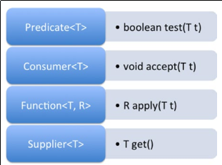

Рис. 7-1. Ієрархія винятків Java
Цілі
Об'єктно-орієнтований підхід є серцевиною більшості сучасних основних мов програмування. Для створення високоякісних проектів та програмного забезпечення важливо доре розуміти його концепції. Ця глава про проектування класів та наступна глава про продвинуте проектування класів пропонують соліний фундамент для створення якісних проектів на Java.
Для розуміння подальшого матеріалу треба добре знати такі прості концепції як методи, поля, як визначається конструктор.
Структурне програмування передбачає декомпозицію функціональності програмина різні процедури (функції), без приділення значної уваги даним, з якими може працювати кожна така процедура. Функції вільні оперувати та змінювати (зазвичай шлобальні та незахищені) дані.
В об'єктно-орієнтованому програмуванні (OOP) дані та пов'язана поведінка формують єдину одиницю, яку називають клас. Термін інкапсуляція посилається на поєднання даних та пов'язаніх функцій в єдину одиницю. Наприклад, в класі Circle radius та center визначені як приватні поля. Тепер до полів radius та center можна додати такі методи, як draw() та fillColor(), оскільки поля та методи близько відносяться одні до одних. Всі дані (поля), потрібні для методів класа доступні всередині самого класа. Іншими словами, клас інкапсулює свої поля та методи разом.
Модифікатори доступу визначають рівень видимості якоїсь сутності Java (класа, метода чи поля). Модифікатори доступу дозволяють ефективно реалізувати інкапсуляцію. Якби до всіх змінних-членів класа можна було б мати доступ звідусіль, то не було б сенсу збирати ці змінні в клас та інкапсулювати в класі дані та поведінку.
Екзамен OCPJP 8 влючає як прямі питання про модифікатори доступу, так і непрямі, відповіді на які потребують базових знань про модифікатори доступу. Отже, важливо розуміти різні модифікатори доступу, які підтримуються в Java.
Java підтримує чотири модифікатори доступу:
Розглянемо ці чотири типи модифікаторів доступу на прикладі наведених нижче класів програмі для малювання: Shape, Circle, Circles, and Canvas. Клас Canvas міститься в пакеті appcanvas, а інші три класи - в пакеті graphicshape (дивись Лістинг 2-1).
// Лістинг 2-1. Shape.java, Circle.java, Circles.java, and Canvas.java
// Shape.java
package graphicshape;
class Shape {
protected int color;
}
// Circle.java
package graphicshape;
import graphicshape.Shape;
public class Circle extends Shape {
private int radius; // приватне поле
public void area() { // публічний метод
// доступ до приватного поля radius всередині класа:
System.out.println("area: " + 3.14 * radius * radius);
}
// Метод fillColor з доступом по замовчанню
void fillColor() {
// доступ до захищеного поля в під-класі:
System.out.println("color: " + color);
}
}
// Circles.java
package graphicshape;
class Circles {
void getArea() {
Circle circle = new Circle();
// виклик публічного метода area() зсередини пакета:
circle.area();
// виклик fillColor() з доступом по замовчанню зсередини пакета:
circle.fillColor();
}
}
// Canvas.java
package appcanvas;
import graphicshape.Circle;
class Canvas {
void getArea() {
Circle circle = new Circle();
circle.area(); // виклик публічного метода area() ззовні пакета
}
}
Публічний модифікатор доступу найбільш ліберальний. Якщо клас чи його члени оголошені як public, до них можна отримати доступ з боку будь-якого іншого класа поза залежністю від меж пакетів. Це схоже на публічне місце в реальному світі, де можуть зустрітися співробітники фірми з різник підрозділів. На Лістингу 2-1 публічний метод area() в класі Circle доступний в самому пакеті так само, як і ззовні пакета (в класі Canvas).
Публічний метод класа доступний для зовнішнього світу тільки якщо клас оголошений як публічний. Якщо клас не вказує ніякого модифікатора доступу (тобто, має доступ по замовчанню), тоді публічний доступ доступний тільки з пакету, в якому розташований цей клас.
Приватний модифікатор доступу найбільш суворий. Приватний член класа не доступний поза класом; тільки члени того ж класа можуть мати доступ до цього приватного члена. Схоже на кімнату з бакнківськими комірками, до якої мають доступ деякий авторизований персонал та власники депозиту. В Лістингу 2-1 приватне поле radius класа Circle доступне лише зсередини класа Circle, та не доступне для будь-якого іншого класа поза залежністю від оточуючого пакета.
Захищений модифікатор доступу та модифікатор доступу по замовчанню дуже схожі. Якщо метод або поле оголошені як захищене чи по замовчанню, тоді вони доступні в межах пакету. Для надання доступу по замовчанню не потрібно ніяке ключове слово - без модифікатора доступа член має доступ по замовчанню. Також доступ по замовчанню відомий як доступ з захистом пакета. Захищений та по замовчанню доступи можна порівняти з доступністю конференц-кімнати лише для персоналу одного підрозділу.
Одна вагома різниця між цими модифікаторами доступу виявляється тоді, коли йдеться про під-клас, який належить іншому пакету в порівнянні з пакетом супер-класа. В такому випадку захищені члени доступні в підкласі, а члени з доступом по замовчанню - ні.
Клас (чи інтерфейс) не можна оголосити як приватний чи захищений. Більш за те, члени - методи чи поля - інтерфейса не можуть бути оголошені як приватні чи захищені.
В Лістингу 2-1 захищене поле color доступне в класі Circle, а метод з доступом по замовчанню fillColor() викликається в класі Circles.
Видимість при різних модифікаторах доступу підсумовано в Таблиці 2-1.
Таблиця 2-1. Модифікатори доступу та їх видимість
| Модифікатори доступу/доступність | В тому ж класі | Підклас в пакеті | Підклас поза пакетом | Зовнішній клас в пакеті | Зовнішній клас поза пакетом |
|---|---|---|---|---|---|
| Публічний | Так | Так | Так | Так | Так |
| Приватний | Так | Ні | Ні | Ні | Ні |
| Захищений | Так | Так | Так | Так | Ні |
| По замовчанню | Так | Так | Ні | Так | Ні |
Спадкування це механізм повторного використання в об'єктно-орієнтованому програмуванні. Із спадкуванням загальні властивості різних об'єктів використовуються разом для формування взамних відносин. Абстрактні та загальні властивості надаються в супер-класі, який доступний для більш специфічних під-класів. Наприклад, кольоровий принтер та чорно-білий принтер це різновиди принтера (одиночне спадкування); МФУ це принтер, сканер та фотокопір (множинне спадкування).
Чому спадкування - потужна особливість? Тому, що вона забезпечує модулювання класів в ієрархії, а ієрархічна модель легше зрозуміти. Наприклад, транспортні засоби можна логічно категоризувати як двоколісні, триколісні, чотриколісні і так далі. В категорії чотириколісних є автомобілі, мікроавтобуси, автобуси та вантажівки. В категорії автомобілів є хетчбеки, седани та універсали. При створенні ієрархії категорій легше розуміти, моделювати та писати програми.
Розглянемо простий приклад з попередніх розділів: клас Shape є базовим класом, а Circle це породжений клас. Інакше кажучи, Circle це Shape; аналогічно, Square це Shape. Таким чином, відношення спадкування можна називати відношенням ЦЕ (IS-A relationship).
В бібліотеці Javaспадкування використовується дуже широко. Рисунок 2-1 містить частину спадкової ієрархії з бібліотеки java.lang. Клас Number абстрагує різні числові (посилальні)) типи на кшталт Byte, Integer, Float, Double, Short та BigDecimal.
Рисункок 2-1. Частина спадкової ієрархії в пакеті java.lang
Клас Number має багато спільних методів, які спадкуються породженими класами. Породжені класи не повинні реалізовувати спільні методи, реалізовані класом Number. Крім того, можна використовувати породжений тип там, де очікується базовий тип. Наприклад, Byte це Number, що означає, що об'єкт типу Byte можна виористовувати там, де очікується об'єкт типу Number. Можна писати методи загального призначення (або алгоритми) при написанні методів базового типу. Лістинг 2-2 містить простий приклад.
// Лістинг 2-2. TestNumber.java
// Демонструє як абстрагування різних різновидів чисел в ієрархії Number
// стає у практичній нагоді
public class TestNumber {
// отримати масив чисел та обрахувати їх суму
public static double sum(Number []nums) {
double sum = 0.0;
for(Number num : nums) {
sum += num.doubleValue();
}
return sum;
}
public static void main(String []s) {
// створити масив Number
Number []nums = new Number[4];
// призначити об'єкти породжених класів
nums[0] = Byte.valueOf((byte)10);
nums[1] = Integer.valueOf(10);
nums[2] = Float.valueOf(10.0f);
nums[3] = Double.valueOf(10.0f);
// передати масив Number для отримання суми та надрукувати результат
System.out.println("Сума чисел: " + sum(nums));
}
}
Програма друкує
Сума чисел: 40.0
В методі main() оголошується nums як Number[]. Посилання Number можу містити об'єкти будь-яких з породжених від нього типів. Створюються об'єкти типів Byte, Integer, Float та Double з початковим значенням 10; масив nums містить ці елементи. (Зверніть увагу на явне приведення типу в Byte.valueOf((byte) 10) замість простого Byte.valueOf(10) - Byte приймає байтовий елемент 10 як int.)
Метод sum приймає Number[] та повертає суму елементів Number. Тип double може містити найбільший діапазон значень, тому використовується саме double в якості типу результата метода sum. Number має метод doubleValue, який повертає значення Number як значення double. Цикл проходить масив, додає значення double та по закінченню повертає суму.
Як можна бачити, метод sum() є загальним методом, який може оперувати будь-яким Number[]. Схожий приклад можна навести із стандартної бібліотеки Java, де клас java.util.Arrays має статичний метод binarySearch():
static int binarySearch(Object[] a, Object key, Comparator c)
Цей метод здійснює пошук наданого ключа (тип Object) в даному масиві Objects. Comparator це інтерфейс, який оголошує методи equals та compare. binarySearch можна використовувати для об'єктів типу будь-якого класа, який реалізує цей інтерфейс Comparator. Спадкування це потужна та корисна властивість для написання методів загального призначення.
Грецькі корені терміну поліморфізм означають "багато форм" однієї сутності. В реальності кожне повідомлення супроводжується якимось контекстом. В залежності від контекста може змінюватися значення повідомлення, а також значення відповіді на нього. Так само в ООП: повідомлення може бути інтерпретоване по-різному (поліморфізм), в залежності від об'єкта (конкретного екземпляра).
Поліморфізм може мати дві форми: динамічна та статична.
Зверніть увагу на використання абстрактними методами саме поліморфізму часу виконання. Абстрактні методі в інтерфейсах обговорюватимуться в наступній главі (Глава 3 – Продвинуте проектування класів Java).
Як вже було зазначено, посилання на об'єкт базового класа може посилатися на об'єкт породженого класа. З посилання базового класа можна викликати методи; однак, фактичний спосіб виклику залежить від динамічного типу об'єкта, на який вказує посилання базового класа. Тип посилання на базовий клас відомий як статичний тип об’єкта, а фактичний об’єкт, на який вказує посилання під час виконання, відомий як динамічний тип об’єкта.
Коли компілятор бачить виклик методу з посилання на базовий клас і якщо метод є перезаписуваним методом (нестатичним і нефінальним методом), компілятор відкладає визначення точного методу, який буде викликаний під час виконання (пізнє зв'язування). Під час виконання, на основі фактичного динамічного типу об'єкта, викликається відповідний метод. Цей механізм відомий як динамічне розв'язування методу або виклик динамічного методу .
Розглянемо метод area() в класі Shape. В залежності від похідного класа — Circle або Square, наприклад, — метод area() буде реалізований по-різному, як показано в Лістингу 2-3.
// Лістинг 2-3. TestShape.java
class Shape {
public double area() { return 0; } // реалізація по замовчанню
// інші члени
}
class Circle extends Shape {
private int radius;
public Circle(int r) { radius = r; }
// інші конструктори
public double area() {return Math.PI * radius * radius; }
// інші оголошення
}
class Square extends Shape {
private int side;
public Square(int a) { side = a; }
public double area() { return side * side; }
// інші оголошення
}
public class TestShape {
public static void main(String []args) {
Shape shape1 = new Circle(10);
System.out.println(shape1.area());
Shape shape2 = new Square(10);
System.out.println(shape2.area());
}
}
Ця програма друкує
314.1592653589793
100.0
Ця програма показує, як метод area() викликається на основі динамічного типу Shape. Оператор shape1.area(); викликає метод area() класа Circle, а оператор shape2.area(); викликає метод area() класа Square.
Розглянемо більш фундаментальне питання: навіщо може знадобитися перезаписувати методи? В ООП фундаментальна ідея спадкування полягає в наданні спільної функціональності (по замовчанню) в базовому класі, в той час як похідні класи мають надавати більш специфічну. В базовому класі Shape та похідних класах Circle і Square клас Shape надає реалізацію метода area() по замовчанню. Похідні класи Circle та Square визначають власні версії метода area(), які перезаписують метод area() базового класа. Отже, в залежності від типу створеного похідного об'єкта виклик метода area() з посилання на базовий клас буде визначений в правильний метод. Перезаписування (чи поліморфізм часу виконання) - це проста, але потужна ідея розширення функціональності.
Розглянемо поліморфізм часу компіляції (перевантаження). А потім знов повернемося до теми поліморфізму часа виконання для обговорення таких тем, як модифікатори видимості при перезаписуванні та вибір між композицією та спадкуванням.
Клас може мати багато методів з однаковими іменами. Але треба, щоб список їх параметрів відрізнявся. Якщо надаються різні типи параметрів та/або різна кількість параметрів, то можна визначити багато методів з одним іменем. Ця властивість називається перевантаження метода. Компілятор визначить виклик на користь правильного метода за кількістю та/або типами наданих аргументів.
Реалізуємо метод в класі Circle та назвемо його fillColor(); він буде заповнювати об'єкт кола різними кольорами. При вказанні кольору треба використовувати якусь кольорову схему - одну з двох: RGB або HSB.
Оскільки значення RGB цілі, а значення HSB - з плаваючою крапкою, тобто, відрізняються за типами даних, в методі fillColor() можна підтримувати обидві кольорові схеми.
class Circle {
// інші члени
public void fillColor (int red, int green, int blue) {
/* розфарбувати коло з використанням значень RGB */
}
public void fillColor (float hue, float saturation, float brightness) {
/* розфарбувати коло з використанням значень HSB */
}
}
Обидва методи fillColor() мають однакову назву та приймають по три параметри; однак, параметри відрізняються за типом. На основі типа аргумента при здійсненні виклику метода fillColor() класа Circle, компілятор точно визначить, який саме метод отримає виклик. Наприклад:
Circle c1 = new Circle(10, 20, 10);
c1.fillColor(0, 255, 255);
Circle c2 = new Circle(50, 100, 5);
c2.fillColor(0.5f, 0.5f, 1.0f);
Для об'єкта c1 виклик fillColor() має аргументи 0, 255 та 255. Отже, компілятор приизначить цей виклик методу fillColor(int red, int green, int blue). Для об'єкта c2 виклик fillColor() має аргументи 0.5f, 0.5f та 1.0f; отже він призначиться методу fillColor(float hue, float saturation, float brightness).
Метод fillColor() є перевантаженим методом. Методи мають однакову назву та однакову кількість параметрів, але типи параметрів відрізняються. Також можна перевантажувати метод, використовуючи різну кількість параметрів.
Такі перевантажені методи корисні для запобігання повторюваности того ж коду в різних функціях. Подивимось на приклад в Лістингу 2-4.
// Лістинг 2-4. HappyBirthday.java
class HappyBirthday {
// перевантажений метод wish з параметром String
public static void wish(String name) {
System.out.println("З днем народження, " + name + "!");
}
// перевантажений метод wish без параметрів;
// цей метод викликає метод wish(String)
public static void wish() {
wish("невідома людина");
}
public static void main(String []args) {
wish();
wish("Джеймс Гослінг"); // автор Java
}
}
Він надрукує:
З днем народження, невідома людина!
З днем народження, Джеймс Гослінг!
Метод wish(String name) призначений для побажання "З днем народження, " людині з відомим іменем. Метод по замовчанню wish() призначений для побажання будь-кому. Немає потреби повторювати оператор System.out.println в методі wish() - можна повторно використовувати визначення метода wish(String), передаючи значення "невідома людина" в якості аргумента по замовчанню в метод wish(). Таке повторне використання ефективне для великих на пов'язаних визначень методів, оскільки зберігає час для написання однакового коду.
Конструктор по замовчанню корисний для створення об'єктів з ініціалізацію значеннями по замовчанню. При потребі ініціалізувати об'єкти різними значеннями при кожному створенні можна надавати конструктору ці значення як аргументи. В класі можна мати багато конструкторів, що є перевантаженням конструкторів. Конструктор по замовчанню може ініціалізувати об'єкт класа початковими значеннями по замовчанню, а інші конструктори можуть приймати аргументи, які будуть використані при ініціалізації об'єкта.
Приклад класа Circle, який має перевантажені конструктори (див. Лістинг 2-5).
// Лістинг 2-5. Circle2.java
public class Circle2 {
private int xPos;
private int yPos;
private int radius;
// три перевантажені конструктори для Circle
public Circle2(int x, int y, int r) {
xPos = x;
yPos = y;
radius = r;
}
public Circle2(int x, int y) {
xPos = x;
yPos = y;
radius = 10; // радіус по замовчанню
}
public Circle2() {
xPos = 20; // значення для центра по замовчанню
yPos = 20;
radius = 10; // радіус по замовчанню
}
public String toString() {
return "центр = (" + xPos + "," + yPos + ") та радіус = " + radius;
}
public static void main(String[]s) {
System.out.println(new Circle2());
System.out.println(new Circle2(50, 100));
System.out.println(new Circle2(25, 50, 5));
}
}
Ця програма друкує
центр = (20,20) та радіус = 10
центр = (50,100) та радіус = 10
центр = (25,50) та радіус = 5
Компілятор визначив виклик конструктор по кількості аргументів. Конструктор по замовчанню не приймає аргументів та використовує деякі значення по замовчанню для xPos, yPos та radius (20, 20 та 10 відповідно). Конструктор Circle з двома параметрами (int x та int y) встановлює xPos та yPos в значення наданих аргументів, а для члена radius використовує 10 як значення по замовчанню. Конструктор Circle, який приймає три аргумента, встановлює відповідні поля об'єкта класа Circle.
Чи помітили ви дублювання коду в цих трьох конструкторах? Для уникнення такого дублювання - та зменшення зусиль для друкування- можна викликати один конструктор з іншого конструктора. Серед всіх трьох конструкторів той, який приймає координати x та y і radius, є найбільш загальним. Інші два конструктора можна переписати так, щоб вони викликали конструктор з трьома параметрами:
public Circle(int x, int y, int r) {
xPos = x;
yPos = y;
radius = r;
}
public Circle(int x, int y) {
this(x, y, 10); // передати 10 як радіус по замовчанню
}
public Circle() {
this(20, 20, 10); // значення по замовчанню для xPos, yPos та radius
}
Вивід - такий самий, як і в попередній програмі, але ця версія - коротша. Для виклику одного конструктора з іншого конструктора того ж класа використовується ключове слово this (посилання на поточний об'єкт).
Як компілятор визначає, який з перевантажених методів викликати? Спробуйте спрогнозувати вивід програми в Лістингу 2-6:
// Лістинг 2-6. Overloaded.java
class Overloaded {
public static void aMethod(int val) { System.out.println ("int"); }
public static void aMethod(short val) { System.out.println ("short"); }
public static void aMethod(Object val){ System.out.println ("object"); }
public static void aMethod(String val){ System.out.println ("String"); }
public static void main(String[] args) {
byte b = 9;
aMethod(b); // перший виклик
aMethod(9); // другий виклик
Integer i = 9;
aMethod(i); // третій виклик
aMethod("9"); // четвертий виклик
}
}
Вивід такий:
short
int
object
String
Як компілятори визначає ці виклики:
Процес визначення компілятором метода для виклику однієї з перевантажених версій визначень назівається визначенням перевантаження. Для визначення метода, що викликається, компілятор по-перше шукає точне співпадіння — визначення метода має точно таку саму кількість параметрів з такими самими типами. Якщо він не може знайти точне співпадіння, він шукає найближче співпадіння з використанням приведення типів (догори по ієрархії). Якщо компілятор не може знайти жодного співпадіння, він викликає помилку, як в Лістингу 2-7.
class OverloadingError {
public static void aMethod (byte val ) { System.out.println ("byte"); }
public static void aMethod (short val ) { System.out.println ("short"); }
public static void main(String[] args) {
aMethod(9);
}
}
Помилка:
OverloadingError.java:6: error: no suitable method found for aMethod(int)
aMethod(9);
^
method OverloadingError.aMethod(byte) is not applicable
(argument mismatch; possible lossy conversion from int to byte)
method OverloadingError.aMethod(short) is not applicable
(argument mismatch; possible lossy conversion from int to short)
1 error
Тип константи 9 - це int, а точного співпадіння для визначення метода aMethod для виклику aMethod(9) немає. Як ми бачили раніше для визначення перевантаження, компілятор може приводити типи (наприклад, byte до int) в пошуку найближчого співпадіння, але вні не робить спадний пошук (як, з int до byte чи int до short, як в нашому прикладі). Отже, компілятор не знаходить жодного співпадіння та викликає помилку.
Якщо комілятор не знаходить співпадіння, також виникатиме поилка. Приклад - в Лістингу 2-8.
// Listing 2-8. AmbiguousOverload.java
class AmbiguousOverload {
public static void aMethod (long val1, int val2) {
System.out.println ("long, int");
}
public static void aMethod (int val1, long val2) {
System.out.println ("int, long");
}
public static void main(String[] args) {
aMethod(9, 10);
}
}
Помилка компілятора:
AmbiguousOverload.java:10: error: reference to aMethod is ambiguous
aMethod(9, 10);
^
both method aMethod(long,int) in AmbiguousOverload and method aMethod(int,long) in AmbiguousOverload match
1 error
Чому цей виклик стає "неоднозначним"? Константи 9 та 10 - це int-и. Є два визначення метода aMethod: один aMethod(long, int) та другий aMethod(int, long). Отже для виклику aMethod(int, int) немає однозначного співпадіння. Ціле не може одночасно визначитися в тип long та в тип Integer. Що має обрати компілятор? При наявності двох варіантів компілятор викликає помилку.
Визначення перевантаженя хибить (з помилкою компіляції), якщо немає співпадінь, або їх більше одного.
Про перевантаження:
Сигнатура метода складається з його назви, кількості параметрів та їх типів. Можна перевантажувати методи з однаковими назвами, але з різними сигнатурами. Оскільки тип результата і специфікація винятків не формують сигнатуру, не можливо перевантажувати методи виключно на основі типу результата чи специфікації винятків.
Розглянемо перезаписування методів класа Object. У власних класах можна перезаписувати методи clone(), equals(), hashCode(), toString() та finalize(). Оскільки методи getClass(), notify(), notifyAll() та перевантажені версії метода wait() оголошені як final, їх перезаписувати не можна.
Навіщо взагалі перезаписувати методи класа Object? Для відповіді на це питання подивимося, що відбувається якщо не перезаписати метод toString() (Лістинг 2-9).
// Лістинг 2-9. Point.java
class Point {
private int xPos, yPos;
public Point(int x, int y) {
xPos = x;
yPos = y;
}
public static void main(String []args) {
// Надання методу println об'єкта Point
// автоматично викликає метод toString
System.out.println(new Point(10, 20));
}
}
Він друкує
Point@2f0e140b
Метод toString() визначений в класі Object, від якого спадкують всі класи в Java. Метод toString() визначений в класі Object так:
public String toString()
Метод toString() не прймає аргументів та повертає представлення об'єкта у вигляді String. Реалізація по замовчанню цього метода повертає версію геш-кода ClassName@hex об'єкта. Саме тому ми отримуємо такий нечитабельний вивід. Для кожного об'єкта шістнадцяткове значення відрізнятиметься. Наприклад, повторний запуск програми надрукує: Point@affc70. Отже, метод toString треба перезаписати для нашого класа Point.
При створенні нового класа скоріш за все знадобиться перезаписати цей метод для отримання бажаного строкового представлення об'єктів класа. Лістинг 2-10 показує покращену версію класа Point з перезаписаною версією метода toString().
// Лістинг 2-10. Point2.java
// покращена версія класа Point з перезаписаним методом toString
class Point2 {
private int xPos, yPos;
public Point2(int x, int y) {
xPos = x;
yPos = y;
}
// цей метод toString перезаписує реалізацію метода toString по замовчанню,
// яку надає базовий клас Object
public String toString() {
return "x = " + xPos + ", y = " + yPos;
}
public static void main(String []args) {
System.out.println(new Point2(10, 20));
}
}
Ця програма друкує
x = 10, y = 20
Як і очікувалося, так представляти об'єкт значно краще. Нижче наведено ще трохи покращену версію метода main() в реалізації нашого класа Point:
public static void main(String []args) {
Object obj = new Point(10, 20);
System.out.println(obj);
}
Він друкує
x = 10, y = 20
Статичний тип змінної obj це клас Object, а динамічний тип - Point. Оператор println викликає метод toString() змінної obj. Тут - метод toString() породженого класа, тобто метод toString() класа Point - так працює поліморфізм часу виконання.
При перезаписуванні треба бути уважним до рівнів доступу, назв методів та їх сигнатур. Нижче наведено метод toString() обговорюваного класа Point:
public String toString() {
return "x = " + xPos + ", y = " + yPos;
}
Якщо в цьому визначенні метода використати специфікатор доступу protected замість public - чи буде воно працювати?
protected String toString() {
return "x = " + xPos + ", y = " + yPos;
}
Ні, не буде. Після такої зміни компілятор зауважить
Point.java:12: error: toString() in Point cannot override toString() in Object
protected String toString() {
^
attempting to assign weaker access privileges; was public
1 error
При перезаписуванні можна надавати більш жорсткі привілеї доступу, а не більш м'які; інакше виникне помилка компіляції.
Ще одна версія метода toString(). Працюватиме?
public Object toString() {
return "x = " + xPos + ", y = " + yPos;
}
Отримаємо таку помилку компілятора:
Point.java:12: error: toString() in Point cannot override toString() in Object
public Object toString() {
^
return type Object is not compatible with String
1 error
В цьому разі компілятор повіомляє про помилку неспівпадіння оскільки тип результата в перезаписаному методі має бути саме таким, як в методі базового класа.
Ще приклад:
public String ToString() {
return "x = " + xPos + ", y = " + yPos;
}
Тепер компілятор не скаржиться. Але тепер метод називається ToString та він не має жодного стосунку до метода toString класа Object. Отже, цей метод ToString не перезаписує метод toString.
Для правильного перезаписування метода треба мати на увазі наступне. Перезаписуваний метод
Не можна перезаписати метод без його спадкування. Приватні методи не можна перезаписати, оскільки від них не можна спадкувати.
Сигнатури базового метода та перезаписуваного метода мають бути сумісні. Неправильне перезаписування доволі поширение джерело проблем в програмах на Java.
Сумісність типів результату
При переписуванні методів тип їх результатів має повністю співпадати. You know that the return types of the methods should exactly match when overriding methods. Однак, після введення властивості сумісності типів в Java 5, в якості результата перезаписаного метода можна надавати похідний клас. Навіщо може знадобитися ця властивість? Подивимось на ці перезаисані методи з однаковими типами результата:
abstract class Shape {
// інші методи пропущені
public abstract Shape copy();
}
class Circle extends Shape {
// інші методи пропущені
public Circle(int x, int y, int radius) { /* тут ініціалізація */ }
public Shape copy() { /* повернути копію цього об'єкта */ }
}
class Test {
public static void main(String []args) {
Circle c1 = new Circle(10, 20, 30);
Circle c2 = c1.copy();
}
}
Цей код викличе помилку компілятора "incompatible types: Shape cannot be converted to Circle". Причина: в призначенні "Circle c2 = c1.copy();" немає точного співпадіння для спадного приведення типу (downcast) від Shape до Circle.
Оскільки точно відомо, що метод copy класа Circle повертає об'єкт класа Circle, для уникнення помилки компіляції можна явно надати приведення типу:
Circle c2 = (Circle) c1.copy();
Оскільки такі спадні приведення типу надавати нудно (та більш-менш безглуздо), Java пропонує сумісні типи результата, в якості яких в перезаписаному методі можна надати похідний тип. Іншими словами, можна змінити визначення метода copy класа Circle таким чином:
public Circle copy() { /* повернути копію цього об'єкта */ }
Тепер призначення Circle c2 = c1.copy(); в методі main правильне та явного спадного приведення типу не потрібне (це добре).
А тепер перезапишемо метод equals класа Point. Перед ци подивимось на сигнатуру метода equals() класа Object:
public boolean equals(Object obj)
Метод equals() класа Object є перезаписуваним та приймає в якості аргумента об'єкт типу Object. Він перевіряє, чи наповнення поточного об'єкта співпадає з наповенням об'єкта, який надано в якості аргумента obj . Якщо співпадає, метод equals() повертає true; інашке він повертає false.
Покращимо код в Лістингу 2-10 та перезапишемо метод equals() в класі Point (дивись Лістинг 2-11). Чи буде така реалізація правильною?
// Лістинг 2-11. Point3.java
public class Point3 {
private int xPos, yPos;
public Point3(int x, int y) {
xPos = x;
yPos = y;
}
// перезаписати метод equals для виконання
// "глибокого" порівнянн двох об'єктів Point
public boolean equals(Point3 other){
if(other == null)
return false;
// дві точки (крапки?) еквівалентні лише якщо їх координати x та y співпадають
if( (xPos == other.xPos) && (yPos == other.yPos) )
return true;
else
return false;
}
public static void main(String []args) {
Point3 p1 = new Point3(10, 20);
Point3 p2 = new Point3(50, 100);
Point3 p3 = new Point3(10, 20);
System.out.println("p1 та p2 співпадають: " + p1.equals(p2));
System.out.println("p1 та p3 співпадають: " + p1.equals(p3));
}
}
Він друкує:
p1 та p2 співпадають: false
p1 та p3 співпадають: true
Вивід такий, як очікується, але чи є реалізація метода equals() правильною? Ні! Зробимо маленьку модифікацію в методі main() (тепер змінні належать класу Object):
public static void main(String []args) {
Object p1 = new Point(10, 20);
Object p2 = new Point(50, 100);
Object p3 = new Point(10, 20);
System.out.println("p1 та p2 співпадають: " + p1.equals(p2));
System.out.println("p1 та p3 співпадають: " + p1.equals(p3));
}
Тепер програма надрукує
p1 та p2 співпадають: false
p1 та p3 співпадають: false
Чому? Обидва методи main() еквівалентні. Але в новій реалізації метода main() для оголошення змінних p1, p2 та p3 використовується тип Object. Динамічний тип цих трьох змінних це Point, тож має відбутися виклик переписаного метода equals(). Однак, переписування невірне: Метод equals() мусить мати аргумент Object, а не Point! Поточна реалізація метода equals() в класі Point маскує (а не перезаписує) метод equals() класа Object. Отже, метод main() викликає базову версію, яка є реалізацією по замовчанню Point в класі Object!
Якщо назви чи сигнатури метода базового класа та метода, який перезаписується, не співпадають, виникнуть помилки. Тож, треба бути впевненим в їх точному співпадінні.
Для подолання проблем при перевантаженні можна використовувати анотацію @Override, яка була запропонована в Java 5. Ця анотація вказує компілятору Java на намір програміста перезаписати метод. В разі, коли компілятор не задоволений перезаписуваним методом, він поскаржиться, що буде корисним. Також, ця анотація робить програму біль зрозумілою, оскільки анотація @Override перед визначенням метода допомагає у переписуванні метода.
Приклад кода з анотацією @Override для метода equals:
@Override
public boolean equals(Point other) {
if(other == null)
return false;
// дві точки (крапки?) еквівалентні лише якщо їх координати x та y співпадають
if((xPos == other.xPos) && (yPos == other.yPos))
return true;
else
return false;
}
Для цього кода виникне помилка компіляції:
Point.java:11: error: method does not override or implement a method from a supertype
@Override
^
1 error
Як її виправити? Треба передавати аргумент типу Object в метод equals. Лістинг 2-12 показує приграму з правильним методом equals.
// Лістинг 2-12. Point4.java
public class Point4 {
private int xPos, yPos;
public Point4(int x, int y) {
xPos = x;
yPos = y;
}
// переписати метод equals для виконання "глибокого" порівняння двох об'єктів Point4
@Override
public boolean equals(Object other) {
if(other == null)
return false;
// перевірити чи є динамічний тип параметра 'other' типом Point4
// якщо 'other' належить іншому типу, два об'єкти не можуть співпадати
// якщо 'other' належить типу Point4 (чи одному за похідних класів), то
// привести тип об'єкта до Point4, а потім перевірити члени на співпадіння
if(other instanceof Point4) {
Point4 anotherPoint4 = (Point4) other;
// дві точки (крапки?) еквівалентні лише якщо їх координати x та y співпадають
if((xPos == anotherPoint4.xPos) && (yPos == anotherPoint4.yPos))
return true;
}
return false;
}
public static void main(String []args) {
Object p1 = new Point4(10, 20);
Object p2 = new Point4(50, 100);
Object p3 = new Point4(10, 20);
System.out.println("p1 та p2 співпадають: " + p1.equals(p2));
System.out.println("p1 та p3 співпадають: " + p1.equals(p3));
}
}
Тепер програма надрукує
p1 та p2 співпадають: false
p1 та p3 співпадають: true
Тепер вивід такий, як очікувалося, а реалізація метода equals правильна.
Яасто корисно викликати в перезаписуваному методі метод базового класа. Для цього можна використовувати ключове слово super. В конструкторах похідного класа можна викликати конструктор базового класа з використанням ключового слова super. Такий виклик має бути першим оператором в конструкторі. Можна також використовувати ключове слово super для посилання на члени мазового класа. В таких випадках таке ключове слово не повинно бути першим оператором в тілі метода. Розглянемо приклад.
Ми реалізуємо клас Point для точки на площині: вона має координати x та y. Також можна реалізувати клас точки в 3D просторі з координатами x, y та z. Для цього не треба починати реалізацію с нуля: можна розширити точку на площині та додати координату z в клас для 3D-точки. Спочатку перейменуємо просту реалізацію класа Point в Point2D. Потім створимо клас Point3D для розширення Point2D (дивись Лістинги 2-13 та 2-14).
// Лістинг 2-13. Point2D.java
class Point2D {
private int xPos, yPos;
public Point2D(int x, int y) {
xPos = x;
yPos = y;
}
public String toString() {
return "x = " + xPos + ", y = " + yPos;
}
public static void main(String []args) {
System.out.println(new Point2D(10, 20));
}
}
// Лістинг 2-14. Point3D.java
// Створення класа Point3D через розширення класа Point2D
public class Point3D extends Point2D {
private int zPos;
// надати публічний конструктор, який приймає три аргументи (значення x, y та z)
public Point3D(int x, int y, int z) {
// виклик конструктора суперкласа з двома аргументами
// тобто, викликати Point2D(int, int) з конструктора Point3D(int, int, int))
super(x, y); // super - перший оператор в методі
zPos = z;
}
// переписати метод toString
public String toString() {
return super.toString() + ", z = " + zPos;
}
// для перевірки правильного розширення викликати метод toString об'єкта Point3D
public static void main(String []args) {
System.out.println(new Point3D(10, 20, 30));
}
}
Програма друкує
x = 10, y = 20, z = 30
В класі Point2D члени класа xPos та yPos приватні, тож до них немає безпосереднього доступу для їх ініціалізації в конструкторі Point3D. Однак, можна викликати конструктор суперкласа з використанням ключового слова super та надати йому аргументи. Тут super(x, y); викликає конструктор базового класа Point2D(int, int). Цей виклик конструктора суперкласа має бути першим оператором; якщо його викликати після zPos = z;, виникне помилка компілятора:
public Point3D(int x, int y, int z) {
zPos = z;
super(x, y);
}
Point3D.java:19: call to super must be first statement in constructor
super(x, y);
Схожим чином, можна викликати метод toString() базового класа Point2D в реалізації toString() породженого класа Point3D з використанням ключового слова super.
Перезаписування методів equals та hashCode важливо робити правильно для використання в таких класах, як HashMap та HashSet, проя які йтиметься в Главі 4. Лістинг 2-15 містить простий приклад класа Circle для кращого розуміння можливих проблем при використанні таких колекцій, як HashSets.
// Лістинг 2-15. TestCircle.java
// Програма показує важливість переписування методів equals() та hashCode()
import java.util.*;
class Circle {
private int xPos, yPos, radius;
public Circle(int x, int y, int r) {
xPos = x;
yPos = y;
radius = r;
}
public boolean equals(Object arg) {
if(arg == null) return false;
if(this == arg) return true;
if(arg instanceof Circle) {
Circle that = (Circle) arg;
if( (this.xPos == that.xPos) && (this.yPos == that.yPos)
&& (this.radius == that.radius )) {
return true;
}
}
return false;
}
}
class TestCircle {
public static void main(String []args) {
Set<Circle> circleList = new HashSet<Circle>();
circleList.add(new Circle(10, 20, 5));
System.out.println(circleList.contains(new Circle(10, 20, 5)));
}
}
Він друкує false (не true)! Чому? Клас Circle перезаписує метод equals(), але не перезаписує метод hashCode(). При використанні об'єктів класа Circle в стандартних контейнерах, це стає проблемою. Для швидкого пошуку контейнери порівнюють геш-коди об'єктів. Якщо метод hashCode() не перезаписаний, тоді — навіть якщо передаються об'єкти з однаковим змістом — контейнер не знайде об'єкт! Тож треба перезаписати метод hashCode().
При використанні об'єкта в контейнерах HashSet чи HashMap, треба правильно перезаписати методи hashCode() та equals(). Якщо цього не зробити, при використанні цих контейнерів можливі неприємні сюрпризи!
Як треба перезаписувати метод hashCode()? В ідеальному випадку, методо hashCode() має повертати унікальні геш-коди для різних об'єктів.
Метод hashCode() повинен повертати те саме геш-значення, якщо метод the equals() повертає true. А у випадку різних об'єктів (тобто метод equals() повертає false)? Краще (хоча й не обов'язково), щоб метод hashCode() повертав різні значення для різних об'єктів. Причина полягає в тому, що складно написати такий метод hashCode(), який повертав би унікальні значення для кожного об'єкта.
Методи hashCode() та equals() мають відповідати один одному в межах класа. На практиці важливо слідувати правилу: метод hashCode() має повертати те саме геш-значення для двох об'єктів, якщо для них метод equals() повертає true.
При реалізації метода hashCode() можна використовувати значення членів екземпляра класа для створення геш-значення. Нижче наводиться проста реалізація метода hashCode() класа Circle:
public int hashCode() {
// використання бітових операторів ^ для генерації майже унікальних
// геш-кодів на базі простих чисел 7, 11 та 53,
// але можна використовувати будь-які члени
return (7 * xPos) ^ (11 * yPos) ^ (53 * yPos);
}
Якщо запустити метод main(), він надрукує “true”. В цій реалізації метода hashCode(), значення множаться на прості числа та використовується побітова операція (виключне або). Для кращої геш-функції можна написати більш складний код для метода hashCode(), але така реалізація достатня для практичних цілей.
Побітові оператори можна використовувати для значень типу int. А що з іншими типами, плаваючу крапку чи посилальні типи? Для приклада наведено реалізацію hashCode() класа java.awt.Point2D, який має значення дісного з плаваючою крапкою для x та y. Методи getX() та getY() повертають значення відповідно x та y:
public int hashCode() {
long bits = java.lang.Double.doubleToLongBits(getX());
bits ^= java.lang.Double.doubleToLongBits(getY()) * 31;
return (((int) bits) ^ ((int) (bits >> 32)));
}
Цей метод використовує метод doubleToLongBits(), який приймає значення double та повертає значення long. Для значень з плавоючою крапкою x та y (які повертаються методами getX та getY), ми отримаємо значення long, з якими можна маніпулювати по-бітово в методі hashCode().
Тепер - про реалізацію метода hashCode для класа з членами посилальних типів? Наприклад, розглянемо використання екземпляра класа Point в якості члена замість полів примітивних типів xPos та yPos:
class Circle {
private int radius;
private Point center;
// інші члени пропущені
}
В такому випадку можна використати метод hashCode() класа Point для реалізації метода hashCode класа Circle:
public int hashCode() {
return center.hashCode() ^ radius;
}
Окремі абстрації пропонують певну функціональність, яку треба комбінувати з іншими об'єктами для представлення більшої абстракції: скомпонованого з менших об'єкта. Для вирішення реальних програмних проблем інколи треба створювати такі составні об'єкти. В таких випадках складений об'єкт вступає у відношення "МАЄ" з влкаденими об'єктами, а базова концепція називається композицією об'єктів.
Для аналогії, комп'ютер це складений - композитний - об'єкт, який містить інші об'єкти, такі як CPU, пам'ять та жорсткий диск. Іншими словами, об'єкт комп'ютер знаходиться у відношенні "МАЄ" з іншими об'єктами. Лістинг 2-16 визначає клас Circle, який використовує об'єкт Point для визначення центра Circle.
// Лістинг 2-16. Circle3.java
// Point незалежний клас, який використовується з класом Circle3
class Point {
private int xPos;
private int yPos;
public Point(int x, int y) {
xPos = x;
yPos = y;
}
public String toString() {
return "(" + xPos + "," + yPos + ")";
}
}
// Circle3.java
public class Circle3 {
private Point center; // Circle3 "містить" об'єкт Point
private int radius;
public Circle3(int x, int y, int r) {
center = new Point(x, y);
radius = r;
}
public String toString() {
return "центр = " + center + " і радіус = " + radius;
}
public static void main(String []s) {
System.out.println(new Circle3(10, 10, 20));
}
// інші члени (конструктори, метод area и т.п.) пропущені ...
}
В цьому прикладі, Circle має об'єкт Point. Іншими словами, Circle та Point знаходяться у відношенні "МАЄ; тобто, Circle це складений об'єкт, який містить об'єкт Point. Таке рішення краще у порівнянні з використанням незалежних цілих членів xPos та yPos. Чому? Можна повторно виористовувати функціональність, яку надає класом Point. Зверніть увагу на метод toString() в класі Circle:
public String toString() {
return "центр = " + center + " і радіус = " + radius;
}
Змінна center використовується з методом center.toString(), тож метод toString класа Point може бути повторно використаний в методі toString класа Circle.
Тепер ми маємо знання про композицію та спадкування. В деяких ситуаціях важко обрати між ними.Важливо пам'ятати, що срібної кулі не існує - всі проблеми одним механізмом не вирішити. Кожну ситуацію треба уважно аналізувати, а потім обирати той, що підходить краще.
Допоміжне правило полягає у використанні фраз "МАЄ" та "ЦЕ" для композиції та спадкування, відповідно. Наприклад,
Це правило може стати у нагоді для пошуку неправильних відношень. Наприклад, відношення "авто ЦЕ колесо" повністю невірне, що означає, що не можна мати відношення спадкування між класами Car та Tire. Однак, відношення "авто МАЄ колесо" (в сенсі, що авто має одно чи більше колес) я правильним - можна скласти об'єкт Car, який вміщує об'єкти Tire.
В реальних сцеаріях відмінності у відношеннях можуть бути нетривіальними. Можна створити базовий клас, та помістити в нього спільну функціональність багатьох класів. Завжди варто перевіряти, чи існує відношення "ЦЕ" між похідними класами та базовим класом. Якщо - ні, краще використати композицію замість спадкування.
Наприклад, розглянемо класи наборів даних DynamicDataSet та SnapShotDataSet, які потребують спільну функціональність — скажімо, сортування. Тепер можна породити ці класи наборів даних від реалізації сортування, як в Лістингу 2-17.
// Лістинг 2-17. Sorting.java
import java.awt.List;
public class Sorting {
public List sort(List list) {
// реалізація сортування
return list;
}
}
class DynamicDataSet extends Sorting {
// реалізація DynamicDataSet
}
class SnapshotDataSet extends Sorting {
// реалізація SnapshotDataSet
}
Це погане рішення і ось чому:
В такому випадку краще використовувати композицію — іншими словами, використовувати відношення "МАЄ", а не "Є". Код з результатом проектування класів наведено в Лістингу 2-18.
// Лістинг 2-18. Sorting2.java
import java.awt.List;
interface Sorting2 {
List sort(List list);
}
class MergeSort implements Sorting2 {
public List sort(List list) {
// реалізація сортування
return list;
}
}
class QuickSort implements Sorting2 {
public List sort(List list) {
// реалізація сортування
return list;
}
}
class DynamicDataSet {
Sorting2 sorting;
public DynamicDataSet() {
sorting = new MergeSort();
}
// реалізація DynamicDataSet
}
class SnapshotDataSet {
Sorting2 sorting;
public SnapshotDataSet() {
sorting = new QuickSort();
}
// реалізація SnapshotDataSet
}
Використовуйте спадкування, коли підклас уточнює базовий клас, з використанням динамічного поліморфізму. В інших випадках використовуйте композицію для отримання кода, який легко змінювати, та який слабко зв'язаний. Тобто, надавайте перевагу використанню композиції, а не спадкування.
Існує багато ситуацій, коли треба стоврювати спеціальні різновили класів. В цьому розділі обговоримо два такі різновили: синглтони та незмінні класи.
Інколи треба гарантувати, щоб певний клас був представлений лише одним екземпляром. Наприклад, треба визначити клас для внесення змін в реєстр, чи клас, який керує чергою завдань принтера, чи клас менеджер потоків. У всіх цих ситуаціях бажано уникнути помилок, які важко знайти, - шляхом забезпечення існування не більше одного об'єкта таких класів. Для цього можна створити клас синглтон.
Клас синглтон гарантує, що буде створений лише один екзземпляр такого класа. Для забезпечення точки доступу клас контролює створення свого об'єкта. Класи синглтон можна знайти в багатьох місцях Java Development Kit (JDK), наприклад, java.lang.Runtime.
Рисунок 2-2 показує діаграму класів для класа синглтон. Вона містить один клас, який можна зробити синглтоном. Він має приватний конструктор та статичний метод для отримання синглтон об'єкта.
Рисунок 2-2. Діаграма класів UML класа синглтон
Клас синглтон пропонує дві речі: один та лише один екземпляр класа, та глобальну єдину точку доступу до того об'єкта.
Припустимо, що треба реалізувати клас для журналювання деталей програми для відслідковування ходу її виконання з метою відлагодження. Для досягнення цієї мети може знадобитися гарантувати існування лише одного екземпляра класа Logger, отже клас Logger можна зробити класом синглтон (дивись Лістинг 2-19).
// Лістинг 2-19. Logger.java
// Клас Logger може мати в програмі лише один екземпляр; ця вимога гарантує
// використання програмою того самого екземпляра
public class Logger {
// оголосити приватний конструктор для заборони створення екземплярів
// цього класа безпосередньо клієнтами
private Logger() {
}
// по замовчанню, це поле ініціалізується в null
private static Logger myInstance;
// статичний метод для використання клієнтами для отримання екземпляра класа Logger
public static Logger getInstance() {
if(myInstance == null) {
// це перший раз виклику цього метода
// тому myInstance is null
myInstance = new Logger();
}
// повертати посилання на той самий об'єкт кожен раз
// коли викликається getInstance
return myInstance;
}
public void log(String s) {
// тривіальна реалізація журналу,
// в якій наданий рядок друкується в консолі
System.err.println(s);
}
}
Розглянемо реалізацію синглтон класа Logger. Конструктор класа оголошений як приватний, тож не можливо просто створити новий екземпляр класа Logger через оператор new. Єдиний спосіб отримати екземпляр цього класа - викликати статичний метод класа getInstance(). В ньому перевіряється, чи вже існує об'єкт класа Logger. Якщо ні, метод створює екземпляр класа Logger та призначає його статичній змінній-члену. В такий споіб при кожному виклику метода getInstance() буде повертатися один той самий об'єкт класа Logger.
Насправді важливо (але й складно) гарантувати, що реалізація синглтону дозволяє лише один екземпляр класа. Наприклад, реалізація, яку наведено в Лістингу 2-19, працює лише в разі, коли програма одно-потокова. В разі багатьох потоків, спроба отримати синглтон об'єкт може привести до створення багатьох обє'ктів, що - звісно - порушує ціль реалізації синглтона. Лістинг 2-20 містить версію класа Logger, яка реалізує шаблон проекту синглтона в багато-потоковому оточенні.
// Лістинг 2-20. Logger2.java
public class Logger2 {
private Logger2() {
// приватний конструктор для заборони прямого створення екземпляра
}
private static Logger2 myInstance;
public static synchronized Logger2 getInstance() {
if(myInstance == null)
myInstance = new Logger2();
return myInstance;
}
public void log(String s){
// реалізація журнала
System.err.println(s);
}
}
Зверніть увагу на ключове слово synchronized в цій реалізації. Це кючове слово є механізмом паралелізму в Java, який дозволяє лише один потік в один момент часу у синхронизованій області. Детальніше про це йдеться в Главі 11, присвяченій паралелізму.
Отже, для того, щоб до метода можна було б мати доступ з боку лише одного потока в одиницю часу, цей метод має бути синхронізований. Тепер рішення стає коректним, але виникає інша проблема: слабка продуктивність. Можливо зробити цей метод синхонізованим лише при першому виклику, але оскільки весь метод оголошений як синхронізований, то всі наступні його виклики утикаються в гірло пляшки.
Лістинг 2-21 містить іншу реалізацію класа Logger, в основі якої лежить ідіома "ініціалізація за вимогою". Ця ідіома передбачає використання внутрішній класів та не використовує конструкції синхронізації (про внутрішні класи йдеться в Главі 3). Вона експлуатує той факт, що внутрішні класи не завантажуються до моменту з'явлення посилання на них.
// Лістинг 2-21. Logger3.java
public class Logger3 {
private Logger3() {
// приватний конструктор
}
public static class Logger3Holder {
public static Logger3 logger = new Logger3();
}
public static Logger3 getInstance() {
return Logger3Holder.logger;
}
public void log(String s) {
// реалізація журналу
System.err.println(s);
}
}
Це рішення щодо синглтонів є продуктивним та працює в програмах з багатьма потоками. Однак, перед закриттям обговорення синглтонів - ще зауваження. По-перше, використовуйте синглтони лише там, де вони дійсно потрібні. По-друге, впевніться в тому, що ваша реалізація синглтону створює дійсно один екземпляр навіть в багато-поточному оточенні.
Незмінний об'єкт після створення та ініціалізації не можна змінювати. Можна викликати методи доступу (так звані, геттери), копіювати об'єкти або передавати їх як аргументи — але методи не можуть дозволити зміну стану об'єкта. Класи-обгортки (такі як Integer чи Float) та клас String - це відомі приклади незмінних класів.
имо про клас String. String є незмінним: після створення об'єкта String він не може бути змінений. А як же з такими методами, як trim, який видаляю лідуючі чи прикінцеві пробільні символи – такі методи змінюють стан об'єкта String? Ні. Метод trim видаляє такі символи та повертає новий об'єкт String замість змінення наданого в якості аргумента String.
Створення незмінних об'єктів надає багато переваг. Обговоримо деякі з них в контексті класа String:
String str1 = new String("абв");
String str2 = new String("абв");
System.out.println("str1 == str2: " + (str1 == str2));
System.out.println("str1.intern() == str2.intern(): "
+ (str1.intern() == str2.intern()));
// код надрукує:
str1 == str2 is false
str1.intern() == str2.intern() is true
Переваги використання незмінних об'єктів так підкреслює Joshua Bloch в своїй книзі "Effective Java": "Класи мають бути незмінними поки не з'являється дуже вагома причина зробити їх змінними... Якщо клас не можна зробити незмінним, треба максимально обмежити його змінність.”
При створенні власних незмінних об'єктів треба мати на увазі наступне:
Обговорення ключового слова final - в наступній Главі 3 "Продвинуте проектання класів".
Оглянемо клас String для розуміння того, як перелічені аспекти реалізовані в ньому:
Нижче наведено незміний клас для кола. Для стислості в прикладі показані лише методи для ілюстрації визначення незмінного класа (Лістинг 2-22).
// Лістинг 2-22. ImmutableCircle.java
// Point це змінюваний клас
class Point {
private int xPos, yPos;
public Point(int x, int y) {
xPos = x;
yPos = y;
}
public String toString() {
return "x = " + xPos + ", y = " + yPos;
}
int getX() { return xPos; }
int getY() { return yPos; }
}
// ImmutableCircle це незмінний клас – стан його об'єктів
// не може бути змінений після створення
public final class ImmutableCircle {
private final Point center;
private final int radius;
public ImmutableCircle(int x, int y, int r) {
center = new Point(x, y);
radius = r;
}
public String toString() {
return "центр: " + center + " і радіус = " + radius;
}
public int getRadius() {
return radius;
}
public Point getCenter() {
// повернути копію об'єкта для запобігання
// змінення значення changed в коді поза класом
return new Point(center.getX(), center.getY());
}
public static void main(String []s) {
System.out.println(new ImmutableCircle(10, 10, 20));
}
// інші члени пропущені...
}
Ця програма надрукує
центр: x = 10, y = 10 і радіус = 20
Зверніть увагу на наступні аспекти у визначенні класа ImmutableCircle:
Незмінні об'єкти мають деякі вади. Для забезпечення незмінності методи в незмінних класах можуть настворювати велику кількість об'єктів. Наприклад, кожного разу при виклику getCenter() класа ImmutableCircle, цей метод створює копію об'єкта Point та повертає її. За цієї причини може знадобитися визначити також змінювану версію класа, наприклад, клас Circle.
Клас String корисний в багатьох сценаріях; якщо викликати методи trim, concat чи substring в циклі, то вони створять багато (тимчасових) об'єктівString. На щастя, Java пропонує класи StringBuffer та StringBuilder, які змінювані. Вони надають схожу в порівнянні з String функціональність, але об'єкти можуть змінюватися. Отже, в залежності від контекста, можна використовувати клас String або один з класів StringBuffer or StringBuilder.
Ключове слово static може використовуватися в Java різними способами. Припустимо написання простого класа, який підраховує кількість своїх створених об'єктів. Чи працюватиме програма в Лістингу 2-23?
// Лістинг 2-23. Counter.java
// Клас Counter має рахувати кількість створених екземплярів класа
public class Counter {
private int count; // змінна для збереження кількості створених об'єктів
// для кожного створеного об'єкта Counter викликається конструктор по змовчанню;
// тож, оновлювати лічильник треба всередині конструктора по замовчанню
public Counter() {
count++;
}
public void printCount() { // метод для друку значення лічильника
System.out.println("Кількість створених екземплярів: " + count);
}
public static void main(String []args) {
Counter anInstance = new Counter();
anInstance.printCount();
Counter anotherInstance = new Counter();
anotherInstance.printCount();
}
}
Вивід програми такий:
Кількість створених екземплярів: 1
Кількість створених екземплярів: 1
З вивод видно, що клас не відслідковує кількість створений об'єктів. Чому?
Для підрахунку кількості об'єктів використана змінна екземпляра count. Оскільи кожен екземпляр має своє значення для цієї змінної, він завжди друкує 1! Тут потрібна змінна зі спільним доступом серед всіх екземплярів. Цього можна досягти оголошенням змінної як static. Статична змінна пов'язана з самим класом, а не з об'єктом чи екземпляром; такі змінні називаються змінними класа. Статична змінна ініціалізується один раз на початку виконання програми. Статична змінна розділяє свій стан з усіма екземплярами класа. Доступ до статичної змінної відбувається з використанням назви класа (а не екземпляра). Лістинг 2-24 показує правильну реалізацію класа Counter зі змінною count та методом printCount, оголошеними як статичні.
// Лістинг 2-24. Counter2.java
// Клас Counter має рахувати кількість створених екземплярів класа
public class Counter2 {
private static int count; // змінна для збереження кількості створених об'єктів
// для кожного створеного об'єкта Counter викликається конструктор по змовчанню;
// тож, оновлювати лічильник треба всередині конструктора по замовчанню
public Counter2() {
count++;
}
public static void printCount() { // метод для друку значення лічильника
System.out.println("Кількість створених екземплярів: " + count);
}
public static void main(String []args) {
Counter2 anInstance = new Counter2();
// printCount викликається з використанням назви класа
// а не назви змінної екземпляра
Counter2.printCount();
Counter2 anotherInstance = new Counter2();
Counter2.printCount();
}
}
Програма надрукує:
Кількість створених екземплярів: 1
Кількість створених екземплярів: 2
Статична змінна count ініціаоізується з початком виконання. При створенні першого об'єкта лічильник збільшується на одиницю. Так само, при створенні другого об'єкта значення count стає 2. Як видно, обидва об'єкти оновлюють одну копію змінноїcount.
Зверніть увагу на те, що виклик printCount() тепер використовує назву класа Counter: Counter.printCount(). Компілятор сприйме попередні два виклики anInstance.printCount() та anotherInstance.printCount() тому що немає семантичної різниці між викликами статичного метода з використанням назви класа чи назви змінної екземпляра.Однак, використовувати змінні екземпляра для виклику статичного метода не рекомендується. Є практикою домовленостей викликати методи екземпляра, використовуючи змінні екземпляра, а статичні методи - використовуюяи назви класів.
Статичний метод може мати доступ лише до статичніх змінних та викликати лише статичні методи. Навпаки, метод екземплляра (не статичний) може викликати статичний метод та мати доступ до статичної змінної.
Окрім статичних змінних та методів у визначенні класа можна визначати статичний блок. Такий статичний блок буде виконаний JVM при завантаженні класа в пам'ять. Наприклад, в попередньому прикладі, для ініціалізації змінної в значення 1 замість 0 count можна визначити статичний блок, як показано в Лістингу 2-25.
// Лістинг 2-25. Counter3.java
public class Counter3 {
private static int count;
static {
// код в цьому статичному блоці буде виконаний
// коли JVM завантажить клас в пам'ять
count = 1;
}
public Counter3() {
count++;
}
public static void printCount() {
System.out.println("Кількість створених екземплярів: " + count);
}
public static void main(String []args) {
Counter3 anInstance = new Counter3();
Counter3.printCount();
Counter3 anotherInstance = new Counter3();
Counter3.printCount();
}
}
Програма надрукує:
Кількість створених екземплярів: 2
Кількість створених екземплярів: 3
Не треба плутати статичний блок з конструктором. Конструктор викликається при створенні екземпляра класа, а статичний блок - при завантаженні відповідного класа віртуальною машиною Java.
Коротеньк оглянемо ключові моменти цієї глави.
Реалізовувати інкапсуляцію
Реалізовувати спадкування з модифікаторами видимості та композицію
Реалізовувати поліморфізм
Перезаписувати методи hashCode, equals та toString в класі Object
Створювати та використовувати класи синглтон та незмінні класи
Розроблювати код з використанням ключового слова static в блоках ініціалізації, змінних, методах та класах
Цілі
В минулій частині ви вивчили базові концепції ООП та навчилися використовувати їх для побудови програм Java. В цій главі ви вивчите продвинуті концепції проектування класів. Також ви дізнаєтеся про ключову особливість функціонального програмування, яка з'явилася в Java 8: лямбда-вирази.
Значна частина питань екзамену OCPJP пов'язана із змінами, які з'явилися в мові Java та основній бібліотеці Java 8. Ця глава розповідає про лямбда-вирази, які є базою для розуміння Stream API та можливостей пакета java.util.function. Отже, обов'язково прочитайте розділи про інтерфейси та лямбда вирази.
Часто буває, що потрібно визначити якусь абстракцію без завдання деталей реалізації. В таких випадках можна використати абстрактні класи чи інтерфейси. Абстрактні класи використовуються, коли треба визначити абстракцію з певною загальною функціональністю.
Подивимось на клас Shape, який пропонує абстракцію різних фігур, які можна зобразити в програмі для малювання.
abstract class Shape {
public double area() { return 0; } // реалізація по замовчанню
// інші члени
}
Для оголошення того, що клас є абстрактним, перед його визначенням використовується ключове слово abstract. Можна створювати об'єкти Shapes, такі як Square чи Circle, але чи є сенс у створенні об'єкта безпосередньо класу Shape? Ні, в реальності не існує об'єкта Shape.
При спробі створити екземпляр класу Shape компілятор повідомить про помилку, оскількі абтрактні класи не можуть мати екземплярів.
У визначенні класу Shape є метод area(), який повертає площу окремої фігури. Цей метод може бути застосований для всіх вігур, саме тому його місце - в базовому класі Shape. Однак, якою має бути реалізація метода area() в класі Shape? Не можна надати реалізацію по замовчанню; така реалізація цього метода: return 0; - це погане рішення, хоча компілятор прийме його. Краще оголосити цей метод в якості абстрактного:
public abstract double area(); // примітка: без реалізації (тобто, без визначення тіла методу)
Як і у випадку з оголошенням абстрактного класу, оголошення метода area() в якості абстракного здійснюється з використанням ключового слова abstract. Головна різниця між звичайним методом та абстрактним методом полягає в тому, що для абстрактного методу не надається тіло. Якщо надати тіло, виникне помилка:
public abstract double area() { return 0; } // помилка компілятора!
Отримаємо помилку для такого визначення: "abstract methods cannot have a body". Оголошення абстрактного метода примушує всі підкласи надавати для нього визначення, саме тому його не можна надати в самому абстрактному класі. Якщо породжений клас не реалізує всі абстрактні методи, визначені в базовому класі, такий породжений клас має бути оголошений як абстрактний клас, як в наступному прикладі:
abstract class Shape {
public abstract double area(); // без реалізації
// інші члени
}
class Rectangle extends Shape { }
Цей фрагмент викличе помилку компіляції "Rectangle is not abstract and does not override abstract method area() in Shape". Для її виправлення треба оголосити породжений клас як abstract або надати в породженому класі визначення метода area(). Немає сенсу оголошувати Rectangle як абстрактний; тож можна так визначити метод area():
class Rectangle extends Shape {
private int length, height;
public double area() { return length * height; }
// інші члени ...
}
Передивіться наступні вислови про абстрактні класи та абстрактні методи для екзамену OCPJP 8:
Ключове слово final може застосовуватися для класів, методів та змінних. Фінальний клас не можна розширювати (породжувати від нього підкласи); фінальні методи не можна перевизначати; значення фінальної змінної не може бути змінено після ініціалізації.
Фінальний клас - це неспадковий клас - тобто, якщо клас оголошений як фінальний, він не матиме підкласів. Дві важливі причини, за якими можна заборонити класу мати нащадків:
В бібліотеці Java багато класів оголошено як final; наприклад, класи String (java.lang.String) та System (java.lang.System). Ці класи інтесивно використовуються в програмах Java. Якщо не оголосити їх як final, можливо змінити поведінку цих класів через породження підкласів, і тоді ціла програма може почати поводитися інакше. Для уникнення цієї проблеми, такі широко використовані класи як ці, та такі класи-обгортки як Number та Integer зроблені в бібліотеці Java як final.
Приріст продуктивності, зумовлений фіналізацією класа, доволі помірний; треба використовувати final там, де це доречно. Екзамен OCPJP 8 перевіряє знання щодо правильного використання ключового слова final. Не треба перейматися деталями продуктивності.
В класі можна оголосити фінальний метод. Фнальний метод не можна перевизначити. Отже, якщо оголосити фінальний метод в не-фінальному класі, то буде можна розширити клас, але не можна перевизначити фінальний метод. Однак, інші - не-фінальні - методи базового класа можна перевизначити в реалізації породженого класа.
Розглянемо методи setParentShape() та getParentShape() в класі Shape (Лістинг 3-1).
// Лістинг 3-1. Shape.java
public abstract class Shape {
// інші члени класу пропущено
final public void setParentShape(Shape shape) {
// тіло методу
}
public Shape getParentShape() {
// тіло методу
}
}
Тут клас Circle (підклас Shape) може перевизначити лише getParentShape(); якщо спробувати перевизначити фінальний метод, виникне наступна помилка: "Cannot override the final method from Shape".
Фінальні змінні схожі на CD-ROM: після запису чогось на них знову записати не вийде. В програмуванні такі константи як PI можуть бути оголошені як фінальні, оскільки не треба, щоб хтось міг змінити їх значення. Якщо спробувати змінити значення фінальної змінної після ініціалізації, виникне помилка компіляції.
Передивіться наступні твердження для екзамену OCPJP 8:
Класи, визначені в тілі іншого класу (чи інтерфейсу) відомі як вкладені класи. Зазвичай визначається клас як клас вищого рівня, який належить безпосередньо пакету. Навпаки, вкладені класи - це класи, які містяться всередині іншого класа чи інтерфейса.
Для чого створювати класи всередині іншого класа чи інтерфейса? Існує декілька переваг. По-перше, можна покласти пов'язані класи разом як одну логічну групу. По-друге, вкладені класи мають доступ до всіх членів оточуючого класа, що може бути корисним в деяких випадках. По-третє, вкладені класи спрощують код. Наприклад, анонімні внутрішні класи корисні для написання спрощеного коду керування подіями з AWT/Swing.
Існує чотири типи чи різновиди (аромати, flavors) вкладених класів Java:
На перший погляд різниця між цими різновидами не очевидна. Рисунок 3-1 допоможе прояснити різниці між ними. Локальний клас визначається в блоці коду (методі, конструкторі чи блоці ініціалізації), в той час як не-локальний клас визначається всередині класа. Статичний клас кваліфікується з використанням ключового слова static, в той час як a не-статичний клас не використовує ключове слово static у визначенні класа. В анонімному класі не надається ім'я класа - лише визначається його тіло.
Рисунок 3-1. Типи вкладених класів з прикладами
Як видно з Рисунку 3-1, статичні вкладені класи є статичні і не-локальні, в той час як внутрішні класи є не-статичні і не-локальні. Не-статичний і локальний вкладений клас - це локальний внутрішній клас, а локальний та анонімний вкладений клас - це анонімний внутрішній клас.
Розглянемо кожен з цих чотирьох різновидів більш детально.
Можна визначити клас (чи інтерфейс) як статичний член всередині іншого класа (чи інтерфейса).Оскільки зовнішній тип може бути класом або інтерфейсом, а внутрішні також можуть бути класом або інтерфейсом, то існує чотири комбінації. Нижче наведені приклади цих чотирьох типів:
class Outer { // зовнішній клас має статичний вкладений клас
static class Inner {}
}
interface Outer { // зовнішній інтерфейс має статичний вкладений клас
static class Inner {}
}
class Outer { // зовнішній клас має статичний вкладений інтерфейс
static interface Inner {}
}
interface Outer { // зовнішній інтерфейс має статичний вкладений інтерфейс
static interface Inner {}
}
Явно використовувати ключове слово static із вкладеним інтерфейсом не потрібно, оскільки він неявно статичний. Подивимось на приклад створення та використання статичних вкладених класів.
Розглянемо клас Color (Лістинг 3-2) з полями m_red, m_green та m_blue. Оскільки всі фігури можуть бути забарвлені, можна визначити клас Color всередині класа Shape.
// Лістинг 3-2. TestColor.java
abstract class Shape {
public static class Color {
int m_red, m_green, m_blue;
public Color() {
// викликати інший перевантажений конструктор Color з наданням значень по замовчуванню
this(0, 0, 0);
}
public Color(int red, int green, int blue) {
m_red = red; m_green = green; m_blue = blue;
}
public String toString() {
return " red = " + m_red + " green = " + m_green + " blue = " + m_blue;
}
// інші члени Color пропущені
}
// інші члени Shape пропущені
}
public class TestColor {
public static void main(String []args) {
// оскільки Color це статичний вкладений клас,
// доступ до нього здійснюється з використанням імені зовнішнього класа: Shape.Color
// зауважте, що екземпляр класа Shape для використання класа Color не створюється (і не може)
Shape.Color white = new Shape.Color(255, 255, 255);
System.out.println("Білий колір має значення:" + white);
}
}
Він надрукує
Білий колір має значення: red = 255 green = 255 blue = 255
Тут клас Shape оголошений як abstract. Клас Color визначений як public static всередині класа Shape. Клас TestColor використовує синтаксис Shape.Color для посилання на цей клас. Окрім цієї мінімальної відмінності клас Color не відрізняється від визначення класу Color ззовні класа Shape. Отже, статичний вкладений клас - такий самий, як клас, визначений як зовнішній, за однією різницею - фізично він визначається всередині іншого класу!
Нижче наведено деякі примітні аспекти статичних вкладених класів (та інтерфейсів) для допомоги на екзамені OCPJP 8:
Всередині класа можна визначити клас (чи інтерфейс) як не-статичний член. А що на рахунок оголошення класу чи інтерфейсу всередині інтерфейсу? Як показано в третьому пункті вище про статичні внутрішні класи, при визначенні класу чи інтерфейсу всередині інтерфейсу він неявно є static. Отже, оголосити не-статичний внутрішній інтерфейс неможжливо! Лишається дві можливості:
class Outer { // зовнішній клас має внутрішній клас
class Inner {}
}
class Outer { // зовнішній клас має внутрішній інтерфейс
interface Inner {}
}
Створимо клас Point для реалізації центра Circle. Оскільки кожне коло Circle має центральну Point, добра ідея зробити Point внутрішнім класом Circle (Лістинг 3-3).
// Лістинг 3-3. Circle.java
public class Circle {
// виначити Point як внутрішній клас всередині класа Circle
class Point {
private int xPos;
private int yPos;
// для внутрішнього класа можна надати конструктор
public Point(int x, int y) {
xPos = x;
yPos = y;
}
// внутрішній клас як будь-який інший - можна перевизначати методи
public String toString() {
return "(" + xPos + "," + yPos + ")";
}
}
// використання внутрішнього класа для
private Point center;
private int radius;
public Circle(int x, int y, int r) {
// як його використовувати
center = this.new Point(x, y);
radius = r;
}
public String toString() {
return "центр = " + center + " та радіус = " + radius;
}
public static void main(String []s) {
System.out.println(new Circle(10, 10, 20));
}
// інші методи (наприклад, area) пропущені
}
В цій реалізації Point визначено як приватний член Circle. Зауважте на створення екземпляра внутрішнього класу:
center = this.new Point(x, y);
Може здивувати, чому не використати звичайний оператор new :
center = new Point(x, y);
Для створення екземпляра внутрішнього класа потрібно використовувати префікс з посиланням на об'єкт зовнішнього класа. В цьому випадку це посилання this, отже треба використовувати this перед оператором new.
Кожен внутрішній клас пов'язаний з екземпляром зовнішнього класа. Іншими словами, внутрішній клас завжди пов'язаний з оточуючим об'єктом.
Зовнішній та внутрішній класи розділяють особливе відношення, як друзі чи члени однієї родини. Доступ до членів можливий поза залежністю від специфікаторі доступу, навіть private. Але є тонка різниця. Із внутрішнього класу можна мати доступ до членів зовнішнього класу без створення екземпляра; але для доступу із зовнішнього класу до членів внутрішнього класу треба створити екземпляр внутрішнього класу.
Єдине обмеження внутрішнього класа: не можна оголошувати ститичні члени:
class Outer {
class Inner {
static int i = 10;
}
}
При спробі зробити це виникне помилка компілятора:
Outer.java:3: inner classes cannot have static declarations
static int i = 10;
Вадливі правила про внутрішні класи та інтерфейси:
Локальний внутрішній клас визначається в блоці коду (наприклад, в методі, конструкторі чи блоці ініціалізації). На відміну від статичних вкладених класів та внутрішніх класів, локальні внутрішні класи не є членами зовнішнього класу; вони локальні по відношенню до метода чи коду, в яких визначені.
Приклад загального синтаксису локального класа:
class SomeClass {
void someFunction() {
class Local { }
}
}
Як видно в коді, Local це клас, визначений всередині someFunction. Він не доступний ззовні someFunction, навіть членам SomeClass. Оскільки не можна оголосити локальну змінну як static, також не можливо оголосити локальний клас як static.
Оскільки в інтерфейсах не можна визначати методи, всередині інтерфейсів не можна мати локальні класи чи інтерфейси. Не можна створити локальні інтерфейси. Іншими словами, всередині методів, конструкторів чи блоків ініціалізації не можна визначити інтерфейс.
Після знайомства із синтаксисом розглянемо практичний приклад. Раніше клас Color був реалізований як статичний вкладений клас (Лістинг 3-2):
abstract class Shape {
public static class Color {
int m_red, m_green, m_blue;
public Color() {
this(0, 0, 0);
}
public Color(int red, int green, int blue) {
m_red = red; m_green = green; m_blue = blue;
}
public String toString() {
return " red = " + m_red + " green = " + m_green + " blue = " + m_blue;
}
// інші члени Color пропущені
}
// інші члени Shape пропущені
}
Метод toString() показує строкове представлення Color. Припустимо, що потрібно показувати строку Color в такому форматі: "Ви обрали колір із такими значеннями RGB: red = 0 green = 0 blue = 0". Для цього в класі StatusReporter потрібно визначити метод getDescriptiveColor(). В getDescriptiveColor() потрібно створити похідний клас Shape.Color, в якому метод toString повертатиме це описове повідомлення. Лістинг 3-4 є реалізацією з використанням локальних класів.
// Лістинг 3-4. StatusReporter.java
class StatusReporter {
// важливо зауважити, що параметр "color" оголошений як final
static Shape.Color getDescriptiveColor(final Shape.Color color) {
// локальний клас DescriptiveColor розширює клас Shape.Color class
class DescriptiveColor extends Shape.Color {
public String toString() {
return "Ви обрали колір із такими значеннями RGB:" + color;
}
}
return new DescriptiveColor();
}
public static void main(String []args) {
Shape.Color descriptiveColor =
StatusReporter.getDescriptiveColor(new Shape.Color(0, 0, 0));
System.out.println(descriptiveColor);
}
}
Метод main перевіряє правильність роботи StatusReporter. Програма друкує
Ви обрали колір із такими значеннями RGB: red = 0 green = 0 blue = 0
Подивимось, як визначений локальний клас. Метод getDescriptiveColor() отримує звичайний класовий об'єкт Shape.Color та повертає об'єкт Shape.Color. Всередині метода getDescriptiveColor() визначений клас DescriptiveColor - локальний для цього метода. Цей DescriptiveColor є породженим класом від Shape.Color. Всередині класа DescriptiveColor визначений єдиний метод toString(), який перевизначає метод toString() базового класа Shape.Color. Після визначення класа DescriptiveColor метод getDescriptiveColor створює об'єкт класа DescriptiveColor та повертає його.
В класі StatusReporter метод main() викликає метод StatusReporter.getDescriptiveColor() та зберігає результат в посиланні Shape.Color. Метод getDescriptiveColor() повертає об'єкт DescriptiveColor, який породжений від Shape.Color, то ж ініціалізація змінної descriptiveColor спрацьовує. В println динамічний тип descriptiveColor є об'єктом DescriptiveColor, отже друкується детальний опис кольорового об'єкта.
Ще цікава деталь в методі getDescriptiveColor(. Його параметр оголошений як final. Навіть якщо не надавати ключове слово final, компілятор трактуватиме параметр як фактично фінальний - це означає, в локальному класі не можна змінити цю змінну. Якщо спробувати, виникне помилка компіляції:
static Shape.Color getDescriptiveColor(Shape.Color color) {
// local class DescriptiveColor that extends Shape.Color class
class DescriptiveColor extends Shape.Color {
public String toString() {
return "You selected a color with RGB values" + color;
}
}
color = null; // присвоєння – НЕ скомпілюється
return new DescriptiveColor();
}
Виникне помилка:
StatusReporter.java:8: error: local variables referenced from an inner class must be final or effectively final
return "You selected a color with RGB values" + color;
^
1 error
З-за присвоєння змінній color вона стає не фінальною, отже компілятор видає помилку при спробі отримати доступ до неї з боку локального внутрішнього класу.
В локальний внутрішній клас можна передавати лише фінальні. Якщо не оголосити змінну, до якої має доступ локальний внутрішній клас фінальною, компілятор трактуватиме її як фактично фінальну.
Про локальні класи:
Як видно з імені, анонімний внутрішній клас не має імені. Оголошення класа автоматично породжується з виразу створення екземпляра. Також їх називають просто анонімними класами.
Анонімний клас корисний майже у всіх випадках, де використовуться локальний внутрішній клас. Локальний внутрішній клас має ім'я, в той час як анонімний клас - ні, і в цьому полягає головна відмінність. Додактова відмінність полягає в тому, що анаонімний внутрішній клас не має жодного явного конструктора. Ім'я конструктора співпадає з іменем класа, а оскільки у анонімного класа немає імені, то ж і конструктора бути не може!
(Зауваження: немає такого поняття як "анонімні інтерфейси").
Приклад для розуміння синтаксису локального класа:
class SomeClass {
void someFunction() {
new Object() { };
}
}
В операторі new Object() { }; оголошується породжений клас Object через пряме використання ключового слова new. Він не визначає код та повертає екземпляр того породженого об'єкта. Створений об'єкт ніде не використовується, то ж ігнорується. Вираз new викликає конструктор по замовчанню; можна викликати конструктор базового класу з декількома параметрами, передаючи аргументи у виразі new.
Розглянемо більш практичний приклад. В попередньому прикладі (Лістинг 3-4), клас DescriptiveColor визначений всередині метода getDescriptiveColor в класі StatusReporter. Можна спростити код, перетворивши локальний клас на анонімний клас, як показано в Лістингу 3-5.
// Лістинг 3-5. StatusReporter2.java
class StatusReporter2 {
static Shape.Color getDescriptiveColor(final Shape.Color color) {
// використання анонімного інутрішнього класа
// -- зокрема, немає імені класа, він конструюється
// та використовується "на льоту" в операторі return!
return new Shape.Color() {
public String toString() {
return "Ви обрали колір з такими значеннями RGB:" + color;
}
};
}
public static void main(String []args) {
Shape.Color descriptiveColor =
StatusReporter.getDescriptiveColor(new Shape.Color(0, 0, 0));
System.out.println(descriptiveColor);
}
}
Він друкує
Ви обрали колір з такими значеннями RGB: red = 0 green = 0 blue = 0
Залишок програми, включаючи метод main()залишається таким самим, а метод getDescriptiveColor() стає простішим! Явно клас з іменем не створюється (а був DescriptiveColor); замість цього створюється породжений клас від Shape.Color "на льоту" в операторі return. Ключове слово class також не потрібне.
Про анонімні класи:
Припустимо, користувач має вибрати з набору констант, які визначають декілька типів принтерів:
public static final int DOTMATRIX = 1;
public static final int INKJET = 2;
public static final int LASER= 3;
Таке рішення працює. Однак, якщо передати будь-яке інше значення цілого (наприклад, 10), компілятор при'ме його. Отже, таке рішення не є типо-безпечним. В Java 5 з'явився тип даних enum для допомоги в таких ситуаціях.
Лістинг 3-6 визначає клас перелічень (перелічення - це клас) для приклада вище.
// Лістинг 3-6. EnumTest.java
// визначити тип перелічення для класифікації типів принтерів
enum PrinterType {
DOTMATRIX, INKJET, LASER
}
// перевірити перелічення
public class EnumTest {
PrinterType printerType;
public EnumTest(PrinterType pType) {
printerType = pType;
}
public void feature() {
// вибір на основі типу принтера, наданого конструктору
switch(printerType){
case DOTMATRIX:
System.out.println("Матричні принтери економічні та майже застарілі");
break;
case INKJET:
System.out.println("Струмінні принтери пропонують пристойну якість друку");
break;
case LASER:
System.out.println("Лазерні принтери пропонують найкращу якість друку");
break;
}
}
public static void main(String[] args) {
EnumTest enumTest = new EnumTest(PrinterType.LASER);
enumTest.feature();
}
}
Він друкує
Лазерні принтери надають найкращу якість друку
Розглянемо Лістинг 3-6 більш детально.
Можна оголосити перелічення (PrinterType в прикладі) в окремому файлі, як оголошуються звичайні класи Java.
Розглянемо приклад, в якому визначаються члени типу даних перелічення: атрибути та методи (Лістинг 3-7).
// Лістинг 3-7. EnumTest2.java
enum PrinterType {
DOTMATRIX(5), INKJET(10), LASER(50);
private int pagePrintCapacity;
private PrinterType(int pagePrintCapacity) {
this.pagePrintCapacity = pagePrintCapacity;
}
public int getPrintPageCapacity() {
return pagePrintCapacity;
}
}
public class EnumTest2 {
PrinterType printerType;
public EnumTest2(PrinterType pType) {
printerType = pType;
}
public void feature() {
switch (printerType) {
case DOTMATRIX:
System.out.println("Матричні принтери економічні");
break;
case INKJET:
System.out.println("Струмінні принтери пропонують пристойну якість друку");
break;
case LASER:
System.out.println("Лазерні принтери пропонують найкращу якість друку");
break;
}
System.out.println("Швидкість друку за хвилину: " +
printerType.getPrintPageCapacity());
}
public static void main(String[] args) {
EnumTest2 enumTest1 = new EnumTest2(PrinterType.LASER);
enumTest1.feature();
EnumTest2 enumTest2 = new EnumTest2(PrinterType.INKJET);
enumTest2.feature();
}
}
The output of the above program is given below:
Лазерні принтери пропонують найкращу якість друку
Швидкість друку за хвилину: 50
Струмінні принтери пропонують пристойну якість друку
Швидкість друку за хвилину: 10
В цій програмі для класа перелічення визначаються новий атрибут, новий конструктор та новий метод. Атрибут pagePrintCapacity встановлюється початковими значеннями, вказаними з елементами перелічення (такими як LASER(50)), які викликають конструктор класа перелічення. Однак, клас перелічення не може мати публічний конструктор, інакше компілятор поскаржиться з таким повідомленням: "Illegal modifier for the enum constructor; only private is permitted".
Конструктор в класі перелічення може бути вказаний лише приватним.
Перелічення Enum уникає магічних чисел, що покращує читабельність та розумілість коду. Перелічення - типо-безпечні конструкції. Отже, слід використовувати перелічення там, де є потреба в наборі пов'язаних констант.
Інтерфейс - це набір абстрактних методів, який визначає протокол (тобто, договір щодо поведінки). Класи, які реалізують інтерфейс, мають реалізувати методи, вказані в інтерфейсі. Інтерфейс визначає протокол, а клас, який реалізує інтерфейс, забезпечує виконання цього протоколу. Іншими словами, інтерфейс обіцяє певну функціональність своїм клієнтам, визначаючи абстракцію. Всі класи, які реалізують інтерфейс, надають власні реалізації обіцяної функціональності.
Реалізуємо власний інтерфейс для об'єктів фігур. Деякі округлі об'єкти (наприклад, Circle та Ellipse) можуть бути прокатані (rolled) на певний градус. Можна створити інтерфейс Rollable та оголосити метод roll():
interface Rollable {
void roll(float degree);
}
Інтерфейс визначається з використанням ключового слова interface; оголошується метод roll(), який приймає один аргумент - degree, градус кута повороту. Тепер реалізуємо цей інтерфейс в класі Circle (дивись Лістинг 3-8).
// Лістинг 3-8. Circle2.java
// Shape - базовий клас для всіх об'єктів фігур; об'єкти фігур, які пов'язані з
// батьківським об'єктом фігури, запам'ятовують його в полі parentShape
abstract class Shape {
abstract double area();
private Shape parentShape;
public void setParentShape(Shape shape) {
parentShape = shape;
}
public Shape getParentShape() {
return parentShape;
}
}
// Інтерфейс Rollable може біти реалізований округлими фігурами, наприклад, Circle
interface Rollable {
void roll(float degree);
}
abstract class CircularShape extends Shape implements Rollable { }
// Circle це певний клас, під-тип CircularShape;
// його можна прокатити, отже він реалізує Rollable через базовий клас CircularShape
public class Circle2 extends CircularShape {
private int xPos, yPos, radius;
public Circle2(int x, int y, int r) {
xPos = x;
yPos = y;
radius = r;
}
public double area() { return Math.PI * radius * radius; }
@Override
public void roll(float degree) {
// тут реалізувати функціональність качення...
// поки просто надрукувати кут качення в консолі
System.out.printf("качення кругу на %f градусів\n", degree);
}
public static void main(String[] s) {
Circle2 circle = new Circle2(10,10,20);
circle.roll(45);
}
}
Тут CircularShape реалізує інтерфейс Rollable та розширює абстрактний клас Shape. Тепер певний (конкретний) клас як Circle може розширити цей абстрактний клас та визначити метод roll(). Декілька важливих зауважень до цього прикладу:
Клас може реалізувати багато інтерфейсів одночасно як безпосередньо, так і через свій базовий клас. Наприклад, клас Circle також може реалізувати стандартний інтерфейс Cloneable (для створення копій об'єктів Circle) та інтерфейс Serializable (для збереження об'єкта в файлі для подальшого відтворення, тощо):
class Circle extends CircularShape implements Cloneable, Serializable {
/* визначення таких методів як clone */
}
Про інтерфейси:
Абстрактні класи та інтерфейси мають багато спільного. Наприклад, можуть оголошувати методи, обов'язкові для визначення породженими класами. Також вони схожі тим, що не можна створити екземпляр ні абстрактного класу, ні інтерфейсу. В Таблиці 3-1 перелічено деякі з важливих відмінностей.
Таблиця 3-1. Абстрактні класи та інтерфейси
| Абстрактні класи | Інтерфейси | |
|---|---|---|
| Ключові слова | abstract та class для визначення класа. | interface для визначення інтерфейса. |
| Ключові слова для реалізації класа | extends для спадкування від абстрактного класа. | implements для реалізації інтерфейса. |
| Поля | Абстрактний клас може мати статичні та не-статичні поля. | Не можна мати не-статичні поля (змінні екземплярів); всі поля по замовчанню public static final |
| Константи | Абстрактний клас може мати як статичні так і не-статичні константи. | Інтерфейси можуть мати лише татичні. При визначенні поля воно має бути ініціалізоване. Всі поля неявно трактуються як public static та final. |
| Конструктори | В абстрактному класі можна визначити конструктор (корисний для ініціалізації полів, наприклад). | В інтерфейсі оголосити/визначити конструтор не можна. |
| Специфікатори доступу | В абстрактному класі можна мати приватні та захищені члени. | В інтерфейсі не можна мати приватні чи захищені члени; всі члени по замовчанню публічні. |
| Одиночне та множинне спадкування | Клас може спадкувати лише від одного класа (абстрактного чи конкретного). | Клас може реалізувати скільки завгодно інтерфейсів. |
| Призначення | Абстрактний клас надає протокол; крім того, слугує в якості базового у відношенні "являється". | Інтерфейс лише надає протокол. Він вказує функціональність, яка має бути надана класом, який реалізує інтерфейс. |
В прикладі Rollable був лише один метод - roll(). Однак, зазвичай інтерфейси мають багато методів. Наприклад, java.util визначає інтерфейс Iterator так:
public interface Iterator<E> {
boolean hasNext();
E next();
default void remove() {
throw new UnsupportedOperationException("remove");
}
default void forEachRemaining(Consumer<? super E> action) {
Objects.requireNonNull(action);
while (hasNext())
action.accept(next());
}
}
Цей інтерфейс призначений для проходження колекції. (Не звертайте уваги на “<E>” d Iterator<E>. Це — посилання на тип елементу, мова про це піде в наступній главі). Він оголошує два методи hasNext() та next() - тож, класи, які реалізовуватимуть цей інтерфейс, мають визначити ці два методи. Немає потреби використовувати ключове слово abstract (але за бажанням можна) тому що методи без тіла неявно вважаються абстрактними.
Інтерфейс також має визначення для методів remove() та forEachRemaining(). Ці методи відомі як методи по замовчанню та вони супроводжуються ключовим словом default. Класи, які реалізують інтерфейс Iterator, наслідують ці два методи та можуть їх перевизначити.
Інтерфейс може містити також статичні методи. Наприклад, java.util.stream.Stream має статичні методи builder, empty, of, iterate, generate та concat.
До Java 8 інтерфейси могли лише оголошувати методи(тобто, вони могли надавати лише абстрактні методи).
Для підтримки лямбда-функцій Java 8 запропонувала великі зміни до інтерфейсів: тепер в інтерфейсі можна визначати методи по замовчанню та статичні методи.
В інтерфейсах методи по замовчанню це методи, визначені з тілом методу з використанням ключового слова default. Методи по замовчанню це методи екземпляра. Всередині методів по замовчанню ключове слово this посилається на оголошуючий інтерфейс. Методи по замовчуванню можуть викликати методи інтерфейсів, в яких вони оточені.
Чому в Java 8 до інтерфейсів були додані методи по замовчуванню? Коротка відповідь: для підтримки виразів лямбда-функцій (в наступному розділі піде мова про лямбди). Методи по замовчуванню спрощують розвиток інтерфейсів. Яким чином? До Java 8 не можна було визначати методи — можна було лише оголошувати їх. Тож, при додаванні нового методу до існуючого інтерфейсу можна було порушити класи, які реалізують цей інтерфейс, але не визначають цей новий метод. Але в Java 8, з методами по замовчанню, можливо розвивати інтерфейси з більшою легкістю.
Поглянемо для прикладу на інтерфейс java.lang.IterableДо Java 8 він мав лише один метод:
Iterator<T> iterator();
В Java 8 інтерфейс Iterable був розширений двома методами: forEach та spliterator. Для запобігання порушенню класів, які реалізують цей інтерфейс, ці методи визначені як методи по замовчанню. Тож всі класи, які реалізують інтерфейс Iterable (наприклад, клас ArrayList), тепер також мають ці два методи. Нижче наведено визначення інтерфейсу Iterable (без коментарів документації).
public interface Iterable<T> {
Iterator<T> iterator();
default void forEach(Consumer<? super T> action) {
Objects.requireNonNull(action);
for (T t : this) {
action.accept(t);
}
}
default Spliterator<T> spliterator() {
return Spliterators.spliteratorUnknownSize(iterator(), 0);
}
}
Додавання методів forEach та spliterator до цього інтерфейсу не порушує існуючі класи, які реалізують інтерфейс Iterator, тому що ці методи — методи по замовчанню. В такий спосіб методи по замовчанню допомагають розвитку інтерфейсів. Методи по замовчанню також спрощують життя за рахунок того, що всередині інтерфейсів можна надавати закінченні визначення — без потреби їх перевизначення.
Багато класів існуючих бібліотек (зокрема, Collections)було додано до Java 8 з методами по замовчанню. Наприклад, інтерфейс List має наступні три методи, які були додані в Java 8:
default void sort(Comparator<? super E> c)
default Spliterator<E> spliterator()
default void replaceAll(UnaryOperator<E> operator)
Про методи: абстрактні, по замовчанню та статичні
В Java інтерфейс або клас може розширювати багато інтерфейсів. Наприклад, на Рисунку 3-2 наведено ієрархію класів з пакету java.nio.channels. Базовим є інтерфейс Channel. Два інтерфейси - ReadableByteChannel та WriteableByteChannel - розширюють цей базовий інтерфейс. Наприкінці, інтерфейс ByteChannel розширює ReadableByteChannel та WriteableByteChannel. Форма ієрархії нагадує ромб, або діамант.
Рисунок 3-2. Діамантова ієрархія в пакеті java.nio.channels
В цьому прикладі базовий інтерфейс Channel не має методів. Інтерфейс ReadableByteChannel оголошує метод read, а інтерфейс WriteableByteChannel оголошує метод write; інтерфейс ByteChannel спадкує обидва методи - read та write від цих базових типів. Оскільки два методи різні, то конфлікту немає, а ієрархія робоча.
Але що, якщо б в цих базових типах визначалися два методи з однаковою сигнатурою - який з них наслідував би інтерфейс ByteChannel? Ця проблема відома під назвою "діамантової".
еред обговоренням робочого прикладу з діамантовою проблемою треба чітко зрозуміти обставини її можливого з'явлення в Java.
На щастя, існують правила для розв'язання (адресації, resolve) методів у випадку, коли породжений тип наслідує від двох різних базових типів визначення методів з однаковою сигнатурою. Розглянемо два важливих сценарія.
Сценарій 1: Якщо два супер-інтерфейси визначають методи з однаковими сигнатурами, компілятор викличе помилку. Треба розв'язати конфлікт вручну (Лістинг 3-9).
// Лістинг 3-9. Diamond.java
interface Interface1 {
default public void foo() { System.out.println("Метод foo 1"); }
}
interface Interface2 {
default public void foo() { System.out.println("Метод foo 2"); }
}
public class Diamond implements Interface1, Interface2 {
public static void main(String []args) {
new Diamond().foo();
}
}
Diamond.java:10: error: types Interface1 and Interface2 are incompatible;
public class Diamond implements Interface1, Interface2 {
^
class Diamond inherits unrelated defaults for foo() from types Interface1 and Interface2
1 error
В цьому випадку треба розв'язати конфлікт вручну, застосовуючи ключове слово super всередині класа Diamond для явного указання на те, визначення якого саме методу слід використовувати:
public void foo() { Interface1.super.foo(); }
Після додавання цього визначення метода в клас Diamond та виконання програма друкує:
Метод foo 1
Сценарій 2: Якщо базовий клас та базовий інтерфейс визначають методи з однаковими сигнатурами, використовується визначення метода в класі, а визначення в інтерфейсі ігнорується (Лістинг 3-10).
// Лістинг 3-10. Diamond2.java
class BaseClass {
public void foo() { System.out.println("Метод foo класа"); }
}
interface BaseInterface {
default public void foo() { System.out.println("Метод foo інтерфейса"); }
}
public class Diamond2 extends BaseClass implements BaseInterface {
public static void main(String []args) {
new Diamond2().foo();
}
}
В цьому випадку не виникає помилки компіляції: компілятор розв'язує визначення на користь визначення в класі, а визначення в інтерфейсі ігнорується. Ця програма друкує "Метод foo класа". Таку поведінка трактується як правило "клас виграє". Це правило допомагає підтримувати сумісність з попередніми версіями Java. Коли до інтерфейса додається метод по замовчанню, він може отримати таку саму сигнатуру, як і у метода, який визначений в базовому класі. Розв'язуючи конфлікт за правилом "клас виграє", завжди обирається метод з базового класа.
В бібліотеці Java існує багато методів, які оголошують єдиний абстрактний метод; наприклад:
// в пакеті java.lang
interface Runnable { void run(); }
// в пакеті java.util
interface Comparator<T> { boolean compare(T x, T y); }
// в пакеті java.awt.event:
interface ActionListener { void actionPerformed(ActionEvent e); }
// в пакеті java.io
interface FileFilter { boolean accept(File pathName); }
В Java 8 було запроваджено концепцію "функціональних інтерфейсів", яка формалізує цю ідею. Функціональний інтерфейс вказує лише один абстрактний метод. Оскільки функціональні інтерфейси вказують лише один абстрактний метод, вони інколи називаються типом або інтерфейсом Single Abstract Method (SAM).
Примітка: Функціональні інтерфейси можуть мати узагальнені параметри, як в інтерфейсах Comparator<T> та Callable<T> з прикладів вище. Узагальнення будуть розглянуті в наступній главі (Глава 4).
Оголошення функціонального інтерфейса свторює "тип функціонального інтерфейса", який може бути використаний з виразами лямбда. Далі, функціональні інтерфейси широко використовуються в пакетах java.util.function та java.util.stream, запроваджених в Java 8.
Для того, щоб інтерфейс трактувався як функціональний, він повинен мати лише один абстрактний метод. Однак, він може мати багато визначених методів по замовчанню або статичних методів. Розглянемо декілька прикладів з бібліотеки Java для кращого розуміння цього.
Нижче наведено визначення інтерфейса java.util.function.IntConsumer (без анотацій та коментарів javadoc):
public interface IntConsumer {
void accept(int value);
default IntConsumer andThen(IntConsumer after) {
Objects.requireNonNull(after);
return (int t) -> { accept(t); after.accept(t); };
}
}
Хоча цей інтерфейс має два члени, метод andThen є методом по замовчанню і лише метод accept є абстрактним методом. Отже, інтерфейс IntConsumer є функціональним інтерфейсом.
Інший приклад, інтерфейс java.util.function.Predicate є функціональним інтерфейсом, оскільки має лише один абстрактний метод:
boolean test(T t)
Але важливо зауважити, що Predicate також має наступні визначення методів по замовчанню:
default Predicate<T> and(Predicate<? super T> other)
default Predicate<T> negate()
default Predicate<T> or(Predicate<? super T> other)
Більш за те, він також має визначення статичного метода isEqual:
static <T> Predicate<T> isEqual(Object targetRef)
При всіх цих визначеннях методів Predicate є функціональним інтерфейсом, оскільки має лише один абстрактний метод test.
Компілятор Java сприймає будь-який інтерфейс з єдиним абстрактним методом в якості функціонального інтерфейса. Однак, можна помітити функціональний інтерфейс анотацією @FunctionalInterface для більшої впевненості. Надання анотації @FunctionalInterface функціональним інтерфейсам є рекомендованою практикою, оскільки компілятор надає кращі повідомлення про помилки та попередження при наявності такої анотації.
Приклад використання @FunctionalInterface з одним абстрактним методом, тож без проблем з компіляцією:
@FunctionalInterface
public abstract class AnnotationTest {
abstract int foo();
}
Інший приклад
@FunctionalInterface
public interface AnnotationTest {
default int foo() {};
}
Виникає помилка компіляції “no abstract method found in interface”, оскільки є лише метод по замовчанню, а абстрактного метода немає. Ще приклад.
@FunctionalInterface
public interface AnnotationTest { /* методів немає */ }
Цей інтерфейс не має методів. Оскільки бракує абстракного метода, але є анотація @FunctionalInterface, виникне помилка компіляції.
Інший варіант:
@FunctionalInterface
public interface AnnotationTest {
int foo();
int bar();
}
Цей код теж призведе до помилки компіляції “multiple non-overriding abstract methods found”, оскільки в ньому більше одного абстрактного метода, а функціональний інтерфейс вимагає рівно одного.
Методи класа Object в функціональних інтерфейсах
У відповідності із спецификацією мови програмування Java (версія 8.0), "інтерфейси не спадкують від Object, а натомість неявно оголошують такі самі методи, як в Object". При наданні в інтерфейсі абстрактного метода з класа Object цей інтерфейс залишається функціональним інтерфейсом.
Наприклад, розглянемо інтерфейс Comparator, який оголошує два абстрактних методи:
@FunctionalInterface
public interface Comparator<T> {
int compare(T o1, T o2);
boolean equals(Object obj);
// інші методи є методами по замовчанню чи статичними на пропущені
}
Цей інтерфейс є функціональним інтерфейсом, хоча він декларує два абстрактних методи: compare() та equals(). Як таке можливо? Це пояснюється тим, що сигнатура метода equals() співпадає з такою із Object, і метод compare() лишається єдиним абстрактним методом, отже інтерфейс Comparator є функціональним інтерфейсом.
Розглянемо визначення інтерфейса:
@FunctionalInterface
interface EqualsInterface {
boolean equals(Object obj);
}
Компілятор сповістить про помилку: “EqualsInterface is not a functional interface: no abstract method found in interface EqualsInterface”. Оскільки метод equals походить від Object, цей інтерфейс не може розглядатися як функціональний.
Про функціональні інтерфейси:
Одна з головних новинок в Java 8 - це лямбда функції. Фактично, це одне з найбільших нововведень з часів Java 1. Лямбди широко використовуються у світі мов програмування, включаючи ті, що компілюють для платформи Java. Наприклад, мова Groovy компілює для платформи Java та має дуже добру підтримку лямбда функцій (також відомих як замикання). Oracle вирішив привнести лямбди до основної мови для JVM — саме мови Java — в Java 8.
Зміни в Java 8, пов'язані з лямбда функціями
Введення лямбд потребує зкоординованих змін в мові, бібліотеці та реалізації VM:
Для підтримки введення лямбд в мову виведення типів також було покращено в Java 8. Лямбди дозволяють авторам бібліотек створювати паралельні алгоритми для використання наслідуваного паралелізму сучасного обладнання (наприклад, багатоядерність).
В Java 8 java.util був значно покращений з використанням лямбда функцій, про що йдеться в наступній главі (Глава 4). Java 8 отримала два нові пакети java.util.function та java.util.streams. Типи в java.util.function обговорюватимуться в Главі 5, а java.util.streams (відомому як Stream API, чи потоковий API) - в Главі 6.
Лямбди можуть значно змінити те, як пишеться код. Лямбди підтримують парадигму функціонального програмування — це означає, що вивчення та використання лямбд може здвинути вашу парадигму. Але непокоїтися через значний зсув парадигми не варто — Java легко інтегрує функціональні можливості з існуючими об'єктно-орієнтованими рисами, а використання все більшої кількості функціональних рис можна здійснювати поступово.
В парадигмі функціонального програмування лямбда функції можуть зберігатися в змінних, передаватися як аргументи в інші функції, або повертатися від інших функцій так само, як примітивні типи чи посилальні змінні. Оскільки "лямбда функції" є частками коду, який може передаватися, можна говорити, що функціональна парадигма підтримує парадигму "код як дані". Можливість передавати "виконувані фрагменти коду" покращує виразну силу Java.
Лямбда функція складається з опціональних параметрів, значка стрілки та тіла:
LambdaParameters -> LambdaBody
Компілятор виконує виведення типу для лямбда виразів:
Деякі приклади валідних лямбда виразів (в припущенні доступності відповідних функціональних інтеріфейсів):
Приклади невалідних лямбда виразів:
Почнемо з простого прикладу лямбда функції "hello world" (Лістинг 3-11).
// Лістинг 3-11. FirstLambda.java
interface LambdaFunction {
void call();
}
class FirstLambda {
public static void main(String []args) {
LambdaFunction lambdaFunction = () -> System.out.println("Всем привет!");
lambdaFunction.call();
}
}
Програма надрукує
Всем привет!
В цій програмі інтерфейс LambdaFunction оголошує абстрактний метод call(); отже, цей інтерфейс є функціональним. Всередині метода main класа FirstLambda ляюмбда функція присвоюється змінній типу функціонального інтерфейса LambdaFunction.
LambdaFunction lambdaFunction = () -> System.out.println("Всем привет!");
Вираз () -> System.out.println("Всем привет!") є лямбда виразом:
Яким чином лямбда вираз відноситься до функціонального інтерфейса LambdaFunction? Це відбувається через єдиний абстрактний метод всередині інтерфейса LambdaFunction: void call(). Сигнатури цього абстрактного метода та лямбда вираза повинні співпадати:
Наступний оператор lambdaFunction.call(); викликає лямбда функцію. Результат цього виклику функції: в консолі друкується "Всем привет!".
Навіщо співпадіння типу лямбда функції і типу абстрактного метода в даному функціональному інтерфейсі? Для перевірки типів. Якщо типи не співпадають, виникне помилка компіляції:
LambdaFunction lambdaFunction = (int i) -> System.out.println("Всем привет!");
Оскільки цей лямбда вираз має цілий аргумент, а метод call() в LambdaFunction не приймає аргументів, компілятор викличе помилку: “incompatible types: incompatible parameter types in lambda expression".
Блок лямбда це блок кода всередині "{" та "}":
LambdaFunction lambdaFunction = (int i) -> { System.out.println("Всем привет!"); }
Блоки лямбда корисні при наданні декількох операторів в тілі лямбда (в виразі лямбда можна мати лише один оператор). Далі, в блоці лямбда можна надавати явно оператор return (дивись Лістинг 3-12).
// Лістинг 3-12. BlockLambda.java
class BlockLambda {
interface LambdaFunction {
String intKind(int a);
}
public static void main(String []args) {
int a0 = Integer.parseInt(args[0]);
LambdaFunction lambdaFunction =
(int i) -> {
if((i % 2) == 0) return "парне";
else return "непарне";
};
System.out.println(lambdaFunction.intKind(a0));
}
}
В цьому коді визначений блок лямбда. З нього повертається String та використовується явні оператори повернення результату.При визначенні блоків лямбда треба гарантувати, що такі оператори закінчують кожен з можливих шляхів виконання. Оператор повернення результату має співпадати з типом, який повертає абстрактний метод, визначений у відповідному функціональному інтерфейсі (в нашому випадку це String для функції intKind в інтерфейсі LambdaFunction).
До Java 8 програмісти на Java звикли писати анонімні внутрішні класи. Лістинг 3-13 еквівалентний попередній програмі (Лістинг 3-11) за винятком того, що в ній використовується анонімний внутрішній клас замість лямбда функції.
// Лістинг 3-13. AnonymousInnerClass.java
interface Function {
void call();
}
class AnonymousInnerClass {
public static void main(String []args) {
Function function = new Function() {
public void call() {
System.out.println("Всем привет!");
}
};
function.call();
}
}
Функціональність така сама, як в Лістингу 3-11 та Лістингу 3-12, але використання анонімного внутрішнього класу багатослівне у порівнянні з лаконічним лябда виразом.
Один спосіб сприймати лямбди - думати про них я про "анонімні функції" чи "безіменні функції": вони - це функції без імені та вони не асоційовані з будь-яким класом. Зокрема, вони НЕ статичні, не члени екземпляра класа, в якому визначені. При використанні ключового слова this всередині лямбда функції воно посилається на об'єкт в межах видимості, в якій визначена лямбда.
Лямбда функції можуть посилатися на локальні змінні з оточуючої області видимості. Змінна повинна бути явно оголошена фінальною, або трактуватися як фактично фінальна. Фактична фінальність означає, що компілятор трактує змінну як фінальну змінну ті викличе помилку в разі спроби змінити її в лямбда функції чи в іншій частині функції. Така поведінка лямбд схожа на доступ до змінної у зовнішній області з локального та анонімного класів. Змінні, до яких вони мають доступ, теж трактуються як фактично фінальні (як обговорювалося раніше).
В наступному прикладі до слова додається суфікс "іус" (так діти змінюють звичайні слова, щоби вони звучали смішно, як в грі "Pig Latin") - (Лістинг 3-14).
// Лістинг 3-14. PigLatin.java
interface SuffixFunction {
void call();
}
class PigLatin {
public static void main(String []args) {
String word = args[0];
SuffixFunction suffixFunc = () -> System.out.println(word + "іус");
suffixFunc.call();
}
}
В лямбда виразі використовується локальна змінна word. Оскільки вона використовується в лямбда виразі, ця змінна має трактуватися як final (хоча явно не оголошена як final). Якщо спробувати цю програму з додатковим оператором, який призначає змінній suffix (навіть перед викликом лямбда функції):
String word = "hello";
SuffixFunction suffixFunc = () -> System.out.println(word + "ay");
word = "e";
suffixFunc.call();
то компілятор викличе помилку:
PigLatin.java:11: error: local variables referenced from a lambda expression must be final or effectively final
SuffixFunction suffixFunc = () -> System.out.println(word + "іус");
^
1 error
Це відбувається тому, що суфікс додається до значення "e" після того, як ним ініціалізовано змінну, отже вона не може сприйматися як фінальна.
Чому локальні змінні сприймаютсья як фактично фінальні при доступі до них з лямбда виразів? Причина в тому, що такі мутації не є безпечними для потоків.
Це обмеження не стосується членів даних та членів класів. Тож можна опинитися в зоні ризику, коли змінні змінюються декіькома потоками одночасно у лямбда виразі. Крім того, фактична фінальність стосується лише посилань, а не значень, на які ці посилання вказують. Отже, в лямбда функції можна змінювати значення в локальному масиві - це не безпечно, але можливо.
Про лямбда функції:
Коротко оглянемо ключові моменти для кожної з цілей глави.
Розробляти код з використанням абстрактних класів та методів
Розробляти код з використанням ключового слова final
Створювати внутрішні класи: статичний внутрішній клас, локальний клас, вкладений клас та анонімний внутрішній клас
Використовувати типи перелічень з методами та конструкторами в типі enum
Розробляти код з оголошенням, реалізацією т/або розширенням інтерфейсів та використовувати анотацію atOverride
Створювати та використовувати лямбда вирази
Розглянуті питання:
Кожен нетривіальний додаток Java використовує структури даних та алгоритми. Середовице колекцій Java пропонує великий набір готових до використання структур даних та алгоритмів загального призначення. Ці структури даних та алгоритми можуть використовуватися з будь-яким типом даних у безпечний спосіб; це можливе через використання такої властивості мови як узагальнення (generics).
Колекції в Java реалізують структури даних та алгоритми, які релізовані з використанням узагальнень та лямбда функцій. Отже, в розкладі екзамену 1Z0-809 ці дві теми об'єднані в одну. В цій главі ми почнемо з обговорення узагальнень. Оскільки наш досвід свідчить про те, що надати вірні відповіді про узагальнення доволі складно, ми розглянемо узагальнення доволі детально. Потім ми обговоримо важливі колекції, та інтерфейси java.lang.Comparator і java.lang.Comparable. Наприкінці детально розглянемо лямбда функції та потоки, які можна використовувати з колекціями Java. Під час екзамену OCPJP 8 слід очікувати багато питань про узагальнення, колекції та потоки, тож ця глава пропонує детальний опис цих тем.
Узагальнення (Generics) це властивість мови, яка була представлена в версії Java 1.5. Перед введенням узагальнень в якості альтернативи в Java використовувався базовий клас Object. З узагальненнями ви пишете код для одного типу (наприклад, T) таким чином, що він може бути застосований для всіх типів, замість того, щоб створювати майже однакові класи для кожного з типів. Почнемо з простого прикладу.
Припустимо, що існує потреба друкувати значення об'єкта в квадратних дужках. Наприклад, при друкуванні об'єкта Integer із значенням 10 замість друкування в консолі "10", нам треба надрукувати значення всередині "коробки" ось так: "[10]". Лістинг 4-1 містить узагальнену версію класа BoxPrinter.
// Лістинг 4-1. BoxPrinterTest.java
class BoxPrinter<T> {
private T val;
public BoxPrinter(T arg) {
val = arg;
}
public String toString() {
return "[" + val + "]";
}
}
class BoxPrinterTest {
public static void main(String []args) {
BoxPrinter<Integer> value1 = new BoxPrinter<Integer>(Integer.valueOf(10));
System.out.println(value1);
BoxPrinter<String> value2 = new BoxPrinter<String>("Всім привіт!");
System.out.println(value2);
}
}
Програма надрукує:
[10]
[Всім привіт!]
Треба звернути увагу на багато речей.
1. Оголошення BoxPrinter:
class BoxPrinter<T>
Ми надаємо класу BoxPrinter наповнювач типу <T> – ім'я типу T всередині кутових дужок "<" та ">" одразу після імені класу. Це ім'я типу можна використовувати всередині класу для демонстрації того, що це наповнювач типу для дійсного типу, який буде наданий пізніше.
2. Всередині класу T вперше використовується при оголошенні поля:
private T val;
val оголошується як змінна узагальненого типу – дійсний тип буде вказано пізніше при використанні BoxPrinter. В main() оголошується змінна типу BoxPrinter для Integer:
BoxPrinter<Integer> value1
Тут вказується, що T є типом Integer – ідентифікатор T (наповнювач) замінюється типом Integer. Отже, val всередині BoxPrinter стає Integer тому що T намінюється на Integer.
3. Ще одне місце використання T:
public BoxPrinter(T arg) {
val = arg;
}
Як і з оголошенням val типу T, вказується, що аргумент для конструктора BoxPrinter належить типу T. Пізніше в методі main() при виклику конструктора з new вказується, що T є типом Integer:
new BoxPrinter<Integer>(Integer.valueOf(10));
Тепер в конструкторі BoxPrinter arg та val повинні належати до одного типу, оскільки оголошені як T. Наприклад при зміні конструктора наступним чином:
new BoxPrinter<String>(Integer.valueOf(10));
BoxPrinter є типом String, а аргумент передається типу Integer, тож компілятор сповістить про неспівдпадіння типів при використання узагальнення (і це добре, бо проблему виявлено рано).
Розглянемо інший приклад. Тут узагальнений клас Pair, який містить об'єкти двох різних типів T1 та T2 (Лістинг 4-2).
// Лістинг 4-2. PairTest.java
class Pair<T1, T2> {
T1 object1;
T2 object2;
Pair(T1 one, T2 two) {
object1 = one;
object2 = two;
}
public T1 getFirst() {
return object1;
}
public T2 getSecond() {
return object2;
}
}
class PairTest {
public static void main(String []args) {
Pair<Integer, String> worldCup = new Pair<Integer, String>(2018, "Росія");
System.out.println("Місце проведення чемпіоната світу з футболу в " + worldCup.getFirst() +
" році: " + worldCup.getSecond());
}
}
Ця програма надрукує наступне:
Місце проведення чемпіоната світу з футболу в 2018 році: Росія
Тут T1 та T2 наповнювачі типів. Вони вказуються всередині кутових дужок: <T1, T2>. При використання класу Pair треба указати, які певні типи мають використовуватися замість T1 та T2. Наприклад, в методі main() використовуються Integer та String для Pair: Pair<Integer, String>. Тепер поглянемо на клас Pair якби він мав таке тіло:
// як можна трактувати Pair<Integer, String>
class Pair {
Integer object1;
String object2;
Pair(Integer one, String two) {
object1 = one;
object2 = two;
}
public Integer getFirst() {
return object1;
}
public String getSecond() {
return object2;
}
}
Іншими словами, спробуйте руками замінити в коді наповнювачі типів дійсними типами. Це допоможе зрозуміти, як насправді працюють узагальнення. Так можна побачити, як методи getFirst() та getSecond() в методі main() повертають значення Integer та String.
В операторі
Pair<Integer, String> worldCup = new Pair<Integer, String>(2018, "Росія");
зауважте точне співпадіння типів. Якщо спробувати
Pair<Integer, String> worldCup = new Pair<String, String>(2018, "Росія");
виникне помилка компіляції:
TestPair.java:20: cannot find symbol
symbol : constructor Pair(int,java.lang.String)
location: class Pair<java.lang.String,java.lang.String>
Розглянемо наступний оператор.
Pair<Integer, String> worldCup = new Pair<Number, String>(2018, "Росія");
Виникне інша помилка компіляції з-за того, що не співпадають типи: вказаний в оголошенні worldCup та наданий у виразі ініціалізації:
TestPair.java:20: incompatible types
found : Pair<java.lang.Number,java.lang.String>
required: Pair<java.lang.Integer,java.lang.String>
Модифікуємо узагальнений клас Pair. Pair<T1, T2> зберігає об'єкти типів T1 та T2. Завдамося метою створити узагальнений парний клас, який приймає тип T та зберігає два об'єкти цього типу T. Очевидно, один спосіб зробити це – створити Pair<T1, T2> с одним типом, скажімо Pair<String, String>, але це погане рішення. Чому? Не існує шляху гарантувати створення Pair з однаковими типами! Лістинг 4-3 це модифікована версія Pair – назвемо її PairOfT, – яка приймає наповнювачі одного типу T.
// Лістинг 4-3. PairOfT.java
class PairOfT<T> {
T object1;
T object2;
PairOfT(T one, T two) {
object1 = one;
object2 = two;
}
public T getFirst() {
return object1;
}
public T getSecond() {
return object2;
}
}
Чи працюватиме наступний оператор?
PairOfT<Integer, String> worldCup = new PairOfT<Integer, String>(2018, "Росія");
Ні, тому що PairOfT приймає параметр одного типу, а тут передаються параметри двох типів. Тож, виникне помилка компіляції. А що з наступним оператором?
PairOfT<String> worldCup = new PairOfT<String>(2018, "Росія");
Також матиме місце помилка компіляції:
TestPair.java:20: cannot find symbol
symbol : constructor PairOfT(int,java.lang.String)
location: class PairOfT<java.lang.String>
PairOfT<String> worldCup = new PairOfT<String>(2018, "Росія");
Причина полягає в тому, що 2018 – при огортанні в клас – стає Integer, а очікується String. Що з цим оператором?
PairOfT<String> worldCup = new PairOfT<String>("2018", "Росія");
А ось це вже скомпілюється та працюватиме.
В попередньому розділі обговорювалося створення екземплярів узагальненого типу, як в наступному операторі:
Pair<Integer, String> worldCup = new Pair<Integer, String>(2018, "Росія");
Також обговорювалася помилка компілятора при невідповідності цих типів, як в наступному операторі, який не можна скомпілювати:
Pair<Integer, String> worldCup = new Pair<String, String>(2018, "Росія");
Забезпечувати надання параметрів одного типу при оголошенні (Pair<Integer, String> в даному випадку) та у виразі створення нового об'єкту (new Pair<String, String>() в даному випадку) може стати втомливим заняттям.
Для спрощення життя в Java 1.7 було запропоновано діамантовий синтаксис, в якому параметри типів можуть бути опущені: типи визначить компілятор з оголошення типу. Отже оголошення може бути спрощене:
Pair<Integer, String> worldCup = new Pair<>(2018, "Росія");
Лістинг 4-4 містить цілу програму, в якій використовується діамантовий синтаксис.
// Лістинг 4-4. TestPair.java
class Pair<T1, T2> {
T1 object1;
T2 object2;
Pair(T1 one, T2 two) {
object1 = one;
object2 = two;
}
public T1 getFirst() {
return object1;
}
public T2 getSecond() {
return object2;
}
}
class TestPair {
public static void main(String []args) {
Pair<Integer, String> worldCup = new Pair<>(2018, "Росія");
System.out.println("Місце проведення чемпіоната світу з футболу в " + worldCup.getFirst() +
" році: " + worldCup.getSecond());
}
}
Ця програма успішно компілюється та друкує:
Місце проведення чемпіоната світу з футболу в 2018 році: Росія
Зауважте на поширену помилку: діамантовий оператор < > часто забувають у виразах ініціалізації:
Pair<Integer, String> worldCup = new Pair(2018, "Росії");
Компілятор надасть попередження (при наданні до javac опції командного рядку -Xlint:unchecked):
Pair.java:19: warning: [unchecked] unchecked call to Pair(T1,T2) as a member of the raw type Pair
Pair<Integer, String> worldCup = new Pair(2018, "Росії");
^
where T1,T2 are type-variables:
T1 розширює Object declared in class Pair
T2 розширює Object declared in class Pair
Pair.java:19: warning: [unchecked] unchecked conversion
Pair<Integer, String> worldCup = new Pair(2018, "Росії");
^
required: Pair<Integer,String>
found: Pair
2 warnings
Оскільки Pair це узагальнений тип та коли забувають використовувати < > чи явно надати параметри типів, компілятор трактує це як необроблений тип (raw type), що передаються до Pair як два параметри типу Object. Хоча така поведінка не викликає проблем в даному конкретному фрагменті коду, вона вважається небезпечною та може привести до помилок, як продемонстровано в наступному розділі.
Узагальнений тип може використовуватися без указання його асоційованого типу. В такому випадку тип назівається необробленим (raw type). Наприклад, List<T> має використовуватися з асоційованим типом, таким як List<String>; однак, він може використовуватися без указання супутнього типу: List. В останньому випадку List називається необробленим типом.
При використанні необробленого типу втрачається перевага безпеки типів, яку надають узагальнення. Наприклад, тип Vector це необроблений тип. Необроблені типи уникають перевірки типів під час копіляції; однак, вони можуть викликати виняткові ситуації під час виконання (наприклад, ClassCastException). Отже, не рекомендується використовувати в коді необроблені типи.
Добре, тепер зрозуміло, що необроблені типи використовувати не треба. Але виникає питання, чому сам компілятор не викликає помилок при таких оголошеннях типів? Відповідь це зворотня сумісність. Узагальнення Java були представлені в Java 1.5. Java супроводжує необроблені типи для забезпечення сумісності коду з використанням узагальнень та успадкованого коду. Однак, настійно рекомендується не використовувати в коді необроблені типи.
Чому? Що трапиться при використанні необроблених типів з узагальненями? Давайте використаємо обидва типи в Лістингу 4-5 та подивимось на ефект.
// Лістинг 4-5. RawTest1.java
import java.util.List;
import java.util.LinkedList;
import java.util.Iterator;
class RawTest1 {
public static void main(String []args) {
List list = new LinkedList();
list.add("Перший");
list.add("Другий");
List<String> strList = list; //#1
for(Iterator<String> itemItr = strList.iterator(); itemItr.hasNext();)
System.out.println("Елемент: " + itemItr.next());
List<String> strList2 = new LinkedList<>();
strList2.add("Перший");
strList2.add("Другий");
List list2 = strList2; //#2
for(Iterator<String> itemItr = list2.iterator(); itemItr.hasNext();)
System.out.println("Елемент: " + itemItr.next());
}
}
Ця програма компілюється (з попередженнями) та виконується без проблем. Вона друкує наступне:
Елемент: Перший
Елемент: Другий
Елемент: Перший
Елемент: Другий
Лістинг 4-6 вводить деякі зміни; дивимось на вивід.
// Лістинг 4-6. RawTest2.java
import java.util.List;
import java.util.LinkedList;
import java.util.Iterator;
class RawTest2 {
public static void main(String []args) {
List list = new LinkedList();
list.add("Перший");
list.add("Другий");
List<String> strList = list;
strList.add(10); // #1: Помилка компілятора
for(Iterator<String> itemItr = strList.iterator(); itemItr.hasNext();)
System.out.println("Елемент : " + itemItr.next());
List<String> strList2 = new LinkedList<>();
strList2.add("Перший");
strList2.add("Другий");
List list2 = strList2;
list2.add(10); // #2: Помилка часу виконання
for(Iterator<String> itemItr = list2.iterator(); itemItr.hasNext();)
System.out.println("Елемент : " + itemItr.next());
}
}
В цьому прикладі ми додали два оператори. Перший:
strList.add(10); // #1: Помилка компілятора
Виконується спроба додати цілий елемент до списку List<String>, тож компілятор сповіщаєє про помилку "no suitable method found for add(int)". Як говорилося раніше, такий тип перевірки на рівні компілятора корисний, бо інакше виникала б помилка при виконанні. Другий доданий оператор:
list2.add(10); // #2: Помилка часу виконання
Тут пов'язаний список list2 (необроблений тип) ініціалізується узагальненим типом List<String>. Після ініціалізації до списку необробленого типу додається ціле. Це припустимо, оскільки list2 є необробленим типом. Однак це призводить до ClassCastException.
Цей приклад вчить уникати змішення необроблених типів та узагальнених типів в програмах, оскільки це може призвести до помилкової поведінки під час виконання. Якщо все ж таки в програмі потрібні обидва типи, впевніться в тому, що до контейнерів додаються та отримуються з них елементи одного типу.
Уникайте змішення необроблених типів з узагальненими типами.
На рівні з узагальненими класами можна створювати узагальнені методи – тобто методи, які приймають параметри узагальнених типів. Узагальнені методи корисні при написанні методів, які можна застосовувати до широкого діапазону типів при збереженні функціональності. Наприклад, в класі java.util.Collections існує багато узагальнених методів.
Реалізуємо простий метод fill(). Приймаючи контейнер, метод fill() встановлює всі його елементи в значення val. Лістинг 4-7 містить реалізацію методу fill() в класі Utilities.
// Лістинг 4-7. UtilitiesTest.java
import java.util.List;
import java.util.ArrayList;
class Utilities {
public static <T> void fill(List<T> list, T val) {
for(int i = 0; i < list.size(); i++)
list.set(i, val);
}
}
class UtilitiesTest {
public static void main(String []args) {
List<Integer> intList = new ArrayList<Integer>();
intList.add(10);
intList.add(20);
System.out.println("Початковий список: " + intList);
Utilities.fill(intList, 100);
System.out.println("Список після виклику Utilities.fill(): " + intList);
}
}
Друкує наступне:
Початковий список: [10, 20]
Список після виклику Utilities.fill(): [100, 100]
Детальніше розглянемо цей код:
1. Метод fill() в класі Utilities створюється з наступним оголошенням:
public static <T> void fill(List<T> list, T val)
В цьому методі оголошується параметр узагальненого типу T. Після кваліфікаторів public та static вказується <T>, потім тип, що повертається, ім'я методу та його параметри. Це оголошення відрізняється від узагальнених класів – в них параметри узагальнених типів надаються після імені класу.
2. В тілі код такий, як і в звичайному методі.
for(int i = 0; i < list.size(); i++)
list.set(i, val);
Цикл по списку від 0 до його розміру, встановлення кожного з елементів в значення val в кожній ітерації. Можна використовувати метод set() в List, який приймає індекс позиції в контейнері як перший аргумент та значення, яке треба призначити, як другий аргумент.
3. В методі main() класа UtilitiesTest викликається метод fill():
Utilities.fill(intList, 100);
Зауважте, що значення параметра узагальненого типу не надається явно. Оскільки intList це тип Integer та 100 пакується до типу Integer, компілятор визначає, що тип T в методі fill() є типом Integer.
Об'єкт породженого типу можна призначити посиланню на його базовий тип; це відомо як приведення під-типів. Однак для узагальнень параметри типів мають точно співпадати, інакше виникне помилка компіляції. Іншими словами, приведення під-типів не працює для узагальнених параметрів. Це правило складно запам'ятати, тож детально розглянемо, чому для параметрів узагальнених типів не працює приведення під-типів.
Приведення під-типів працює для типів класів: можна призначити об'єкт породженого типу посиланню на його базовий клас. Однак, приведення під-типів не працює для параметрів узагальнених типів: не можна призначити параметр породженого узагальненого типу параметру базового типу.
Подивимось, що піде не так, якщо припустити можливість приведення під-типів для параметрів узагальненого типу.
// неприпустимий код – вважатимемо, що наступна ініціалізація припустима
List<Number> intList = new ArrayList<Integer>();
intList.add(new Integer(10)); // все добре
intList.add(new Float(10.0f)); // щось не так
intList типу List<Number> призначений для збереження об'єкту ArrayList<Number>. Проте, зберігається ArrayList<Integer>. Це нібито має сенс оскільки List розширює ArrayList, а Integer розширює Number. Однак, закінчується додаванням значення Float до intList! Пригадайте, що динамічний тип для intList це тип ArrayList<Integer> – тобто тут порушується безпечність типів (тож матимо помилку компіляції стосовно несумісності типів). Оскільки узагальнення спроектовані для запобігання подібних помилок безпеки типів, не можна призначати параметр породженого узагальненого типу параметру базового типу.
Як видно, приведення під-типів для узагальнених типів параметрів неприпустиме з-за його небезпечності – але це не робить це обмеження більш зручним. На щастя, Java підтримує маскові типи параметра, для яких припустиме приведення під-типів. Розлянемо цю можливість.
Параметри типу для узагальнень мають обмеження: загальні типи параметру мають точно відповідати призначенням. Для вирішення цієї проблеми приведення під-типів можна використовувати маскові (підстановочні) типи.
В попередньому розділі було продемонстровано, що приведення під-типів не працює для параметрів загального типу. Тож,
List<Number> intList = new ArrayList<Integer>();
викличе помилку компіляції
WildCardUse.java:6: incompatible types
found : java.util.ArrayList<java.lang.Integer>
required: java.util.List<java.lang.Number>
List<Number> numList = new ArrayList<Integer>();
Після маленької зміни оператора для використання підстановочного параметру він скомпілюється
List<?> wildCardList = new ArrayList<Integer>();
Що означає підстановочний? Підстановка може підійти для будь-якого типу. В прикладі з List<?>, можна вважати, що це List будь-якого типу – іншими словами, "список з невідомо чого".
Але... коли потрібен тип у сенсі "будь-який тип", то використовується клас Object, чи не так? Чи можна в наступному операторі використати параметр типу Object?
List<Object> numList = new ArrayList<Integer>();
На жаль, ні – та сама помилка, що була при спробі використати List<Number>!
WildCardUse.java:6: incompatible types
found : java.util.ArrayList<java.lang.Integer>
required: java.util.List<java.lang.Object>
List<Object> numList = new ArrayList<Integer>();
Іншими словами, ми знов намагалися використовувати приведення під-типів для загальних параметрів – і це знов не спрацювало. Як можна бачити, List<Object> не те саме, що List<?>. Фактично, List<?> це супер-тип будь-якого типу List, що означає можливість передавати List<Integer>, чи List<String> чи навіть List<Object> там, де очікується List<?>.
Спробуємо підстановку на прикладі та подивимось, чи спрацює (див. Лістинг 4-8).
// Лістинг 4-8. WildCardUse.java
import java.util.List;
import java.util.ArrayList;
class WildCardUse {
static void printList(List<?> list){
for(Object element: list)
System.out.println("[" + element + "]");
}
public static void main(String []args) {
List<Integer> list = new ArrayList<>();
list.add(10);
list.add(100);
printList(list);
List<String> strList = new ArrayList<>();
strList.add("10");
strList.add("100");
printList(strList);
}
}
Ця програма друкує наступне:
[10]
[100]
[10]
[100]
Так, працює; та до списку з підстановкою можна передавати список цілих чи список рядків. Це відбувається оскільки тип параметра методу printList() – List<?>. Чудово!
Розглянемо наступний фрагмент коду, в якому робиться спроба додати елемент та друк списка:
List<?> wildCardList = new ArrayList<Integer>();
wildCardList.add(new Integer(10));
System.out.println(wildCardList);
Отримуємо помилку компіляції:
WildCardUse.java:7: cannot find symbol
symbol : method add(java.lang.Integer)
location: interface java.util.List<capture#145 of ? extends java.lang.Number>
wildCardList.add(new Integer(10));
Чому? Ми впевнені в існуванні методу add() в інтерфейсі List. Чому компілятор не знаходить цей метод?
Ця проблема потребує детального пояснення. При використання типу підстановки <?> компілятору повідомляється про ігнорування інформації про тип, отже <?> залишається невідомим типом. Кожен раз при спробі надати аргументи до загального типу компілятор java намагається вивести тип наданого аргументу як і типу узагальнення та забезпечити безпечність типів. Тепер ми намагаємось використовувати метод add() для вставки елемента у список. Оскільки wildCardList не знає, об'єкти якого типу він містить, це ризикова операція. Можна же додати рядок – "привіт", наприклад – замість цілого значення. Для уникнення цієї проблеми (пам'ятайте, узагальнення представлені в мові для забезпечення безпечності типів!) компілятор не дозволяє викликати методи, які модифікують об'єкт. Оскільки метод add модифікує об'єкт, ми отримуємо помилку! Повідомлення про помилку може виглядати заплутаним: <capture#145 of ? extends java.lang.Number>.
Взагалі при використанні підстановочних параметрів не можна викликати методи, які модифікують об'єкт. При спробі виконати модифікацію компілятор надасть заплутане повідомлення про помилку. Однак, можна викликати методи, які отримують доступ до об'єкту.
Декілька корисних пунктів, які слід пам'ятати:
T mem = new T(); // хибне використання - помилка компілятора
T[] amem = new T[100]; // хибне використання - помилка компілятора
class X<T> {
T instanceMem; // добре
static T statMem; // хибне використання - помилка компілятора
}
class GenericException<T> extends Throwable { } // хибне використання - помилка компілятора
Цілі
Бібліотека Java має каркас (фреймворк) колекцій, в якому широко використовуються узагальнення та надається набір контейнерів та алгоритмів. В цьому розділі зосередимо увагу на використанні цього каркаса. Зокрема, обговоримо такі важливі класи колекцій як ArrayList, TreeSet, TreeMap та ArrayDeque.
Термін колекція є загальним, в той час як Collection і Collections це специфічні API пакета java.util. Collections – в java.util.Collections – це службовий клас, який містить лише статичні методи. Загальний термін колекція посилається на такі контейнери як map, set, stack чи queue. Для посилання на ці колекції в цій главі для ясності будемо використовувати термін контейнер.
Ієрархія типів в бібліотеці java.util містить багато абстрактних класів та інтерфейсів, які надають загальну функціональність. Таблиця 4-1 містить декілька вадливих типів з цієї ієрархії. Деякі з них обговорюватимуться детальніше в цьому розділі.
| Абстрактний клас/Інтерфейс | Опис |
|---|---|
| Iterable | Клас, який реалізує цей інтерфейс, може бути використаний для проходження оператором foreach. |
| Collection | Загальний базовий інтерфейс для класів в ієрархії колекцій. При необхідності написання дуже загальних методів можна передавати інтерфейс Collection. Наприклад, метод max() в java.util.Collections приймає Collection та повертає об'єкт. |
| List | Базовий інтерфейс для контейнерів, який зберігає послідовність елементів. Можна мати доступ до елементів з використанням індекса та отримати той самий елемент пізніше (так він підтримує порядок вставки). В List можна зберігати дублюючі елементи. |
| Set, SortedSet, NavigableSet | Інтерфейси для контейнерів, які не дозволяють дублюючі елементи. SortedSet супроводжує набір елементів в порядку сортування. NavigableSet дозволяє пошук по набору для найбільшого співпадіння. |
| Queue, Deque | Queue це базовий інтерфейс для контейнерів з послідовністю елементів для обробки. Наприклад, класи, які реалізують Queue можуть бути LIFO (останній зайшов, перший вийшов – як в структурі даних "стек") чи FIFO (перший зайшов, перший вийшов – як в структурі даних "черга"). В Deque можна вставляти та видаляти елементи з обох кінців. |
| Map, SortedMap, NavigableMap | Інтерфейси для контейнерів, які співставляють ключ та значення. В SortedMap ключі впорядковані. NavigableMap дозволяє шукати найближче співпадіння за наданим критерієм. Зауважте, що ієрархія Map НЕ розширює інтерфейс Collection. |
| Iterator, ListIterator | Контейнер можна проходити в прямому напрямку, якщо клас реалізує інтерфейс Iterator. Якщо клас реалізує інтерфейс implements the ListIterator, можна проходити як в прямому, так і в зворотньому напрямках. |
Не треба переживати з-за доволі великої кількості таких базових типів. Подивимось на окремі певні класи та використання деяких з базових типів. Розглянемо спочатку лише інтерфейс Collection, а потім - певні специфічні класи, які є частиною цієї ієрархії колекцій.
Інтерфейс Collection пропонує такі методи як add() та remove(), які є загальними для всіх контейнерів. Таблиця 4-2 перелічує найбільш важливі методи цього інтерфейса.
| Метод | Опис |
|---|---|
| boolean add(Element elem) | Додає elem в свій контейнер. |
| void clear() | Видаляє всі елементи контейнера. |
| boolean isEmpty() | Перевіряє, чи є в контейнері хоча б один елемент. |
| Iterator<Element> iterator() | Повертає об'єкт Iterator<Element> для проходження по контейнеру. |
| boolean remove(Object obj) | Видаляє елемент, якщо obj міститься в контейнері. |
| int size() | Повертає кількість елементів в контейнері. |
| Object[] toArray() | Повертає масив з елементів контейнера. |
Такі методи як add() та remove() можуть викликати помилку. Наприклад, якщо контейнер лише для читання, не можна буде додавати чи видаляти елементи. Також є багато методів в інтерфейсі Collection, які застосовуються до багатьох елементів контейнера (Таблиця 4-3).
| Метод | Опис |
|---|---|
| boolean addAll(Collection<? extends Element> coll) | Додає елементи coll до контейнера. |
| boolean containsAll(Collection<?> coll) | Перевіряє, чи всі елементи coll наявні в контейнері. |
| boolean removeAll(Collection<?> coll) | Видаляє всі елементи coll з контейнера. |
| boolean retainAll(Collection<?> coll) | Залишає в контейнері елементи, які наявні в coll; всі інші елементи видаляються. |
Багато інтерфейсів та абстрактних класів в ієрархії Collection надають спільні методи, які реалізуються чи розширюються специфічними певними класами. Певний клас надає дійсну функціональність. Таблиця 4-4 підсумовує властивості класів.
| Певний клас | Опис |
|---|---|
| ArrayList | Всередині реалізований як масив зі змінним розміром. Це один з найбільш використовуваних певних класів. Швидкий для пошуку, але повільний для вставки чи видалення. Дозволяє дублікати. |
| LinkedList | Всередині реалізує структуру даних "список з подвійним зв'язком". Швидкий для вставки чи видалення елементів, але повільний для пошуку. Також LinkedList може бути використаний при потребі в структурах даних стек (LIFO) або черга (FIFO). Дозволяє дублікати. |
| HashSet | Всередині реалізований як структура даних "хеш-таблиця". Використовується для зберігання набору елементів – не дозволяє збереження дублікатів. Швидкий для пошуку та отримання еллементів. Не підтримує сортування елементів, що зберігаються. |
| TreeSet | Всередині реалізує структуру даних червоно-чорного дерева. Як HashSet, TreeSet не дозволяє збереження дублікатів. На відміну від HashSet, зберігає елементи в порядку сортування. Використовує структуру даних "дерево" для вирішення, де зберігати або шукати елементи, та позиція обирається порядком сортування. |
| HashMap | Всередині реалізованй як структура даних "хеш-таблиця". Зберігає пари ключ-значення. Використовує хешування для пошуку чи збереження пари. Пошук та вставка дуже швидкі. Елеенти зберігаються без будь-якого порядку. |
| TreeMap | Всередині реалізує структуру даних червоно-чорного дерева. На відміну від HashMap, TreeMap зберігає елементи в порядку сортування. Використовує структуру даних "дерево" для вирішення, де зберігати або шукати елементи, та позиція обирається порядком сортування. |
| PriorityQueue | Всередині реалізований з використанням структури даних "куча" (heap). PriorityQueue призначений для отримання елементів на основі пріоритету. Без зв'язку з порядком вставки при видаленні елементів першим буде отриманий елемент з найвищим пріоритетом. |
Існує багато старих класів java.util, які було замінено новими класами колекцій. Деякі з них (з оновленими типами в дужках): Enumeration ( Iterator ), Vector ( ArrayList ), Dictionary ( Map ) та Hashtable ( HashMap ). А класи Stack та Properties не мають прямих заміщень.
Для збереження послідовності елементів використовуються різні List-и. Можна вставляти елемент контейнера в певну позицію, використовуючи індекс, та отримувати той самий елемент пізніше. В списку можна зберігати дублюючі елементи. Є два певні класи, які треба знати: ArrayList та LinkedList.
ArrayList реалізує масив із змінним розміром. При створенні простого масива (скажімо, new String[10];), розмір масива в час створення відомий (фіксований). Однак, ArrayList це динамічний масив: він при необхідності може зростати. Всередині ArrayList виділяє блок пам'яті та зростає за потреби. Доступ до елементів масива ArrayList дуже швидкий. Однак, при додаванні чи видаленні елементів всередині залишок елементів копіюється; отже додавання/видалення елементів - операція дорога.
Простий приклад роботи з елементами ArrayList. Маємо ArrayList та використовуємо конструкцію for-each для проходження по ньому:
ArrayList<String> languageList = new ArrayList<>();
languageList.add("C");
languageList.add("C++");
languageList.add("Java");
for(String language : languageList) {
System.out.println(language);
}
Друкує наступне::
C
C++
Java
Ця конструкція for-each еквівалентна наступному коду, в якому явно використовується Iterator:
for(Iterator<String> languageIter = languageList.iterator(); languageIter.hasNext();) {
String language = languageIter.next();
System.out.println(language);
}
Цей фрагмент кода видає такий самий вивід, що й код цикла for-each. Покроковий опис роботи цикла:
Ідіома ітерування – спосіб виклику методів iterator(), hasNext() та next() – дуже важлива; ця ідіома або цикл for-each будуть широко виокристовуватися в подальших прикладах.
Зверніть увагу на те, що створюються ArrayList<String> і Iterator<String>, а не ArrayList та Iterator (тобто разом з класами надається інформація про типи). Класи Collection це узагальнені класи; отже для користування ними треба вказувати типи параметрів. Оскільки тут маємо справи із списком рядків, то потрібно використовувати <String>.
При проходженні контейнера з використанням ітераторів можна видаляти елементи. Створимо об'єкт типу ArrayList<Integer> з десятьма елементами. Потім пройдемося по елементах та видалемо всі (замість використання метода removeAll() в ArrayList). Лістинг 4-9 містить код. Чи він працбватиме?
// Лістинг 4-9. TestIterator.java
import java.util.ArrayList;
import java.util.Iterator;
class TestIterator {
public static void main(String []args) {
ArrayList<Integer> nums = new ArrayList<Integer>();
for(int i = 1; i < 10; i++)
nums.add(i);
System.out.println("Початковий список " + nums);
Iterator<Integer> numsIter = nums.iterator();
while(numsIter.hasNext()) {
numsIter.remove();
}
System.out.println("Список після видалення всіх елементів " + nums);
}
}
Друкує наступне::
Початковий список [1, 2, 3, 4, 5, 6, 7, 8, 9]
Exception in thread "main" java.lang.IllegalStateException
at java.util.AbstractList$Itr.remove(AbstractList.java:356)
at TestIterator.main(Main.java:12)
Що трапилося? Проблема полягає в тому, що перед викликом remove() не був викликаний next(). Перевірка hasNext() в умові цикла while, переміщення на елемент за допомогою next(), виклик remove() це правильний шлях для видалення елемента. Якщо не робити це правильно, можна отримати проблеми (наприклад, IllegalStateException). Аналогічно, при виклику remove() двічі без посереднього next() також виникне цей виняток.
Виправимо проблему шляхом виклика next() перед викликом remove(). Відповідна частина кода:
Iterator<Integer> numsIter = nums.iterator();
while(numsIter.hasNext()) {
numsIter.next();
numsIter.remove();
}
System.out.println("Список після видалення всіх елементів " + nums);
Він друкує список без елементів, як і очікувалося:
Список після видалення всіх елементів []
Слід пам'ятати, що треба викликати next() перед викликом remove() в Iterator; інакше виникне IllegalStateException. Аналогічно, виклик remove() в послідовних операторах без виклика next() між цими операторами також прихведе до цього винятку. Коротше, будь-яка модифікація контейнера при його проходженні ітератором призведе до цього винятку.
Клас java.util.Arrays має корисний метод asList(), який повертає список фіксованої довжини. Цікавий аспект щодо об'єкта List, який повертається: не можна додавати чи видаляти елементи, але можна змінити об'єкт, який повертається методом asList()! Також, модифікації, зроблені через List, відображаються в оригінальному масиві (дивись Лістинг 4-10).
// Лістинг 4-10. ArrayAsList.java
import java.util.List;
import java.util.Arrays;
class ArrayAsList {
public static void main(String []args) {
Double [] temperatureArray = {31.1, 30.0, 32.5, 34.9, 33.7, 27.8};
System.out.println("Початковий масив: " +
Arrays.toString(temperatureArray));
List<Double> temperatureList = Arrays.asList(temperatureArray);
temperatureList.set(0, 35.2);
System.out.println("Початковий масив: " +
Arrays.toString(temperatureArray));
}
}
Друкує наступне::
Початковий масив: [31.1, 30.0, 32.5, 34.9, 33.7, 27.8]
Початковий масив: [35.2, 30.0, 32.5, 34.9, 33.7, 27.8]
Клас Arrays надає лише обмежену функціональність, методи класа Collections дуже популярні. Для їх використання можна використовувати метод Arrays.asList().
Набір, як ми знаємо зі школи, не містить дублікатів. На відміну від List, Set не запам'ятовує позицію, в яку був вставлений елемент.
Для Set існує два важливих певних класи: HashSet та TreeSet. HashSet використовується для швидких вставки та отримання елементів; він не супроводжує сортування елементів. TreeSet зберігає елементи в певному порядку (та реалізує інтерфейс SortedSet).
Як відсортувати за алфавітом літери, з яких складається надане речення? TreeSet складає значення в порядку сортування, тож, для вирішення цієї проблеми можна використати контейнер TreeSet (дивись Лістинг 4-11).
// Лістинг 4-11. TreeSetTest.java
import java.util.Set;
import java.util.TreeSet;
class TreeSetTest {
public static void main(String []args) {
String pangram = "Єхидна, ґава, їжак ще й шиплячі плазуни бігцем форсують Янцзи";
Set<Character> aToZee = new TreeSet<Character>();
for(char gram : pangram.toCharArray())
aToZee.add(gram);
System.out.println("Панграма: " + pangram);
System.out.println("Відсортовані символи панграми: " + aToZee);
}
}
Друкує наступне::
Панграма: Єхидна, ґава, їжак ще й шиплячі плазуни бігцем форсують Янцзи
Відсортовані символи панграми: [ , ,, Є, Я, а, б, в, г, д, е, ж, з, и, й, к, л, м, н, о, п, р, с, т, у, ф, х, ц, ч, ш, щ, ь, ю, я, і, ї, ґ]
Панграма це речення, яке використовує всі символи алфавіту хоча б один раз. Треба зберегти літери панграми в наборі. Оскільки для контейнера треба використати посилальні типи, то треба створити TreeSet для Characters.
Тепер, як отримати символи зі String? Індексування масива не працює для String-ів. Наприклад, спроба отримати перший символ "t" за допомогою pangram[0] викличе помилку компіляції. На щастя, String має метод toCharArray(), який повертає char[]. Отже, можна використати цей метод для проходження по рядку та отримати всі символи. Якщо додати символи в TreeSet, то вони зберігатимуться в порядку. Таким чином можна отримати всі літери для друку набору.
Помітили кому на вочатку виводу? Рядок з панграмою має багато пробільних символів. Один пробіл також зберігається в наборі, отже й він друкується!
Map зберігає пари ключ-значення. Інтерфейс Map НЕ розширює інтерфейс Collection. Однак, є методи в інтерфейсі Map, які можна використовувати для отримання об'єктних класів, які реалізують інтерфейсCollection для вирішення цієї проблеми. Також, назви методів в Map дуже схожі на назви методів в Collection, тож легко зрозуміти і використовувати Map. Є два певні (конкретні) класи Map: HashMap та TreeMap.
Інтерфейс NavigableMap розширює інтерфейс SortedMap. Клас TreeMap широко використовується, він реалізує NavigableMap. Як видно з назви, з NavigableMap можна легко орієнтуватися в Map. Він має багато методів, які спрощують навігацію по Map. Можна отримати найближче значення, яке найближче співпадає з наданим ключем, всі значення, менші за наданий ключ, чи більші нього, і таке інше. Подивимость на приклад: Софія, Ірина, Ельвіра та Ольга склали екзамен з максимальною оцінкою 100 та достатньою 40. Якщо треба знайти такі деталі, як хто пройшов екзамен, відсортувати оцінки за сзростанням чи спадінням, то NavigableMap (та TreeMap) дуже зручні (дивись Лістинг 4-12).
// Лістинг 4-12. NavigableMapTest.java
import java.util.NavigableMap;
import java.util.TreeMap;
public class NavigableMapTest {
public static void main(String []args) {
NavigableMap<Integer, String> examScores = new TreeMap<Integer, String>();
examScores.put(90, "Софія");
examScores.put(20, "Ірина");
examScores.put(10, "Ельвіра");
examScores.put(50, "Ольга");
System.out.println("Дані в мапі: " + examScores);
System.out.println("Порядок за спадінням: " + examScores.descendingMap());
System.out.println("Склали іспит: " + examScores.tailMap(40));
System.out.println("Найнижча оцінка: " + examScores.firstEntry());
}
}
Друкує наступне::
Дані в мапі: {10=Ельвіра, 20=Ірина, 50=Ольга, 90=Софія}
Порядок за спадінням: {90=Софія, 50=Ольга, 20=Ірина, 10=Ельвіра}
Склали іспит: {50=Ольга, 90=Софія}
Найнижча оцінка: 10=Ельвіра
В цій програмі маємо NavigableMap<Integer, String>, який співставляє екзаменаційну оцінку та ім'я людини. Для збереження оцінок створюється TreeMap<Integer, String>. По замовчанню, TreeMap зберігає дані в порядку зростання. Якщо треба змінити порядок на спадіння, треба використати метод descendingMap() (або descendingKeySet() якщо потрібні лише ключі).
При тому, що достатньою оцінкою є 40, треба отримати мапу з даними про тих, хто завалив іспит. Для цього можна використати метод headMap() із значенням ключа 40 (оскільки дані в порядку зростання, треба використати частину мапи "з голови" до наданої позиції). Аналогічно, для отримання даних про тих, хто пройшов іспит, можна використати метод tailMap().
Якщо треба знайти безпосередніх сусідів даного ключа зверху та знизу, можна використати методи higherEntry() та lowerEntry() відповідно. Методи firstEntry() та lastEntry() повертають елементи з найнижчим та найвищим ключами. Тож, при використанні метода firstEntry() з examScores, отримаємо Ельвіра з 10 балами. При використанні lastEntry() отримаємо Софія з 90.
Deque (черга з двома кінцями) це структура даних, яка дозволяє вставку та видалення елементів з обох кінців. Інтерфейс Deque був представлений з Java 6 в пакеті java.util.collection. Інтерфейс Deque розширює інтерфейс Queue. Отже, всі методи, оголошені в Queue, також доступні в інтерфейсі Deque.
Існує три певні (конкретні) реалізації інтерфейса Deque: LinkedList, ArrayDeque та LinkedBlockingDeque. Використаємо ArrayDeque для демонстрації властивостей інтерфейса Deque.
Розглянемо реалізацію специфічної черги (скажімо, для сплати по рахункам за комунальні послуги), в яку клієнта можна додати лише в кінець черги, а видалити як з кінця (коли клієнт покинув чергу) так і з початку (коли клієнт оплатив рахунок). Лістинг 4-13 показує це.
// Лістинг 4-13. SplQueueTest.java
import java.util.ArrayDeque;
import java.util.Deque;
class SplQueue {
private Deque<String> splQ = new ArrayDeque<>();
void addInQueue(String customer){
splQ.addLast(customer);
}
void removeFront(){
splQ.removeFirst();
}
void removeBack(){
splQ.removeLast();
}
void printQueue(){
System.out.println("Спеціальна черга містить: " + splQ);
}
}
class SplQueueTest {
public static void main(String []args) {
SplQueue splQ = new SplQueue();
splQ.addInQueue("Harrison");
splQ.addInQueue("McCartney");
splQ.addInQueue("Starr");
splQ.addInQueue("Lennon");
splQ.printQueue();
splQ.removeFront();
splQ.removeBack();
splQ.printQueue();
}
}
Друкує наступне::
Спеціальна черга містить: [Harrison, McCartney, Starr, Lennon]
Спеціальна черга містить: [McCartney, Starr]
Спочатку визначається клас – SplQueue – він визначає контейнер splQ типу ArrayDeque з чотирма базовими операціями. Метод addInQueue() додає клієнта в кінець черги, метод removeBack() видаляє клієнта з кінця черги, метод removeFront() видаляє клієнта з початку черги, а метод printQueue() просто друкує всі елементи черги. Ми просто використовуємо методи addLast(), removeFirst() та removeLast() інтерфейса Dequeдля реалізації методів класа SplQueue. В нашому методі main() створюється екземпляр SplQueue та викликається метод addInQueue() класа SplQueue. Потім один клієнт видаляється з початку черги, а інший - з кінця, та зміст черги друкується перед цими видаленнями та після них. Все працює в очікуваний спосіб.
Різниця між ArrayList та ArrayDeque полягає в тому, що можна додавати елемент будь-куди в масив, використовуючи індекс; однак, в масив deque можна додавати елемент тільки в початок чи в кінець. Це робить вставку в масив deque більш ефективним, ніж в масив list; однак, навігація в масиві deque стає більш дорогою, ніж в масиві list.
Цілі
Як підказує назва, інтерфейси Comparable та Comparator використовуються для порівняння схожих об'єктів (наприклад, при виконанні пошуку чи сортування). Припустимо, що є контейнер зі списком об'єктів Person. Як порівняти два об'єкти Person? Є багато атрибутів, за якими їх можна порівняти, такі як ІПН, ім'я, вік, тощо. Два об'єкти можна порівняти по ІПН чи по імені - це залежить від контексту. Отже, критерій для порівняння об'єктів Person не може бути завданий в коді; розробник не має визначати цей критерій. Java визначає інтерфейси Comparable та Comparator для такої мети.
Інтерфейс Comparable має лише один метод compareTo(), який оголошений так:
int compareTo(Element that)
При реалізації метода compareTo() в класі є посилальна змінна this. Можна порівняти поточний елемент з наданим як аргумент Element та повернути значення int. Яким має бути значення int? Ось правило, за яким треба повертати ціле значення:
повернути 1 якщо поточний об'єкт > наданого об'єкта
повернути 0 якщо поточний об'єкт == наданому об'єкту
поернути -1 якщо поточний об'єкт < наданого об'єкта
Тепер важливе питання: що означає >, < чи == для об'єкта Element? Це - ваша справа, як порівнювати об'єкти! Але значення порівняння має бути природнім; іншими словами, порівняння має означати природній порядок. Наприклад, відомо як порівнюються два Integer, на основі числового порядка, що є природнім порядком для типів Integer. Аналогічно, два String-и порівнюються лексикографічно, що є природнім порядком для String-ів. Для класів, визначених користувачем треба знайти такий природній порядок, за яким порівнювати об'єкти. Наприклад, для класа Student, для порівняння двох об'єктів Student природнім порядком може бути StudentId. Лістинг 4-14 реалізує простий клас Student.
// Лістинг 4-14. ComparatorTest1.java
import java.util.Arrays;
class Student implements Comparable<Student> {
String id;
String name;
Double cgpa;
public Student(String studentId, String studentName, double studentCGPA) {
id = studentId;
name = studentName;
cgpa = studentCGPA;
}
public String toString() {
return " \n " + id + " \t" + name + " \t" + cgpa;
}
public int compareTo(Student that) {
return this.id.compareTo(that.id);
}
}
class ComparatorTest1 {
public static void main(String []args) {
Student []students = { new Student("cs011", "Ковпак", 3.1),
new Student("cs021", "Федоров", 3.4),
new Student("cs012", "Тимошенко", 2.7),
new Student("cs022", "Маліновський", 3.7) };
System.out.println("Перед сортуванням по ID студента");
System.out.println("Student-ID \t Name \t CGPA (for 4.0) ");
System.out.println(Arrays.toString(students));
Arrays.sort(students);
System.out.println("Після сортування по ID студента");
System.out.println("Student-ID \t Name \t CGPA (for 4.0) ");
System.out.println(Arrays.toString(students));
}
}
Друкує наступне::
Перед сортуванням по ID студента
Student-ID Name CGPA (for 4.0)
[
cs011 Ковпак 3.1,
cs021 Федоров 3.4,
cs012 Тимошенко 2.7,
cs022 Маліновський 3.7]
Після сортування по ID студента
Student-ID Name CGPA (for 4.0)
[
cs011 Ковпак 3.1,
cs012 Тимошенко 2.7,
cs021 Федоров 3.4,
cs022 Маліновський 3.7]
Реалізований інтерфейс Comparable<Student>. При виклику меирда sort(), викликається метод compareTo() для порівняння об'єктів Student по їх ID. Оскільки в Student поле IDунікальне, це є натуральний порядок сортування, який добре працює.
Тепер може знаобитися сортувати студентів на основі значень їх оцінок (CGPA). Навіть може знадобитися порівнювати Student-ів по їх іменах. Якщо треба реалізувати два чи більше альтернативних способи порівнювати два схожих об'єкти, можна реалізувати інтерфейс Comparator. Лістинг 4-15 це реалізація (немає змін в класі Student, тож він не наведений тут).
// Лістинг 4-15. ComparatorTest2.java
import java.util.Arrays;
import java.util.Comparator;
class CGPAComparator implements Comparator<Student> {
public int compare(Student s1, Student s2) {
return (s1.cgpa.compareTo(s2.cgpa));
}
}
class ComparatorTest2 {
public static void main(String []args) {
Student []students = { new Student("cs011", "Ковпак", 3.1),
new Student("cs021", "Федоров", 3.4),
new Student("cs012", "Тимошенко", 2.7),
new Student("cs022", "Маліновський", 3.7) };
System.out.println("Перед сортуванням по CGPA ");
System.out.println("Student-ID \t Name \t CGPA (for 4.0) ");
System.out.println(Arrays.toString(students));
Arrays.sort(students, new CGPAComparator());
System.out.println("Після сортування CGPA");
System.out.println("Student-ID \t Name \t CGPA (for 4.0) ");
System.out.println(Arrays.toString(students));
}
}
Друкує наступне::
Перед сортуванням по CGPA
Student-ID Name CGPA (for 4.0)
[
cs011 Ковпак 3.1,
cs021 Федоров 3.4,
cs012 Тимошенко 2.7,
cs022 Маліновський 3.7]
Після сортування CGPA
Student-ID Name CGPA (for 4.0)
[
cs012 Тимошенко 2.7,
cs011 Ковпак 3.1,
cs021 Федоров 3.4,
cs022 Маліновський 3.7]
Програма друкує дані Student в порядку зростання їх CGPA. Клас Student не був змінений; клас досі реалізує інтерфейс Comparable<String> та визначає метод compareTo(), але метод compareTo() не використовується в програмі. Створюється окремий клас CGPAComparator та реалізується інтерфейс Comparator<Student>. Визначається метод compare(), який приймає два об'єкти Student в якості аргументів. Порівнюються CGPA аргументів s1 та s2 шляхом (повторного) використання метода compareTo() класа Double. В методі main() нічого не змінюється за винятком способа виклику метода sort(). Створюється новий об'єкт CGPAComparator(), який надається в якості другого аргумента методу sort(). По замовчанню, sort() використовує метод compareTo(); оскільки передається явно об'єкт Comparator, то він тепер використовує метод compare(), визначений в CGPAComparator. Тож, тепер об'єкти Student порівнюються та сортуються на основі їх CGPA.
Більшість класів має природній порядок для порівняння об'єктів, тож в таких випадках слід використовувати інтерфейс Comparable. Якщо треба порівнювати об'єкти у спосіб, відмінний від природнього порядку, чи якщо природнього порядку не імную для класа, слід використовувати інтерфейс Comparator.
Цілі
Новий потоковий API був запропонований в пакеті java.util.stream в Java 8. Основний тип в цьому пакеті це інтерфейс Stream<T>, який є потоком об'єктних посилань. IntStream, LongStream та DoubleStream це потоки для примітивних типів int, long та double відповідно.
Було додано інтерфейс Collection з методами stream() та parallelStream(). Потік це послідовність елементів. При отриманні потоку через метод stream() можна виконувати послідовні операції, а через метод parallelStream() - паралельні. (Паралельні потоки обговорюються в Главі 11.) Оскільки такі інтерфейси, як List, Set, Deque та Queue розширюють інтерфейс Collection, можна отримати потік або паралельний потік від класів колекцій, які реалізують ці інтерфейси. Наприклад, можна отримати потік з об'єкта ArrayList.
Потоки надають можливість створення конвейєрів (pipelining) – можна фільтрувати, співставляти (map) та шукати дані. Іншими словами, потокові операції можуть бути пов'язані разом для формування конвейєру. Пізніше в цьому розділі будуть представлені потокові конвейєри, а детально вони обговорюватимуться в Главі 6 (Java Stream API).
Найбільш загальні джерела потоків це об'єкти таких колекцій як набори, карти та списки. Однак, потоковий API може використовуватися незалежно від колекцій. В решті матеріалу цієї глави обговорюється використання колекцій з потоками.
Цілі
Як програмісти Java, ми виконуємо зовнішнє ітерування по колекціям. Візьмемо список рядків для прикладу:
List<String> strings = Arrays.asList("еніки", "беніки", "їли", "вареники");
При проходженні такої колекції з використанням циклу for, використовується зовнішнє ітерування:
for(String string : strings) {
System.out.println(string);
}
Внутрішнє ітерування лишає ітерування бібліотечному коду. Той самий код можна перетворити на наступний еквівалентний код з використанням лямбда виразів (Лістинг 4-16):
// Лістинг 4-16. InternalIteration.java
import java.util.Arrays;
import java.util.List;
public class InternalIteration {
public static void main(String []args) {
List<String> strings = Arrays.asList("еніки", "беніки", "їли", "вареники");
strings.forEach(string -> System.out.println(string));
}
}
Ця програма друкує:
еніки
беніки
їли
вареники
Зауважте на те, що інтерфейс List розширює інтерфейс Iterable, який має метод по замовчанню forEach (доданий в Java 8). Отже, можна виконати внутрішнє ітерування, викликавши метод forEach об'єкта String та надавши йому лямбда вираз в якості аргумента.
Хоча цей приклад простий, він ілюструє важливі зміни в підході Java 8: використання внутрішнього ітерування замість зовнішнього. Фактично, на концепції внутрішнього ітерування базується Stream API (Глава 6).
Перед обговоренням інтерфейса Stream та поточного конвейєра, поговоримо про важливу тему, пов'язану з лямбда функціями, яку ми використаємо при обговоренні потоків: посилання на методи.
Цілі
В Лістингу 4-16 використовується лямбда вираз:
strings.forEach(string -> System.out.println(string));
Цей код виглядає багатослівним, оскільки ми приймаємо строковий аргумент та просто передаємо його в System.out.println. Нащастя, в Java 8 представлено властивість, відома як "посилання на методи". Посилання на метод використовує оператор "::". Спрощений вираз з використанням посилань на методи:
strings.forEach(System.out::println);
Посилання на методи маршрутизують отримані аргументи. В даному випадку, System.out::println еквівалентний використанню лямбда вираза string -> System.out.println(string).
Як спростити наступний оператор, використовуючи посилання на методи?
strings.forEach(string -> System.out.println(string.toUpperCase()));
Лямбда вираз в цьому коді викликає метод toUpperCase() об'єкта String. Оскільки посилання на методи лише маршрутизують аргументи, то їх не можна використовувати безпосередньо для спрощення цього лямбда виразу. Альтернатива полягає в тому, щоб покласти цей код всередину метода та використати посилання на цей метод (Лістинг 4-17).
// Лістинг 4-17. MethodReference.java
import java.util.Arrays;
import java.util.List;
class MethodReference {
public static void printUpperCaseString(String string) {
System.out.println(string.toUpperCase());
}
public static void main(String []args) {
List<String> strings = Arrays.asList("еніки", "беніки", "їли", "вареники");
strings.forEach(MethodReference::printUpperCaseString);
}
}
Ця програма друкує:
ЕНІКИ
БЕНІКИ
ЇЛИ
ВАРЕНИКИ
В цьому варіанті ми ввели статичний метод всередині класа MethodReference. printUpperCaseString викликає метод toUpperCase() наданого як аргумент об'єкта String та друкує отрманий рядок.
Підсумковуючи, є дві ключові переваги посилань на методи:
Цілі
Інтерфейс Stream є найважливішим з інтерфейсів, запроваджених в пакеті java.util.stream. Класи IntStream, LongStream та DoubleStream це Stream-ові спеціалізації для int, long та double відповідно. Рисунок 4-1 показує спадкову ієрархію цих потоків.
Операції над потоком можуть бути поєднані для формування потокового конвейєра. В потоковому конвейєрі є три частини (дивись Рисунок 4-2):
Приклад потокового конвейєра (Лістинг 4-18).
// Лістинг 4-18. StreamPipelineExample.java
import java.util.Arrays;
class StreamPipelineExample {
public static void main(String []args) {
Arrays.stream(Object.class.getMethods()) // джерельна
.map(method -> method.getName()) // проміжна
.distinct() // проміжна
.forEach(System.out::println); // заключна
}
}
Цей код друкує
wait
equals
toString
hashCode
getClass
notify
notifyAll
Object.class.getMethods() надає об'єкти класа Method для методів класа Object. Операція map(method -> method.getName()) повертає назви методів як масив (як частину Stream). Метод wait() в класі Objectце перевантажений метод. Для отримання унікальних назв методів можна використовувати операцію distinct() для видалення дублікатів в масиві. Наприкінець, заключна операція forEach() друкує назви методів.
Один спосіб зрозуміти потоковий конвейєр це розбити компоненти конвейєра на окремі оператори. Лістинг 4-19 розбиває частини на окремі компоненти та є кодом, еквівалентним Лістингу 4-18.
// Лістинг 4-19. StreamPipelineComponents.java
import java.util.Arrays;
import java.util.stream.Stream;
import java.lang.reflect.Method;
class StreamPipelineComponents {
public static void main(String []args) {
Method[] objectMethods = Object.class.getMethods();
Stream<Method> objectMethodStream = Arrays.stream(objectMethods);
Stream<String> objectMethodNames = objectMethodStream.map(method -> method.getName());
Stream<String> uniqueObjectMethodNames = objectMethodNames.distinct();
uniqueObjectMethodNames.forEach(System.out::println);
}
}
Тут ми отримуємо потік шляхом виклику метода Arrays.stream() з результатом виконання Object.class.getMethod() – це джерело потока. Методи map() та distinct() приймають потік на вхід на повертають (модифікований) потік в якості результата. Наприкінці, метод forEach() над потоком це заключна операція на конвейєрі.
Не треба плутати map в потоках з інтерфейсом java.util.Map. Метод map() це проміжна операція, яка приймає елементі із вхідного потока, застосовує операцію та генерує потік з елементів як результат; інтерфейс Map містить пари ключ-значення.
Існує багато джерел для потока, включаючи методи генератора в потокових інтерфейсах, колекціях та масивах. Приймемо просту задачу з надання потока цілих від 1 до 5.
1. Можна використовувати фабричні методи range чи iterate інтерфейса IntStream.
IntStream.range(1, 6)
Метод range() приймає два аргументи: він починає з початкового значення (наданого як перший аргумент) та продовчжує додавати 1 до результату до досягнення кінцевого значення (наданого як другий аргумент та не включаючи його значення). В прикладі надаються значення 1 та 6, отже метод reduce() генерує потік цілих значень від 1, додає по 1, формуючи 2, 3, 4 та 5, та зупиняється по досягненні 6.
IntStream.iterate(1, i -> i + 1).limit(5)
Метод iterate() приймає два аргументи: початкове значення (як перший аргумент) та ітераційно викликає надану функцію (як другий аргумент), починаючи з початкового значення. Тут перший аргумент це 1, виконується ітераційний виклик i + 1, який генерує цілі значення 2, 3, 4, 5, ... Це нескінченний потік. Потік обмежується до перших п'яти значень через виклик limit(5) на цьому нескінченному потоці цілих значень.
2. Можна використовувати метод stream() в класі java.util.Arrays для створення потока з даного масиву:
Arrays.stream(new int[] {1, 2, 3, 4, 5})
Arrays.stream(new Integer[] {1, 2, 3, 4, 5})
Метод stream() був доданий до класа Arrays в Java 8:
// в класі Arrays
public static IntStream stream(int[] array) { /* повертає потік цілих */ }
public static <T> Stream<T> stream(T[] array) { /* повертає потік об'єктів класу T */ }
Перевантажені версії метода stream() приймають long[], double[] та T[]. Оскільки передаються int[] та Integer[], виклики метода stream()визначаються в stream(int []) та stream(T[]) відповідно та повертається потік цілих.
3. Також можна створювати потоки, використовуючи фабрики (factories) та білдери (builders). Метод of() це фабричний метод інтерфейса Stream:
Stream.of(1, 2, 3, 4, 5)
Stream.of(new Integer[]{1, 2, 3, 4, 5})
Перевантажений метод of() інтерфейса Stream приймає змінний список аргументів або елементів типу T. Також, можна використати метод builder() та побудувати об'єкт Stream, додаючи один елемент за одним:
Stream.builder().add(1).add(2).add(3).add(4).add(5).build()
Цей список варіантів створення потока цілих не вичерпний – лише для ілюстрації наявності багатьох шляхів отримання потока. Інтерфейс Collection був доданий з методами stream() та parallelStream(). Отже, будь-який об'єкт Collection є джерелом потока – треба лише викликати на ньому метод stream() або parallelStream(). Наприклад:
List<String> strings = Arrays.asList("еніки", "беніки", "їли", "вареники");
strings.stream().forEach(string -> System.out.println(string));
В нашому випадку, ми отримуємо потік з об'єкта List<String> шляхом виклику метода stream(). В білбіотеці Java є багато інших типів, які повертають потік, наприклад:
Декілька підказок по їх використанню.
Files.lines(Paths.get("./FileRead.java")).forEach(System.out::println);
Pattern.compile(" ").splitAsStream("java 8 streams").forEach(System.out::println);
new Random().ints().limit(5).forEach(System.out::println);
"привіт".chars().sorted().forEach(ch -> System.out.printf("%c ", ch));
// друкує в и п р т і
В цих прикладах такі проміжні операції як limit() та sorted() нам вже знайомі. Поговоримо про такі проміжні операції детальніше.
Проміжні операції перетворюють елементи потока. Таблиця 4-5 перелічує деякі важливі проміжні операції в Stream<T>. Інші проміжні операції, такі як flatMap() та її варіанти, обговоримо в Главі 6, присвяченій Streams API.
| Метод | Опис |
|---|---|
| Stream<T> filter(Predicate<? super T> check) | Видаляє елементи, для яких предикат перевірки повертає false. |
| <R> Stream<R> map(Function<? super T,? extends R> transform) | Застосовує функцію transform() до кожного елемента потоку. |
| Stream<T> distinct() | Видаляє з потока дублюючі елементи; викликає метод equals() для визначення, чи елемент повторюється в потоці. |
| Stream<T> sorted() Stream<T> sorted(Comparator<? super T> compare) | Сортує елементи в природньому порядку. Перевантажена версія приймає Comparator – можна передати лямбда функцію. |
| Stream<T> peek(Consumer<? super T> consume) | Повертає ті самі елементи потока, але також виконує наданий як consume лямбда вираз над елементами. |
| Stream<T> limit(long size) | Видаляє елементи потоку, якщо їх більше наданої кількості. |
Всі проміжні операції в цій таблиці повертають Stream<T> в якості результата.
Проміжні операції не обов'язкові; немає необхідності використовувати їх в потоковому конвейєрі. Простий приклад:
Stream.of(1, 2, 3, 4, 5).count();
Цей код повертає значення 5. Метод Stream.of() є джерелом потока, а метод count() є кінцевою операцією. Метод count() повертає кількість елементів потока.
Представимо приміжну операцію в цьому потоковому конвейєрі:
Stream.of(1, 2, 3, 4, 5).map(i -> i * i).count();
Операція map() застосовує до елементів потока надану як аргумент функцію. В даному випадку, вона отримує квадрат елементів потока. Цей код також повертає значення 5. Як можна перевірити правильність зстосування метода map() в цьому коді? Для цього можна використати метод peek():
Stream.of(1, 2, 3, 4, 5).map(i -> i * i).peek(i -> System.out.printf("%d ", i)).count();
Цей код друкує
1 4 9 16 25
Цей приклад також ілюструє, як проміжні операції можуть поєднуватися. Це можливе тому що проміжні операції повертають потоки.
Тепер додамо метод peek() перед викликом метода map() для розуміння роботи:
Stream.of(1, 2, 3, 4, 5)
.peek(i -> System.out.printf("%d ", i))
.map(i -> i * i)
.peek(i -> System.out.printf("%d ", i))
.count();
Цей код друкує
1 1 2 4 3 9 4 16 5 25
З цього вивода видно, що конвейєр обробляє елементи один за одним. Кожен елемент відображаєся в значення свого квадрата. Метод peek() допомагає зрозуміти опрацювання елементів потока.
Метод peek() призначений в основному для цілей вібладки. Він допомагає зрозуміти, як елементи перетворюються в конвейєрі. НЕ варто використовувати його в промисловому коді.
Цілі
Метод filter() в інтерфейсі Stream використовується для видалення елементів, які не відповідають наданій умові. Нижче приклад використання метода filter() інтерфейса Stream для видалення непарних цілих (Лістинг 4-20).
// Лістинг 4-20. EvenNumbers.java
import java.util.stream.IntStream;
class EvenNumbers {
public static void main(String []args) {
IntStream.rangeClosed(0, 10)
.filter(i -> (i % 2) == 0)
.forEach(System.out::println);
}
}
Ця програма друкує
0
2
4
6
8
10
В цьому прикладі використовується клас IntStream – одна із спеціалізацій Stream для int-ів. Метод rangeClosed(startValue, endValueInclusiveOfEnd) генерує послідовність цілих, починаючи з startValue до (включаючи) endValueInclusiveOfEnd. Тут rangeClosed(0, 10) повертає цілі значення 0, 1, 2, ... , 9, 10 (зверніть увагу на 10). Існує схожий метод range(startValue, endValueExclusiveOfEnd), який генерує послідовність цілих, починаючи з startValue до (виключно) endValueExclusiveOfEnd.
До результата метода rangeClosed() застосовується метод filter(). Сигнатура цього метода filter():
IntStream filter(IntPredicate predicate)
Метод filter() застосовує наданий предикат для визначення, чи має елемент бути включеним в результуючий потік, або отфільтрованим. Функціональний інтерфейс java.util.function.IntPredicate має функцію з наступною сигнатурою:
boolean test(int value);
В прикладі передається лямбда функція i -> (i % 2) == 0 для відповідності функціональному інтерфейсу IntPredicate, який повертає булеве значення. Якщо обробка поточного елемента повертає true (в даному випадку, для парного), то він стає частиною потока.
Також можна визначити функцію з типом функціонального інтерфейса IntPredicate та передати її до фільтра.
// можна визначити цю статичну функцію всередині класу EvenNumbers
public static boolean isEven(int i) {
return (i % 2) == 0;
}
Тепер, замість наання лямбда функції в метод filter(), можна передати посилання на метод: filter(EvenNumbers::isEven).
Часто методи map() та filter()використовуються разом. Наприклад, наступна програма друкує квадрати парних чисел (Лістинг 4-21).
// Лістинг 4-21. EvenSquares.java
import java.util.stream.IntStream;
class EvenSquares {
public static void main(String []args) {
IntStream.rangeClosed(0, 10)
.map(i -> i * i)
.filter(i -> (i % 2) == 0)
.forEach(System.out::println);
}
}
Ця програма друкує
0
4
16
36
64
100
Однак, цей код виконує зайві обчислення квадратів для непарних чисел (квадрати непарних завжди непарні). Отже, можна змінити порядок операцій map та filter:
IntStream.rangeClosed(0, 10)
.filter(i -> (i % 2) == 0)
.map(i -> i * i) // виклик map ПІСЛЯ виклику filter
.forEach(System.out::println);
Вивід той самий. Цей простий приклад показує, що інколи можна міняти порядок проміжних операцій без зміні поведінки.
В кінці конвейєра траба надавати заключну операцію. Така заключна операція зазвичай надає результат, як в разі методів sum(), min(), max() чи average() в IntStream. Заключна операція також може виконувати інші дії, наприклад, акумуляція елементів методами reduce() чи collect(), або просто виконувати дію, як у виклику метода forEach(). Таблиця 4-6 перелічує деякі важливі заключні операції в Stream<T>.
| Метод | Опис |
|---|---|
| void forEach(Consumer<? super T> action) | Викликає action для кожного елемента потока. |
| Object[] toArray() | Повертає масив Object з елементами потока. |
| Optional<T> min(Comparator<? super T> compare) | Повертає мінімальне значення в потоці (порівняння об'єктів з використанням наданої функції compare). |
| Optional<T> max(Comparator<? super T> compare) | Повертає максимальне значення в потоці (порівняння об'єктів з використанням наданої функції compare). |
| long count() | Повертає кількість елементів в потоці. |
Існує багато заключних операцій, таких як методи reduce(), collect(), findFirst(), findAny(), anyMatch(), allMatch() та noneMatch(). Обговоримо ці методи (а також згаданий в таблиці Optional<>) пізніше, в Главі 6 про Stream API. Далі, IntStream, LongStream та DoubleStream мають такі методи як sum(), min(), max() та average(), які оперують потоками int-ів, long-ів та double-ів відповідно.
Нижче приклад використання метода toArray() в інтерфейсі Stream:
Object [] words = Pattern.compile(" ").splitAsStream("1 2 3 4 5").toArray();
System.out.println(Arrays.stream(words).mapToInt(str -> Integer.valueOf((String)str)).sum());
Ця програма друкує:
15
В цій програмі є рядок "1 2 3 4 5", а splitAsStream() повертає потік Strings-ів. Цей потік String-ів перетворюється на масив Object-ів під назвою words; потім масив перетворюється назад в потік через виклик Arrays.stream(words) (лише для ілюстрації можливостей). Потім кожен Object пвідображається на String, а втім на ціле значення. Наприкінці викликається заключна операція sum() для отримання суми цілих 15.
По завершенню заключної операції потік вважається "спожитим". При спробі "використати" потік знов виникне виняток IllegalStateException (Лістинг 4-22).
// Лістинг 4-22. StreamReuse.java
import java.util.stream.IntStream;
public class StreamReuse {
public static void main(String []args) {
IntStream chars = "біоінженерія".chars();
System.out.println(chars.count());
chars.distinct().sorted().forEach(ch -> System.out.printf("%c ", ch));
}
}
Змінна chars вказує на потік, створений з рядка "біоінженерія". Після виконання chars.count() потік стає "спожитим". Чому? Оскільки метод count() є термінальною операцією. А оскільки в наступному операторі виконується спроба знов задіяти потік, програма завершується з помилкою IllegalStateException.
Ключові моменти про узагальнення та колекції.
Створювати та використовувати загальнений класЦілі
Пакет java.util.function містить багато вбудованих інтерфейсів. Вони використовються іншими вакетами бібліотеки Java library (особливо java.util.stream). Для екзамену OCPJP 8 потрібно добре знатися на використанні ключових інтерфейсів цього пакету.
Як обговорювалося раніше (в Главі 3), функціональний інтерфейс оголошує єдиний абстрактний метод (але до цього він може мати скільки завгодно статичних методів або методів по замовчуванню).Функціональні інтерфейси корисні для створення лямбда виразів. Пакет java.util.function цілком складається з функціональних інтерфейсів.
Перед визначенням власного функціонального інтерфейсу зверніть увагу на вже доступні функціональні інтерфейси, визначені в пакеті java.util.function. Лише якщо сигнатура потрібної лямбда функції відсутня в будь-якому з наданих бібліотекою функціональних інтерфейсів, можна визначати власні функціональні інтерфейси.
В цьому розділі обговоримо основні вбудовані інтерфейси, які включено до пакету java.util.function: Predicate, Consumer, Function та Supplier. В таблиці 5-1 та на рисунку 5-1 надано огляд цих функціональних інтерфейсів.
| Функціональний інтерфейс | Опис | Загальне використання |
|---|---|---|
| Predicate<T> | Перевіряє умову та повертає булеве значення | В методі filter() класу java.util.stream.Stream, який використовується для видалення елементів, які не відповідають наданій як аргумент умові (чи предикату). |
| Consumer<T> | Операція, яка приймає аргумент, яле нічого не повертає | В методі forEach() в колекціях та класі java.util.stream.Stream; цей метод використовується для проходження по всіх елементах колекції чи потоку. |
| Function<T, R> | Функції, які приймають аргумент та повертають результат | В методі map() класу java.util.stream.Stream для перетворення чи обробки наданого значення та повернення результату. |
| Supplier<T> | Операція, яка повертає значення за викликом (значення, що повертається, може бути тим самим чи відрізнятися) | В методі generate() класу java.util.stream.Stream для створення бескінченного потоку елементів. |

Рисунок 5-1. Оголошення абстрактних методів в ключових функціональних інтерфейсах пакету java.util.function
В коді часто потрібні функції, які перевіряють якусь умову та повертають булеве значення. Розглянемо фрагмент коду:
Stream.of("Всім", "привіт")
.filter(str -> str.startsWith("п"))
.forEach(System.out::println);
Цей фрагмент коду друкує на консоль лише "привіт". Метод filter() повертає true лише якщо надана стрічка починається з "п", отже він відкидає стрічку "Всім" з потоку з-за того, що вона не починається з "п". В цьому коді метод filter() приймає аргумент Predicate. Функціональний інтерфейс Predicate:
@FunctionalInterface
public interface Predicate<T> {
boolean test(T t);
// інші методи
}
Абстрактний метод test(), який приймає аргумент та повертає true або false (Рисунок 5-2).
Рисунок 5-2. Predicate<T> приймає аргумент типу T та повертає булеве значення
Predicate<T> "підтверджує" щось як true або false: він приймає аргумент типу T та повертає булеве значення. Можна викликати метод test() об'єкту Predicate.
Цей функціональний інтерфейс також визначає методи and() та or(), які приймають Predicate та повертають Predicate. Ці методи поводяться схоже на оператори && та ||. Метод negate() повертає Predicate, а поводиться ві схоже на оператор !. Навіщо вони? Нижче наведено програму, яка ілюструє використання методу and() інтерфейсу Predicate: (Лістинг 5-1).
// Лістинг 5-1. PredicateTest.java
import java.util.function.Predicate;
public class PredicateTest {
public static void main(String []args) {
Predicate<String> nullCheck = arg -> arg != null;
Predicate<String> emptyCheck = arg -> arg.length() > 0;
Predicate<String> nullAndEmptyCheck = nullCheck.and(emptyCheck);
String helloStr = "привіт";
System.out.println(nullAndEmptyCheck.test(helloStr));
String nullStr = null;
System.out.println(nullAndEmptyCheck.test(nullStr));
}
}
Ця програма друкує:
true
false
В цій програмі об'єкт nullCheck є Predicate, який повертає true, якщо наданий аргумент String не null. Предикат emptyCheck повертає true, якщо надана стрічка не порожня. Предикат nullAndEmptyCheck комбінує предикати nullCheck та emptyCheck з використанням методу по замовчуванню and(), який надається в Predicate. Оскільки helloStr вказує на стрічку "привіт" в першому виклику nullAndEmptyCheck.test(helloStr)та ця стрічка не порожня, він повертає true. Однак, в наступному виклику nullStr є null, отже виклик nullAndEmptyCheck.test(nullStr) повертає false.
Наступний фрагмент коду є іншим прикладом використання Predicate-ів з вживанням методу removeIf(), який було додано в інтерфейс Collection в Java 8 (Лістинг 5-2).
// Лістинг 5-2. RemoveIfMethod.java
import java.util.List;
import java.util.ArrayList;
public class RemoveIfMethod {
public static void main(String []args) {
List<String> greeting = new ArrayList<>();
greeting.add("привіт");
greeting.add("всім");
greeting.removeIf(str -> !str.startsWith("п"));
greeting.forEach(System.out::println);
}
}
Він друкує на консоль "привіт". Метод по замовчуванню removeIf() визначений в інтерфейсі Collection (супер-інтерфейс для ArrayList) приймає аргумент Predicate:
default boolean removeIf(Predicate<? super E> filter)
У виклику методу removeIf() передається лямбда вираз, який відповідає абстрактному методу boolean test(T t), оголошеному в інтерфейсі Predicate:
greeting.removeIf(str -> !str.startsWith("п"));
В результаті стрічка "всім" видаляється з об'єкту ArrayList та друкується на консолі лише "привіт". В цьому коді використовується оператор ! operator. Замість цього можливе використання еквівалентного методу negate(), визначеного в Predicate:
greeting.removeIf(((Predicate<String>) str -> str.startsWith("п")).negate());
При виконанні програми з Лістингу 5.2 з такими змінами вона надрукує "привіт". Зауважте, що в цьому виразі виконано явне приведення типів (explicit typecast) (до Predicate<String>). Без цього явного приведення типів – як в ((str -> str.startsWith("п")).negate()) – компілятор не зможе вивести тип для визначення відповідного функціонального інтерфейсу та сповістить про помилку.
Існує багато методів, які приймають один аргумент, виконують деякі операції з його використанням, але нічого не повертають – вони називаються методами споживання (consumer methods).
Stream.of("привіт", "всім")
.forEach(System.out::println);
Цей фрагмент коду друкує слова "привіт" та "всім", які є частиною потоку; робить він це з використанням методу forEach(), який визначено в інтерфейсі Stream. Цей метод оголошено в інтерфейсі java.util.stream.Stream так:
void forEach(Consumer<? super T> action);
forEach() приймає як аргумент екземпляр Consumer. Функціональний інтерфейс Consumer оголошує абстрактний метод accept() (Рисунок 5-3):
@FunctionalInterface
public interface Consumer<T> {
void accept(T t);
// метод по замовчуванню andThen опущено
}
Рисунок 5-3. Consumer<T> приймає аргумент типу T та нічого не повертає
Метод accept() "споживає" об'єкт та нічого не повертає (void).
Consumer<T> щось "споживає": він приймає аргумент (узагальненого типу T) та нічого не повертає (void). Можна викликати матод accept() об'єкту Consumer.
Приклад використання інтерфейсу Consumer:
Consumer<String> printUpperCase = str -> System.out.println(str.toUpperCase());
printUpperCase.accept("привіт");
// prints: ПРИВІТ
В цьому коді вираз лямбда приймає надану стрічку, переводить її до верхнього регістру та друкує на консолі. До методу accept() передається дійсний аргумент "привіт".
Повернемося до обговорення forEach(): як працює виклик forEach(System.out::println)?
Клас System має статичну змінну out типу PrintStream. Клас PrintStream визначає перевантажені методи println; один з перевантажених методів має сигнатуру void println(String). У виклику forEach(System.out::println) передається посилання на метод println, саме System.out::println. Це посилання на метод співпадає із сигнатурою абстрактного методу інтерфейсу Consumer, а саме void accept(T). Отже, посилання на метод System.out::println використовується для реалізації функціонального інтерфейсу Consumer та код друкує на консолі стрічки "привіт" та "всім". Лістинг 5-3 розбиває код Stream.of("привіт", "всім").forEach(System.out::println); на три різні оператори для того, щоб продемонструвати, як це все працює.
// Лістинг 5-3. ConsumerUse.java
import java.util.stream.Stream;
import java.util.function.Consumer;
class ConsumerUse {
public static void main(String []args) {
Stream<String> strings = Stream.of("привіт", "всім");
Consumer<String> printString = System.out::println;
strings.forEach(printString);
}
}
Ця програма друкує:
hello
world
Consumer також ає метод по замовчуванню andThen(); він дозволяє з'єднувати виклики об'єктів Consumer.
В наступному лістингу наведено приклад використання методу map() інтерфейсу java.util.stream.Stream: (Лістинг 5-4):
// Лістинг 5-4. FunctionUse.java
import java.util.Arrays;
public class FunctionUse {
public static void main(String []args) {
Arrays.stream("4, -9, 16".split(", "))
.map(Integer::parseInt)
.map(i -> (i < 0) ? -i : i)
.forEach(System.out::println);
}
}
Ця програма друкує:
4
9
16
Ця програма створює потік String-ів, розбиваючи стрічку "4, -9, 16". Посилання на метод Integer::parseInt передається в метод map() – цей виклик повертає об'єкт Integerдля кожного елементу потоку. В другому виклику методу map() в потоці використовується лямбда функція (i -> (i < 0) ? -i : i) для створення списку не-від'ємних цілих (також можна було використати метод Math::abs). Метод map() приймає аргумент Function (цей приклад демонструє, де корисний інтерфейс Function). Наприкінці, з використанням методу forEach() цілі друкуються.
Інтерфейс Function визначає один абстрактний мето apply(), який приймає аргумент узагальненого типу T та повертає об'єкт узагальненого типу R (Рисунок 5-4):
@FunctionalInterface
public interface Function<T, R> {
R apply(T t);
// інші методи
}
Рисунок 5-4. Function<T, R> приймає аргумент типу T та повертає значення типу R
Інтерфейс Function має такі методи по замовчуванню як compose(), andThen() та identity().
Function<T, R> "оперує" над чимось та щось повертає: він приймає один аргумент (узагальненого типу T) та повертає об'єкт (узагальненого типу R). Можна викликати метод apply()об'єкту Function.
Простий приклад використання Function:
Function<String, Integer> strLength = str -> str.length();
System.out.println(strLength.apply("supercalifragilisticexpialidocious"));
// друкує: 34
Цей код приймає стрічку та повертає її довжину. У виклику strLength.apply передається "supercalifragilisticexpialidocious". Як результат виклику apply() отримується довина цієї стрічки: 34.
Змінимо попередню програму в Лістингу 5-4 для використання методу andThen(): (Лістинг 5-5).
// Лістинг 5-5. CombineFunctions.java
import java.util.Arrays;
import java.util.function.Function;
public class CombineFunctions {
public static void main(String []args) {
Function<String, Integer> parseInt = Integer::parseInt;
Function<Integer, Integer> absInt = Math::abs;
Function<String, Integer> parseAndAbsInt = parseInt.andThen(absInt);
Arrays.stream("4, -9, 16".split(", "))
.map(parseAndAbsInt)
.forEach(System.out::println);
}
}
Ця програма друкує 4, 9 та 16 на окремих рядках: тий самий вивід як в Лістингу 5-4, але через еєдиний виклик методу map() в Stream. Оскільки Integer::parseInt() приймає String як аргумент, розбирає його для повернення Integer, то метод parseInt() оголошується як Function<String, Integer>. Метод Math::abs приймає ціле та повертає ціле, тож він оголошується як Function<Integer, Integer>. Оскільки parseAndAbsInt приймає аргумент String та повертає Integerвін оголошується як Function<String, Integer>.
Яка різниця між методами andThen() та compose() інтерфейсу Function? Метод andThen() застосовує наданий аргумент після виклику поточної Function (як в прикладі). Метод compose() викликає аргумент перед викликом поточної Function:
Function<String, Integer> parseAndAbsInt = absInt.compose(parseInt);
Функція identity() в Function просто повертає наданий аргумент. Навіщо вона? Інколи вона використовується для тестування – при написанні частки коду з Function та бажінні перевірити, чи він працює, можна викликати identity(), оскільки вона нічого не робить. Приклад:
Arrays.stream("4, -9, 16".split(", "))
.map(Function.identity())
.forEach(System.out::println);
В цьому коді, map(Function.identity()) не робиьт нічого; вона лише переправляє елементи потоку до виклику forEach(System.out::println). Тож код друкує елементи на різних рядках такими, як вони є, а саме значення 4, -9 та 16.
Часто в програмах потрібні методи, які не приймають жодного аргументу та щось повертають. Код нижче генерує булеві значення: (Лістинг 5-6):
// Лістинг 5-6. GenerateBooleans.java
import java.util.stream.Stream;
import java.util.Random;
class GenerateBooleans {
public static void main(String []args) {
Random random = new Random();
Stream.generate(random::nextBoolean)
.limit(2)
.forEach(System.out::println);
}
}
Ця програма друкує два випадкові булеві значення, наприклад, "true" та "false". Метод generate() в інтерфейсі Stream iє статичним членом, який приймає аргумент Supplier:
static <T> Stream<T> generate(Supplier<T> s)
Тут передається посилання на метод nextBoolean, який визначений в класі java.util.Random. Він повертає довільне значення boolean:
boolean nextBoolean()
Посилання на метод nextBoolean можна передати до методу generate() в Stream оскільки він відповідає абстрактному методу в інтерфейсі Supplier, а саме T get() Рисунок 5-5).
Рисунок 5-5. Supplier<T> не приймає аргументів та повертає значення типу T
Supplier<T> "постачає": нічого не приймаючи повертає щось: він не має аргументів та повертає об'єкт (узагальненого типу T). Можна викликати метод get() об'єкту Supplier.
Простий приклад, який повертає значення без будь-якого аргументу:
Supplier<String> currentDateTime = () -> LocalDateTime.now().toString();
System.out.println(currentDateTime.get());
Викликається метод now() в java.time.LocalDateTime (API дати та часу розглянуто в Главі 8). При його виконанні друкується: 2018-10-16T12:40:55.164. Звичайно, значення зміниться при наступному виконанні коду. Тут використовується Supplier<String>. Лямбда вираз не робить виводу, але повертає поточну дату/час як String. Лямбда викликаєтсья при виклику методу get() в змінній currentDateTime.
Розглянемо код:
Supplier<String> newString = String::new;
System.out.println(newString.get());
// друкує на консоль порожню стрічку (нічого) та символ нового рядку
Цей код використовує посилання на конструктор. Він тотожній цьому коду:
Supplier<String> newString = () -> new String();
System.out.println(newString.get());
З використанням посилання на метод ::new лямбда вираз стає простішим: String::new. Як використовувати конструктори, які приймають аргументи? Наприклад, Integer(String): цей конструктор Integer приймає аргумент String та створює об'єкт Integer із значенням, наданим в стрічці. Як такий конструктор можна використовувати:
Function<String, Integer> anotherInteger = Integer::new;
System.out.println(anotherInteger.apply("100"));
// цей код друкує: 100
Тут не можна використовувати Supplier оскільки Supplier не приймає аргументів. Functions приймає, та оскільки тип, який повертається це Integer, то можна використовувати Function<String, Integer>.
Вбудовані інтерфейси Predicate, Consumer, Function та Supplier оперують об'єктами посилальних типів (таких об'єктів, на які в оперативній пам'яті існують посилання, на відміну від саме значень). Для наступних примітивних типів є спеціалізації цих функціональних інтерфейсів: int, long та double. Розглянемо Predicate, який оперує об'єктами типу T, тобто Predicate<T>. Спеціалізації Predicate для int, long та double це: IntPredicate, LongPredicate та DoublePredicate відповідно.
Внаслідок обмежень, властивих узагальненям (Глава 4), значення примітивних типів не можуть використовуватися з функціональними інтерфейсами Predicate, Consumer, Function та Supplier. Але з цими функціональними інтерфейсами можливе використання таких типів-обгорток (wrapper types) як Integer та Double. При використанні примітивних типів з цими функціональними інтерфейсами виконується неявне згортання та розгортання, для прикладу: значення int перетворюється в об'єкт Integer та навпаки. Фактично, з цими функціональними інтерфейсами використання типів-обгорток може пройти поза свідомістю. Однак, їх використання може вплинути на продуктивність: уявіть згортання-розгортання мільйонів цілих в потоці. Для запобігання проблеми продуктивности слід використовувати відповідні примітивні версії цих функціональних інтерфейсів.
Приклад:
IntStream.range(1, 10).filter(i -> (i % 2) == 0).forEach(System.out::println);
Метод filter() приймає аргумент IntPredicate оскільки базовий потік – це IntStream. Тотожній код, який використовує IntPredicate явно:
IntPredicate evenNums = i -> (i % 2) == 0;
IntStream.range(1, 10).filter(evenNums).forEach(System.out::println);
Таблиця 5-2 перелічує примітивні версії інтерфейсу Predicate в пакеті java.util.function.
| Функціональний інтерфейс | Абстрактний метод | Опис |
|---|---|---|
| IntPredicate | boolean test(int value) | Обчислює надану умову як int та повертає значення boolean |
| LongPredicate | boolean test(long value) | EОбчислює надану умову як long та повертає значення boolean |
| DoublePredicate | boolean test(double value) | Обчислює надану умову як double та повертає значення boolean |
Приклад використання Stream з цілими примітивного типу:
AtomicInteger ints = new AtomicInteger(0);
Stream.generate(ints::incrementAndGet).limit(10).forEach(System.out::println);
// друкує на консоль цілі від 1 до 10
Цей код викликає метод int incrementAndGet(), визначений в класі java.util.concurrent.atomic.AtomicInteger. Зауважте, що цей метод повертає int, а не Integer. Проте його можна використовувати з Stream за рахунок неявного пакування та розпакування int в/з тип-обгортку Integer. Але це пакування та розпакування зайве. Натомість треба використовувати інтерфейс IntStream: його метод generator() приймає аргумент типу IntSupplier. З такими змінами тотожній код:
AtomicInteger ints = new AtomicInteger(0);
IntStream.generate(ints::incrementAndGet).limit(10).forEach(System.out::println);
// друкує на консоль цілі від 1 до 10
Оскільки цей код використовує IntStream, та метод generate() приймає IntSupplier, неявного пакування та розпакування не відбувається; отже цей код працює швидше, оскільки він не генерує непотрібних тимчасових об'єктів Integer.
Інший приклад. Фрагмент коду, який раніше використовува метод Math.abs():
Function<Integer, Integer> absInt = Math::abs;
Його можна замінити еквівалентом з використанням спеціалізації Function, відомої як IntFunction:
В залежності від типу аргументів та значень, що повертаються, доступні багато версій примітивних типів для інтерфейсу Function:Таблиця 5-3.
| Функціональний інтерфейс | Абстрактний метод | Опис |
|---|---|---|
| IntFunction<R> | R apply(int value) | Оперує наданим аргументом int та повертає значення узагальненого типу R |
| LongFunction<R> | R apply(long value) | Оперує наданим аргументом long та повертає значення узагальненого типу R |
| DoubleFunction<R> | R apply(double value) | Оперує наданим аргументом double та повертає значення узагальненого типу R |
| ToIntFunction<T> | int applyAsInt(T value) | Оперує наданим аргументом узагальненого типу T та повертає значення int |
| ToLongFunction<T> | long applyAsLong(T value) | Оперує наданим аргументом узагальненого типу T та повертає значення long |
| ToDoubleFunction<T> | double applyAsDouble(T value) | Оперує наданим аргументом узагальненого типу T та повертає значення double |
| IntToLongFunction | long applyAsLong(int value) | Operates on the passed int та повертає значення long |
| IntToDoubleFunction | double applyAsDouble(int value) | Оперує наданим аргументом типу int та повертає значення double |
| LongToIntFunction | int applyAsInt(long value) | Оперує наданим аргументом типу long та повертає значення int |
| LongToDoubleFunction | double applyAsLong(long value) | Оперує наданим аргументом типу long та повертає значення double |
| DoubleToIntFunction | int applyAsInt(double value) | Оперує наданим аргументом типу double та повертає значення int |
| DoubleToLongFunction | long applyAsLong(double value) | Оперує наданим аргументом типу double та повертає значення long |
В залежності від типу аргументів існує багато версій примітивних типів для інтерфейсу Consumer: Таблиця 5-4.
| Функціональний інтерфейс | Абстрактний метод | Опис |
|---|---|---|
| IntConsumer | void accept(int value) | Оперує наданим аргументом int та нічого не повертає |
| LongConsumer | void accept(long value) | Оперує наданим аргументом long та нічого не повертає |
| DoubleConsumer | void accept(double value) | Оперує наданим аргументом double та нічого не повертає |
| ObjIntConsumer<T> | void accept(T t, int value) | Оперує наданими аргументами узагальненого типу T та int та нічого не повертає |
| ObjLongConsumer<T> | void accept(T t, long value) | Оперує наданими аргументами узагальненого типу T та long та нічого не повертає |
| ObjLongConsumer<T> | void accept(T t, double value) | Оперує наданими аргументами узагальненого типу T та double та нічого не повертає |
Примітивні версії Supplier це BooleanSupplier, IntSupplier, LongSupplier та DoubleSupplier, які повертають boolean, int, long та double відповідно:Таблиця 5-5.
| Функціональний інтерфейс | Абстрактний метод | Опис |
|---|---|---|
| BooleanSupplier | boolean getAsBoolean() | Не приймає аргументів та повертає значення boolean |
| IntSupplier | int getAsInt() | Не приймає аргументів та повертає значення int |
| LongSupplier | long getAsLong() | Не приймає аргументів та повертає значення long |
| DoubleSupplier | double getAsDouble() | Не приймає аргументів та повертає значення double |
Примітивні версії функціональних інтерфейсів доступні лише для типів int , long та double (також для boolean у випадку Supplier). Що робити, у випадку, коли функціональний інтерфейс приймає чи повертає інші примітивні типи char, byte чи short? Потрібні неявні перетворення до спеціалізації int. Схожим чином – ыз спеціалізацією double при використанні float.
Фунціональні інтерфейси Predicate, Consumer та Function мають абстрактні методи, які приймають один аргумент. Наприклад, інтерфейс Function:
@FunctionalInterface
public interface Function<T, R> {
R apply(T t);
// інші методи
}
Абстрактний метод apply() приймає один аргумент (узагальнений тип T). Бінарна версія інтерфейсу Function:
@FunctionalInterface
public interface BiFunction<T, U, R> {
R apply(T t, U u);
// інші методи
}
BiFunction схожий на Function, але приймає два аргументи: узагальнених типів T та U та повертає об'єкт узагальненого типу R. Можна викликати метод apply()об'єкту BiFunction.
Префікс "Bi" вказує на те, що версія приймає два аргументи. Окрім BiFunction для Function існують BiPredicate для Predicate та BiConsumer для Consumer, які приймають два аргументи (див. Таблиця 5-6). А що з Supplier? Оскільки абстрактний метод в Supplier не приймає жодного аргументу, еквіваленту BiSupplier не існує.
| Функціональний інтерфейс | Абстрактний метод | Опис |
|---|---|---|
| BiPredicate |
boolean test(T t, U u) | Перевіряє відповідність аргумента умові та повертає boolean |
| BiConsumer |
void accept(T t, U u) | Операція, яка споживає два аргументи та нічого не повертає |
| BiFunction |
R apply(T t, U u) | Функція, яка приймає два аргументи та повертає результат |
Приклад використання інтерфейсу BiFunction:
BiFunction<String, String, String> concatStr = (x, y) -> x + y;
System.out.println(concatStr.apply("привіт ", "всім"));
// prints: привіт всім
В цьому прикладі аргументи та значення, що повертається, належать одому типу. Але вони можуть бути різними:
BiFunction<Double, Double, Integer> compareDoubles = Double::compare;
System.out.println(compareDoubles.apply(10.0, 10.0));
// prints: 0
В цьому випадку типи аргументів double, а тип, що повертається, integer. Коли надані значення double рівні, метод compare класу Double повертає 0, тож на виході маємо 0.
Велика кількість функціональних інтерфейсів в java.util.function може завадити пошуку придатного функціонального інтерфейсу. Наприклад, в одноу з попередніх прикладів використовувася BiFunction<Double, Double, Integer>. Натомість можна було б використати функціональний інтерфейс ToIntBiFunction, оскільки він повертає int.
Розглянемо фрагмент коду:
BiPredicate<List<Integer>, Integer> listContains = List::contains;
List aList = Arrays.asList(10, 20, 30);
System.out.println(listContains.test(aList, 20));
// prints: true
Цей код демонструє, як використовувати BiPredicate. Метод contains() в List приймає елемент як аргумент та перевіряє, чи базовий список містить цей елемент. Оскільки він приймає елемент та повертає Integer можна використовувати BiPredicate. А чому не BiFunction<T, U, Boolean>? Так, код працюватиме, але кращий вибір це тотожній BiPredicate<T, U>, оскільки BiPredicate повертає boolean.
Розглянемо фрагмент коду:
BiConsumer<List<Integer>, Integer> listAddElement = List::add;
List aList = new ArrayList();
listAddElement.accept(aList, 10);
System.out.println(aList);
// prints: [10]
Цей фрагмент коду демонструє, як використовувати BiConsumer.Як в попередньому прикладі для BiPredicate використання посилання на метод List::contains, цей приклад демонструє, як використовувати BiConsumer для виклику методу add() в List, використовуючи цей інтерфейс.
Розглянемо приклад.
List<Integer> ell = Arrays.asList(-11, 22, 33, -44, 55);
System.out.println("Перед: " + ell);
ell.replaceAll(Math::abs);
System.out.println("Після: " + ell);
Цей код надрукує:
Перед: [-11, 22, 33, -44, 55]
Після: [11, 22, 33, 44, 55]
Цей код використовує метод replaceAll(), введений в Java 8, який замінює елементи в наданому List. Метод replaceAll() приймає один аргумент UnaryOperator:
void replaceAll(UnaryOperatoroperator)
Метод replaceAll() супроводжується наданим до нього методом Math::abs.
Math має чотири перевантажених методи для методу abs():
abs(int)
abs(long)
abs(double)
abs(float)
Оскільки тип є Integer, при визначенні типу обирається перевантажений метод abs(int).
UnaryOperator це функціональний інтерфейс, який розширює інтерфейс Function, тож можна використовувати метод apply(), оголошений в інтерфейсі Function; більш за те, він наслідує функцію по замовчуванню compose() та andThen() від інтерфейсу Function. Як і у випадку з UnaryOperator, який розширює інтерфейс Function, існує BinaryOperator, який розширює інтерфейс BiFunction.
Версії інтерфейсу UnaryOperator для примітивних типів IntUnaryOperator, LongUnaryOperator та DoubleUnaryOperator також пропонуються як частина пакету java.util.function.
Пакет java.util.function містить лише функціональні інтерфейси. В ньому лише чотири корньові інтерфейси: Predicate , Consumer , Function та Supplier. Решта інтерфейсів це примітивні версії, бінарні версії та породжені інтерфейси на кшталт UnaryOperator. Вони відрізняються в основному сигнатурою та оголошеними абстрактими методами. Потрібно обирати придатний функціональний інтерфейс враховуючи контекст.
Коротко оглянемо ключові моменти розглянутих в цій главі тем.
Використання вбудованих інтерфейсів пакету java.util.function: Predicate, Consumer, Function та SupplierВ цій главі розглядаються наступні питання:
В цій главі ми обговоримо найбільш важливі доповнення до бібліотеки Java, зроблені в Java 8: потоковий API. Потоковий API є частиною пакету java.util.stream. Ця глава зосереджена на ключовому інтерфейсі цього пакету: інтерфейсі Stream<T> (та його версііях для примітивних типів). Також в цій главі обговорюються такі класи як Optional та Collectors.
Потоковий API вже був представлений в Главі 4 (Узагальнення та колекції). Потоковий API широко використовує вбудовані функціональні інтерфейси, які є частиною пакету java.util.function, який обговорювався в попередній главі (Глава 5). Вважається, що перелічені глави вже прочитані.
Мета
Почнемо з простого прикладу:
long count = Stream.of(1, 2, 3, 4, 5).map(i -> i * i).count();
System.out.printf("В потоці %d елементів", count);
Цей фрагмент коду друкує:
В потоці 5 елементів
Операція map() в цьому потоці застосовує до його елементів надану як аргумент лямбда функцію. В даному випадку вона возводить в квадрат елементи потоку. Метод count() повертає значення 5 - воно зберігається в змінній та виводиться на консоль. Але як в цьому коді перевірити результат застосування проміжної операції map()? Для цього можна використати метод peek():
long count = Stream.of(1, 2, 3, 4, 5)
.map(i -> i * i)
.peek(i -> System.out.printf("%d ", i))
.count();
System.out.printf("%nВ потоці %d елементів", count);
Цей код друкує
1 4 9 16 25
В потоці 5 елементів
Цей приклад також демонструє, як можна зв'язувати одну до одної проміжні операції. Це можливо оскільки проміжні операції повертають потоки.
Тепер додамо ще один метод peek() перед викликом методу map() для розуміння, як він працює:
Stream.of(1, 2, 3, 4, 5)
.peek(i -> System.out.printf("%d ", i))
.map(i -> i * i)
.peek(i -> System.out.printf("%d ", i))
.count();
Цей код друкує
1 1 2 4 3 9 4 16 5 25
Як видно з виводу, потоковий конвейєр обробляє елементи один за одним. Кожен елемент співставляється зі своїм квадратом. Метод peek() дозволяє зрозуміти, що обробляється в потоці без того, щоб його розбивати.
Можна використовувати методи map() та peek() в примітивних версіях Stream<T>; наприклад, наступний фрагмент використовує DoubleStream:
DoubleStream.of(1.0, 4.0, 9.0)
.map(Math::sqrt)
.peek(System.out::println)
.sum();
Цей код друкує 1.0, 2.0 та 3.0 на окремих рядках в консолі. Рисунок 6-1 візуалізує джерельну, проміжні та заключну операції потокового конвейєру.
Рисунок 6-1. Потоковий конвейєр з джерельною, проміжними та заключною операціями
Мета
Методи із закінченням на "Match" та методи з початком на "find" в інтерфейсі Stream корисні для пошуку даних в потоці (Таблиця 6-1). Можна використовувати операції порівняння, такі як anyMatch(), allMatch() та noneMatch() при пошуку елементів в потоці, які відповідають певній умові. Ці методи повертають значення boolean. Для пошукових операцій findFirst() та findAny() відповідні елементи можуть бути відсутніми в Stream, тож вони повертають Optional<T> (Optional<T> розглядається в наступному розділі).
| Назва методу | Опис |
|---|---|
| boolean anyMatch(Predicate check) | Повертає true при наявноті в потоці будь-якого елементу, який відповідає наданому предикату. Повертає false, якщо потік порожній, або в ньому немає відповідних елементів. |
| boolean allMatch(Predicate check) | Повертає true, тільки якшо всі елементи потоку відповідають наданому предикату. Повертає true, якщо потік порожній, без перевірки предикату! |
| boolean noneMatch(Predicate check) | Повертає true, тілки якщо жоден з елементів потоку не відповідає наданому предикату. Повертає true, якщо потік порожній, без перевірки предикату! |
| Optional<T> findFirst() | Повертає перший елемент потоку; якщо в потоці немає елементів, повертає порожній об'єкт Optional<T>. |
| Optional<T> findAny() | Повертає один з елементів потоку; якщо в потоці немає елементів, повертає порожній об'єкт Optional<T>. |
Нижче проста програма, яка демонструє, як використовувати методи anyMatch(), allMatch() та noneMatch() (Лістинг 6-1).
// Лістинг 6-1. MatchUse.java
import java.util.stream.IntStream;
public class MatchUse {
public static void main(String []args) {
// Середні температури на станції Конкордія в Антарктиці за тиждень в жовтні 2015
boolean anyMatch
= IntStream.of(-56, -57, -55, -52, -48, -51, -49).anyMatch(temp -> temp > 0);
System.out.println("anyMatch(temp -> temp > 0): " + anyMatch);
boolean allMatch
= IntStream.of(-56, -57, -55, -52, -48, -51, -49).allMatch(temp -> temp > 0);
System.out.println("allMatch(temp -> temp > 0): " + allMatch);
boolean noneMatch
= IntStream.of(-56, -57, -55, -52, -48, -51, -49).noneMatch(temp -> temp > 0);
System.out.println("noneMatch(temp -> temp > 0): " + noneMatch);
}
}
Ця програма друкує:
anyMatch(temp -> temp > 0): false
allMatch(temp -> temp > 0): false
noneMatch(temp -> temp > 0): true
Оскільки всі надані значення температури від'ємні, методи anyMatch() та allMatch() повертають false, в той час як noneMatch() повертає true.
Методи findFirst() та findAny() корисні для пошуку елементів в потоці. Нижче програма, яка використовує метод findFirst() (Лістинг 6-2).
// Лістинг 6-2. FindFirstUse1.java
import java.lang.reflect.Method;
import java.util.Arrays;
import java.util.Optional;
import java.util.stream.Stream;
public class FindFirstUse1 {
public static void main(String []args) {
Method[] methods = Stream.class.getMethods();
Optional<String> methodName = Arrays.stream(methods)
.map(method -> method.getName())
.filter(name -> name.endsWith("Match"))
.sorted()
.findFirst();
System.out.println("Result: " + methodName.orElse("No suitable method found"));
}
}
Ця програма друкує:
Result: allMatch
В цій програмі отримується список методів Stream за допомогою рефлексії. Потім з використанням методу map() отримується список методів, чиї імена закінчуються на "Match", сортується та повертається перший знайдений метод. Якщо шукати метод, який закінчіується на "Match", можна використати метод findAny().
Лістинг 6-3 має потік з багатьма double значеннями температури. Використовуючи findFirst(), проводиться пошук будь-якої температури, більшої за 0. Що надрукує наступна програма?
// Лістинг 6-3. FindFirstUse2.java
import java.util.OptionalDouble;
import java.util.stream.DoubleStream;
public class FindFirstUse2 {
public static void main(String []args) {
OptionalDouble temperature = DoubleStream.of(-10.1, -5.4, 6.0, -3.4, 8.9, 2.2)
.filter(temp -> temp > 0)
.findFirst();
System.out.println("Перша температура > 0 це " + temperature.getAsDouble());
}
}
Ця програма друкує:
Перша температура > 0 це 6.0
В цьому потоці значень double метод filter() відфільтровує елементи -10.1 та -5.4 оскільки умова temp > 0 дорівнює false. Для елемента 6.0 метод filter() обчислює умову в true та findFirst() повертає цей елемент. Зверніть увагу, що інші елементи ігноруються в цьому потоковому ковейєрі: елементи 8.9 та 2.2 також відповідають умові temp > 0, але потоковий конвейєр вже зачинений після того, як метод findFirst() повернув значення 6.0. Іншими словами, такі пошукові методи як findFirst() є швидкими. Одразу після отримання результату елементи, що залишилися в потоці, не обробляються.
В Лістингах 6-2 та 6-3 використовуються класи Optional та OptionalDouble; обговоримо їх.
Мета
Клас java.util.Optional містить значення, яке може бути null. В класах пакету java.util.stream є багато методів, які повертають значення Optional. Наведемо приклад.
Розглянемо метод:
public static void selectHighestTemperature(Stream<Double> temperatures) {
System.out.println(temperatures.max(Double::compareTo));
}
Виклик цього методу:
selectHighestTemperature(Stream.of(24.5, 23.6, 27.9, 21.1, 23.5, 25.5, 28.3));
Цей код друкує:
Optional[28.3]
Метод max() в Stream приймає Comparator як аргумент та повертає Optional<T>:
Optional<T> max(Comparator<? super T> comparator);
Чому повертається тип Optional<T>, а не T? Тому що метод max() може схибити в пошуку максимального значення (при порожньому потоці, наприклад):
selectHighestTemperature(Stream.of());
Тепер цей код надрукує:
Optional.empty
Для отримання значення з Optional використовуються методи isPresent() та get():
public static void selectHighestTemperature(Stream<Double> temperatures) {
Optional<Double> max = temperatures.max(Double::compareTo);
if(max.isPresent()) {
System.out.println(max.get());
}
}
Кожен раз писати перевірку умови втомливо (та не відповідає функціональному стилю), тож можна використовувати метод ifPresent для написання спрощеного коду:
max.ifPresent(System.out::println);
Цей метод ifPresent() в Optional приймає аргумент Consumer<T>. Також можна використовувати такі методи як orElse() та orElseThrow(), які будуть розглянуті трохи пізніше, після обговорення створення об'єктів Optional.
Існує багато способів створення об'єктів Optional. Один з них - використання фабричних методів в класі Optional:
Optional<String> empty = Optional.empty();
Також можна використовувати of() в класі Optional:
Optional<String> nonEmptyOptional = Optional.of("abracadabra");
Однак, не можна передавати null в метод Optional.of():
Optional<String> nullStr = Optional.of(null);
System.out.println(nullStr);
// помилка NullPointerException
Це призведе до виникнення помилки NullPointerException. Якщо треба створити об'єкт Optional, який може мати значення null, слід використовувати метод ofNullable():
Optional<String> nullableStr = Optional.ofNullable(null);
System.out.println(nullableStr);
// prints: Optional.empty
Рисунок 6-2 показує представлення об'єктів Optional<String>, на які вказують nonEmptyOptional, nullStr та nullableStr.
Рисунок 6-2. Представлення трьох об'єктів Optional<String>
Також можна розглядати Optional як потік, який може мати нуль або один елемент. Тож можна застосовувати на потоці такі методи як map(), filter() та flatMap()! Навіщо? Приклад (Лістинг 6-4):
// Лістинг 6-4. OptionalStream.java
import java.util.Optional;
public class OptionalStream {
public static void main(String []args) {
Optional<String> string = Optional.of(" abracadabra ");
string.map(String::trim).ifPresent(System.out::println);
}
}
Ця програма друкує:
abracadabra
Можна використовувати методи orElse() чи orElseThrow(), коли ці операції схиблять (наприклад, коли базовий Optional містить значення null):
Optional<String> string = Optional.ofNullable(null);
System.out.println(string.map(String::length).orElse(-1));
Цей код друкує -1 оскільки змінна стрічка є змінною Optional, яка містить null, отже метод orElse() виконується та повертає -1. Альтернативно, можна викликати виключення через метод orElseThrow():
Optional<String> string = Optional.ofNullable(null);
System.out.println(string.map(String::length).orElseThrow(IllegalArgumentException::new));
Цей фрагмент коду викликає IllegalArgumentException. Викликати такі методи як map(), flatMap() чи filter() на об'єкті Optional корисно, коди маєте справу з об'єктом Optional, який повертає якась функція, та не відомо, що він містить.
В попередньо розглянутому коді використовувалися типи Stream<Double> та Optional<Double>:
public static void selectHighestTemperature(Stream<Double> temperatures) {
Optional<Double> max = temperatures.max(Double::compareTo);
if(max.isPresent()) {
System.out.println(max.get());
}
}
Краще використовувати DoubleStream та OptionalDouble, які є примітивними версіями для double для Stream<T> та Optional<T> відповідно. Інші дві версії для примітивних типів доступні для int та long називаються OptionalInt та OptionalLong відповідно. Отже, код може бути переписаний:
public static void selectHighestTemperature(DoubleStream temperatures) {
OptionalDouble max = temperatures.max();
max.ifPresent(System.out::println);
}
Його виклик:
selectHighestTemperature(DoubleStream.of(24.5, 23.6, 27.9, 21.1, 23.5, 25.5, 28.3));
Максимальне значення правильно друкується на консолі:
28.3
Як метод max() в Stream<T>, який повертає Optional<T>, метод max() в DoubleStream повертає OptionalDouble.
Мета
Інтерфейс Stream<T> має методи даних та обчислень count(), min() та max(). Методи min() та max() приймають об'єкт Comparator як аргумент та повертають Optional<T>. Приклад використання цих методів (Лістинг 6-5).
// Лістинг 6-5. WordsCalculation.java
import java.util.Arrays;
public class WordsCalculation {
public static void main(String []args) {
String[] string = "ви ніколи не перерахуєте своє майно, доки не прибиретеся у кімнаті".split(" ");
System.out.println(Arrays.stream(string).min(String::compareTo).get());
}
}
Ця програма друкує:
ви
Оскільки метод min() потребує спосіб порівняння елементів в потоці, в цій програмі передається посилання на метод String::compareTo. Оскільки метод min() повертає Optional<T>, для отримання стрічки результату використовується метод get(). Оскільки String::compareTo порівнює дві стрічки лексикографічно, як результат отримуємо "ви".
Нижче наведено змінений фрагмент коду, який порівнює стрічки не лексикографічно, а за їх довжиною:
Comparator<String> lengthCompare = (str1, str2) -> str1.length() - str2.length();
System.out.println(Arrays.stream(string).min(lengthCompare).get());
З цією зміною програма друкує "у", оскільки це найкоротше слово в наданій стрічці.
Існують додаткові методи даних та обчислень, такі як sum() та average(), запропоновані для примітивних версій інтерфейсу Stream<T>. Таблиця 6-2 перелічує важливі методи інтерфейсу IntStream, які обговорюються в цьому розділі.
| Method | Опис |
|---|---|
| int sum() | Повертає суму елементів в потоці; 0 в разі порожнього потоку. |
| long count() | Повертає кількість елементів в потоці; 0 для порожнього потоку. |
| OptionalDouble average() | Повертає середнє значення елементів в потоці; порожнє значення OptionalDouble в разі порожнього потоку. |
| OptionalInt min() | Повертає мінімальне ціле значення в потоці; порожне значення OptionalInt в разі порожнього потоку. |
| OptionalInt max() | Повертає максимальне ціле значення в потоці; порожнє значення OptionalInt в разі порожнього потоку. |
| IntSummaryStatistics summaryStatistics() | Повертає об'єкт IntSummaryStatistics, який має значення sum, count, average, min та max. |
Інтерфейси LongStream та DoubleStream мають схожі до перелічених в цій таблиці для IntStream методи (Таблиця 6-2). Проста програма, яка використовує їх (Лістинг 6-6).
// Лістинг 6-6. WordStatistics.java
import java.util.IntSummaryStatistics;
import java.util.regex.Pattern;
public class WordStatistics {
public static void main(String []args) {
String limerick = "Депутат фолькетинга із Данії " +
"Знаторів в каббалі та гаданні " +
"та друзякам з парламенту " +
"По сторінках регламенту " +
"Пророкує бюджетні бодання. ";
IntSummaryStatistics wordStatistics =
Pattern.compile(" ")
.splitAsStream(limerick)
.mapToInt(word -> word.length())
.summaryStatistics();
System.out.printf(" Кількість слів = %d \n Сумарна довжина слів = %d \n" +
" Мінімальна довжина слова = %d \n Максимальна довжина слова %d \n" +
" Середня довжина слова = %f \n", wordStatistics.getCount(),
wordStatistics.getSum(), wordStatistics.getMin(),
wordStatistics.getMax(), wordStatistics.getAverage());
}
}
Ця програма друкує:
Кількість слів = 19
Сумарна довжина слів = 116
Мінімальна довжина слова = 1
Максимальна довжина слова 11
Середня довжина слова = 6,105263
Після формування потоку слів методом splitAsStream() в класі Pattern ця програма викликає метод mapToInt() для перетворення слів в їх довжини. Чому метод mapToInt(), а не map()? Метод map() повертає Stream, але нам потрібно провести обчислення над базовими елементами потоку. Інтерфейс Stream не має методів для проведення обчислень, але його версії для примітивних типів мають методи даних та обчислень. Отже, викликається метод mapToInt(), який повертає IntStream: IntStream має багато корисних методів даних та обчислень (перелічені в Таблиці 6-2). Викликаєтсья метод summaryStatistics() в IntStream. Наприкінці, викликаються різноманітні методи, такі як sum() та average() для об'єкту, який повернувся - IntSummaryStatistics, для підведення підсумків щодо слів в наданому лімерику.
Також можна безпосередньо викликати такі методи як sum() та average(), запропоновані в IntStream:
IntStream.of(10, 20, 30, 40).reduce(0, ((sum, val) -> sum + val));
Навіщо потоковий API пропонує метод reduce(), коли можна використовувати такі методи як sum(), які більш лаконічні, зручні та легко читаються?
Відповідь у тому, що reduce() це біль загальний метод: його можна використовувати при необхідності виконувати повторні операції над елементами потоку для обчислення результату. Розглянемо факторіал 5. Не існує методу як sum() в IntStream, який допоможе помножити всі значення. В цьому випадку можна використати метод reduce():
// factorial of 5
System.out.println(IntStream.rangeClosed(1, 5).reduce((x, y) -> (x * y)).getAsInt());
// друкує: 120
Фактично метод sum() в IntStream внутрішньо реалізований з викликом методу reduce() (в класі IntPipeline):
@Override
public final int sum() {
return reduce(0, Integer::sum);
}
В цьому випадку метод sum() реалізований через надання посилання на метод Integer::sum в якості другого аргументу методуreduce().
Мета
В Главі 4 (про узагальнення та колекції) обговорювалося, як сортувати колекцію з використанням інтерфейсів Comparator та Comparable. Streams спрощує завдання сортування колекції. Нижче наведено програму, яка сортує стрічки з лексикографічним порівнянням (Лістинг 6-7).
// Лістинг 6-7. SortingCollection.java
import java.util.Arrays;
import java.util.List;
public class SortingCollection {
public static void main(String []args) {
List words =
Arrays.asList("слідуй за своїм серцем але із своїм мозком".split(" "));
words.stream().distinct().sorted().forEach(System.out::println);
}
}
Ця програма друкує:
але
за
мозком
своїм
серцем
слідуй
із
В цьому коді слова це колекція типу List. Спочатку отримується потік з того списку з використанням методу stream(), потім викликається метод distinct() для усунення дублікатів (слово "своїм" повторюється в колекції). Потім викликається метод sorted().
Метод sorted() сортує елементи за "природнім порядком"; метод sorted() потребує, щоб елементи в потоці реалізовували інтерфейс Comparable. Як сортувати елементи в якомось іншому порядку? Для цього можна викликати перевантажений метод sorted, який приймає аргумент Comparator:
Stream<T> sorted(Comparator<? super T> comparator)
Нижче (Лістинг 6-8) наведено модифіковану версію попередньої програми (в Лістингу 6-7), яка сортує елементи за довжиною стрічки.
// Лістинг 6-8. SortByLength.java
import java.util.Arrays;
import java.util.List;
import java.util.Comparator;
public class SortByLength {
public static void main(String []args) {
List words =
Arrays.asList("слідуй за своїм серцем але із своїм мозком".split(" "));
Comparator<String> lengthCompare = (str1, str2) -> str1.length() - str2.length();
words.stream().distinct().sorted(lengthCompare).forEach(System.out::println);
}
}
Ця програма друкує:
за
із
але
своїм
слідуй
серцем
мозком
В цьому виводі слова відсортовані за їх довжиною. Слово "слідуй" з'являється перед словом "серцем", хоча вони мають однакову довжину. Якщо треба спочатку відсортувати слова за довжиною, а потім в природньому порядку? Для цього можна використати метод по замовчанню thenComparing(), запропонований в інтерфейсі Comparator (Лістинг 6-9).
// Лістинг 6-9. SortByLengthThenNatural.java
import java.util.Arrays;
import java.util.Comparator;
import java.util.List;
public class SortByLengthThenNatural {
public static void main(String []args) {
List words =
Arrays.asList("слідуй за своїм серцем але із своїм мозком".split(" "));
Comparator<String> lengthCompare = (str1, str2) -> str1.length() - str2.length();
words.stream()
.distinct()
.sorted(lengthCompare.thenComparing(String::compareTo))
.forEach(System.out::println);
}
}
Ця програма друкує:
за
із
але
своїм
мозком
серцем
слідуй
А якщо треба розгорнути цей порядок? На щастя, інтерфейс Comparator в Java 8 був поліпшений багатьма корисними методами по замовчанню та статичними методами. Один з таких доданих методів reversed() та його й слід використати (Лістинг 6-10).
// Лістинг 6-10. SortByLengthThenNaturalReversed.java
import java.util.Arrays;
import java.util.Comparator;
import java.util.List;
public class SortByLengthThenNaturalReversed {
public static void main(String []args) {
List words =
Arrays.asList("слідуй за своїм серцем але із своїм мозком".split(" "));
Comparator<String> lengthCompare = (str1, str2) -> str1.length() - str2.length();
words.stream()
.distinct()
.sorted(lengthCompare.thenComparing(String::compareTo).reversed())
.forEach(System.out::println);
}
}
Ця програма друкує:
слідуй
серцем
мозком
своїм
але
із
за
Мета
Клас Collectors має методи, які підтримують задачу збору елементів до колекції. Для створення колекції з потоку можна використовувати такі методи як toList(), toSet(), toMap() та toCollection(). Нижче наведено простий приклад, який створює List х потоку та повертає його (Лістинг 6-11). Цей код використовує метод collect() з Stream та метод toList() з класу Collectors.
// Лістинг 6-11. CollectorsToList.java
import java.util.stream.Collectors;
import java.util.regex.Pattern;
import java.util.List;
public class CollectorsToList {
public static void main(String []args) {
String frenchCounting = "un:deux:trois:quatre";
List gmailList = Pattern.compile(":")
.splitAsStream(frenchCounting)
.collect(Collectors.toList());
gmailList.forEach(System.out::println);
}
}
Метод collect() в Stream приймає аргумент Collector:
<R, A> R collect(Collector<? super T, A, R> collector);
В цьому коді для збору елементів з потоку в List використовується метод toList() в класі Collectors.
Нижче наведено приклад, який використовує метод Collectors.toSet() (Лістинг 6-12):
// Лістинг 6-12. CollectorsToSet.java
import java.util.Arrays;
import java.util.Set;
import java.util.stream.Collectors;
public class CollectorsToSet {
public static void main(String []args) {
String []roseQuote = "a rose is a rose is a rose".split(" ");
Set words = Arrays.stream(roseQuote).collect(Collectors.toSet());
words.forEach(System.out::println);
}
}
Ця програма друкує:
a
rose
is
Цей код перетворює речення, надане як стрічка, в потік слів. Викликається метод Collectors.toSet() всередині методу collect(), який збирає слова в Set. Оскільки Set видаляє дублікати, ця програма друкує в консоль лише слова "a", "rose" та "is".
Як List-и та Set-и можна створювати Map-и з потоку. Нижче наведено програму, яка створює Map з потоку стрічок (Лістинг 6-13).
// Лістинг 6-13. CollectorsToMap.java
import java.util.Map;
import java.util.stream.Collectors;
import java.util.stream.Stream;
public class CollectorsToMap {
public static void main(String []args) {
Map<String, Integer> nameLength = Stream.of("Arnold", "Alois", "Schwarzenegger")
.collect(Collectors.toMap(name -> name, name -> name.length()));
nameLength.forEach((name, len) -> System.out.printf("%s - %d \n", name, len));
}
}
Ця програма друкує:
Alois - 5
Schwarzenegger - 14
Arnold - 6
Метод Collectors.toMap() приймає два аргументи - перший для ключів та другий для значень. Тут самі елементи в потоці використовуються як ключі, а довжина стрічки - як значення. Можна помітити, що порядок стрічок "Arnold", "Alois"та "Schwarzenegger" в потоці не залишився незмінним? Це тому, що Map не підтримує порядок вставки елементів.
В цьому коді використовувався name -> name:
Collectors.toMap(name -> name, name -> name.length())
Можна спростити, надавши Function.identity():
Collectors.toMap(Function.identity(), name -> name.length())
Згадайте, що метод identity() в інтерфейсі Function повертає отриманий аргумент (обговорювалося в Главі 5).
Що з використанням специфічної колекції, наприклад TreeSet, для агрегації елементів з методу collect()? Для цього можна використовувати метод Collections.toCollection() та передавати посилання на конструктор TreeSet як аргумент (Лістинг 6-14).
// Лістинг 6-14. CollectorsToTreeSet.java
import java.util.Arrays;
import java.util.Set;
import java.util.TreeSet;
import java.util.stream.Collectors;
public class CollectorsToTreeSet {
public static void main(String []args) {
String []roseQuote = "a rose is a rose is a rose".split(" ");
Set words = Arrays.stream(roseQuote).collect(Collectors.toCollection(TreeSet::new));
words.forEach(System.out::println);
}
}
Ця програма друкує:
a
is
rose
Пам'ятайте, що TreeSet впорядковує елементи, отже вивід наданий в відсортованому порядку.
Також можна групувати елементи потоку, базуючись на певному критерії (Лістинг 6-15).
// Лістинг 6-15. GroupStringsByLength.java
import java.util.Arrays;
import java.util.List;
import java.util.Map;
import java.util.stream.Collectors;
import java.util.stream.Stream;
public class GroupStringsByLength {
public static void main(String []args) {
String []string= "ви ніколи не перерахуєте своє майно, доки не прибиретеся у кімнаті".split(" ");
Stream<String> distinctWords = Arrays.stream(string).distinct();
Map<Integer, List<String>> wordGroups =
distinctWords.collect(Collectors.groupingBy(String::length));
wordGroups.forEach(
(count, words) -> {
System.out.printf("слова довжиною %d %n", count);
words.forEach(System.out::println);
}
);
}
}
Ця програма друкує:
слова довжиною 1
у
слова довжиною 2
ви
не
слова довжиною 4
своє
доки
слова довжиною 6
ніколи
майно,
слова довжиною 7
кімнаті
слова довжиною 11
перерахуєте
прибиретеся
Метод groupingBy() в класі Collectors приймає аргумент Function. Він використовує результат функції для повернення Map. Об'єкт Map складається із значень, які повертає Function, та List з елементів, які підходять.
А якщо треба відокремити довгі слова від коротших? Для цього можна використати метод partitioningBy() в класі Collectors (Лістинг 6-16). Метод секціонування приймає аргумент Predicate.
/// Лістинг 6-16. PartitionStrings.java
import java.util.Arrays;
import java.util.List;
import java.util.Map;
import java.util.stream.Collectors;
import java.util.stream.Stream;
public class PartitionStrings {
public static void main(String []args) {
String []string= "ви ніколи не перерахуєте своє майно, доки не прибиретеся у кімнаті".split(" ");
Stream<String> distinctWords = Arrays.stream(string).distinct();
Map<Boolean, List<String>> wordBlocks =
distinctWords.collect(Collectors.partitioningBy(str -> str.length() > 4));
System.out.println("Короткі слова (len <= 4): " + wordBlocks.get(false));
System.out.println("Довгі слова (len > 4): " + wordBlocks.get(true));
}
}
Ця програма друкує:
Короткі слова (len <= 4): [ви, не, своє, доки, у]
Довгі слова (len > 4): [ніколи, перерахуєте, майно,, прибиретеся, кімнаті]
В методі partitioningBy() надається умова str -> str.length() > 4. Результат буде поділений на дві частини: з елементами, обчисленими в true для цієї умови, та з елементами, обчисленими в false. В цьому випадку для розділення слів на короткі (length <= 4) та довгі (length > 4) використовується метод partitioningBy().
Мета
В попередній програмі знаходилися унікальні слова в стрічці після виклику методу split():
String []string= "ви ніколи не перерахуєте своє майно, доки не прибиретеся у кімнаті".split(" ");
Stream distinctWords = Arrays.stream(string).distinct();
Як знайти унікальні символи в реченні? Чи працюватиме цей код?
String []string= "ви ніколи не перерахуєте своє майно, доки не прибиретеся у кімнаті".split(" ");
Arrays.stream(string)
.map(word -> word.split(""))
.distinct()
.forEach(System.out::print);
Цей код друкує якусь нісенітницю:
Ljava.lang.String;@5f184fc6[Ljava.lang.String;@3feba861[Ljava.lang.String;@5b480cf9[
Тому що word.split() повертає String[] та distinct() видаляє дублікати. Оскільки елементи в потоці належать типу String[], то forEach() виклики друку адресовані до реалізації по замовчанню toString(), яка друкує щось, що не можна прочитати.
Один спосіб вирішити цю проблему це використовувати Arrays.stream() для word.split("") та перетворити отримані потоки в самостійні елементи (тобто, "сплощити" потоки): flatMap(word -> Arrays.stream(word.split(""))). З такою зміною програма наведена нижче (Лістинг 6-17), вона друкує унікальні символи в реченні.
// Лістинг 6-17. UniqueCharacters.java
import java.util.Arrays;
public class UniqueCharacters {
public static void main(String []args) {
String []string= "ви ніколи не перерахуєте своє майно, доки не прибиретеся у кімнаті".split(" ");
Arrays.stream(string)
.flatMap(word -> Arrays.stream(word.split("")))
.distinct()
.forEach(System.out::print);
}
}
This program correctly prints:
виніколепрахуєтсмй,дбя
Обговоримо приклад, який чітко ілюструє різницю між методами map() та flatMap() (Listings 6-18 та 6-19).
// Лістинг 6-18. UsingMap.java
import java.util.Arrays;
import java.util.List;
public class UsingMap {
public static void main(String []args) {
List<Integer> integers = Arrays.asList(1, 2, 3, 4, 5);
integers.stream()
.map(i -> i * i)
.forEach(System.out::println);
}
}
Ця програма друкує:
1
4
9
16
25
В цій програмі маємо List<Integer> із значеннями від 1 до 5. Оскільки елементи Integer, для їх перетворення в значення їх квадратів можна прямо викликати метод map()(дивись Рисунок 6-3).
Рисунок 6-3. Метод map() перетворює елементи в потоці
Складніше, коли маємо List з List<Integer>, як в Лістинг 6-19.
// Listing 6-19. UsingFlatMap.java
import java.util.Arrays;
import java.util.List;
public class UsingFlatMap {
public static void main(String []args) {
List<List<Integer>> intsOfInts = Arrays.asList(
Arrays.asList(1, 3, 5),
Arrays.asList(2, 4));
intsOfInts.stream()
.flatMap(ints -> ints.stream())
.sorted()
.map(i -> i * i)
.forEach(System.out::println);
}
}
Ця програма дає той самий вихід, що й попередня (Лістинг 6-18). Також вона друкує квадрати значень від 1 до 5.
В цій програмі є змінна intsOfInts, яка є List з List<Integer>. При виклику метода stream() на intsOfInts який буде тип елементів? Він буде List<Integer>. Як обробляти елементи всередині List<Integer>? Для цього один спосіб викликати метод stream() на кожному з елементів. Для конвертації цих потоків в елементи Integerвикликається метод flatMap(). Після виклику flatMap() маємо потік Integers. Тепер можна виконувати такі операції як sorted() та map() для обробки чи перетворення цих елементів. Рисунок 6-4 показує різницю між методами map() та flatMap() в Stream.
Рисунок 6-4. Метод flatMap() сплощує потоки
Ничже стисло наведені ключові тези цієї лекції.
Розробка коду для отримання даних з об'єкту за допомогою методів peek() та map(), включаючи примітивні версії методу map()Цілі
З цм матеріалом ви детально ознайомитеся з тим, як в Java підтримується обробка винятків. В цьому уроці ви навчитеся роботі з блоком try, catch, multi-catch та finally. Також познайомитеся із такими нещодавно доданими властивостями мови як оператори try-with-resources та multi-catch. Потім ви довідаєтеся, як визначати власні класи винятків. Наприкінці ми поговоримо на пов'язану тему тверджень та навчимося використовувати їх в своїх програмах. Для ілюстрації концепцій обробки винятків багато прикладів використовують функції вводу-виводу, які ми розглянемо пізніше.
В Java об'єкт thrown має бути object екземпляром класу Throwable чи одного з його під-класів (Throwable це початковий клас ієрархії винятків в Java). Такі конструкції обробк винятків, як оператор throw, клаузи throws та catchмають справи лише з Throwable та його під-класами. Існує три важливі під-класи Throwable, які треба детально вивчити: класи Error, Exception та RuntimeException. Figure 7-1 містить високорівневий огляд цих класів.
Рис. 7-1. Ієрархія винятків Java
Короткий опис трьох важливих класів, які розширюють клас Throwable:
Тепер поивимося, як викликати та відстежувати винятки.
Цілі
Лістинг 7-1 це дуже простий приклад, в якому ми бажаємо відтворити в консолі текст, наданий як аргумент командного рядку. Припустимо, що користувач повинен надркувати який-небудь текст як аргумент командного рядку, ябо ви маєте проінформувати користувача про "помилкові умови"
// Лістинг 7-1. Echo.java
// Проста програма без коду обробки винятків
class Echo {
public static void main(String []args) {
if(args.length == 0) {
// нема аргументів - показати користувачу помилку
System.out.println("Помилка: Команді echo не надані аргументи... ");
System.exit(-1);
}
else {
for(String str : args) {
// аргументи командного рядку розділені та передаються як масив
// надрукувати їх, додавши пробіл між елементами масиву
System.out.print(str + " ");
}
}
}
}
В цьому прикладі ви з використанням оператора println() друкуєте в консолі повідомлення про помилку. Це тривіальна програма, а помилка виникає в методі main(), тож обробити помилку дуже легко. В цьому випадку ви можете перервати виконання програми після друку повідомлення про помилку. Однак, якщо ви заглиблені в стеку викликів функцій в складному застосунку ви потребуєте кращого способу вказати на трапляння "виключних умов" та проінформувати того, кто викликав ваш метод, про ці умови. Крім того, часто вам треба відновитися після помилки, а не перервати програму. Тож, вам потрібно вміти "опрацювати" винятки чи передати його вище по стеку для опрацвання тим, хто викликав ваш код (далі ми повернемося до теми повторного виклику винятків). А тепер змінемо програму в Лістингу 7-1 для виклику винятки замість друку повідомлення про помилку (в окремій програмі Echo1.java) таким чином:
if(args.length == 0) {
// нема аргументів - викликати виняток
throw new IllegalArgumentException("Команді echo не надані аргументи");
}
Цей блок всередені умови if для args.length == 0 - єдине місце в програмі, де потрібні зміни. Зверніть увагу на синтаксис виклику винятка: ключове слово throw з об'єктом винятку за ним. Тут ми використовуємо IllegalArgumentException, який вже визначений в бібліотеці Java. Пізніше ми навчимося визначати власні винятки.
Тепер якщо запустити програму без аргументів, вона викличе IllegalArgumentException:
Exception in thread "main" java.lang.IllegalArgumentException: Команді echo не надані аргументи
Оскільки для цього винятку немає обробника, цей неспійманий виняток перериває програму. Ви явно викликали виняток. Винятки можуть бути викликані також в вашому коді чи виклику функцій Java API. Подивимося на приклад.
Розглянемо програму в Лістингу 7-2, яка намагається зчитати ціле значення, яке користувач друкує в консолі, так надрукувати це зчитане ціле. Для читання цілого з консолі ми використовуємо метод nextInt(), наданий в класіjava.util.Scanner. Для інстанціювання класу Scanner використовуємо System.in, який є посиланням до системного вхідного потоку.
// Лістинг 7-2. ScanInt1.java
// Проста програма для прийому цілого від користувача
import java.util.Scanner;
class ScanInt1 {
public static void main(String [] args) {
System.out.println("Надрукуйте ціле в консолі: ");
Scanner consoleScanner = new Scanner(System.in);
System.out.println("Ви надрукували ціле: " + consoleScanner.nextInt());
}
}
При запуску цієї програми та друку цілого, наприклад 10, програма працює правильно та успішно друкує це ціле.
$ java ScanInt1
Надрукуйте ціле в консолі:
10
Ви надрукували ціле: 10
А якщо користувач помилково надрукує рядок "десять"" замість цілого "10"? Програма припинить виконання після виклику винятку:
$ java ScanInt1
Надрукуйте ціле в консолі:
десять
Exception in thread "main" java.util.InputMismatchException
at java.base/java.util.Scanner.throwFor(Scanner.java:939)
at java.base/java.util.Scanner.next(Scanner.java:1594)
at java.base/java.util.Scanner.nextInt(Scanner.java:2258)
at java.base/java.util.Scanner.nextInt(Scanner.java:2212)
at ScanInt1.main(ScanInt1.java:9)
В документації до nextInt() вказано, що цей метод може викликати InputMismatchException – “if the next token does not match the Integer regular expression, or is out of range.” В цій простій програмі ми припускаємо, що коритувач завжди друкуватиме ціле, а коли це припущення хибить, викликається виняток. Якщо це в програмі є виняток, який залишається без обробки, програма після викликів по стеку аварійно припинить виконання, як показано.
Слід стеку (stack trace) показує перелік методів (з номерами рядків), які викликалися перед тим, як управлянні досягло оператора, в якому був викликаний виняток. Як програмісти, ви знайдете корисним відслідковувати потік управління для відлагодження програм та усунення проблем, які призводять до винятків.
Тож як ми дамо ладу в цій ситуації? Нам треба помістити цей код проміж блоками try та catch та опрацювати виняток.
Цілі
Для обробки будь-якого винятку, який може бути викликаний у вашому коді, Java надає ключові слова try та catch. Лістинг 7-3 це удосконалена версія програми з Лістингу 7-2.
// Лістинг 7-3. ScanInt2.java
// Проста програма для прийому цілого від користувача у звичайному випадку
// інакше друкує повідомлення про помилку
import java.util.Scanner;
import java.util.InputMismatchException;
class ScanInt2 {
public static void main(String [] args) {
System.out.println("Надрукуйте ціле в консолі: ");
Scanner consoleScanner = new Scanner(System.in);
try {
System.out.println("Ви надрукували ціле: " + consoleScanner.nextInt());
} catch(InputMismatchException ime) {
// nextInt() викликає InputMismatchException у випадку
// друку в консолі чогочь окрім цілого; обробити це
System.out.println("Помилка: Ви надрукували деякий текст, який не є цілим значенням...");
}
}
}
Якщо на вхід друкуєтсья щось інше, крім валідного цілого, ця програма друкує користувачеві читабельне повідомлення про помилку.
$ java ScanInt2
Надрукуйте ціле в консолі:
десять
Помилка: Ви надрукували деякий текст, який не є цілим значенням...
Проаналізуємо цей код. Блок за ключовим словом try обмежує фрагмент коду, в якому ви очікуєте виклик будь-якого винятку. Якщо в блоці try викликаєтсья будь-який виняток, Java часу виконання шукатиме відповідний обробник (поговоримо про це трохи пізніше). В нашому випадку наявний обробник винятку для InputMismatchException, який належить точно тому типу, як і викликаний виняток. Цей точно відповідний обробник catch доступний одразу за блоком try в формі блоку, що починається ключовим словом catch, тож виконується цей блок catch. В блоці catch ми відловлюємо цей виняток, тож саме тут міститься обробка винятку. Ми надаємо читабельний рядок з помилкою замість виклику по стеку (як робили раніше в програмі з Лістингу 7-2) – доволі елегантний вихід з програми.
В Лістингу 7-2 для читання цілого з консолі ми використовували об'єкт Scanner. Зауважте, що об'єкт Scanner можна також використовувати для читання із String (див. Лістинг 7-4).
// Лістинг 7-4. ScanInt3.java
// Програма, яка шукає ціле в наданому рядку
import java.util.Scanner;
import java.util.InputMismatchException;
class ScanInt3 {
public static void main(String [] args) {
String integerStr = "100";
System.out.println("Рядок для пошуку в ньому цілого: " + integerStr);
Scanner consoleScanner = new Scanner(integerStr);
try {
System.out.println("Ціле значення для пошуку в наданому рядку: " +
consoleScanner.nextInt());
} catch(InputMismatchException ime) {
// nextInt() викликає InputMismatchException у випадку
// надання чогось стрічки без цілого
System.out.println("Помилка: Не можна знайти ціле в наданому рядку");
}
}
}
Ця програма друкує наступне:
Рядок для пошуку в ньому цілого: 100
Ціле значення для пошуку в наданому рядку: 100
Що трапиться, якщо змінити програму з Лістингу 7-4 так, щоби рядок містив не-ціле значення, наприклад
String integerStr = "сто";
Блок try викличе InputMismatchException, який буде оброблений в блоці catch, та ми отримаємо на виході:
Рядок для пошуку в ньому цілого: сто
Помилка: Не можна знайти ціле в наданому рядку
А тепер, якщо змінити програму з Лістингу 7-4 так, щоби рядок містив порожній рядок:
String integerStr = "";
Тоді nextInt() викличе NoSuchElementException, який не оброблюється в цій програмі, тож програма завершиться аварійно.
Рядок для пошуку в ньому цілого:
Exception in thread "main" java.util.NoSuchElementException
at java.util.Scanner.throwFor(Scanner.java:907)
at java.util.Scanner.next(Scanner.java:1530)
at java.util.Scanner.nextInt(Scanner.java:2160)
at java.util.Scanner.nextInt(Scanner.java:2119)
at ScanInt3.main(ScanInt.java:11)
В документації (JavaDoc) для методу Scanner.nextInt() вказано, що він може також викликати IllegalStateException (цей виняток викликається якщо метод nextInt() викликається на вже закритому об'єкті Scanner). Представимо обробники для InputMismatchException, NoSuchElementException та IllegalStateException (див.e Лістинг 7-5).
// Лістинг 7-5. ScanInt4.java
// Програма, яка шукає ціле в наданому рядку
import java.util.Scanner;
import java.util.InputMismatchException;
import java.util.NoSuchElementException;
class ScanInt4 {
public static void main(String [] args) {
String integerStr = "";
System.out.println("Рядок для пошуку в ньому цілого: " + integerStr);
Scanner consoleScanner = new Scanner(integerStr);
try {
System.out.println("Ціле значення для пошуку в наданому рядку: " +
consoleScanner.nextInt());
} catch(InputMismatchException ime) {
System.out.println("Помилка: Не можна знайти ціле в наданому рядку");
} catch(NoSuchElementException nsee) {
System.out.println("Помилка: Не можна знайти ціле в наданому рядку");
} catch(IllegalStateException ise) {
System.out.println("Помилка: nextInt() викликаний на закритому об'єкті Scanner");
}
}
}
Вивід програми:
Рядок для пошуку в ньому цілого:
Помилка: Не можна знайти ціле в наданому рядку
Як видно із виводу програми, оскільки рядок порожній, викликається NoSuchElementException. Він ловиться в обробнику для таких винятків та для коректного виходу з програми виконується код, наведений всередині блоку catch.
Зверніть увагу на те, як ми надали декілька обробників винятків, розташувавши їх у стеку знизу догори: ми надали специфічні обробники (тобто, породжених типів) перед більш загальними (тобто, базового типу). Якщо надати тип породженого винятку після типу базового винятку, ми отримаємо помилку компіляції. Можливо, ви ще не знаєте, але NoSuchElementException є базовим типом для InputMismatchException! Подивимося, що трапиться при спробі змінити порядок обробників для InputMismatchException та NoSuchElementException.
try {
System.out.println("Ціле значення для пошуку в наданому рядку: "
+ consoleScanner.nextInt());
} catch(NoSuchElementException nsee) {
System.out.println("Помилка: Не можна знайти ціле в наданому рядку");
} catch(InputMismatchException ime) {
System.out.println("Помилка: Не можна знайти ціле в наданому рядку");
}
Цей фрагмент коду призведе до помилки компіліції:
ScanInt4.java:14: error: exception InputMismatchException has already been caught
} catch(InputMismatchException ime) {
^
1 error
Java надає засіб на ім'я блоки multi-catch, за допомогою якого можна комбінувати багато обробників винятків. Використаємо його для об'єднання клауз catch винятків NoSuchElementException та IllegalStateException (див. Лістинг 7-6):
// Лістинг 7-6. ScanInt5.java
// Програма, що демонструє блоки multi-catch
import java.util.Scanner;
import java.util.NoSuchElementException;
class ScanInt5 {
public static void main(String [] args) {
String integerStr = "";
System.out.println("Рядок для пошуку в ньому цілого: " + integerStr);
Scanner consoleScanner = new Scanner(integerStr);
try {
System.out.println("Ціле значення для пошуку в наданому рядку: " +
consoleScanner.nextInt());
} catch(NoSuchElementException | IllegalStateException multie) {
System.out.println("Помилка: Трапилася помилка при спробі знайти ціле");
}
}
}
Подивіться, як можна об'єднувати обробники винятків із застосуванням оператора | (OR) (той самий оператор, який використовується для по-бітової операції OR над цілими значеннями) для комбінування клауз catch винятків NoSuchElementException та IllegalStateException.
На відміну від об'єднання клауз catch винятків NoSuchElementException та IllegalStateException, не можна комбінувати клаузи catch винятків NoSuchElementException та InputMismatchException. Як вже говорилося, NoSuchElementException є базовим класом для InputMismatchException, а обидва їх не можна "ловити" в одному блоці multi-catch. При спробі скомпілювати таку клаузу multi-catch ми отримаємо наступну помилку:
ScanInt5.java:11: error: Alternatives in a multi-catch statement cannot be related by subclassing
} catch(InputMismatchException | NoSuchElementException exception) {
^
Чи існує альтернатива? Коли потрібний обробник для винятків, один з яких є базовим для іншого, достатньо надати обробник лише для базового класу винятку (оскільки цей базовий клас обробника опрацює виняток породженого класу винятку).
Що вважати за найкраще: комбінувати блоки обробників чи впорядковувати їх у стек? Це – питання проектування, при якому слід розглядати наступні аспекти:
Якщо "схожий" – це відповідь на обидва питання, краще комбінувати блоки обробки; інакше – розділити їх.
Розгланемо конкретну ситуацію в Лістингу 7-6. Краще комбінувати чи розділити обробники для винятків InputMismatchException та IllegalStateException? Видно, що обробка винятку однакова для обох блоків обробки. Але причини для цих двох винятків значно відрізняються. InputMismatchException викликається при отриманні невалідного вводу (наприклад, "сто" з розглянутих прикладів). А IllegalStateException викликається внаслідок помилки програмування при виклику методу nextInt() після виклику методу close() класу Scanner. Отже, в цьому випадку кращим проектним рішенням буде розділити обробники для цих двох винятків.
При використанні API для операцій вводу/виводу може бути викликано багато винятків. Ми нещодавно побачили, що для виклику лише одного методу nextInt() класу Scanner нам потрібно обробити три винятки: InputMismatchException, NoSuchElementException та IllegalStateException. Якщо оброблювати такі специфічні винятки, які можуть виникнути при роботі вашої програми, а можуть й ні, більшість вашого коду складатиметься з блоків try-catch! Чи існує кращий спосіб вказати "Оброби всі інші винятки"? Так, можна надати обробник загального винятку.
Нижче наведено фрагмент коду, який показує лише блоки try-catch для класу ScanInt3 з Лістингу 7-4, покращений обробником загального винятку:
try {
System.out.println("Ви надрукували ціле значення: " + consoleScanner.nextInt());
} catch(InputMismatchException ime) {
// якщо надано не ціле, отримаємо цей виняток, тож обробимо його
System.out.println("Помилка: Надрукований текст не є цілим значенням...");
} catch(Exception e) {
// спіймати IllegalStateException тут мало ймовірно...
System.out.println("Помилка: Трапився виняток та не можна зчитати ціле з консолі... ");
}
Цей код надає обробник для базового винятку типу Exception. Тож, якщо блок try викликає будь-який інший на вдміну від InputMismatchException виняток, та якщо цей виняток класу, породженого від класу Exception, цей загальний обробникопрацює його. Це рекомендована практика – обробляти специфічні винятки, а потім надавати обробник загального винятку для забезпечення обробки всіх інших винятків.
Як можна помітити, програми в лістингах 7-2, 7-3 та 7-4 мають витік ресурсів (оскільки об'єкт Scanner відкривається, але не зачиняється). Слово "ресурс" відноситься до будь-якого класу, який отримує від базової операційної системи будь-яке системне джерело, наприклад, обробник для роботи з мережею, файлом, базою даних і таке інше. Але як розпізнати, які класи потребують закриття? Відповідь: якщо клас реалізує інтерфейс java.io.Closeable, то треба викликати його метод close(); інакше траплятиметься витік ресурсів.
ScanInt6 (7-7) викликає метод close() об'єкту Scanner в своєму методі main(); можна скоротити код за рахунок використання загального обробника для опрацювання всіх винятків, які можуть трапитися в блоці try.
// Лістинг 7-7. ScanInt6.java
import java.util.Scanner;
class ScanInt6 {
public static void main(String [] args) {
System.out.println("Надрукуйте ціле: ");
Scanner consoleScanner = new Scanner(System.in);
try {
System.out.println("Ви надрукували ціле значення: " + consoleScanner.nextInt());
System.out.println("Текст зчитаний... закриття Scanner");
consoleScanner.close();
} catch(Exception e) {
// всі інші винятки викликаються тут ...
System.out.println("Помилка: Трапився виняток та не можна зчитати ціле з консолі... ");
System.out.println("Вихід з програми - перезапустіть програму!");
}
}
}
Подивимось на роботу програми.
$ java ScanInt6
Надрукуйте ціле:
10
Ви надрукували ціле значення: 10
Текст зчитаний... закриття Scanner
Оскільки програма надрукувала "Текст зчитаний... закриття Scanner" та закінчила виконання нормально, можна припустити, що оператор consoleScanner.close(); теж був виконаний. Що трапиться при виникненні винятку?
$ java ScanInt6
Надрукуйте ціле:
десять
Помилка: Трапився виняток та не можна зчитати ціле з консолі...
Вихід з програми - перезапустіть програму!
Як видно з виводу програми, вона не надрукувала "Текст зчитаний... закриття Scanner", тож оператор consoleScanner.close(); не був виконаний. Як це виправити? Один спосіб – викликати consoleScanner.close() також в блоці catch:
try {
System.out.println("Ви надрукували ціле значення: " + consoleScanner.nextInt());
System.out.println("Текст зчитаний... закриття Scanner");
consoleScanner.close();
} catch(Exception e) {
// call all other exceptions here ...
// всі інші винятки викликаються тут ...
System.out.println("Помилка: Трапився виняток та не можна зчитати ціле з консолі... ");
System.out.println("Вихід з програми - перезапустіть програму!");
}
Це рішення буде працювати, але його не можна назвати елегантним. Можна ж мати багато блоків catch, тоді треба викликати consoleScanner.close(); в кожному з них! Чи існує кращий спосіб вивільнення ресурсів? Так, можна вивільнити ресурсі в блоці finally (див. Листінг 7-8).
// Лістинг 7-8. ScanInt7.java
import java.util.Scanner;
class ScanInt7 {
public static void main(String [] args) {
System.out.println("Надрукуйте ціле: ");
Scanner consoleScanner = new Scanner(System.in);
try {
System.out.println("Ви надрукували ціле значення: " + consoleScanner.nextInt());
} catch(Exception e) {
// call all other exceptions here ...
System.out.println("Помилка: Трапився виняток та не можна зчитати ціле з консолі... ");
System.out.println("Вихід з програми - перезапустіть програму!");
} finally {
System.out.println("Читання цілого завершено... закриття Scanner");
consoleScanner.close();
}
}
}
Блок finally розташовано після блоку catch. Цей блок finally виконуватиметься незалежно від того, чи трапиться виняток. Отже, блок finally – це гарне місце для виклику методу close() об'єкту Scanner для забезпечення незалежного від умов вивільнення русурсу.
Подивимось, чи закривається scanner у випадку нормального завершення програми (тобто, без виклику винятку) та у випадку завершення програми внаслідок виклику винятку.
$ java ScanInt7
Надрукуйте ціле:
10
Ви надрукували ціле значення: 10
Читання цілого завершено... закриття Scanner
$ java ScanInt7
Надрукуйте ціле:
десять
Помилка: Трапився виняток та не можна зчитати ціле з консолі...
Вихід з програми - перезапустіть програму!
Читання цілого завершено... закриття Scanner
Так, речення "Читання цілого завершено... закриття Scanner" друкується незалежно від того, чи був викликаний виняток. Зауважте, що блок finally можна розміщати прямо після блоку try також без блоку catch; хоча ця властивість використовується рідко, вона може бути корисною.
Примітка: блок finally виконується завжди поза залежності від того, чи був викликаний виняток в блоці try, чи ні. Розглянемо наступний метод. Він поверне true чи false?
boolean returnTest() {
try {
return true;
}
finally {
return false;
}
}
Цей метод завжди повертатиме false, оскільки finally виконується завжди, хоча це і контрінтуітивно. При використанні опції "-Xlint" ми отримаємо наступне попередження: "finally clause cannot complete normally.". Зауважте, що за блоком try можуть бути розташовані блок catch чи блок finally чи обидва.
AМетод може викликати винятки, що перевіряються; клауза throw вказує ці винятки в сигнатурі метода.В клаузі throws мають бути перелічені винятки, що перевіряютсья, які може викликати метод. Навіщо потрібна клауза throws? Подивившися на клаузу throws будь-якого методу, можна зрозуміти, які винятки можуть бути ним викликані. Розуміння винятків, що перевіряються, потрібно для розуміння клаузи throws. Оскільки в поередній главі про типи винятків ми розглянули винятки, що перевіряються, зараз поговоримо про клаузу throws.
Спробуємо зчитати ціле, яке зберігається в файлі з іменем integer.txt в поточному каталозі. Існує перевантажений конструтор класу Scanner, який приймає на вхід об'єкт File, тож спробуємо використати його. Лістинг 7-9 містить програму. Чи працюватиме вона?
// Лістинг 7-9. ThrowsClause1.java
import java.io.File;
import java.util.Scanner;
class ThrowsClause1 {
public static void main(String []args) {
System.out.println("Читання цілого з файлу 'integer.txt': ");
Scanner consoleScanner = new Scanner(new File("integer.txt"));
System.out.println("Знайдено ціле значення: " + consoleScanner.nextInt());
}
}
Цей код призведе до помилки компілятора "unreported exception FileNotFoundException; must be caught or declared to be thrown". Якщо подивитися на оголошення цього методу Scanner, можна побачити клаузу throws:
public Scanner(File source) throws FileNotFoundException {
Отже, будь-який метод, який викликає цей конструктор, має чи оброблювати цей виняток, чи додати до свого оголошення клаузуthrows, для декларації того, що метод може викликати цей виняток. Додамо клаузу throws до методу main(); див. Лістинг 7-10.
// Лістинг 7-10. ThrowsClause2.java
import java.io.File;
import java.io.FileNotFoundException;
import java.util.Scanner;
class ThrowsClause2 {
public static void main(String []args) throws FileNotFoundException {
System.out.println("Читання цілого з файлу 'integer.txt': ");
Scanner consoleScanner = new Scanner(new File("integer.txt"));
System.out.println("Знайдено ціле значення: " + consoleScanner.nextInt());
}
}
Якщо при запуску програми не існуватиме файла з іменем integer.txt, вона аварійно завершиться з винятком:
Читання цілого з файлу 'integer.txt':
Exception in thread "main" java.io.FileNotFoundException: integer.txt (The system cannot find the file specified)
at java.io.FileInputStream.open(Native Method)
at java.io.FileInputStream.<init>(FileInputStream.java:138)
at java.util.Scanner.<init>(Scanner.java:656)
at ThrowsClause2.main(ThrowsClause2.java:7)
Перенесемо код з методу main() в новий метод readIntFromFile(). Його треба визначити як метод екземляра, тому також буде стоврений об'єкт класу ThrowsClause3 для виклику цього методу з методу main(). Оскільки код всередині readIntFromFile() може викликати FileNotFoundException, цей метод має ввести обробник для опрацювання цього винятку або оголосити цей виняток в своїй клаузі throws (див. Лістинг 7-11).
// Лістинг 7-11. ThrowsClause3.java
import java.io.File;
import java.io.FileNotFoundException;
import java.util.Scanner;
class ThrowsClause3 {
// оскільки цей метод не оброблює FileNotFoundException,
// метод має декларувати цей виняток в клаузі throws
public int readIntFromFile() throws FileNotFoundException {
Scanner consoleScanner = new Scanner(new File("integer.txt"));
return consoleScanner.nextInt();
}
// оскільки readIntFromFile() викликає FileNotFoundException, а main() не оброблює
// його, метод main() декларує цей виняток в клаузі throws
public static void main(String []args) throws FileNotFoundException {
System.out.println("Читання цілого з файлу 'integer.txt': ");
System.out.println("Знайдено ціле значення: "
+ new ThrowsClause3().readIntFromFile());
}
}
Поведінка програми залишається однаковою в обох лістингах 7-10 та 7-11. Однак, Лістинг 7-11 показує, що метод main() також має досі оголошувати виклик FileNotFoundException в своїй клаузі throws (інакше програма не буде скомпільована).
Коли в методі, який припускає перевизначення, є клауза throws, при його перевизначенні треба брати до уваги багато чого. Розглянемо програму в Лістингу 7-12, яка реалізує інтерфейс IntReader. Цей інтерфейс оголошує один метод readIntFromFile() з клаузою throws FileNotFoundException.
// Лістинг 7-12. ThrowsClause4.java
import java.io.File;
import java.io.FileNotFoundException;
import java.io.IOException;
import java.util.Scanner;
// Інтерфейс для реалізації класами, які зчитують цілі значення з файлу
interface IntReader {
int readIntFromFile() throws IOException;
}
class ThrowsClause4 implements IntReader {
// реалізує readIntFromFile з тією самою клаузою throws
// чи з більш специфічною клаузою throws
public int readIntFromFile() throws FileNotFoundException {
Scanner consoleScanner = new Scanner(new File("integer.txt"));
return consoleScanner.nextInt();
}
// метод main опущений, оскільки головне тут - зрозуміти
// проблеми, пов'язані з перевизначенням з наявною клаузою throws
}
Зверніть увагу на декілька важливих фактів в цьому коді:

Figure 7-2. Ієрархія класів FileNotFoundException
А якщо змінити клаузу throws? Існує багато способів змінити клаузу throws в перевизначеному методі, наприклад:
При спробі будь-якого з цих варіантів отримаємо помилку компілятора. Наприклад, при наданні більш загального у порівнянні до вказаного в базовому класі винятку виникне помилка компілятора.
Можна обрати варіант не вказувати жодного винятку у клаузі throws перевизначеного методу, забезпечивши або відсутність виклику будь-якого винятку, що перевіряється, або обробку такого винятку в блоці try-catch.
Підсумковуючи, клауза throws методу базового класу – це контракт, який пропонується для користувача цього методу: він каже, що той, хто викликає цей метод, має обробляти перелічені винятки або оголосити їх в своїй клаузі throws. При перевизначенні базового методу породжений метод також має підтримувати цей контракт. Користувач базового методу готується обробляти лише винятки, перелічені в базовому методі, тож перевизначений метод не може викликати більш загальні або інші винятки, що перевіряються.
Однак, зауважте, вимога, щоби клауза throws методу породженого класу підтримувала контракт для клаузи throws базового методу, обмежена винятками, що перевіряються. Винятки, що не перевіряються, досі можуть бути додані до контракту чи видалені з нього. Наприклад, розглянемо наступний фрагмент:
public int readIntFromFile() throws IOException, NoSuchElementException {
Scanner consoleScanner = new Scanner(new File("integer.txt"));
return consoleScanner.nextInt();
}
Це – припустима клауза throws, оскільки NoSuchElementException може бути викликаний з методу readIntFromFile(). Цей виняток – виняток, який не перевіряється, та викликається, коли метод nextInt() не може зчитати ціле з файлу. Це – загальна ситуація, наприклад, якщо файл integer.txt порожній; спроба зчитати ціле з цього файлу призведе до цього винятку.
Існує гарна практика використовувати мітку JavaDoc @throws (або синонім @exception) для документування специфічних ситуацій чи випадків, в яких виняток (що не перевіряється або що перевіряється) може бути викликаний з методу. Ось формат надання мітки @throws на прикладі:
@throws exception-name description-text
@throws IllegalStateException if this scanner is closed
Цю мітку можна використовувати лише для методів та конструкторів.
Ничже наведено приклад коментаря JavaDoc для методу nextInt() в класі Scanner:
/**
* Scans the next token of the input as an <tt>int</tt>.
*
* <p> An invocation of this method of the form
* <tt>nextInt()</tt> behaves in exactly the same way as the
* invocation <tt>nextInt(radix)</tt>, where <code>radix</code>
* is the default radix of this scanner.
*
* @return the <tt>int</tt> scanned from the input
* @throws InputMismatchException
* if the next token does not match the <i>Integer</i>
* regular expression, or is out of range
* @throws NoSuchElementException if input is exhausted
* @throws IllegalStateException if this scanner is closed
*/
public int nextInt() {
return nextInt(defaultRadix);
}
Звернять увагу на мітку @throws для InputMismatchException, NoSuchElementException та IllegalStateException. Коли метод може викликати багато винятків, за угодою вони перелічуються в алфавітному порядку (як в цьому випадку).
Можна відловлювати винятки, обгортати їх у більш загальні винятки та викликати їх для рівня вище по стеку викликів. Коли ви спіймали виняток та створили дільш загальний виняток, можна зберегти посилання на оригінальний виняток; це називається зцепленням винятків.
catch(LowLevelException lle) {
// wrap the low-level exception to a higher-level exception;
// also, chain the original exception to the newly thrown exception
throw new HighLevelException(lle);
}
Зцеплення винятків корисне для цілей відладки. При створенні загального винятку можна перевірити, чи існує зцеплений виняток нижчого рівня, та спробувати зрозуміти причину його трапляння.
Варто запам'ятати:
Цілі
Доволі поширена серед програмістів Java помилка забувати вивільняти ресурси, навіть у блоці finally. Також при роботі з багатьма ресурсами досить втомливо пам'ятати викликати метод close() в блоці finally. Властивість try-with-resources (запроваджена в Java 7) спрощує життя. Лістинг 7-13 використовує цю властивість; це – поліпшена версія Лістингу 7-8, яка робить явний виклик close, а саме consoleScanner.close().
// Лістинг 7-13. TryWithResources1.java
import java.util.Scanner;
class TryWithResources1 {
public static void main(String [] args) {
System.out.println("Надрукуйте ціле: ");
try(Scanner consoleScanner = new Scanner(System.in)) {
System.out.println("Ви надрукували ціле значення: " + consoleScanner.nextInt());
} catch(Exception e) {
// зловити всі інші винятки тут ...
System.out.println("Помилка: Трапився виняток та ціле не можна зчитати з консолі... ");
System.out.println("Вихід з програми - перезапустіть програму!");
}
}
}
Придивіться до синтаксису блоку try-with-resources.
try(Scanner consoleScanner = new Scanner(System.in)) {
В цьому операторі ви отримуєте ресурси всередині дужок після ключового слова try, але перед блоком try. Також в прикладі не потрібно надавати блок finally. Компілятор Java всередині перекладе цей блок try-with-resources в блок a try-finally (звичайно, компілятор залишить надані вами блоки catch). Ви можете отримати багато ресурсів в блоці try-with-resources. Оператори таких отримань ресурсів мають бути розділені крапкою з комою.
Чи можна використовувати оператори try-with-resources без явних блоків catch чи finally? Так! Пам'ятайте, що блок try може бути пов'язаним з блоком catch, блоком finally чи обома. Блок оператора try-with-resources внутрішньо розширюється в блок try-finally. Тож, можна використовувати оператор try-with-resources без явних блоків catch чи finally. В лістингу 7-14 використовується оператор try-with-resources без явних блоків catch чи finally.
// Лістинг 7-14. TryWithResources2.java
import java.util.Scanner;
class TryWithResources2 {
public static void main(String [] args) {
System.out.println("Надрукуйте ціле: ");
try(Scanner consoleScanner = new Scanner(System.in)) {
System.out.println("Ви надрукували ціле значення: " + consoleScanner.nextInt());
}
}
}
Хоча й можливо створювати оператор try-with-resources без жодного явного catch чи finally, це не означає, що треба так робити! Наприклад, оскільки наведений фрагмент не має блоку catch, при неправильному вводі програма завершиться аварійно.
$ java TryWithResources2
Надрукуйте ціле:
десять
Exception in thread "main" java.util.InputMismatchException
at java.base/java.util.Scanner.throwFor(Scanner.java:939)
at java.base/java.util.Scanner.next(Scanner.java:1594)
at java.base/java.util.Scanner.nextInt(Scanner.java:2258)
at java.base/java.util.Scanner.nextInt(Scanner.java:2212)
at TryWithResources2.main(TryWithResources2.java:8)
Тож, перевага оператора try-with-resources полягає в тому, що він спрощує життя, дозволяючи не надавати явно блоки finally. Однак, блоки catch blocks досі треба надавати.
Зауважте, що для того, щоб ресурс був придатним для використання в операторі tt>try-with-resources
, його клас має реалізувати інтерфейс java.lang.AutoCloseable. Цей інтерфейс оголошує один метод close(). Цей інтерфейс AutoCloseable був запроваджений разом з властивістю try-with-resources в Java 7 як базовий для інтерфейсу Closeable. Це забезпечує безпроблемну роботу існуючих класів ресурсів з оператором try-with-resources. Інауше кажучи, з try-with-resources можна використовувати старі класи потоків, оскільки вони реалізують інтерфейс AutoCloseable.
Рис. 7-3. Інтерфейс Closeabe розширює інтерфейс AutoCloseable
В операторі try-with-resources можна використовувати декілька ресурсів. Розглянемо приклад створення zip-файла із наданого текстового файлу з використанням оператора try-with-resources:
// buffer це тимчасовий байтовий буфер для копіювання даних
// з одного потоку до іншого
byte [] buffer = new byte[1024];
// ці конструктори потоку можуть викликати FileNotFoundException
try (ZipOutputStream zipFile = new ZipOutputStream(new FileOutputStream(zipFileName));
FileInputStream fileIn = new FileInputStream(fileName)) {
zipFile.putNextEntry(new ZipEntry(fileName)); // putNextEntry може викликати
// IOException
int lenRead = 0; // змінна для відслідковування квлькості вдало зчитаних байтів
// скопіювати вміст вхідного файлу до zip файлу
while((lenRead = fileIn.read(buffer)) > 0) { // read може викликати IOException
zipFile.write(buffer, 0, lenRead); // write може викликати IOException
}
// потоки будуть закриті автоматично оскільки вони всередині оператору try-with-resources
}
В коді buffer – це байтовий масив. Цей масив – тимчасове сховище для копіювання необроблених даних з одного потоку до іншого. В операторі try-with-resources відкриваємо два потоки: ZipOutputStream для запису в zip-файл та FileInputStream для читання з текстового файлу (Примітка: підтримка API для zip (та jar) файлів наявна в пакеті java.util.zip). Ми хочемо читати вхідний текстовий файл, архівувати його та покласти результат в файл zip. Для покладання файла/каталога в архівний файл клас ZipOutputStream пропонує метод putNextEntry(), який приймає об'єкт ZipEntry як аргумент. Оператор zipFile.putNextEntry(new ZipEntry(fileName)); поміщає файл fileName в zipFile.
Для читання змісту текстового файла використовуємо метод read() в класі FileInputStream. Метод read() приймає масив buffer як аргумент. Кількість даних для зчитування за одну ітерацію (тобто, розмір "шматка даних" для читання) завдається розміром він повертає -1. Цикл while перевіряє успіх читання (використовуючи умову > 0) перед записом даних в файл zip.
Для запису даних в файл zip використовується метод write() в класі ZipOutputStream. Метод write() приймає три аргументи: перший аргумент – це буфер даних; другий – початкове зміщення в буфері даних (в прикладі – 0 оскільки ми завжди читаємо з почтаку буфера);третій – кількість байтів для запису.
Тепер ми підходимо до головного. Звернять увагу на те, як ми відкриваємо два ресурси в блоці try, та на крапку з комою для відокремлення операторів отримання цих ресурсів. Нам не потрібен у явному вигляді блок finally для вивільнення ресурсів, оскільки компілятор автоматично вставить виклики методів close для цих двох потоків в блоці(-ках) finally.
Лістинг 7-15 містить повну програму, яка використовує цей фрагмент коду для демонстрації використання оператора try-with-resources для автоматичного закриття декількох потоків.
// Лістинг 7-15. ZipTextFile.java
import java.util.*;
import java.util.zip.*;
import java.io.*;
// клас ZipTextFile приймає ім'я текстового файлу на вхід та створює файл zip
// після компресії текстового файлу
class ZipTextFile {
public static final int CHUNK = 1024; // для копіювання блоків по 1KB
public static void main(String []args) {
if(args.length == 0) {
System.out.println("Надайте як аргумент ім'я файлу в поточному каталозі, який треба стиснути");
System.exit(-1);
}
String fileName = args[0];
// ім'я файлу zip це ім'я вхідного файлу із суфіксом ".zip"
String zipFileName = fileName + ".zip";
byte [] buffer = new byte[CHUNK];
// ці конструктори можуть викликати FileNotFoundException
try (ZipOutputStream zipFile = new ZipOutputStream(new FileOutputStream(zipFileName));
FileInputStream fileIn = new FileInputStream(fileName)) {
// putNextEntry може викликати IOException
zipFile.putNextEntry(new ZipEntry(fileName));
int lenRead = 0; // змінна для відсідковування кількості вдало зчитаних байтів
// скопіювати вміст вхідного файлу до файлу zip
while((lenRead = fileIn.read(buffer)) > 0) {
// обидва методи read та write можуть викликати IOException
zipFile.write (buffer, 0, lenRead);
}
// потоки будуть закриті автоматично оскільки вони всередині оператора try-with-resources
}
// це може спрацювати завдяки багатьом виняткам, викликаним в блоці try;
// використовуйте "пригнічені винятки" для отримання винятків, які були пригнічені!
catch(Exception e) {
System.out.println("Спіймані винятки: " + e);
System.out.print("Пригнічені винятки: ");
for(Throwable suppressed : e.getSuppressed()) {
System.out.println(suppressed);
}
}
}
}
Ми обговорили блок try-with-resources. Про що не поговорили – пригнічені (suppressed) винятки. В операторі try-with-resources можу бути викликано більше одного винятку; наприклад, один всередині блоку try, один всередині блоку catch, а інший – всередині блоку finally. Однак, піймати можна лише один виняток, тож інші винятки мають бути перелічені як винятки getSuppressed. В отриманому об'єкті exception можна використати метод getSuppressed() для отримання списку пригнічених винятків.
Варто запам'ятати:
try(Scanner consoleScanner = new Scanner(System.in)) {
System.out.println("Ви надрукували ціле значення: " +
consoleScanner.nextInt());
consoleScanner.close();
// явний виклик методу close() - пам'ятайте, що оператор try-with-resources
// буде розширений до виклику close() в фінальному методі;
// отже, це призведе до виклику методу close() в Scanner двічі!
}
Цілі
В багатьох ситуаціях достатньо викликати винятки, які вже надано в бібліотеці Java. Наприклад, при перевірці правильності наданих до публічної функції аргументів та виявленні порожніх значень чи значень поза межами припустимого діапазону можна викликатиIllegalArgumentException. Однак, для більшості нетривіальних програм для обізначення виняткових умов необхідно розробляти власні класи винятків (власні винятки).
Як визначається власний виняток? Існує два варіанти: в залежності від потреб можна розширити клас Exception чи клас RuntimeException.
Якщо треба примусити користувача вашого власного винятка обробляти його, то можна розширитися від класу Exception – це зробить ваш власний виняток винятком, що перевіряється.
Якщо треба надати користувачу гнучкості в обробці вашого власного винятка та залишити йому право вирішувати, чи буде він його обробляти, можна породити власний виняток від класу RuntimeException.
Отже, ви маєте вирішити, чи бажаєте зробити власний виняток винятком, що перевіряється, чи винятком, що не перевіряється, породивши його від класу Exception чи класу RuntimeException відповідно.
Що на рахунок породження власних винятків від класів Throwable чи Error? Клас Throwable є дуже загальним для того, щоб робити його базовим для власних винятків, тож це не рекомендується. Клас Error cзаразервований для фатальних винятків, які викликає JVM (наприклад, StackOverflowError), тож він не доступний в якості базового для власних винятків.
Для розширення від бізового класа потрібно подивитися на запропоновані ним методи. Припустимо створення власного винятку від класів Exception чи RuntimeException classes. Оскільки клас Exception є базовим для класу RuntimeException, достатньо знати члени класу Exception. В таблиці 7-1 перелічено важливі методи класу Exception (включаючи конструктори).
| Член | Короткий опис |
|---|---|
| Exception() | Конструктор по замовчанню класа Exception без додаткової (детальної) інформації про виняток. |
| Exception(String) | Конструктор, який приймає як аргумент рядок з детальною інформацією. |
| Exception(String, Throwable) | У доповнення до рядка з детальною інформацією цей конструктор приймає як аргумент причину винятка (яка є іншим винятком). |
| Exception(Throwable) | Конструктор, який приймає як аргумент причину винятка. |
| String getMessage() | Повертає детальне повідомлення (передається як рядок при створенні винятка). |
| Throwable getCause() | Повертає причину винятка (null якщо немає). |
| Throwable[] getSuppressed() | Повертає як масив перелік пригнічених винятків (виникають зазвичай внаслідок використання оператора try-with-resources). |
| void printStackTrace() | Друкує на консоль (стандартний потік помилок) слід треку викликів (тобто, перелік викликів методів з відповідними номерами рядків). Якщо у винятку доступна причина (яка є іншим винятком), ця інформація також друкується. Якщо існують пригнічені винятки, вони також друкуються. |
Для демонстрації створення власних класів винятків розглянемо створення InvalidInputException. При невдалій спробі читати вхід (читання цілого в нашому випадку), ми бажаємо викликати InvalidInputException. Лістинг 7-16 визначає цей виняток як розширення класу RuntimeException.
// Лістинг 7-16. InvalidInputException.java
// власний "виняток, що не перевіряється", що буде викликаний
// при неправильному вводі від користувача
class InvalidInputException extends RuntimeException {
// default constructor
public InvalidInputException() {
super();
}
// конструктор, який приймає String з детальною інформацією,
// який ми передаємо далі при виклику винятка
public InvalidInputException(String str) {
super(str);
}
// конструктор, який запам'ятовує причину винятка та
// викликає новий виняток
public InvalidInputException(Throwable originalException) {
super(originalException);
}
// перший аргумент приймає рядок детальної інформації,
// створений при виклику винятка
// а другий - для запам'ятовування причини винятка
public InvalidInputException(String str, Throwable originalException) {
super(str, originalException);
}
}
В класі InvalidInputException ми не запровадили жодного нового поля, але це можна зробити при необхідності. Це простий власний виняток, в якому конструктори просто викликають базові версії того ж типу. Клас CustomExceptionTest (див. Лістинг 7-17) демонструє використання власного винятка.
// Лістинг 7-17. CustomExceptionTest.java
import java.util.Scanner;
import java.util.NoSuchElementException;
// клас для тестування власного винятку InvalidInputException
class CustomExceptionTest {
public static int readIntFromConsole() {
Scanner consoleScanner = new Scanner(System.in);
int typedInt = 0;
try {
typedInt = consoleScanner.nextInt();
} catch(NoSuchElementException nsee) {
System.out.println("Обгортання винятку та його виклик...");
throw new InvalidInputException("Невірне ціле надано в консолі", nsee);
} catch(Exception e) {
// call all other exceptions here ...
System.out.println("Помилка: Трапився виняток та неможливо зчитати ціле з консолі... ");
}
return typedInt;
}
public static void main(String [] args) {
System.out.println("Надрукуйте ціле: ");
try {
System.out.println("Ви надрукували ціле значення: " + readIntFromConsole());
} catch(InvalidInputException iie) {
System.out.println("Помилка: Невірний ввід в консолі... ");
System.out.println("Поточний пійманий виняток належить типу: " + iie);
System.out.println("Оригінальний пійманий виняток належить типу: " +
iie.getCause());
}
}
}
Спочатку треба скомпілювати програму.
$ java CustomExceptionTest
Надрукуйте ціле:
десять
Обгортання винятку та його виклик...
Помилка: Невірний ввід в консолі...
Поточний пійманий виняток належить типу: InvalidInputException: Невірне ціле надано в консолі
Оригінальний пійманий виняток належить типу: java.util.InputMismatchException
В цьому коді використовується InvalidInputException так само, як будь-який заздалегідь визначений в бібліотеці Java виняток. В методі main() ми ловимо InvalidInputException, який викликається в методі readIntFromConsole(). Наступний оператор викликає метод toString() в класі InvalidInputException:
System.out.println("Поточний пійманий виняток належить типу: " + iie);
Ми не перевизначили метод toString(), тож клас InvalidInputException наслідує імплементацію по замовчанню метода toString() від базового класа RuntimeException. Цей метод по замовчанню toString() друкує ім'я викликаного винятка (InvalidInputException), а також включає рядок з детальною інформацією ("Невірне ціле надано в консолі"), яку ми передаємо при створенні об'єкта винятка. Останній оператор в методі main() отримує причину винятка.
System.out.println("Оригінальний пійманий виняток належить типу: " + iie.getCause());
Оскільки причиною InvalidInputException є InputMismatchException, то це ім'я винятка друкується нв консолі як повністю кваліфіковане ім'я java.util.InputMismatchException. Отже, InputMismatchException є причиною InvalidInputException; ці два винятки відомі як зцеплені винятки.
Цілі
При створенні програм ми робимо багато припущень. Іноді трапляється, що ці припущення не здійснюються, що призводить до помилкових ситуацій. Оператор assert використовується для перевірки наших припущень щодо програмного контексту.
В Java підтримку для тверджень надає ключове слово assert. Коже опреатор твердження містить булевий вираз. Якщо його результат true, це означає істинність твердження та нічого не трапляється, а якщо результат false, тоді припущення, яке мало місце щодо програми, вже не вірне, та викликається AssertionError. Пам'ятайте, що клас Error та породжені від нього класи призначені для вказівки на серйозні проблеми часу виконання та не призначені для обробки. Аналогічно, при виклику AssertionError краща поведінка – не ловити виняток, а дозволити програмі заврешитися. Після цього треба з'ясувати, чому припущення стало хибним, та виправити програму.
Для використання тверджень в програмах є багато причин. Одна причин: це дозволяє знайти проблеми раніше; при перевірці в програмі припущень, та виявленні хибності деяких з них, ми одразу знаємо, де шукати проблему. Також, коли інші програмісти читають вашу програму з твердженнями, вони краще розумітимуть код за рахунок того, що ви робите припущення за допмогою явних тверджень.
Оператори тверджень мають дві форми:
assert booleanExpression;
assert booleanExpression : "Рядок з детальним повідомленням про помилку";
При використанні не булевого виразу в операторі assert виникне помилка компілятора. Лістинг 7-18 містить перший приклад тверджень.
// Лістинг 7-18. AssertionExample1.java
class AssertionExample1 {
public static void main(String []args) {
int i = Integer.MIN_VALUE;
if(i < 0) {
// якщо значення від'ємне, конвертувати його в позитивне
i = -i;
}
System.out.println("значення i: " + i);
// в цій точці припускається, що i не може бути від'ємним;
// ствердимо це, оскільки це припущення завжди справедливе
assert (i >= 0) : "неможливо: i від'ємне!";
}
}
В цій програмі перевіряється, чи значення i < 0; використовується вираз -i для його перетворення в додатнє значення. Після виконання перевірки умови if(i < 0) значення i не може бути від'ємним, в тому й полягає наше припущення. Про такі припущення можна стверджувати за допоогою оператора assert. Оператор assert:
assert (i >= 0) : "неможливо: i від'ємне!";
Програма чудово виконується, якщо булевий вираз (i >= 0) обчислюється в true. Якщо ж він обчислюється в false, програма завершиться аварійно з викликом AssertionError. Перевіримо цю поведінку (треба буде використовувати прапорець -ea, щоб дозволити твердження під час виконання; проце поговоримо трохи пізніше).
$ java -ea AssertionExample1
значення i: 10
Так, ця програма виконується успішно без виклику винятків.
Чи існує якесь значення i, при якому умова схибить? Так! Якщо значенням i буде мінімальне можливе значення цілого, тоді його не можна буде перетворити в додатнє. Чому? Пам'ятаєте діапазон цілих: від -231 до 231 - 1, тобто значення i може біти від -2147483648 до 2147483647. Інакше кажучи, додатнє значення 2147483648 не належить до діапазону цілих. Отже, якщо значення i це -2147483648, то вираз -i викличе переповнення, а результатом знов буде -2147483648. Таким чином, наше припущення хибить.
В лістингу 7-18 змінимо значення i на мінімальне для цілого:
int i = Integer.MIN_VALUE;
Тепер запустимо програму.
$ java -ea AssertionExample1
значення i: -2147483648
Exception in thread "main" java.lang.AssertionError: неможливо: i від'ємне!
at AssertionExample1.main(AssertionExample1.java:12)
Зверніть увагу, як хибить твердження. Програма завершується аварійно, оскільки викликає AssertionError, а для нього немає обробника.
Важливо запам'ятати, що твердження по замовчанню заборонені під час виконання; для іх дозволу треба використовувати перемикач -ea (або його довгу форму -enableasserts). Для заборони тверджень під час виконання використовуйте перемикач -da. Якщо твердження заборонені під час виконання, навіщо використовувати перемикач -da? Багато для чого. Наприклад, якщо ми бажаємо дозволити твердження для всіх класів в даному пакеті та заборонити твердження для окремого класа з йього пакета, тоді перемикач -da стане у нагоді. Таблиця 7-2 перелічує важливі аргументи командного рядка та їх значення. Зауважте, що потрібно перекомпілювати програми для дозволу або заборони тверджень; використання аргументів командного рядка при виклику JVM дозволяє або забороняє твердження.
| Аргумент командного рядка | Короткий опис |
|---|---|
| -ea | Дозволяє твердження по замовчанню (окрім системних класів). |
| -ea:<class name> | Дозволяє твердження для наданого class name. |
| -ea:<package name>... | Дозволяє твердження у всіх членах даного пакета <package name>. |
| -ea:... | Дозволяє твердження в даному пакеті без імені. |
| -esa | Скорочення для -enablesystemsassertions; дозволяє твердження в системних класах. Використовується рідко. |
| -da | Заобороняє твердження по замовчанню (окрім системних класів). |
| -da:<class name> | Забороняє твердження для наданого class name. |
| -da:<package name>... | Забороняє твердження у всіх членах даного пакета <package name>. |
| -da:... | Забороняє твердження в даному пакеті без імені. |
| -dsa | Скорочення для -disablesystemsassertions; забороняє твердження в системних класах. Використовується рідко. |
Коротенько оглянемо ключові моменти теми.
Використання операторів try-catch та throwЦілі
Новий API Java для дати та часу запроваджений в пакеті java.time. Цей новий API (в Java 8) замінює такі старі класи для підтримки функціональності, пов'язаної за датами та часом, як Date, Calendar та TimeZone, що входять до пакету java.util.
Навіщо в Java 8 було запропоновано новий API для дати та часу, якщо вже с початку в ній були такі класи як Date та Calendar? Головна причина - незручний дизайн того API. Наприклад, клас Date має компоненти як для дати, так і для часу; якщо потрібна лише інформація про час без прив'язки до дати, треба встановити значення компоненти для дати в нуль. Деякі аспекти класів також контр-інтуітивні. Наприклад, в конструкторі Date, діапазон значень для дня від 1 до 31, але для місяця від 0 до 11 (не від 1 до 12)! Далі, існує багато проблем, пов'язаних з одночасною роботою java.util.Date та SimpleDateFormatter, оскільки вони не є потоко-безпечними.
Java 8 в новому пакеті java.time пропонує дуже гарну підтримку для функціональності, пов'язаної з датами та часом. Більшість класів в цьому пакеті незмінні (immutable) та потоко-безпечні. Ця лекція пояснює, як використовувати важливі класи та інтерфейси цього пакету, включаючи LocalDate, LocalTime, LocalDateTime, Instant, Period, Duration та TemporalUnit. Також ми навчимося, як працювати з часовими зонами та переходом на літній час, а також як форматувати значення дати та часу.
API java.time реалізує концепцію плавних інтерфейсів: його спроектовано у такий спосіб, що код стає більш читабельним та простішим у використанні. За цієї причини класи в цьому пакеті мають велику кількість статичних методів (багато з яких є фабричними factory). На додаток до цього, методи класів слідують загальній конвенції по іменуванню (наприклад, вони використовують префікси plus та minus для додавання чи віднімання значень дати або часу).
Цілі
Пакет java.time складається з чотирьох під-пакетів:
В цьому розділі увагу зосереджено на темі дати/часу лише в обсязі сертифікаційного екзамену. Почнемо навчатися використовувати класи LocalDate, LocalTime, LocalDateTime, Instant, Period та Duration.
java.time.LocalDate представляє дату без часу або часової зони. LocalDate представлено в календарній системі ISO-8601 в форматі рік-місяць-день (YYYY-MM-DD): наприклад, 2020-04-16.
Приклад використання LocalDate:
LocalDate today = LocalDate.now();
System.out.println("Сьогодні: " + today);
При запуску цей код надрукує:
Сьогодні: 2020-04-16
Метод LocalDate.now() отримує поточну дату з використанням системного годинника, який базується на часовій зоні по замочанню. Можна отримати об'єкт LocalDate, вказавши компоненти для дня, місяця та року явно:
LocalDate newYear2021 = LocalDate.of(2021, 1, 1);
System.out.println("Новий 2021 рік: " + newYear2021);
Цей код надрукує:
Новий 2021 рік: 2021-01-01
Розглянемо наступний код:
LocalDate javaBirthday = LocalDate.of(1995, 23, 5);
System.out.println("Дата офіційного випуску Java: " + javaBirthday);
Він викличе виняток:
Exception in thread "main" java.time.DateTimeException: Invalid value for MonthOfYear (valid values 1 - 12): 23
В цьому випадку значення аргументів month та dayOfMonth помінялися місцями. Метод of() класу LocalDate оголошений наступним чином:
LocalDate of(int year, int month, int dayOfMonth)
Для уникнення цієї помилки американці можуть використовувати перевантажену версію LocalDate.of(int year, Month month, int day). Другий аргумент - java.time.Month - перелічення, яке представляє 12 місяців року. При обміні місяцми аргументів дня та місяця ми отримаємо помилку уомпілятора. Нижче наведено поліпшену версію з використанням цього перелічення:
LocalDate javaBirthday = LocalDate.of(1995, Month.MAY, 23);
System.out.println("Дата офіційного випуску Java: " + javaBirthday);
Цей код надрукує:
Дата офіційного випуску Java: 1995-05-23
Клас LocalDate має методи для додавання чи віднімання днів, тижнів, місяців чи років до/від поточного об'єкту LocalDate. Наприклад, припустимо, що карантин закінчиться через 15 діб відтепер. Нижче наведено фрагмент коду, який показує дату закінчення карантину (з припущенням, що сьогодні 2020-04-16):
long quarantineDays = 15L;
LocalDate currDate = LocalDate.now();
System.out.println("Карантин закінчиться: " + currDate.plusDays(quarantineDays));
Цей фрагмент надрукує:
Карантин закінчиться: 2020-05-01
Окрім методу plusDays(), LocalDate надає методи plusWeeks(), plusMonths() та plusYears(), а також методи для віднімання: minusDays(), minusWeeks(), minusMonths() та minusYears(). В таблиці 8-1 перелічено ще декілька методів класу LocalDate, які корисно знати (ця таблиця посилається до таких класів як ZoneId - вони будуть розглянуті пізніше).
| Метод | Короткий опис | Приклад використання |
|---|---|---|
| LocalDate now(Clock clock) | Повертає об'єкт LocalDate з поточною датою, використовуючи наданий аргумент clock | LocalDate.now(Clock.systemDefaultZone()); |
| LocalDate now(ZoneId zone) | Повертає об'єкт LocalDate з поточною датою, використовуючи наданий аргумент zone | LocalDate.now(ZoneId.of("Pacific/Chatham")); |
| LocalDate ofYearDay(int year, int dayOfYear) | Повертає LocalDate з наданих аргументів year та dayOfYear | LocalDate.ofYearDay(2020, 256); |
| LocalDate parse(CharSequence dateString) | Повертає LocalDate з наданого аргументу dateString | LocalDate.parse("2020-04-16"); |
| LocalDate ofEpochDay(Long epochDay) | Повертає LocalDate, додавши кількість днів epochDay до першого дня епохи (почалася з 1970-м) | LocalDate.ofEpochDay(18368); |
Клас java.time.LocalTime подібний до LocalDate за винятком того, що LocalTime представляє час без дат або часових зон. Час представлений в форматі календарної системи ISO-8601: HH:MM:SS.nanosecond. Обидва класи LocalTime та LocalDate використовують системний годинник та часову зону по замовчанню.
Приклад використання LocalTime:
LocalTime currTime = LocalTime.now();
System.out.println("Поточний час: " + currTime);
При виконанні надрукує:
Поточний час: 12:23:05.072
Як говорилося, LocalTime використовує системний годинник та часову зону по замовчанню. Для створення інших об'єктів, заснованих на специфічних значеннях часу можна використовувати перевантажений метод of() класу LocalTime:
System.out.println(LocalTime.of(18, 30));
// надрукує: 18:30
LocalTime надає багато корисних методів для додавання чи віднімання годин, хвилин, секунд та наносекунд. Наприклад, у вас заплановано зустріч через 6.5 годин, та треба знайти точний час зустрічі. Фрагмент коду для цього:
long hours = 6;
long minutes = 30;
LocalTime currTime = LocalTime.now();
System.out.println("Зараз : " + currTime);
System.out.println("Зустріч в: " + currTime.plusHours(hours).plusMinutes(minutes));
Цей код надрукує наступне:
Зараз : 00:53:14.470384
Зустріч в: 07:23:14.470384
Окрім plusHours() LocalTime підримує методи plusMinutes(), plusSeconds() та plusNanos(); також для віднімання існують minusHours(), minusMinutes(), minusNanos() та minusSeconds(). В таблиці 8-2 перелічені декілька важливих методів класу LocalTime.
| Метод | Короткий опис | Приклад використання |
|---|---|---|
| LocalTime now(Clock clock) | Повертає об'єкт LocalTime з поточним часом, використовуючи аргумент clock | LocalTime.now(Clock.systemDefaultZone()) // повертає поточний час як 01:04:01.372067 |
| LocalTime now(ZoneId zone) | Повертає об'єкт LocalTime з поточним часом, використовуючи аргумент zone | LocalTime.now(ZoneId.of("Pacific/Chatham"); // поточний час як 10:50:59.212171 |
| LocalTime ofSecondOfDay(long daySeconds) | Повертає LocalTime з аргументу daySeconds (в добі 86400 секунд) | LocalTime.ofSecondOfDay(66620); // повертає 18:30:20 оскільки саме тоді з початку доби мине (вже минуло) 66620 секунд |
| LocalTime parse(CharSequence timeString) | Повертає LocalTime з аргументу dateString | LocalTime.parse("18:30:05"); // повертає об'єкт LocalTime, який відповідає наданому String, тобто: 18:30:05 |
Клас java.time.LocalDateTime представляє дату і час без часових зон. LocalDateTime можна уявляти як логічну комбінацію класів LocalTime та LocalDate. Формати дати та часу використовують календарну систему ISO-8601: YYYY-MM-DD HH:MM:SS.nanosecond.
Приклад друкування поточних дати та часу:
LocalDateTime currDateTime = LocalDateTime.now();
System.out.println("Сьогоднішня дата та поточний час: " + currDateTime);
Цей код надрукує:
Сьогоднішня дата та поточний час: 2020-04-16T13:17:54.265719
Зверніть увагу, що літера T стоїть перед часом та відокремлює компоненти дати та часу. Використання LocalDateTime.now() повертає поточні дату та час з використанням системного годинника з часовою зоною по замовчанню.
Багато класів в пакеті java.time, вкючаючи LocalDate, LocalTime та LocalDateTime, підтримують методи для порівняння isAfter() та isBefore():
LocalDateTime cPlusPlusBirthday = LocalDateTime.of(1983, 12, 30, 0, 0);
LocalDateTime javaBirthday = LocalDateTime.of(1995, 5, 23, 0, 0);
System.out.println("Java з'явилася після C++? "+javaBirthday.isAfter(cPlusPlusBirthday));
Для отримання з даного об'єкту LocalDateTime об'єктів LocalDate та LocalTime можна використовувати відповідно методи toLocalDate() та toLocalTime():
LocalDateTime dateTime = LocalDateTime.now();
System.out.println("Сьогоднішня дата та поточний час: " + dateTime);
System.out.println("Компонент дати: " + dateTime.toLocalDate());
System.out.println("Компонент часу: " + dateTime.toLocalTime());
Цей код надрукує:
Сьогоднішня дата та поточний час: 2020-04-16T11:37:17.825968
Компонент дати: 2020-04-16
Компонент часу: 11:37:17.825968
Подібно до методів, наведених в таблицях 8-1 та 8-2, LocalDateTime має такі методи як now(), of() та parse(). Також, як і LocalDate та LocalTime, цей клас надає методи для додавання та віднімання років, місяців, днів, годин, хвилин, секунд та наносекунд.
Припустимо, нам необхідно відтрейсити виконання програми на Java або зберігти події в програмі у файлі. Для цх цілей знадобляться значення часових міток (timestamp), і ми зможемо зробити це, виористовуючи клас java.time.Instant. Миттєві значення починаються з 1 січня 1970 о 00:00:00 (цей час відомий як епоха Unix).
Всередині клас Instant використовує змінну long, яка містить кількість секунд, які минули з початку епохи Unix: 1970-01-01T00:00:00Z (значення до початку цієї епохи розглядаються як від'ємні). На додаток, Instant використовує цілу змінну для збереження кількості наносекунд, які минули з цієї секунди. Програма в Лістингу 8-1 використовує клас Instant.
// Лістинг 8-1. UsingInstant.java
import java.time.Instant;
public class UsingInstant {
public static void main(String args[]){
// Друкує мітку поточного часу із часовою зоною UTC
Instant currTimeStamp = Instant.now();
System.out.println("Миттєва мітка часу: "+ currTimeStamp);
// Друкує кількість секунд з початку епохи Unix
System.out.println("Минуло секунд: " + currTimeStamp.getEpochSecond());
// Друкує часову мітку Unix в мілісекундах
System.out.println("Минуло мілісекунд: " + currTimeStamp.toEpochMilli());
}
}
Ця програма надрукує:
Миттєва мітка часу: 2020-04-15T07:31:06.373954Z
Минуло секунд: 1586935866
Минуло мілісекунд: 1586935866373
Яка різниця між LocalDateTime та Instant? Цей приклад ілюструє її:
LocalDateTime localDateTime = LocalDateTime.now();
Instant instant = Instant.now();
System.out.println("LocalDateTime: " + localDateTime + " \nInstant: " + instant);
Він надрукує:
LocalDateTime: 2020-04-15T10:35:47.377699
Instant : 2020-04-15T07:35:47.380462Z
Як можна побачити, значення часу LocalDateTime відрізняється від значення Instant. Чому? Тому що, наприклад, ми виконуємо цю програму на комп'ютері з часовою зоною 'Europe/Kiev', яка на +03:00 години випереджає грінвичський час. LocalDateTime використовує часову зону по замовчанню, а Instant - ні.
Клас java.time.Period використовується для вимірянн кільеості часу в термінах років, місяців та днів. Припустимо, ми придбали медичний препарат, та хочемо встигнути використати його до закінчення його терміну придатності. Ось як можна знайти, через скільки він скінчиться:
LocalDate manufacturingDate = LocalDate.of(2020, Month.JANUARY, 1);
LocalDate expiryDate = LocalDate.of(2022, Month.JULY, 18);
Period expiry = Period.between(manufacturingDate, expiryDate);
System.out.printf("Термін придатності препарату закінчиться через: %d років, %d місяців та %d днів (%s)\n",
expiry.getYears(), expiry.getMonths(), expiry.getDays(), expiry);
Ця програма надрукує:
Термін придатності препарату закінчиться через: 2 років, 6 місяців та 17 днів (P2Y6M17D)
Цей приклад використовує метод Period.between(), який приймає як аргументи два значення LocalDate та повертає Period. Ця програма використовує методи getYears(), getMonths() та getDays() (вони повертають значення типу int), які відповідно повертають кількість років, місяців та днів у наданому періоді. Метод toString() класу Period повертає значення P2Y6M17D. В цьому рядку літери P, Y, M та D означають відповідно період, роки, місяці та дні.
Можна додавати роки, місяці та дні до значення Period або віднімати їх від нього, використовуючи методи plusYears(), plusMonths(), plusDays(), minusYears(), minusMonths() та minusDays(). В таблиці 8-3 наведено список інших важливих методів цього класу.
| Метод | Короткий опис | Приклад використання |
|---|---|---|
| Period of(int years, int months, int days) | Повертає об'єкт Period, устворений з наданих аргументів | |
| Period ofWeeks(int unit) Period ofDays(int unit) Period ofMonths(int unit) Period ofYears (int unit) |
Повертає об'єкт Period, устворений з наданого аргументу одиниці часу | Period.ofWeeks(2) // Повертає P14D Period.ofDays(15) // Повертає P15D Period.ofMonths(6) // Повертає P6M Period.ofYears(4) // Повертає P4Y |
| Period parse(CharSequence string) | Повертає об'єкт Period, устворений з наданого рядку string | Period.parse("P4Y6M15D") // Повертає P4Y6M15D |
Як ми зазначали раніше, клас Period представляє час в термінах років, місяців та днів. Duration це еквівалент Period для часу. Клас Duration представляє час в термінах годин, хвилин, секунд і так далі. Він зручний для вимірювання машинного часу чи при роботі з об'єктами Instance. Як і клас Instance, клас Duration зберігає компоненту для секунд як значення long, а наносекунди - з використанням значення int.
Припустимо, ми бажаємо узнати, скільки часу лишилося до півночі:
LocalDateTime comingMidnight =
LocalDateTime.of(LocalDate.now().plusDays(1), LocalTime.MIDNIGHT);
LocalDateTime now = LocalDateTime.now();
Duration between = Duration.between(now, comingMidnight);
System.out.println(between);
Цей код надрукує наступне:
PT11H32M56.26579S
Цей приклад використовує перевантажену версію метода of() класу LocalDateTime: LocalDateTime of(LocalDate, LocalTime). Виклик LocalDate.now() повертає поточну дату, але нам потрібно додати добу до цього значення, отже ми використовуємо LocalTime.MIDNIGHT для посилання на північ, що наближаєтсья. Метод between() в Duration приймає два значення часу – в даному випадку об'єкти LocalDateTime. При виконанні цієї програми на годиннику було 12:27:03, тобто до півночі лишалося 11 годин, 32 хвилини та 56 з чимось секунд. Це відображається результатом toString(), значенням типу Period: PT11H32M56.26579S. Префікс PT показує проміжок часу (period time), H показує години, M показує хвилини, а S показує секунди.
В таблиці 8-4 перелічені деякі важливі методи класу Duration. TemporalUnit та ChronoUnit обговорюватимуться нами трохи пізніше.
| Метод | Короткий опис | Приклад використання |
|---|---|---|
| Duration of(long number, TemporalUnit unit) | Повертає об'єкт Duration, утворений з наданого числа певної одиниці виміру | Duration.of(3600, ChronoUnit.MINUTES) // Повертає "PT60H" |
|
Duration ofDays(long unit) Duration ofHours(long unit) Duration ofMinutes(long unit) Duration ofSeconds(long unit) Duration ofMillis(long unit) Duration ofNanos(long unit) |
Повертає об'єкт Duration, утворений з наданого аргументу |
Duration.ofDays(4) // Повертає "PT96H" Duration.ofHours(2) // Повертає "PT2H" Duration.ofMinutes(15) // Повертає "PT15M" Duration.ofSeconds(30) //Повертає "PT30S" Duration.ofMillis(120) // Повертає "PT0.12S" Duration.ofNanos(120) // Повертає "PT0.00000012S" |
| Duration parse(CharSequence string) | Повертає об'єкт Period, утворений з рядку string |
Інтерфейс TemporalUnit є частиною пакету java.time.temporal. Він представляє такі одиниці виміру дат та часу, як секунди, години, дні, місяці, роки і таке інше. Перелічення java.time.temporal.ChronoUnit реалізує цей інтерфейс. Замість використання константних значень краще використовувати еквівалентні значення перелічення. Чому? Тому що використання значень перелічення ChronoUnit призводить до більш читабельного коду; а крім того, зменшується шанс зробити помилку.
Лістинг 8-2 друкує значення перелічення, засновані як на даті, так і на часі, а також на тривалості (проміжку часу).
// Лістинг 8-2. ChronoUnitValues.java
import java.time.temporal.ChronoUnit;
public class ChronoUnitValues {
public static void main(String []args) {
System.out.println("ChronoUnit \t На даті \t На часі \t Тривалість");
System.out.println("-----------------------------------------------------------");
for(ChronoUnit unit : ChronoUnit.values()) {
System.out.printf("%10s \t %b \t\t %b \t\t %s %n",
unit, unit.isDateBased(), unit.isTimeBased(), unit.getDuration());
}
}
}
Він друкує наступне:
ChronoUnit На даті На часі Тривалість
-----------------------------------------------------------
Nanos false true PT0.000000001S
Micros false true PT0.000001S
Millis false true PT0.001S
Seconds false true PT1S
Minutes false true PT1M
Hours false true PT1H
HalfDays false true PT12H
Days true false PT24H
Weeks true false PT168H
Months true false PT730H29M6S
Years true false PT8765H49M12S
Decades true false PT87658H12M
Centuries true false PT876582H
Millennia true false PT8765820H
Eras true false PT8765820000000H
Forever false false PT2562047788015215H30M7.999999999S
Багато методів в пакеті java.time приймають TemporalUnit як аргумент. Наприклад, метод of() класу Duration:
Duration of(long amount, TemporalUnit unit)
Оскільк перелічення ChronoUnit реалізує інтерфейс TemporalUnit, в цей конструктор можна передавати значення перелічення ChronoUnit як другий аргумент:
System.out.println(Duration.of(1, ChronoUnit.MINUTES).getSeconds()); // друкує: 60
System.out.println(Duration.of(1, ChronoUnit.HOURS).getSeconds()); // друкує: 3600
System.out.println(Duration.of(1, ChronoUnit.DAYS).getSeconds()); // друкує: 86400
Як видно з цього прикладу, ChronoUnit допомагає працювати із значеннями одиниць виміру часу (секундами, хвилинами, годинами) та дати (днями, місяцями та роками).
Цілі
Щойно ми обговорили деякі важливі класи в пакеті java.time. Зараз поговоримо про те, як працювати з датами та часом в різних часових зонах та з переходом на літній час, а також про форматування значень дати та часу.
Існує три важливі класи, про які треба знати для роботи з датами та часом в різних часових зонах: ZoneId, ZoneOffset та ZonedDateTime.
В пакеті java.time клас java.time.ZoneId представляє часові зони. Часові зони зазвичай ідентификуютсья з використанням зсуву від середнього часу Гринвічу (Greenwich Mean Time, GMT, а також UTC/Greenwich).
Наприклад, ми мешкаємо в Україні, де існує єдина часова зона Europe/Kiev (зони завдаються цим форматом "регіон/місто"). Наступний код друкує часову зону:
System.out.println("Мій zone id: " + ZoneId.systemDefault());
Для нашої часової зони:
Мій zone id: Europe/Kiev
Перелік часових зон можна отримати викликом статичного методу getAvailableZoneIds() класу ZoneId, який повертає Set<String>:
Set<String> zones = ZoneId.getAvailableZoneIds();
zones.forEach(System.out::println);
System.out.println("Кількість доступних часових зон: " + zones.size());
Результат виконання (обмежено):
...
SystemV/EST5EDT
Pacific/Majuro
America/Argentina/Buenos_Aires
Europe/Nicosia
Pacific/Guadalcanal
Europe/Athens
US/Pacific
Europe/Monaco
Кількість доступних часових зон: 600
Для створення об'єкту ZoneId можна передати відповідний ідентификатор в метод of():
ZoneId AsiaKolkataZoneId = ZoneId.of("Asia/Kolkata");
ZoneId ідентифікує часову зону. Інший клас, ZoneOffset, представляє зміщення часової зони відносно UTC/Greenwich. Наприклад, зона “Asia/Kolkata” має зміщення +05:30 (плюс 5 годин та 30 хвилин) відносно UTC/Greenwich. Клас ZoneOffset розширює клас ZoneId. Далі ми розглянемо приклад використання ZoneOffset.
В Java 8, якщо нам потрібно працювати лише з датою, чи часом, чи часовою зоною, ми можемо використовувати відповідно LocalDate, LocalTime чиZoneId. А якщо нам потрібні всі три одразу: дата, час та часова зона? Для цього можна використовувати клас ZonedDateTime:
LocalDate currentDate = LocalDate.now();
LocalTime currentTime = LocalTime.now();
ZoneId myZone = ZoneId.systemDefault();
ZonedDateTime zonedDateTime = ZonedDateTime.of(currentDate, currentTime, myZone);
System.out.println(zonedDateTime);
Результат:
2020-04-15T13:54:13.234091+03:00[Europe/Kiev]
Попередній фрагмент коду використовує перевантажений статичний метод ZonedDateTime of(LocalDate, LocalTime, ZoneID). Маючи LocalDateTime, можна використати ZoneId для отримання об'єкту ZonedDateTime:
LocalDateTime dateTime = LocalDateTime.now();
ZoneId myZone = ZoneId.systemDefault();
ZonedDateTime zonedDateTime = dateTime.atZone(myZone);
Демонстрацію перетворень між цими різними класами, пов'язаними з часовою зоною, наведено в наступному фрагменті коду, в якому створюється об'єкт ZoneId, інформація про зону додається до об'єкта LocalDateTime для отримання об'єкта ZonedDateTime, а вже від отримується зміщення зони:
ZoneId myZone = ZoneId.of("Asia/Kolkata");
LocalDateTime dateTime = LocalDateTime.now();
ZonedDateTime zonedDateTime = dateTime.atZone(myZone);
ZoneOffset zoneOffset = zonedDateTime.getOffset();
System.out.println(zoneOffset);
Він друкує наступне:
+05:30
Припустимо, ми в Києві, зараз 30 березня 2021 року, на годиннику 10:00. Перед спілкуванням із товаришем в Нью-Йорку ми бажаємо з'ясувати різницю в часі між нашими містами. Лістинг 8-3 містить програму, яка демонструє сумісне використання класів ZoneId, ZonedDateTime та Duration.
// Лістинг 8-3. TimeDifference.java
import java.time.LocalDateTime;
import java.time.Month;
import java.time.ZoneId;
import java.time.ZonedDateTime;
import java.time.Duration;
public class TimeDifference {
public static void main(String[] args) {
ZoneId kievZone = ZoneId.of("Europe/Kiev");
ZonedDateTime dateTimeInKiev = ZonedDateTime.of(
LocalDateTime.of(2021, Month.MARCH, 30, 10, 0), kievZone);
ZoneId nyZone = ZoneId.of("America/New_York");
ZonedDateTime sameDateTimeInNY =
dateTimeInKiev.withZoneSameInstant(nyZone);
Duration timeDifference = Duration.between(
dateTimeInKiev.toLocalTime(),
sameDateTimeInNY.toLocalTime());
System.out.printf("Різниця в часі між зонами %s та %s складає %d годин\n",
kievZone, nyZone, timeDifference.toHours());
}
}
Результат виконання:
Різниця в часі між зонами Europe/Kiev та America/New_York складає -7 годин
Ця програма створює два ZoneId: один для Київа та інший для Нью-Йорка. Після створення об'єкта ZonedDateTime для київської часової зони з наданими датою та часом ми отримуємо такий самий об'єкт ZonedDateTimeдля Нью-Йорку, викликаючи метод withZoneSameInstant() класу ZonedDateTime. Для знаходження різниці в часі ми використовуємо методи Duration.between() та toHours().
Внаслідок сезонних коливань кількість сонячного світла не залишається однаковою протягом року. Влітку його більше, наприклад. Для кращого використання денного світла годинники встановлюються на годину раніше чи пізніше - переводяться на літній час чи з літнього часу (це називається часом збереження денного світла - daylight savings time, DST). Зазвичай ми переводимо годинники на годину вперед весною, а на годину назад восени:
ZoneId kolkataZone = ZoneId.of("Asia/Kolkata");
Duration kolkataDST = kolkataZone.getRules().getDaylightSavings(Instant.now());
System.out.printf("Kolkata zone DST is: %d hours %n", kolkataDST.toHours());
ZoneId nyZone = ZoneId.of("America/New_York");
Duration nyDST = nyZone.getRules().getDaylightSavings(Instant.now());
System.out.printf("New York zone DST is: %d hours%n", nyDST.toHours());
Результат:
Kolkata zone DST is: 0 hours
New York zone DST is: 1 hours
Виклик zoneId.getRules().getDaylightSavings(Instant.now()); повертає об'єкт Duration, створений з урахуванням літнього часу: якщо Duration.isZero() повертає false, це означає, що в цій зоні діє літній час. В наведеному прикладі часова зона Калькути не має ефекту літнього часу, а часова зона Нью Йорку має.
При використанні в програмі дат та часу часто потребується друкувати їх в різних форматах. Також в різних форматах може знадобитися зчитувати таку інформацію. Для цих задач можна використовувати клас DateTimeFormatter в пакеті java.time.format.
Клас DateTimeFormatter пропонує багато наперед визначених констант для форматування значень дати та часу. Приклад таких засобів форматування (із зразками виводу):
Простий приклад використання наперед визначеного ISO_TIME типу DateTimeFormatter:
LocalTime wakeupTime = LocalTime.of(6, 0, 0);
System.out.println("Час прокидатися: " + DateTimeFormatter.ISO_TIME.format(wakeupTime));
Він друкує наступне:
Час прокидатися: 06:00:00
А якщо треба використати власний формат замість наперед визначеного? Для цього використовуйте метод ofPattern() в класі DateTimeFormatter:
DateTimeFormatter customFormat = DateTimeFormatter.ofPattern("dd MMM yyyy");
System.out.println(customFormat.format(LocalDate.of(2020, Month.MAY, 9)));
Результат:
09 May 2020
Для формування шаблонного рядку дати чи часу використовуються відповідні форматні літери. Вони можуть повторюватися.
В попередньому фрагменті коду наведено простий приклад створення власного формату дати. Схожі літери використовуються для створення власних шаблонних рядків для дат та часу. Нижче наведено перелік важливих літер та їх значень для створення власних шаблонів для дат (з прикладами):
Програма в Лістингу 8-4 використовує рядки простого та складного шаблонів для створення власних форматів дати.
// Лістинг 8-4. CustomDatePatterns.java
import java.time.LocalDateTime;
import java.time.format.DateTimeFormatter;
public class CustomDatePatterns {
public static void main(String []args) {
// шаблони від простого до складного
String [] dateTimeFormats = {
"dd-MM-yyyy", /* d день (в місяці), M місяць, y рік */
"d '('E')' MMM, YYYY", /*E назва дня тижня, Y рік*/
"w'th week of' YYYY", /* w тиждень року */
"EEEE, dd'th' MMMM, YYYY" /*E назва дня тижня */
};
LocalDateTime now = LocalDateTime.now();
for(String dateTimeFormat : dateTimeFormats) {
System.out.printf("Шаблон : \"%s\"%nрезультат %s %n", dateTimeFormat,
DateTimeFormatter.ofPattern(dateTimeFormat).format(now));
}
}
}
Результат виконання:
Шаблон : "dd-MM-yyyy"
результат 16-04-2020
Шаблон : "d '('E')' MMM, YYYY"
результат 16 (Thu) Apr, 2020
Шаблон : "w'th week of' YYYY"
результат 16th week of 2020
Шаблон : "EEEE, dd'th' MMMM, YYYY"
результат Thursday, 16th April, 2020
Як бачите, повторені літери формують більш довгий елемент. Наприклад, при використанні E (назва дня тижня) результатом є “Thu”, в той час коли використання EEEE виводить повну назву дня "Thursday".
Інше важливе зостереження стосується того, як друкувати текст всередині наданої строки шаблону. Для цього використовується текст, відокремлений одинарними лапками, тож DateTimeFormatter надрукує його як є. Наприклад, '('E')' друкує "(Wed)". Якщо надати неправильний шаблон чи забути про використання одинарних лапок для відокремлення тексту від літер шаблону то виникне DateTimeParseException внаслідок передачі "Неприпустимого шаблону (Illegal pattern)".
Розглянемо аналогічний приклад створення власних шаблонів для часу. Нижче наведено перелік важливих літер для визначення шаблону часу:
Для повного переліку літер та їх значень дивіться в Javadoc для класу DateTimeFormatter. Лістинг 8-5 містить програму, яка використовує прості та складні шаблонні рядки для створення власних форматів часу.
// Лістинг 8-5. CustomTimePatterns.java
import java.time.LocalTime;
import java.time.format.DateTimeFormatter;
// Приклади використання шаблонних рядків для створення власних форматів часу
class CustomTimePatterns {
public static void main(String []args) {
// шаблони від простого до складного
String [] timeFormats = {
"h:mm", /* h година в am/pm (1-12), m хвилина */
"hh 'o''clock'", /* '' послідовність маскування для друку одинарної лапки */
"H:mm a", /* H година дня (0-23), a - це am/pm*/
"hh:mm:ss:SS", /* s секунди, S мілісекунди */
"K:mm:ss a" /* K година в am/pm (0-11) */
};
LocalTime now = LocalTime.now();
for(String timeFormat : timeFormats) {
System.out.printf("Час в форматі \"%s\": %s %n", timeFormat,
DateTimeFormatter.ofPattern(timeFormat).format(now));
}
}
}
Результат:
Час в форматі "h:mm": 4:02
Час в форматі "hh 'o''clock'": 04 o'clock
Час в форматі "H:mm a": 16:02 PM
Час в форматі "hh:mm:ss:SS": 04:02:46:90
Час в форматі "K:mm:ss a": 4:02:46 PM
Зверніть увагу на те, як змінюється вивід в залежності від шаблону.
Розглянемо приклад використання багатьох розглянутих нами класів. Припустимо, нам необхідно вилітіти з Сінгапуру 1 липня 2021 в 06:00 ранку. Політ до Окленду в Новій Зеландії триває 10 годин. Як отримати час прибуття? Програма в лістингу 8-6 вирішує цю задачу.
// Лістинг 8-6. FlightTravel.java
import java.time.Month;
import java.time.ZoneId;
import java.time.ZonedDateTime;
import java.time.LocalDateTime;
import java.time.format.DateTimeFormatter;
public class FlightTravel {
public static void main(String[] args) {
DateTimeFormatter dateTimeFormatter =
DateTimeFormatter.ofPattern("dd MMM yyyy hh.mm a");
// Відправлення 1-го липня 2021, 6:00 вранці з "Singapore"
ZonedDateTime departure = ZonedDateTime.of(
LocalDateTime.of(2021, Month.JULY, 1, 6, 0),
ZoneId.of("Asia/Singapore"));
System.out.println("Виліт: " + dateTimeFormatter.format(departure));
// Прибуття в "Auckland" в той самий день через 10 годин
ZonedDateTime arrival =
departure.withZoneSameInstant(ZoneId.of("Pacific/Auckland"))
.plusHours(10);
System.out.println("Прибуття: " + dateTimeFormatter.format(arrival));
}
}
Результат:
Виліт : 01 Jul 2021 06.00 AM
Прибуття: 01 Jul 2021 08.00 PM
Коротенько розглянемо ключові моменти кожної з поставлених цілей.
Створення подій, які засновані на даті та часі, та керування ними, в тому числі об'єднання дати та часу до одного об'єкту з використанням LocalDate, LocalTime, LocalDateTime, Instant, Period та Duration
Робота з датами та часом крізь часові зони та керування змінами, що трапляються внаслідок переходу на літній час та назад, включаючи форматування значень дати та часу
Визначення, створення та управління подіями, які засновані на даті та часі, з використанням Instant, Period, Duration та TemporalUnit
Цілі
В цій главі розглянемо основи програмування вводу-виводу в Java. Засередимося на двох темах: як зчитувати дані з консолі та виводити їх на консоль, та як використовувати (файлові) потоки для читання та запису даних.
Підтримка операцій з файлами запроваджена в пакетах java.io та java.nio. На початку ми сфокусуємо увагу лише на пакетіjava.io; а пакет java.nio, який пропонує повну підтримку файлового вводу-виводу, стане предметом наступного заняття.
Для читання з консолі та запису в консоль мжна використовувати стандартниі потоки вводу, виводу та помилок чи використовувати класConsole. Обговоримо обидва підходи.
Публічні статичні поля in, out та err в класі java.lang.System представляють стандартні потоки вводу, виводу та помилок відповідно. System.in належить типу java.io.InputStream, а System.out та System.err – типу java.io.PrintStream.
Приклад читання цілого числа з консолі та його виводу на консоль (лістинг 9-1):
// Лістинг 9-1. Read.java
import java.io.IOException;
class Read {
public static void main(String []args) {
System.out.print("Надрукуйте ціле: ");
int val = 0;
try {
// результат читання - int, але повернулося значення byte!
val = System.in.read();
} catch(IOException ioe) {
System.err.println("Неможливо зчитати вхід " + ioe);
System.exit(-1);
}
System.out.println("Ви надрукували: " + val);
}
}
Приклад виконання програми:
$ java Read
Надрукуйте ціле: 1
Ви надрукували: 49
Тип результату метода read це int, але він повертає значення byte в діапазоні від 0 до 255 (так, це неінтуітивно). Отже, для входу 1 програма друкує його значення ASCII 53. Метод read "блокується" (тобто, очікує) до вводу користувача; якщо при читанні трапляється виняток вводу-виводу, метод викликає IOException.
Ця програма ілюструє використання всіх трьох потоків: System.in використовується для отримання вводу з консолі, System.out використовується для друку зчитаного цілого значення, а System.err використовується для повідомлення про помилку у випадку трапляння винятку вводу-виводу.
Перевантажений метод read за природою низько-рівневий та працює у термінах байтів. Читання вводу інших типів, таких як Strings, вимагає його використання з класами Reader чи Scanner:
BufferedReader br = new BufferedReader(new InputStreamReader(System.in));
String str = br.readLine();
// чи java.util.Scanner:
Scanner scanner = new Scanner(System.in);
String str = scanner.next();
Згодом поговоримо більше про клаи Reader та Scanner.
Стандартні потоки ініціалізується при старті JVM. Інколи корисно перенаправити стандартні потоки шляхом їх перепризнаення. Метод System.setIn приймає об'єкт InputStream , а методи System.setOut та System.setError приймають об'єкти PrintStream в якості аргументів. Нижче наведено фрагмент код, який направляє стандартний вивід в файл шляхом перепризначення потоку System.out в текстовий файл:
import java.io.*;
class StreamTest {
public static void main(String []args ){
try{
PrintStream ps = new PrintStream("log.txt");
System.setOut(ps);
System.out.println("Тестовий вивід до System.out");
} catch(Exception ee){
ee.printStackTrace();
}
}
}
При виконанні програма створить файл "log.txt" та надрукує в ньому рядок "Тестовий вивід до System.out".
Перенаправлення потоків корисно в багатьох випадках. Наприклад, замість читання з консолі в цілях тестування можна зчитувати ввід з текстового файлу. Цього можна досягти, перенаправивши потік стандартного вводу до текстового файла. Так само можна перепризначити потік помилок до текстовий файл з метою зберігання всіх повіомлень про помилки в журналі. Цього можна досягти викликом методу System.setErr.
Використання класу Console допомагає зчитувати дані з консолі та запису даних в консоль. Зверніть увагу на те, що під "консоллю" тут треба розуміти пристрій вводу символів (звичайно – клавіатура) та пристрій відображення (зазвичай це екран комп'ютера. Можна отримати посилання на консоль, використавш метод System.console(); якщо JVM не пов'язана з жодною консоллю, цей метод поверне null.
В якості вправи реалізуйте просту команду Echo, яка друкує рядок тексту, який було введено користувачем (лістинг 9-2).
import java.io.Console;
// проста реалізація команди Echo
class Echo {
public static void main(String []args) {
// отримати об'єкт системної консолі
Console console = System.console();
if(console == null) {
System.err.println("Неможливо отримати консольний об'єкт (програма виконується в IDE?): вихід з програми... ");
System.exit(-1); // перервати програму
}
// зчитати рядок та надрукувати його
console.printf(console.readLine());
}
}
Як програма поводиться при різному вводі:
$ java Echo
Ich bin so klar wie ein
Ich bin so klar wie ein$ _
$ java Echo
Рант'є Етьєн:%n
Рант'є Етьєн:
$ java Echo
^D
Exception in thread "main" java.lang.NullPointerException
at java.base/java.util.regex.Matcher.getTextLength(Matcher.java:1770)
При звичайному вводі ця програма працює добре. А якщо нічого не ввести, а спробувати перервати виконання комбінацією клавиш ^d (Ctrl+D), тоді програма не отримує вводу, метод readLine() поверне null; а коли printf приймає аргумент null, він викликає NullReferenceException.
Зверніть увагу на те, що програму треба запускати з командного рядка. Метод System.console() спрацює добре, якщо JVM визивається з командного рядка без перенаправлення потоків вводу чи виводу, а отже JVM буде пов'язана з консоллю (зазвичай клавіатурою та екраном). Якщо JVM викликається опосередковано з IDE, чи JVM викликаєтсья з фонового процесу, тоді виклик метода System.console() схибить та поверне null. Наприклад, якщо запускати програму з IntelliJ IDEA чи Eclipse IDE, System.console() схибить та поверне null.
Деякі з важливих методів класу Console перелічені в таблиці 9-1.
| Метод | Короткий опис |
|---|---|
| Reader reader() | Повертає об'єкт Reader, пов'язаний з об'єктом Console; може виконувати операції читання за посиланням, що повернулося. |
| PrintWriter writer() | Повертає об'єкт PrintWriter, пов'язаний з об'єктом Console; може виконувати операції запису за посиланням, що повернулося. |
| String readLine() | Зчитує рядок тексту String (цей об'єкт не включає символи кінця строки); повертає null якщо це не вдається (наприклад, користувач натискає в консолі Ctrl+D) |
| String readLine(String fmt, Object... args) | Те саме, що метод readLine(), але спочатку друкує рядок fmt. |
| char[] readPassword() | Зчитує текст пароля та повертаж як масив символів; в цьому методі заборонено відображення при друку, тож при друку пароля користувачем в консолі нічого не відображається. |
| char[] readPassword(String fmt, Object... args) | Те саме, що метод readPassword(), але спочатку друкує рядок fmt. |
| Console format(String fmt, Object... args) | Записує в консоль відформатований рядок (створений на основі значень строки fmt та наданих args). |
| Console printf(String fmt, Object... args) | Записує в консоль відформатований рядок (створений на основі значень строки fmt та наданих args). Цей метод printf такий самий, що й метод format: його надано для зручності програмістів на C/C++. |
| void flush() | Примушує дані, які залишилися в консольному буфері, бути надрукованими. |
Клас Console підтримує форматований ввід-вивід в методах printf() та format(), а також у перевантажених методах readPassword() та readLine(). Розглянемо форматований вивід в методі printf() (та схожому методі format()), а згодом обговоримо методи readPassword() та readLine().
Метод printf() використовує прапорці форматування. Це дуже схоже на функцію printf() з бібліотеки мови програмування C. Перший параметр методу printf() це форматний рядок. Форматний рядок може містити строкові літерали та специфікатори форматування. Актуальні аргументи передаються після форматного рядка. Цей метод може викликати IllegalFormatException при наданні неправильного формата.
Специфікатори формату це наріжний камінь концепції форматування стрічок (рядків). Вони визначають місця для заповнення даними окремого типу та їх формат (такий як вирівнювання та ширина). Інші параметри методу printf() це змінні (чи літерали), які надають дані для заповнення у визначеній послідовності.
Розглянемо детальний приклад того, коли та чому треба фвикористовувати специфікатори форматування. Припустимо, треба надрукувати таблицю футбольних гравців: імена, кількість матчів, забитих голів та середню кількість голів за матч. Однак, існують деякі обмеження:
Лістинг 9-3 показує, як це зробити.
// Лістинг 9-3. FormattedTable.java
// Демонструє використання специфікаторів форматування в printf
import java.io.Console;
class FormattedTable {
void line(Console console) {
console.printf("------------------------------------------------------------\n");
}
void printHeader(Console console) {
console.printf("%-15s \t %s \t %s \t %s \n", "Гравець", "Матчі", "Голи", "Голів за матч");
}
void printRow(Console console, String player, int matches, int goals) {
console.printf("%-15s \t %5d \t\t %d \t\t %.1f \n", player, matches, goals, ((float)goals/(float)matches));
}
public static void main(String[] str) {
FormattedTable formattedTable = new FormattedTable();
Console console = System.console();
if(console != null) {
formattedTable.line(console);
formattedTable.printHeader(console);
formattedTable.line(console);
formattedTable.printRow(console, "Demando", 100, 122);
formattedTable.printRow(console, "Mushi", 80, 100);
formattedTable.printRow(console, "Peale", 150, 180);
formattedTable.line(console);
}
}
}
Ця програма робить такий вивід:
------------------------------------------------------------
Гравець Матчі Голи Голів за матч
------------------------------------------------------------
Demando 100 122 1.2
Mushi 80 100 1.3
Peale 150 180 1.2
------------------------------------------------------------
Проаналізуємо рядок форматування, наданий методу printRow(): "%-15s \t %5d \t\t %d \t\t %.1f \n"
Обговоримо шаблони специфікаторів формату для метода printf():
%[argument_index][flags][width][.precision]datatype_specifier
| Символ | Опис |
|---|---|
| %b | Булевий |
| %c | Символ |
| %d | Десятичне ціле (зі знаком) |
| %e | Число з плаваючою крапкою в науковому форматі |
| %f | Число з плаваючою крапкою в десятичному форматі |
| %g | Число з плаваючою крапкою в науковому чи десятичному форматі (в залежності від значення аргумента) |
| %h | Hashcode наданого аргумента |
| %n | Кінець строки (символ нового рядка) |
| %o | Ціле як вісімкове значення |
| %s | String |
| %t | Дата/час |
| %x | Ціле як шістнадцяткове значення |
Зауважте, що обговорення printf() стосується метода format() класу Console. Фактично, printf просто викликає метод format:
// code from java.io.Console.java
public Console printf(String format, Object ... args) {
return format(format, args);
}
console.printf("%2$s %1$s %n", "hello", "world");
// $2 refers to the second argument ("world") and
// $1 refers to the first argument ("hello")
// "10" – десяткове, "a" – шістнадцяткове значення, а "12" – вісімкове значення 10
Exception in thread "main" java.util.IllegalFormatConversionException:
d != java.lang.String
За допомогою перевантажених методів readPassword() та readLine() класу Console можна отримати вхід з консолі. В цих методах перший аргумент це рядок-специфікатор форматування, а нступні аргументи це значення, які будуть передані до рядка-специфікатора форматування. Ці два методи повертають дані, зчитані з консолі. Яка різниця між методами readLine() та readPassword()? Основна різниця полягає в тому, що readPassword() не відображає друкования рядок в консолі (за очевидної причини не відображати секретні паролі), в той час як readLine() показує вхід, який друкується в консолі. Інша менш значна різниця полягає в тому, що метод readLine() повертає String, в той час як readPassword() повертає масив char (див. лістинг 9-4).
// Лістинг 9-4. Login.java
import java.io.Console;
import java.util.Arrays;
// код для демонстрації використання метода readPassword
class Login {
public static void main(String []args) {
Console console = System.console();
if(console != null) {
String userName = null;
char[] password = null;
userName = console.readLine("Введіть ім'я користувача: ");
// друковані символи пароля не показиватимуться на екрані
password = console.readPassword("Введіть пароль: ");
// пароль це char[]: спочатку перетворти в String
// для порівняння вмісту
if(userName.equals("scrat") && new String(password).equals("nuts")) {
// ім'я користувача та пароль не треба зберігати в коді!
console.printf("Вхід успішний!");
}
else {
console.printf("Ім'я користувача чи пароль невірні");
}
// "вивільнити" пароль
Arrays.fill(password, ' ');
}
}
}
Приклад виконання програми з правильними реквізитами:
$ java Login
Введіть ім'я користувача: scrat
Введіть пароль:
Вхід успішний!
Зауважте, що при друкуванні паролю на екрані нічого не відоражається. Навіщо в програмі оператор Arrays.fill(password, ' ');? Це рекомендована практика вивільняти рядок зчитаного пароля по закінченню його використання; для цієї мети використовуєтсья метод класу Array fill(). Це практика безпечного програмування для запобігання несанкціонованого читання програмних даних для пошуку рядків паролів. На відміну від метода readLine(), який повертає String, метод readPassword() повертає масив символів. Після перевірки пароля можливо опорожнити його та видалити сліди тексту пароля з пам'яті; з об'єктом String, видаленням якого керує збірник сміття, це не так просто зробити, як з масивом символів.
Що таке потоки? Потоки це впорядковані послідовності даних. Java працює зі вводом та виводом в термінах потоків. Наприклад, при читанні послідовності байтів з двійкоого файла відбувається читання з вхідного потоку; аналогічно, при записі послідовності байтів в двійковий файл відбувається запис до вихідного потоку. Звернять увагу: читання чи запису байтів з/в двійковий файл, а що з читанням чи записом символів з/в текстовий файл? Java, як й інші мови програмування та операційні системи, розрізняє обробку текста та двійкових даних. Перед зануренням в потоки та читання чи запис даних з файлів треба спочатку зрозуміти різницю між символьними та байтовими потоками - це важливо для розуміння подальшого матеріалу.
Розглянемо різницю між вихідними файлами з програмами на Java та файлами класів, які генеруються компілятором. Вихідні файли Java мають розширення ".java" та можуть бути прочитані людьми та програмними засобами, наприклад компіляторами. Файли класів Java мають розширення ".class" та не можуть бути прочитані людиною; вважається, що вони опрацьовуватимуться низько-рівневими інструментами накшталт JVM чи дизасемблером Java.
Текстові файли містять текст та можуть бути прочитані людиною; двійкові файли читаються машиною.Способи, якими інтерпретується вміст текстових та двійкових файлів, різняться.
Пакет java.io містить класи для підтримки символьних та байтових потоків. Для текстового ввод-виводу використовуються символьні потоки; для байтового - байтові. Символьні потоки для читання та запису називаютсья читачами та письменниками відповідно (представлені абстрактними класами Reader та Writer). Байтові потоки для читання та запису називаються потоками вводу та потоками виводу відповідно (представлені абстрактними класами InputStream та OutputStream). В таблиці 9-3підсумковано різницю між символьними та байтовими потоками.
| Символьні потоки | Байтові потоки |
|---|---|
| Призначені для операцій читання та запису з такими пристроями символьного чи текстового вводу-виводу, як файли, текстові документи, файли XML та HTML. | Призначені для операцій читання та запису з такими пристроями двійкового вводу-виводу, як скомпільовані програми, файли зображень, архіви тощо. |
| Дані як 16-бітові символи Unicode. | Дані як байти (8-бітові одиниці даних). |
| Символьні потоки вводу та виводу називаються читатчами та письменниками відповідно. | Байтові потоки вводу та виводу називаютсья просто потоками вводу та потоками виводу відповідно. |
| Абстрактні класи Reader і Writer та їх породжені класи в пакеті java.io надають підтримку для символьних потоків. | Абстрактні класи InputStream і OutputStream та їх породжені класи в пакеті java.io pнадають підтримку для байтових потоків. |
Дослідимо ввід-вивід з символьними потоками. Навчимося зчитувати дані з текстових файлів та записувати їх, а також таким опціям, як буферизація для прискорення вводу-виводу. Для операцій читання та запису з текстовими файлами можна використовувати класи, породжені від абстрактних класів Reader та Writer відповідно. Для символьних потоків на рисунку 9-1 показані важливі класи Reader, а в таблиці 9-4 наведено короткий опис цих класів. Рисунок 9-2 показує важливі класи Writer, а в таблиці 9-5 надано короткий опис цих класів. Зауважте, що далі розглядатимуться лише декілька важливих класів цієї ієрархії.
Рисунок 9-1. Важливі класи, породжені від класу Reader
Рисунок 9-2. Важливі класи, породжені від класу Writer
| Ім'я класу | Короткий опис |
|---|---|
| StringReader | Символьний потік для роботи з string. |
| InputStreamReader | Місток між символьними та байтовими потоками. |
| FileReader | Нащадок InputStreamReader для читання символьних файлів. |
| PipedReader | Класи PipedReader та PipedWriter утворюють пару для "конвейєрного" читання/запису символів. |
| FilterReader | Абстрактний базовий клас пдітримки операцій фільтрації над даними яки символами, які зчитуються з потоку. |
| PushbackReader | Нащадок FilterReader, який дозволяє повертати зчитані символи назад в поік. |
| BufferedReader | Додає буферизацію до базового символьного потоку, в результаті чого зникає потреба мати доступ до файлової системи з кожною операцією читання та запису. |
| LineNumberReader | Нащадок BufferedReader, який супроводжує номер рядка при читанні символів з базового символьного потоку. |
| Ім'я класу | Короткий опис |
|---|---|
| StringWriter | Символьний потік, який збирає вивід до строкового буферу, який можна використати для створення string. |
| OutputStreamWriter | Місток між символьними та байтовими потоками. |
| FileWriter | Нащадок OutputStreamWriter для підтримки запису до символьних файлів. |
| PipedWriter | Класи PipedReader та PipedWriter утворюють пару для "конвейєрного" читання/запису символів в символьний потік. |
| FilterWriter | Абстрактний базовий клас для потоків, який підтримує операцію фільтрації даних як символів при їх записі до символьного потоку. |
| PrintWriter | Підтримує форматований друк символів на сомвольний потік виводу. |
| BufferedWriter | Додає буферизацію базовому символьному потоку, в результаті чого зникає потреба мати доступ до файлової системи з кожною операцією читання та запису. |
Класи Reader читають вміст потоку та намагаються трактувати його як символи. Лістинг 9-5 реалізує спрощену версію команди type в Windows (чи cat в Linux/Unix/Mac). Команда type відображає вміст файлів, імена яких надані як аргументи командного рядку.
// Лістинг 9-5. Type.java
import java.io.FileNotFoundException;
import java.io.FileReader;
import java.io.IOException;
// реалізує спрощену версію команди "type" в Windows, приймаючи
// імена текстових файлів як аргументи, друкує їх вміст на консолі
class Type {
public static void main(String []files) {
if(files.length == 0) {
System.err.println("надайте ім'я файла як аргумент");
System.exit(-1);
}
// опрацювати кожен файл
for(String file : files) {
// спробувати відкрити файл з FileReader
try (FileReader inputFile = new FileReader(file)) {
int ch = 0;
// доки є символи для вибірки, зчитати та надрукувати символи
// при досягненні EOF read() поверне -1, завершуючи цикл
while( (ch = inputFile.read()) != -1) {
// ch типу int - перед друком перетворити назад в char
System.out.print( (char)ch );
}
} catch (FileNotFoundException fnfe) {
// файл з наданим ім'ям не знайдений
System.err.printf("Не можливо відкрити файл %s ", file);
}
catch(IOException ioe) {
// при читанні файла трапилася якась помилка вводу-виводу ...
System.err.printf("Помилка при обробці файла %s... пропускаємо його", file);
}
// try-with-resources автоматично вивільняє об'єкт FileReader
}
}
}
Приклад роботи програми та системної команди:
$ date > date.txt
$ cat date.txt
Вто апр 21 14:15:21 EEST 2020
$ javac Type.java
$ java Type
Вто апр 21 14:15:21 EEST 2020
В програмі створюється об'єкт класу FileReader, та йому передається ім'я файла для відкриття. Якщо файл не знайдено, конструктор FileReader викличе FileNotFoundException.
Після відкриття файла використовується метод read() для вибірки з нього символів - одного за одним. А можна використати такі методи як readLine() для читання рядка за рядком.
Зауважте, що метод read() повертає int замість char, це тому, що при досягненні методом read() End-Of-File (EOF), він повертаж -1, який поза межами значень для типу char. Отже метод read() повертає int для вказівки на досягнення кінця файла, тож варто припинити подальші спроби читання символів.
Доки ми читали текстовий файл; зараз спробуємо ще й записати в текстовий файл.
В попередньому прикладі (лістинг 9-5) читання з текстового файла, було створено символьний потік:
FileReader inputFile = new FileReader(file);
Він використовує небуферизований ввід-вивід, який менш ефективний у порівнянні з буферизованим вводом-виводом. Інакше кажучи, зчитані символи безпосередньо передаються в тимчасовий (внутрішній) буфер, що може прискорити ввід-вивід. Для програмного використання буферизованого вводу-виводу треба передати посилання на FileReader в об'єкт BufferedReader:
BufferedReader inputFile = new BufferedReader(new FileReader(file));
В такий самий спосіб можна використовувати BufferedWriter для буферизованого виводу. Для байтових потоків вкористовуйте BufferedInputStream та BufferedOutputStream, які будуть розглянуті пізніше.
Використаємо буферизований ввід-вивід для читання текстового файла та запису до текстового файла. Лістинг 9-6 містить спрощену версію команди copy в Windows.
// Лістинг 9-6. Copy.java
import java.io.BufferedReader;
import java.io.BufferedWriter;
import java.io.FileNotFoundException;
import java.io.FileReader;
import java.io.FileWriter;
import java.io.IOException;
// реалізує спрощену версію команди "copy" Windows
// синтаксис: java Copy SrcFile DstFile
// копіює ScrFile в DstFile; перезаписує вже існуючий DstFile
class Copy {
public static void main(String []files) {
if(files.length != 2) {
System.err.println("Помилка синтаксису. Правильно: Copy SrcFile DstFile");
System.exit(-1);
}
String srcFile = files[0];
String dstFile = files[1];
// спробувати відкрити вихідний та кінцевий файли за допомогою
// FileReader та FileWriter
try (BufferedReader inputFile = new BufferedReader(new FileReader(srcFile));
BufferedWriter outputFile = new BufferedWriter(new FileWriter(dstFile))) {
int ch = 0;
// доки є символи для вибірки зчитати символи з вихідного потоку
// та записати їх до потоку призначення
while( (ch = inputFile.read()) != -1) {
// ch належить типу int - перетворити його назад в char перед записом
outputFile.write( (char)ch );
}
// викликати явно flush для outputFile немає потреби - метод close()
// спочатку викличе flush перед закриттям потоку outputFile
} catch (FileNotFoundException fnfe) {
// файл з наданим ім'ям не знайдено ...
System.err.println("Не можливо відкрити файл " + fnfe.getMessage());
}
catch(IOException ioe) {
// при читанні файла трапилася якася помилка вводу-виводу ...
System.err.printf("Помилка при обробці файла; вихід ... ");
}
// try-with-resources автоматично вивільнить об'єкт FileReader
}
}
Спочатку поглянемо на те, як працює програма. Скопіюємо цей вихідний файл з кодом Java (Copy.java) в інший файл (DuplicateCopy.java). Можна використати команду fc (file compare) в Windows (чи diff в Linux/Unix/Mac) для того, щоб впевнитися в тому, що вміст оригінального та скопійованого файлів однаковий, а значить, програма працює коректно.
$ java Copy Copy.java DuplicateCopy.java
$ diff -s Copy.java DuplicateCopy.java
Files Copy.java and DuplicateCopy.java are identical
Так, вона працює правильно. А якщо надати ім'я не існуючого вихілного файла?
$ java Copy Cpy.java DuplicateCopy.java
Не можливо відкрити файл Cpy.java (No such file or directory)
При отриманні Cpy.java замість Copy.java програма завершується з читабельним повідомленням, як і очікувалося.
Поглянемо, як працює програма. В операторі try-with-resources відкриваєтсья srcFile для читання та dstFile для запису. Бажаємо використовувати буферезований ввід-вивід, тож надаємо посилання на FileReader та FileWriter до BufferedReader та BufferedWriter відповідно.
try (BufferedReader inputFile = new BufferedReader(new FileReader(srcFile));
BufferedWriter outputFile = new BufferedWriter(new FileWriter(dstFile)))
Використовується оператор try-with-resources (розглянутий в Главі 7), метод close() класу BufferedWriter спочатку викличе метод flush() перед закриттям потоку.
В останніх двох прикладах (лістинги 9-5 та 9-6), проводилися операції читання та запису з текстовими файлами. В реальних програмах може знадобитися якась обробка при читанні чи записі файлів. Наприклад, може знадобитися пошукати якісь шаблони, знайти певний рядок, замінити одну послідовність символів іншою, відфільтрувати окремі слова чи відформатувати вивід певним чином. Для цього можна використовувати існуючі API (регулярні вирази, наприклад) та Scanner.
Для ілюстрації припустимо, що треба перелічити всі слова з наданого файла та вилучити всі небажані пробільні символи, знаки пунктуації і таке інше. Також треба надрукувати отримані слова в алфавітному порядку. Для вирішення цієї задачі можна використати Scanner та передати регулярний вираз, за яким встановлювати, чи підходить символ (див. лістинг 9-7).
// Listing 9-7. Tokenize.java
import java.io.FileNotFoundException;
import java.io.FileReader;
import java.util.Scanner;
import java.util.Set;
import java.util.TreeSet;
// зчитати файл вводу та перетворити його в елементи слів;
// перетворити слова до одного регістру (нижнього), видалити дублікати та надрукувати слова
class Tokenize {
public static void main(String []args) {
// зчитати файл вводу
if(args.length != 1) {
System.err.println("надайте як аргумент ім'я файла, який треба зчитати");
System.exit(-1);
}
String fileName = args[0];
// використання TreeSet<String>, який автоматично відсортує слова
// в алфавітному порядку
Set<String> words = new TreeSet<>();
try ( Scanner tokenizingScanner = new Scanner(new FileReader(fileName)) ) {
// встановити відокремлення для тексту як "не-слова" (спеціальні символи,
// пробільні символи), для того, щоб повернулися всі інші слова, які не є
// символами пунктуації, пробільними символами
tokenizingScanner.useDelimiter("\\s");
while(tokenizingScanner.hasNext()) {
String word = tokenizingScanner.next();
if(!word.equals("")) { // обробляти лише не-порожні рядки
// перетворити до нижнього регістру та додати до набору
words.add(word.toLowerCase());
}
}
// тепер слова в алфавітному порядку без дублікатів,
// надрукуємо слова, розділяючи їх табуляцією
for(String word : words) {
System.out.print(word + ' ');
}
} catch (FileNotFoundException fnfe) {
System.err.println("Не можливо зчитати файл вводу - надайте правильне ім'я файла");
}
}
}
Результат виконання:
$ cat limerick.txt
Депутат фолькетинга із Данії
Знаторів в каббалі та гаданні
та друзякам з парламенту
По сторінках регламенту
Пророкує бюджетні бодання.
$ java Tokenize limerick.txt
бодання бюджетні в гаданні данії депутат друзякам з знаторів каббалі парламенту по пророкує регламенту сторінках та фолькетинга із
Так, все працює вірно. Розберемося з тим, як саме програма працює. Спочатку програма за допомогою FileReader відкриває файл та передає його в об'єкт Scanner. Програма встановлючє відокремлювачі для Scanner використовуючи useDelimiter("[\\s\\.]");. Зверніть увагу на те, що встановлюється саме відокремлювач. Програма використовує TreeSet<String> для зберігання зчитаних рядків. Програма зчитує слова з потоку, перевіряє, чи не пустий рядок та додає слово в нижньому регістрі до TreeSet. Ця структура даних TreeSet видаляє дублікати (TreeSet це Set, який не припускає дублікатів). Більш за те, це також впорядкована структура даних, що означає, що вона виконує впорядкування значень, які додаються, в алфавітному порядку для Strings. Отже програма правильно друкує слова з наданого текстового файла з лімеріком.
Тепер дослідимо байтові потоки. Спочатку навчимося операціям читання та запису для файлів даних, також передачі об'єктів в потоки, зберіганню їх в файлах та наступному зчитуванню. Клас OutputStream та його нащадки зображені на рисунку 9-3; InputStream та його нащадки зображено на рисунку 9-4.
Рисунок 9-4. Важливі класи нащадки абстрактного класа OutputStream
Рисунок 9-4. Важливі класи нащадки абстрактного класа InputStream
В таблиці 9-6 підсумковано відомості про важливі класи InputStream та OutputStream.
| Ім'я класи | Короткий опис |
|---|---|
| PipedInputStream, PipedOutputStream | PipedInputStream та PipedOutputStream створюють комунікаційний канал, в якому можна посилати та отримувати дані. PipedOutputStream відправляє дані PipedInputStream отримує дані, надіслані в канал. |
| FileInputStream, FileOutputStream | FileInputStream отримує байтовий потік з файлу, FileOutputStream записує байтовий потік в файл. |
| FilterInputStream, FilterOutputStream | Ці отфільтровані потоки використовуються для додавання функціональності до пласких потоків. Вивід InputStream можна відфільтрувати за допомогою FilterInputStream. Вивід OutputStream можна відфільтрувати за допомогою FilterOutputStream. |
| BufferedInputStream, BufferedOutputStream | BufferedInputStream додає можливості буферизації до потоку вводу. BufferedOutputStream додає можливості буферизації до потоку виводу. |
| PushbackInputStream | Підклас FilterInputStream, додає можливості повернення даних до потоку вводу. |
| DataInputStream, DataOutputStream | DataInputStream можна використовувати для читання примітивних типів Java з потоку вводу. DataOutputStream можна використовувати для запису примітивних типів даних Java до потоку виводу. |
Байтові потоки використовуються для обробки файлів, чкі не містять тексту для читання людиною.
Для розуміння того, як працюють байтові потоки, перевіримо, на прикладі файлів з байт-кодом класів Java, чи починається наданий файл з магічної послідовності "0xCAFEBABE" (лістинг 9-8). Якщо так, то це валідний файл ".class".
// Лістинг 9-8. ClassFileMagicNumberChecker.java
import java.io.FileInputStream;
import java.io.FileNotFoundException;
import java.io.IOException;
import java.util.Arrays;
// перевірити, чи є наданий файл валідним файлом .class.
// це елементарна версія перевірки
// вона перевіряє лише "магічне число"
class ClassFileMagicNumberChecker {
public static void main(String []args) {
if(args.length != 1) {
System.err.println("Надайте як аргумент ім'я файла");
System.exit(-1);
}
String fileName = args[0];
// створити байтовий масив magicNumber із значеннями чотирьох байтів 0xCAFEBABE
// треба робити явне перетворення в byte оскільки
// шістнадцяткове значення 0xCA типу int
byte []magicNumber = {(byte) 0xCA, (byte)0xFE, (byte)0xBA, (byte)0xBE};
try (FileInputStream fis = new FileInputStream(fileName)) {
// магічне число - чотири байти
// використовуємо тимчасовий буфер для читання перших чотирьох байтів
byte[] u4buffer = new byte[4];
// зчитуємо повний (4 байти) масив даних з файла
if(fis.read(u4buffer) != -1) { // якщо читання вдале
// перевантажений метод equals для двох байтових масивів
// перевіряє тотожність вмісту
if(Arrays.equals(magicNumber, u4buffer)) {
System.out.printf("Магічне число для наданого файла %s відповідає файлу .class", fileName);
} else {
System.out.printf("Магічне число для наданого файла %s не відповідає файлу .class", fileName);
}
}
} catch(FileNotFoundException fnfe) {
System.err.println("не існує файла з наданим ім'ям ");
} catch(IOException ioe) {
System.err.println("трапилася помилка вводу-виводу при обробці файла");
}
}
}
Перевіримо роботу, надавши ім'я файла з вихідним кодом (.java) та ім'я файла ".class" цій програмі.
$ java ClassFileMagicNumberChecker ClassFileMagicNumberChecker.java Магічне число для наданого файла ClassFileMagicNumberChecker.java не відповідає файлу .class $ java ClassFileMagicNumberChecker ClassFileMagicNumberChecker.class Магічне число для наданого файла ClassFileMagicNumberChecker.class відповідає файлу .class
Працює. Класи InputStream та OutputStream утворюють базу ієрархії для байтових потоків. Для виконання файлового вводу-виводу треба відкривати наданий файл як FileInputStream. Треба перевірити перші чотири байти, тож зчитуються чотири байти в тимчасовий буфер. Треба порівняти вміст цього буфера з послідовністю байтів 0xCA, 0xFE, 0xBA та 0xBE. Якщо вміст цих двох масивів не однаковий, тоді наданий файл не є файлом ".class".
В програмі відбувається пряме маніпулювання базовим байтовим потоком з використанням FileInputStream. Для прискорення програми для читання великої кількості байтів можна використовувати буферизований байтовий потік вводу:
BufferedInputStream bis = new BufferedInputStream(new FileInputStream(fileName));
Подібно до цих потоків вводу можна використовувати потоки виводу для запису послідовності байтів в файл даних. Для цього можна використовувати FileOutputStream та BufferedOutputStream.
Після знайомства з кодом читання масиву з чотирьох байтів та порівняння вмісту двох масивів може здаватися дивним (замість прямого порівняння цілих). Інакше кажучи, 0xCAFEBABE це ціле значення, його можна зчитати безпосередньо як ціле значення та порівняти з іншим цілим значенням. Для цього потрібно використовувати потоки даних, які пропонують такі методи як readInt(), про що зараз й поговоримо.
Для розуміння того, як читати та записувати байтові потоки, розглянемо невеличку програму, яка записує, а потім зчитує постійні значення до файлу даних (див. лістинг 9-9). Для спрощення писатимемо тільки значення від 0 до 9 в формі значень наступнх примітивних типів: byte, short, int, long, float та double.
// Listing 9-9. DataStreamExample.java
import java.io.DataInputStream;
import java.io.DataOutputStream;
import java.io.FileInputStream;
import java.io.FileNotFoundException;
import java.io.FileOutputStream;
import java.io.IOException;
// Простий клас для ілюстрації потоків даних; write constants 0 and 1 in different
// data type values into a file and read the results back and print them
class DataStreamExample {
public static void main(String []args) {
// записати дані в файл "temp.data"
try (DataOutputStream dos =
new DataOutputStream(new FileOutputStream("temp.data"))) {
// записати значення від 1 до 10 як byte, short, int, long, float та double
for(int i = 0; i < 10; i++) {
dos.writeByte(i);
dos.writeShort(i);
dos.writeInt(i);
dos.writeLong(i);
dos.writeFloat(i);
dos.writeDouble(i);
}
} catch(FileNotFoundException fnfe) {
System.err.println("не можливо створити файл з наданим ім'ям ");
System.exit(-1);
} catch(IOException ioe) {
System.err.println("трапилася помилка вводу-виводу при обробці файла");
System.exit(-1);
}
// DataOutputStream автоматично закриється
// зчитати записані дані та надрукувати їх в консоль
try (DataInputStream dis = new DataInputStream(new FileInputStream("temp.data"))) {
// порядок значень для читання: byte, short, int, long, float та double
for(int i = 0; i < 10; i++) {
// %d для друку byte, short, int чи long
// %f, %g, or %e для друку float чи double
System.out.printf("%d %d %d %d %g %g %n",
dis.readByte(),
dis.readShort(),
dis.readInt(),
dis.readLong(),
dis.readFloat(),
dis.readDouble());
}
} catch(FileNotFoundException fnfe) {
System.err.println("не можливо створити файл з наданим ім'ям ");
} catch(IOException ioe) {
System.err.println("трапилася помилка вводу-виводу при обробці файла");
}
}
}
Вивід програми:
$ java DataStreamExample
0 0 0 0 0.00000 0.00000
1 1 1 1 1.00000 1.00000
2 2 2 2 2.00000 2.00000
3 3 3 3 3.00000 3.00000
4 4 4 4 4.00000 4.00000
5 5 5 5 5.00000 5.00000
6 6 6 6 6.00000 6.00000
7 7 7 7 7.00000 7.00000
8 8 8 8 8.00000 8.00000
9 9 9 9 9.00000 9.00000
Програма працює. Тепер, як було зазначено раніше, вміст файла з даними не читабельний для людини. Ми записували значення від 0 до 9 як значення примітивних типів в файл temp.data. Якщо спробувати відкрити цей файл даних та подивитися на його вміст, не можна буде його зрозуміти. Приклад вмісту файла:
$ cat temp.data
?�?�@@@@@�@@�@@�@A@
A@
Вміст файла temp.data виглядає як сміття оскільки значення примітивних типів такі як цілі значення 0 чи 9 зберігаються в термінах байтів. А команда type (в Windows) чи cat (в Linux/Unix/Mac) намагається перетворити ці байти в читабельні людиною символи, тому вивід виглядає безглуздим. Дані матимуть сенс лише якщо при читанні відомий їх формат зберігання в файлі.
Подивимось на те, як працює програма. Програма записує в файл даних з жортко запрограмованим ім'ям temp.data в поточному каталозі. Спочатку вона записує дані, для чого відкриває файл як потік виводу. Що означає наступний оператор в вершому блоці try?
DataOutputStream dos = new DataOutputStream(new FileOutputStream("temp.data"))
З OutputStream та його нащадком FileOutputStream можна виконувати прямий двійковий ввід-вивід, але для обробки таких форматів даних, як значення примітивних типів, потрібен DataOutputStream, який діє як обгортка над FileOutputStream.Тож, ми використовуємо DataOutputStream, який пропонує такі методи як writeByte та writeShort. Ці методи використовуються для запису в файл даних значень примітивних типів від 0 до 9. Зверніть увагу на те, що не потрібно закривати потоки явно, оскільки DataOutputStream був відкритий всередині оператора try-with-resources, отже метод close() на об'єкті dos буде викликаний автоматично. Метод close() також освіжає (flushes) базовий потік; також метод close() закриє базове посилання на FileOutputStream.
Після того, як файл записаний, аналогічно проводиться читання файла. Відкривається FileInputStream, він обгортається в DataInputStream. Зчитуються дані з потоку та друкуються в консолі. Використовуються такі специфікатори як %d (загальний специфікатор форматування для друку таких цілих значень, як byte, short, int чи long), а також специфікатори %f, %g чи %e для друку значень з плаваючою крапкою float чи double; %n для друку символу нового рядка.
В цій програмі записуються та зчитуються значення примітивних типів. А що до об'єктів таких посилальних типів, як Object, Map і таке інше? Читання та запис об'єктів виконується через об'єктні потоки, про що й поговримо зараз.
Припустимо, що необбхідно створити сайт онлайн-магазину. Можна вирішити зберігати дані, які містяться в таких об'єктах як клієнти та зроблені замовлення, в РСУБД (про JDBC поговоримо в Главі 12). Навпаки, замість збереження даних в РСУБД можна зберігати об'єкти безпосередньо в пласких файлах: в такому разі треба знати, як зчитувати та записувати об'єкти в потоки. Класи ObjectInputStream та ObjectOutputStream підтримують читання та запис об'єктів Java.
Лістинг 9-10 містить простий приклад запису змісту структури даних Map в файл та його читання. Це ілюструю використання класів ObjectInputStream та ObjectOutputStream для роботи з об'єктами. Ми зберігаємо деталі про трьох останніх президентів США в цій карті.
// Лістинг 9-10. ObjectStreamExample.java
import java.io.FileInputStream;
import java.io.FileNotFoundException;
import java.io.FileOutputStream;
import java.io.IOException;
import java.io.ObjectInputStream;
import java.io.ObjectOutputStream;
import java.util.HashMap;
import java.util.Map;
// Простий клас для демонстрації об'єктних потоків: заповнити структуру даних
// записати її у тимчасовий файл
// зчитати та надрукувати
class ObjectStreamExample {
public static void main(String []args) {
Map<String, String> presidentsOfUS = new HashMap<>();
presidentsOfUS.put("Barack Obama", "2009 to --, Democratic Party, 56th term");
presidentsOfUS.put("George W. Bush", "2001 to 2009, Republican Party, 54th and 55th terms");
presidentsOfUS.put("Bill Clinton", "1993 to 2001, Democratic Party, 52nd and 53rd terms");
try (ObjectOutputStream oos =
new ObjectOutputStream(new FileOutputStream("object.data"))) {
oos.writeObject(presidentsOfUS);
} catch(FileNotFoundException fnfe) {
System.err.println("cannot create a file with the given file name ");
} catch(IOException ioe) {
System.err.println("an I/O error occurred while processing the file");
} // the ObjectOutputStream will auto-close, so don't have to worry about it
try (ObjectInputStream ois =
new ObjectInputStream(new FileInputStream("object.data"))) {
Object obj = ois.readObject();
// first check if obj is of type Map
if(obj != null && obj instanceof Map) {
Map presidents = (Map) obj;
System.out.println("President name \t Description");
for(Map.Entry president : presidents.entrySet()) {
System.out.printf("%s \t %s %n", president.getKey(), president.getValue());
}
}
} catch(FileNotFoundException fnfe) {
System.err.println("cannot create a file with the given file name ");
} catch(IOException ioe) {
System.err.println("an I/O error occurred while processing the file");
} catch(ClassNotFoundException cnfe) {
System.err.println("cannot recognize the class of the object - is the file corrupted?");
}
}
}
Програма надрукує:
$ java ObjectStreamExample
President name Description
Barack Obama 2009 to --, Democratic Party, 56th term
George W. Bush 2001 to 2009, Republican Party, 54th and 55th terms
Bill Clinton 1993 to 2001, Democratic Party, 52nd and 53rd terms
Процес серіалізації перетворює вміст об'єктів в пам'яті разом з описом цього вмісту (відомий як мета-дані). Коли об'єкт має посилання на інший об'єкт, механізм серіалізації акож включає його як частину байтів, що серіалізуються. Якщо спробувати відкрити та прочитати файл зі збереженим у такій спосіб об'єктом, цей серіалізований об'єкт не можна буде зрозуміти. Наприклад, якщо спробувати зчитати файл object.data, можна побачити купу нечитабельних символів.
Подивимось, як працює програма. Контейнер HashMap заповнюється деталями про трьох президентів США. Потім відкриваєтся потік виводу:
ObjectOutputStream oos = new ObjectOutputStream(new FileOutputStream("object.data"))
FileOutputStream відкриває тимчасовий файл object.data в поточному каталозі. ObjectOutputStream це обгортка базового FileOutputStream. Всередині цього блоку try-with-resources лише один оператор oos.writeObject(presidentsOfUS), який записує об'єкт в файл object.data.
Читання об'єкту потребує тохи більше роботи. Метод readObject() в ObjectInputStream повертає тип Object. Треба перетворити його назад в Map<String, String>. Перед його приведенням до цього окремого типу ми перевіряємо, чи належить obj типу Map. Зауважте, щ не треба перевіряти його належність до Map<String, String>, оскільки ці узагальнені типи губляться в процесі, який відомий як знищення типів. Отже ми використовуємо символи маски для параметрів узагальнених типів: Map<?, ?> presidents = (Map<?, ?>) obj. Після успішного приведення типу можна зчитати зміст в цей об'єкт. Дивись обговорення знищення типів та символів маски в Главі 4 "Узагальнення та колекції".
Цілі
Java пропонує багатий набір API для маніпулювання файлами та каталогами. В Java 7 було запроваджено набір API для вводу-виводу під назвою NIO.2, в якому були надані зручні способи виконання операцій з файловою системою. В Java 8 можна використовувати API потоків (обговорювалося в Главі 6) разом з NIO.2.
В попередній главі були розглянуті основи вводу-виводу; ми навчилися читати з консолі та писати в консоль, та використанню потоків для читання та запису файлів. В цій главі навчимося працювати з шляхами до файлів та каталогів, використовуючи інтерфейс Path. Також навчимося виконувати такі операції з файлами як створення, переміщення, копіювання та видалення за допомогою класа Files. Наприкінці ми побачимо, як використовувати потоковий API разом з NIO.2. В цій главі використовуються функціональні інтерфейси пакету java.util.function та потоковий API пакету java.util.stream, тож припускається знайомство з вмістом глав 3, 4, 5 та 6.
Шляхи до файлів та каталогів надаються в припущенні, що використовується машина з Linux чи Mac OS. Якщо ви на машині з Windows, вам знадобиться зробити невеличкі зміни в іменах шляхів для того, щоб програми працювали на вашій машині.
Мета
Файлові системи зазвичай формують дерево. Файлова система починається з кореневого каталога, який містить файли та каталоги (в Windows каталоги ще називаються папками). Кожен каталог, в свою чергу, може містити під-каталоги чи файли. Для адресування файла потрібно скласти разом - через роздільник - всі каталоги від кореневого до того, який містить файл, та завершити іменем файла. Наприклад, якщо файл myfile.txt знаходиться в каталозі wit, який міститься в home, який лежить в корні /, то шлях до файла буде /home/wit/myfile.txt. Кожен файл має унікальний шлях для його знаходження (про символічні посилання поговоримо окремо).
Шлях може бути абсолютним (як /home/wit/myfile.txt), коли він починається з кореневого елемента. А може бути вказаний як відносний. При компіляції програми Java ми пишемо щось таке: javac programFileName.java; цей приклад вказує шлях до файла з кодом Java як відносний до поточного каталогу, тож це - відносний шлях. Для інтерпретації відносного шляху потрібен опорний шлях (такий як шлях до поточного каталога в даному випадку).
А тепер - про символічні посилання. Символічне посилання це вказівник на дійсний файл. Взагалі, символічні посилання прозорі для додатків, в тому розумінні, що операції виконуються безпосередньо над файлами, а не над посиланнями (за внятком, звичайно, операцій, специфічних для символічних посилань).
Інтерфейс Path це програмна абстракція для шляху. Об'єкт шляху містить імена каталогів та файлів і таким чином формує повний шлях файла чи каталога, представленого об'єктом Path; абстракція Path надає методи для отримання елементів шляху, маніпулювання ними та їх додавання. Далі можна побачити, що майже всі методи доступу до файлів/каталогів для отримання інформації про них чи для манцпулювання ними, використовують об'єкти Path. В таблиці 10-1 наведено важливі методи цього інтерфейса.
| Метод | Опис |
|---|---|
| Path getRoot() | Повертає об'єкт Path, який представляє корінь наданого шляху або null, якщо шлях не має корня. |
| Path getFileName() | Повертає ім'я файла чи каталога для наданого шляху. Зауважте, що ім'я файла/катаога це останній елемент наданого шляху. |
| Path getParent() | Повертає об'єкт Path, який представляє батьківський об'єкт наданого шляху, або null, якщо для наданого шляху такого не існу. |
| int getNameCount() | Повертає кількість імен файлів/каталогів в наданому шляху; повертає 0, якщо наданий шлях представляє корінь. |
| Path getName(int index) | Повертає ім'я файла/каталога за номером index; індекс 0 починається з найближчого до кореня імені. |
| Path subpath(int beginIndex, int endIndex) | Повертає об'єкт Path, який є частиною цього об'єкта Path; об'єкт Path, який повертається, містить імена, які починаються з елементу за індексом beginIndex та закінчуються елементом за індексом endIndex - 1. Цей метод може викликати IllegalArgumentException, якщо beginIndex не менше кількості елементів, або endIndex не більше за beginIndex, чи endIndex більше за кількість елементів. |
| Path normalize() | Видаляє в шляху такі надлишкові елементи, як . (крапка вказує поточний каталог) та .. (дві крапки вказують на батьківський каталог). |
| Path resolve(Path other) Path resolve(String other) |
Розкладає шлях відносно наданого шляху. Наприклад, цей метод може поєднати даний шлях з іншим шляхом та повернути шлях-результат. |
| Boolean isAbsolute() | Повертає true, якщо наданий шлях є абсолютним; повертає false, якщо ні (коли наданий шлях відносний, наприклад). |
| Path startsWith(String path) Path startsWith(Path path) |
Повертає true, якщо даний об'єкт Path починається з наданого шляху, чи false в іншому випадку. |
| Path toAbsolutePath() | Повертає абсолютний шлях. |
Створимо об'єкт Path та отримажмо основну інформацію, пов'язану з цим об'єктом. Лістинг 10-1 показує, як створити об'єкт Path та отримати інформацію про нього.
// Лістинг 10-1. PathInfo1.java
import java.nio.file.Path;
import java.nio.file.Paths;
// Клас для демонстрації використання інтерфейсу Path та його методів
public class PathInfo1 {
public static void main(String[] args) {
// створити об'єкт Path, викликавши статичний метод get() в класі Paths
Path testFilePath = Paths.get("/home/wit/tmp/testfile.txt");
// отримати основну інформацію про шлях
System.out.println("Інформація про файл: ");
System.out.println("\t ім'я файла: " + testFilePath.getFileName());
System.out.println("\t корінь шляху: " + testFilePath.getRoot());
System.out.println("\t батько: " + testFilePath.getParent());
// елементи шляху
System.out.println("Елементи шляху: ");
for(Path element : testFilePath) {
System.out.println("\t елемент шляху: " + element);
}
}
}
Ця програма надрукує наступне:
$ java PathInfo1
Інформація про файл:
ім'я файла: testfile.txt
корінь шляху: /
батько: /home/wit/tmp
Елементи шляху:
елемент шляху: home
елемент шляху: wit
елемент шляху: tmp
елемент шляху: testfile.txt
Вивід зрозумілий, Розглянемо програму:
Спробуємо інший приклад. ін досліджує деякі цікаві аспекти об'єкта Path, такі як спосіб отримання абсолютного шляху з відносного чи нормалізація шляху. Перед цим треба зрозуміти методи, які в ньому використовуються:
Лістинг 10-2 показує цей приклад. Припустимо, що файл з іменем Test не існує в нашій файловій системі.
// Лістинг 10-2. PathInfo2.java
import java.io.IOException;
import java.nio.file.LinkOption;
import java.nio.file.Path;
import java.nio.file.Paths;
// Для демонстрації важливих методів normalize(), toAbsolutePath() та toRealPath()
class PathInfo2 {
public static void main(String[] args) throws IOException {
// отримати об'єкт шляху з відносним шляхом
Path testFilePath = Paths.get(".\\Test");
System.out.println("Ім''я файла: " + testFilePath.getFileName());
System.out.println("Його URI: " + testFilePath.toUri());
System.out.println("Його абсолютний шлях: " + testFilePath.toAbsolutePath());
System.out.println("Його нормалізований шлях: " + testFilePath.normalize());
// отримати інший об'єкт шляху з нормалізованим відносним шляхом
Path testPathNormalized = Paths.get(testFilePath.normalize().toString());
System.out.println("Його нормалізований абсолютний шлях: " +
testPathNormalized.toAbsolutePath());
System.out.println("Його нормалізований дійсний шлях: " +
testFilePath.toRealPath (LinkOption.NOFOLLOW_LINKS));
}
}
Програма надрукує наступне:
$ java PathInfo2
Ім''я файла: Test
Його URI: file:///home/wit/tmp/./Test
Його абсолютний шлях: /home/wit/tmp/./Test
Його нормалізований шлях: Test
Його нормалізований абсолютний шлях: /home/wit/tmp/Test
Exception in thread "main" java.nio.file.NoSuchFileException: /home/wit/tmp/Test
at java.base/sun.nio.fs.UnixException.translateToIOException(UnixException.java:92)
at java.base/sun.nio.fs.UnixException.rethrowAsIOException(UnixException.java:111)
at java.base/sun.nio.fs.UnixException.rethrowAsIOException(UnixException.java:116)
at java.base/sun.nio.fs.UnixPath.toRealPath(UnixPath.java:899)
at PathInfo2.main(PathInfo2.java:23)
В залежності від каталогу, в якому запускається програма, шлях до каталогу буде відрізнятися. Ця програма створює об'єкт Path з відносним шляхом. Метод getFileName() повертає ім'я файла. Метод getUri() повертає URI, який можна виористовувати в браузері, а метод toAbsolutePath() повертає абсолютний шлях даного відносного шляху. (Зверніть увагу, що програма виконуєтсья в каталозі \home/wit/tmp; тож він стає поточним робочим каталогом та з'являється в абсолютному шляху та URI.)
Для видалення надлишкових символів зі шляху викликається метод normalize(), який видаляє крапку з початку. Потім з використанням нормалізованого виводу створюється інший об'єкт Path та знову друкується абсолютний шлях. Наприкінці виконується спроба викликати toRealpath(), однак, повертається виняток (NoSuchFileException). Чому? Оскільки в поточному робочому каталозі не створений каталог Test.
Тепер створимо каталог Test в каталозі /home/wit/tmp та запустимо програму ще раз. Ми отримаємо наступний вивід:
$ mkdir Test
$ java PathInfo2
Ім'я файла: Test
Його URI: file:///home/wit/tmp/./Test
Його абсолютний шлях: /home/wit/tmp/./Test
Його нормалізований шлях: Test
Його нормалізований абсолютний шлях: /home/wit/tmp/Test
Його нормалізований дійсний шлях: /home/wit/tmp/Test
Тепер останній виклик toRealPath() працює правильно та повертає абсолютний нормалізований шлях.
Path пропонує багато інших корисних методів, включаючи перелічені раніше в Таблиці 10-1. Наприклад, ось як виористовувати метод resolve():
Path dirName = Paths.get("/home/wit/tmp");
Path resolvedPath = dirName.resolve("Test");
System.out.println(resolvedPath);
Цей фрагмент коду надрукує наступне:
/home/wit/tmp/Test
Цей метод resolve() вважає, що даний шлях є каталогом та поєднує наданий шлях із ним.
Інтерфейс Path надає два методи для порівняння двох об'єктів Path: equals() та compareTo(). Метод equals() перевіряє еквівалентність двох об'єктів Path та повертає булеве значення, в той час як метод compareTo() порівнює два об'єкти Path символ за символом та повертає ціле: 0 якщо обидва об'єкти Path рівні; негативне ціле, якщо поточний шлях лексикографічно менший за шлях в параметрів, та позитивне ціле, якщо поточний шлях лексикографічно більший за наданий в параметрі. Лістинг 10-3 містить маленьку програму, яка демонструє ці методи.
// Лістинг 10-3. PathCompare1.java
import java.nio.file.Path;
import java.nio.file.Paths;
// ілюструє як використовувати compareTo та equals
// та різницю між цими двома методами
class PathCompare1 {
public static void main(String[] args) {
Path path1 = Paths.get("Test");
Path path2 = Paths.get("/home/wit/tmp/Test");
// порівняння двох шляхів методом compareTo()
System.out.println("(path1.compareTo(path2) == 0) is: "
+ (path1.compareTo(path2) == 0));
// порівняння двох шляхів методом equals()
System.out.println("path1.equals(path2) is: " + path1.equals(path2));
// порівняння двох абсолютних шляхів методом equals()
System.out.println("path2.equals(path1.toAbsolutePath()) is "
+ path2.equals(path1.toAbsolutePath()));
}
}
Один шлях заданий як відносний, а інший - як асолютний. Припустимо, що програма виконується в каталозі /home/wit/tmp. Який буде її вивід?
Він буде таким:
$ java PathCompare1
(path1.compareTo(path2) == 0) is: false
path1.equals(path2) is: false
path2.equals(path1.toAbsolutePath()) is true
Розглянемо програму:
Мета
В попередньому розділі розповідалося про створення екземпляра Path та отриманні з нього корисної інформації. В цьому розділі об'єкти Path використовуватимуться дял маніпулювання файлами/каталогами. Java 7 пропонує клас Files (в пакеті java.nio.file), який можна використовувати для виконання різноманітних операцій з файлами та каталогами. Зверніть увагу, клас Files це інструментальний клас; це означає, що він константний (final) клас з приватним конструктором, та складається лише зі статичних методів. Отже можна використовувати клас Files, викликаючи статичні методи, які він пропонує, такі як copy() для копіювання файлів. Цей клас надає широкий діапазон функціональності. Можна створювати каталоги, файли чи символічні посилання; створювати потоки (такі як потоки каталогів, байтові канали та потоки вводу-виводу); аналізувати атрибути файлів; переміщатися деревом файлів; та виконувати такі операціх з файлами, як читання, запис, копіювання та видалення. В таблиці 10-2 наведено декілька важливих методів класу Files.
| Метод | Опис |
|---|---|
| Path createDirectory(Path dirPath, FileAttribute<?>... dirAttrs) Path createDirectories(Path dir, FileAttribute<?>... attrs) |
Створює файл dirPath та встановлює атрибути dirAttributes. Може викликати такий виняток як FileAlreadyExistsException чи UnsupportedOperationException (наприклад, коли атрибути файла не можна встановити в надані dirAttrs). Різниця між createDirectory та createDirectories в тому, що createDirectories створює проміжні каталоги dirPath, якщо вони не існують. |
| Path createTempFile(Path dir, String prefix, String suffix, FileAttribute<?>... attrs) | Створює тимчасовий файл в каталозі dir, виходячи з prefix, suffix та атрибутів. |
| Path createTempDirectory(Path dir, String prefix, FileAttribute<?>... attrs) | Створює в шляху dir тимчасовий каталог з наданих prefix та атрибутів каталогу. |
| Path copy(Path source, Path target, CopyOption... options) | Копіює файл з source до target. CopyOption може бути REPLACE_EXISTING, COPY_ATTRIBUTES чи NOFOLLOW_LINKS. Може викликати такі винятки як FileAlreadyExistsException. |
| Path move(Path source, Path target, CopyOption... options) | Схоже на операцію копіювання, але вихідний файл видаляється. Якщо вихідний та цільовий файли в одному каталозі, то це операція перейменування файлу. |
| boolean isSameFile(Path path, Path path2) | Перевіряє, чи два об'єкти Path вказують на один файл. |
| boolean exists(Path path, LinkOption... options) | Перевіряє існування файла/каталога в наданому path; можна вказати LinkOption.NOFOLLOW_LINKS для запобігання переходу за символічними посиланнями. |
| Boolean isRegularFile(Path path, LinkOption...) | Повертає true, якщо файл path є звичайним файлом. |
| Boolean isSymbolicLink(Path path) | Повертає true, якщо файл path є символічним посиланням. |
| Boolean isHidden(Path path) | Повертає true, якщо файл path є прихованим файлом. |
| long size(Path path) | Повертає розмір файла path в байтах. |
| UserPrincipal getOwner(Path path, LinkOption...) Path setOwner(Path path, UserPrincipal owner) |
Отримує/встановлює власника файла. |
| FileTime getLastModifiedTime(Path path, LinkOption...) Path setLastModifiedTime(Path path, FileTime time) |
Отримує/встановлює час останнього змінення файла. |
| Object getAttribute(Path path, String attribute, LinkOption...) Path setAttribute(Path path, String attribute, Object value, LinkOption...) |
Отримує/встановлює вказаний атрибут вказаного файла. |
В попередньому розділі про інтерфейс Path ми намагалися з'ясувати, чи вказують два шляхи на один файл (дивись Лістинг 10-3). Ось інший спосіб: можна використати метод isSameFile() класу Files. Лістинг 10-4 показує, як це робити.
// Лістинг 10-4. PathCompare2.java
import java.io.IOException;
import java.nio.file.Files;
import java.nio.file.Path;
import java.nio.file.Paths;
// показує використання класу Files для порівняння двох шляхів
class PathCompare2 {
public static void main(String[] args) throws IOException {
Path path1 = Paths.get("Test");
Path path2 = Paths.get("/home/wit/tmp/Test");
System.out.println("Files.isSameFile(path1, path2) is: "
+ Files.isSameFile(path1, path2));
}
}
Припустимо існування каталога /home/wit/tmp/Test. Програма надрукує наступне:
$ java PathCompare2
Files.isSameFile(path1, path2) is: true
В цьому прикладі в нас існує каталог Test в шляху /home/wit/tmp, тож код працює правильно.
Якщо каталог/файл Test не існує в наданому шляху, ми отримаємо NoSuchFileException. Але як можна перевірити існування файла/каталога в наданому шляху? Клас Files пропонує метод exists() для цього. Також можна розрізняти файл та каталог за допомогою методу класу Files. Лістинг 10-5 використовує ці методи.
// Лістинг 10-5. PathExists.java
import java.nio.file.Files;
import java.nio.file.LinkOption;
import java.nio.file.Path;
import java.nio.file.Paths;
class PathExists {
public static void main(String[] args) {
Path path = Paths.get(args[0]);
if(Files.exists(path, LinkOption.NOFOLLOW_LINKS)) {
System.out.println("Файл/каталог " + path.getFileName() + " існує");
// перевірити, файл це чи каталог
if(Files.isDirectory(path, LinkOption.NOFOLLOW_LINKS)) {
System.out.println(path.getFileName() + " це каталог");
} else {
System.out.println(path.getFileName() + " це файл");
}
} else {
System.out.println("Файл/каталог " + path.getFileName()
+ " не існує");
}
}
}
Ця програма приймає ім'я файла/каталога з командного рядку та створює об'єкт Path. Потім можна використати метод exists() класу Files для з'ясування існування цього файла/каталога. Другий параметр метода exists() це опція посилання, яка використовується для вказівки, чи переходити за символічним посиланням; в нашому прикладі - ні. Якщо файл/каталог існує, ми перевіряємо, вказує він на файл чи на каталог, використовуючи метод isDirectory() класу Files.
Запустимо програму з різними аргументами та отримаємо такий вивід (припустимо, що файл PathExists.java знаходиться в каталозі /home/wit/tmp):
/home/wit/tmp$ java PathExists PathExists.java
Файл/каталог PathExists.java існує
PathExists.java це файл
/home/wit/tmp$ java PathExists .
Файл/каталог . існує
. це каталог
/home/wit/tmp$ java PathExists /home/wit
Файл/каталог wit існує
wit це каталог
/home/wit/tmp$ java PathExists /
Файл/каталог null існує
null це каталог
Зверніть увагу на результат з кореневим каталогом. Кореневе ім'я це каталог, але path.getFileName() повертає null, якщо шлях це кореневе ім'я.
Існуючі файли можуть не дозволяти читання, запис чи виконання - це залежить від повноважень. Можна перевірити здатність програми читати, записувати чи виконувати файл. Клас Files надає методи isReadable(), isWritable() та isExecutable(). Лістинг 10-6 використовує ці методи: для цієї програми створіть файл readonly.txt з повноваженнями на читання, виконання, але не на запис.
$ touch readonly.txt
$ chmod 555 readonly.txt
$ ls -la readonly.txt
-r-xr-xr-x 1 wit wit 0 апр 28 22:20 readonly.txt
// Лістинг 10-6. FilePermissions.java
import java.nio.file.Files;
import java.nio.file.Path;
import java.nio.file.Paths;
class FilePermissions {
public static void main(String[] args) {
Path path = Paths.get(args[0]);
System.out.printf( "Читання: %b, Запис: %b, Виконання: %b \n",
Files.isReadable(path), Files.isWritable(path), Files.isExecutable(path));
}
}
Вконаємо програму з різними даними на вході. Результат:
$ java FilePermissions readonly.txt
Читання: true, Запис: false, Виконання: true
$ java FilePermissions FilePermissions.java
Читання: true, Запис: true, Виконання: false
$ java FilePermissions Test
Читання: true, Запис: true, Виконання: true
Для отримання властивостей файла можна використовувати багато інших методів. Використаємо метод getAttribute() для отримання деяких атрибутів файла. Цей метод приймає різні параметри: об'єкт Path, ім'я атрибуту та опцію посилання (дивись Лістинг 10-7).
// Лістинг 10-7. FileAttributes.java
import java.io.IOException;
import java.nio.file.Files;
import java.nio.file.LinkOption;
import java.nio.file.Path;
import java.nio.file.Paths;
class FileAttributes {
public static void main(String[] args) {
Path path = Paths.get(args[0]);
try {
Object object = Files.getAttribute(path, "creationTime",
LinkOption.NOFOLLOW_LINKS);
System.out.println("Час створення: " + object);
object = Files.getAttribute(path, "lastModifiedTime", LinkOption.NOFOLLOW_LINKS);
System.out.println("Час останнього змінення: " + object);
object = Files.getAttribute(path, "size", LinkOption.NOFOLLOW_LINKS);
System.out.println("Розмір: " + object);
object = Files.getAttribute(path, "dos:hidden", LinkOption.NOFOLLOW_LINKS);
System.out.println("чиПрихований: " + object);
object = Files.getAttribute(path, "isDirectory", LinkOption.NOFOLLOW_LINKS);
System.out.println("чиКаталог: " + object);
} catch (IOException e) {
e.printStackTrace();
}
}
}
Приклад виконання програми:
$ java FileAttributes FileAttributes.java
Час створення: 2020-04-28T19:32:36.693325Z
Час останнього змінення: 2020-04-28T19:32:36.693325Z
Розмір: 1264
чиПрихований: false
чиКаталог: false
Особливу увагу приділяйте другому параметру метода getAttribute(). Для отримання відповідного значення треба надати правильне фм'я атрибута. Очікуваний рядок має бути наданий в форматі view:attribute, де view це тип FileAttributeView, а attribute це підтримуване view ім'я атрибуту. Якщо view не вказано, воно вважається за basic. В прикладі вказано всі атрибути як такі, що належать до представлення basic за виключенням одного атрибута з представлення dos. Якщо не вкзати правильне ім'я представлення, отримаємо UnsupportedOperationException; а при неправильному імені атрибута - IllegalArgumentException.
Наприклад, якщо надати sized замість size, отримаємо наступний виняток:
Exception in thread "main" java.lang.IllegalArgumentException: 'sized' not recognized
[...]
Тепер нам відомо, як зчитувати мета-дані, пов'язані з файлами, використовуючи метод getAttribute().
Однак, при потребі зчитати багато атрибутів виклик getAttribute() для кожного атрибута може стати поганою ідєю (з міркувань продуктивності). В такому випадку Java 7 пропонує рішення: API — readAttributes() — для читання атрибутів за один виклик. Цей API буває двох видів:
Map<String,Object> readAttributes(Path path, String attributes, LinkOption... options)
<A extends BasicFileAttributes> A readAttributes(Path path, Class<A> type, LinkOption... options)
Перший метод повертає Map пар атрибут-значення та приймає параметри змінної довжини. Параметр attributes це ключовий параметр, де вказується потрібне. Цей параметр схожий на той, що використовується в методі getAttribute(); однак, тут можна вказати перелік атрибутів, а також можна використовувати зірочку (*) для вказівки на всі атрибути. Наприклад, використання * означає всі атрибути представлення по замовчанню FileAttributeView, такі як BasicFileAttributes (вказані як базові атрибути файла). Інший приклад: dos:*, які посилаються на всі атрибути файлових атрибутів dos.
Другий метод використовує синтаксис узагальнень (Глава 4).Другий параметр приймає клас з ієрархії BasicFileAttributes, про яку поговоримо незабаром. Цей метод повертає екземпляр з ієрархії BasicFileAttributes.
Ієрархія файлових атрибутів зображена на Рисунку 10-1. BasicFileAttributes це базовий інтерфейс для DosFileAttributes та PosixFileAttributes. Зауважте, що ці інтерфейси атрибутів пропонуються в пакеті java.nio.file.attribute.
Рисунок 10-1. Ієрархія BasicFileAttributes
Інтерфейс BasicFileAttributes визначає базові атрибути, які підтримуються всіма загальними платформами. А специфічні платформи визначають свої власні файлові атрибути, що показується DosFileAttributes та PosixFileAttributes. Можна вказати один з цих інтерфейсів для отримання відповідних атрибутів файлів. Лістинг 10-8 містить програму для отримання всіх атрибутів файла з використанням BasicFileAttributes.
// Лістинг 10-8. FileAttributes2.java
import java.io.IOException;
import java.nio.file.Files;
import java.nio.file.Path;
import java.nio.file.Paths;
import java.nio.file.attribute.BasicFileAttributes;
class FileAttributes2 {
public static void main(String[] args) {
Path path = Paths.get(args[0]);
try {
BasicFileAttributes fileAttributes =
Files.readAttributes(path, BasicFileAttributes.class);
System.out.println("Розмір файла: " + fileAttributes.size());
System.out.println("чиКаталог: " + fileAttributes.isDirectory());
System.out.println("чиЗвичайний: " + fileAttributes.isRegularFile());
System.out.println("ЧиПосилання: " + fileAttributes.isSymbolicLink());
System.out.println("Час останнього доступу: " + fileAttributes.lastAccessTime());
System.out.println("Час останнього змінення: " +
fileAttributes.lastModifiedTime());
System.out.println("Час створення: " + fileAttributes.creationTime());
} catch (IOException e) {
e.printStackTrace();
}
}
}
Приклад виводу програми:
$ java FileAttributes2 FileAttributes2.class
Розмір файла: 2201
чиКаталог: false
чиЗвичайний: true
ЧиПосилання: false
Час останнього доступу: 2020-04-28T19:57:32.904624Z
Час останнього змінення: 2020-04-28T19:57:19.73263Z
Час створення: 2020-04-28T19:57:19.73263Z
Тут використовується метод readAttribute() з BasicFileAttributes для отримання базових властивостей файла. Схожим чином можна отримати атрибути файла в оточенні DOS чи Unix, використовуючи DosFileAttributes та PosixFileAttributes відповідно.
Тепер спробуємо скопіювати файл/каталог з одного місця в інше. Цю задачу виконати просто: для копіювання файла використовуйте Files.copy(). Сигнатура цього метода:
Path copy(Path source, Path target, CopyOption... options)
Лістинг 10-9 використовує цей метод в простій програмі копіювання файлів.
// Лістинг 10-9. FileCopy.java
import java.io.IOException;
import java.nio.file.Files;
import java.nio.file.Path;
import java.nio.file.Paths;
public class FileCopy {
public static void main(String[] args) {
if(args.length != 2){
System.out.println("використання: FileCopy <source-path> <destination-path>");
System.exit(1);
}
Path pathSource = Paths.get(args[0]);
Path pathDestination = Paths.get(args[1]);
try {
Files.copy(pathSource, pathDestination);
System.out.println("Вихідний файл успішно скопійовано");
} catch (IOException e) {
e.printStackTrace();
}
}
}
Перевіримо її в роботі.
$ java FileCopy readonly.txt readonly_copy.txt
Вихідний файл успішно скопійовано
Працює. Запустимо ще раз з тими самими аргументами:
$ java FileCopy readonly.txt readonly_copy.txt
java.nio.file.FileAlreadyExistsException: readonly_copy.txt
[...]
at FileCopy.main(FileCopy.java:16)
При спробі скопіювати файл вдруге ми отримали FileAlreadyExistsException, оскільки цільовий файл вже існує. Якщо потрібно перезаписати існуючий файл? Рішення: в Лістингу 10-9, змініть виклик copy() таким чином:
Files.copy(pathSource, pathDestination, StandardCopyOption.REPLACE_EXISTING);
Ми надали додатковий аргумент (оскільки метод copy() підтримує змінні аргументи) для вказівки перезаписати файл, якщо він вже існує. Подивимось на результат роботи програми:
$ java FileCopy2 readonly.txt readonly_copy.txt
Вихідний файл успішно скопійовано
Працює. Тепер спробуємо скопіювати файл в каталог:
java FileCopy2 readonly.txt dst/readonly_copy.txt
java.nio.file.NoSuchFileException: dst/readonly_copy.txt
[...]
at FileCopy2.main(FileCopy2.java:17)
Спроба скопіювати файл в каталог, який не існує. Отримали NoSuchFileException. Для успішної роботи метода copy() має існувати не лише наданий каталог, а й всі проміжні в шляху до нього.
Спробуйте скопіювати каталог. Це вийде, але пам'ятайте, що копіюється тільки каталог верхнього рівня, а не ті файликаталоги, що всередині нього.
Переміщення файла схоже на копіювання; для цього використовуєтсья метод Files.move(). Сигнатура метода:
Path move(Path source, Path target, CopyOption... options)
Лістинг 10-10 містить маленьку програму, яка використовує цей метод. Зверніть увагу: при вдалому спрацюванні метода move() вихідний файл зникає.
// Лістинг 10-10. FileMove.java
import java.io.IOException;
import java.nio.file.Files;
import java.nio.file.Path;
import java.nio.file.Paths;
import java.nio.file.StandardCopyOption;
public class FileMove {
public static void main(String[] args) {
if(args.length != 2){
System.out.println("використання: FileMove <source-path> <destination-path>");
System.exit(-1);
}
Path pathSource = Paths.get(args[0]);
Path pathDestination = Paths.get(args[1]);
try {
Files.move(pathSource, pathDestination, StandardCopyOption.REPLACE_EXISTING);
System.out.println("Вихідний файл переміщено успішно");
} catch (IOException e) {
e.printStackTrace();
}
}
}
Приклад використання програми (в припущенні існування файла text.txt в поточному каталозі):
$ java FileMove readonly.txt readonly_new.txt
Вихідний файл переміщено успішно
Декілька зауважень щодо метода move():
Клас Files пропонує метод delete() для видалення файла/каталога символічного посилання. Лістинг 10-11 містить просту програму для видалення вказаного файла.
// Лістинг 10-11. FileDelete.java
import java.io.IOException;
import java.nio.file.Files;
import java.nio.file.Path;
import java.nio.file.Paths;
public class FileDelete {
public static void main(String[] args) {
if(args.length != 1){
System.out.println("використання: FileDelete <source-path>");
System.exit(1);
}
Path pathSource = Paths.get(args[0]);
try {
Files.delete(pathSource);
System.out.println("Файл видалено успішно");
} catch (IOException e) {
e.printStackTrace();
}
}
}
При виконанні надрукує:
$ java FileDelete readonly_copy.txt
Файл видалено успішно
Декілька важливих моментів зодо використання методу Files.delete(). Метод delete() може видалити лише порожній каталог; інакше він схибить. При наданні символічного посилання видаляється посилання, а не його цільовий файл. Файл, призначений для видалення, має існувати; інакше отримаємо NoSuchFileException. Якщо бажаєте не піклуватися через цей виняток, можна використовувати метод deleteIfExists(), який не скаржиться на те, що файл не існує, а якщо файл існує, то видаляє його. На деяких платформах видалення файлу тільки для читання може бути заборонено.
Варто запам'ятати.
Мета
Багато покращень JDK в Java 8 спростили програмування з використанням NIO.2. Цей розділ присвячений деяким важливим покращенням пакету java.nio в Java 8.
Почнему з використання методу Files.list(), який був доданий в 8 для перелічення всіх файлів поточного каталога (дивись Лістинг 10-12). В ньому використовується DirectoryStream, тож для вивільнення ресурсу вводу-виводу треба викликати метод close(). Ця програма використовує потік в операторі try-with-resources, який закриває потік автоматично.
// Лістинг 10-12. ListFiles.java
import java.nio.file.Files;
import java.nio.file.Path;
import java.nio.file.Paths;
import java.io.IOException;
import java.util.stream.Stream;
class ListFiles {
public static void main(String []args) throws IOException {
try(Stream<Path> entries = Files.list(Paths.get("."))) {
entries.forEach(System.out::println);
}
}
}
Програма друкує імена файлів в поточному каталозі:
./ListFiles.class
./ListFiles.java
... (решту випущено)
Метод list() оголошений так:
static Stream<Path> list(Path dir) throws IOException
Оскільки метод list() повертає Stream, то можна використовувати багато методів інтерфейса Stream, включаючи map(), filter(), findFirst(), findAny(), distinct(), sorted(), allMatch(), noneMatch() та anyMatch().
Цей фрагмент коду - змінена версія Лістингу 10-12, яка друкує абсолютні шляхи файлів:
Files.list(Paths.get("."))
.map(path -> path.toAbsolutePath())
.forEach(System.out::println);
Результат:
/home/wit/tmp/./ListFiles.class
/home/wit/tmp/./ListFiles.java
... (решту випущено)
Зауважте, що метод list() не проходить рекурсивно по елементах в наданому Path. Для рекурсивного проходу каталогів можна використовувати метод Files.walk():
Files.walk(Paths.get(".")).forEach(System.out::println);
Метод Files.walk() це перевантажений метод:
static Stream<Path> walk(Path path, FileVisitOption... options) throws IOException
static Stream<Path> walk(Path path, int maxDepth, FileVisitOption... options) throws IOException
FileVisitOption має одне значення перелічення: FileVisitOption.FOLLOW_LINKS. Його можна передати в метод walk(). Також можна вказати maxDepth: ліміт рівня вкладеності для рекурсивного проходу по лементах каталогу (дивись Лістинг 10-13).
// Лістинг 10-13. CountEntriesRecur.java
import java.nio.file.FileVisitOption;
import java.nio.file.Files;
import java.nio.file.Path;
import java.nio.file.Paths;
import java.io.IOException;
import java.util.stream.Stream;
class CountEntriesRecur {
public static void main(String []args) throws IOException {
try(Stream<Path> entries =
Files.walk(Paths.get("."), 4, FileVisitOption.FOLLOW_LINKS)) {
long numOfEntries = entries.count();
System.out.printf("Знайдено %d елементів в поточному шляху", numOfEntries);
}
}
}
На моїй машині такий результат:
$ java CountEntriesRecur
Знайдено 35 елементів в поточному шляху
Цей код задає ліміт для глибини вкладення рівним 4 - другий аргумент метода Files.walk().
Використаємо метод Files.find() для перелічення файлів, які відповідають наданій умові (Лістинг 10-14).
// Лістинг 10-14. FindFiles.java
import java.nio.file.Files;
import java.nio.file.Path;
import java.nio.file.Paths;
import java.io.IOException;
import java.nio.file.attribute.BasicFileAttributes;
import java.util.function.BiPredicate;
import java.util.stream.Stream;
class FindFiles {
public static void main(String []args) throws IOException {
BiPredicate<Path, BasicFileAttributes> predicate = (path, attrs)
-> attrs.isRegularFile() && path.toString().endsWith("class");
try(Stream<Path> entries = Files.find(Paths.get("."), 4, predicate)) {
entries.limit(100).forEach(System.out::println);
}
}
}
Приклад виводу:
$ java FindFiles
./ListFiles.class
./FindFiles.class
Цей приклад використовує метод limit() об'єкту Stream<Path> для обмеження кількості опрацьованих елементів при поверненні від метода Files.find(). Метод find() приймає як аргументи шлях для початку пошуку, максимальну глибину пошуку, BiPredicate та опціональний FileVisitOption:
static Stream<Path> find(Path path, int maxDepth, BiPredicate<Path,BasicFileAttributes> matcher, FileVisitOption... options) throws IOException
В цьому прикладі ми шукаємо файли, імена яких закінчуються на class, та обмежуємо кількість елементів до 100.
Files.lines() це дуже зручний метод читання вмісту файлу:
static Stream<String> lines(Path path)
Всередині він використовує Reader, отже має бути закритий після використання. В Лістингу 10-15 для друку вмісту файла, ім'я якого надається як аргумент, ми використовуємо оператор try-with-resources.
// Лістинг 10-15. Type.java
import java.io.IOException;
import java.nio.file.Paths;
import java.nio.file.Files;
import java.util.Arrays;
import java.util.stream.Stream;
// реалізує спрощену версію команд "cat" (Windows: type );
// отримує ім'я текстового файла як аргумент, друкує вміст файла(файлів)
class Type {
private static void processFile(String file) {
try(Stream<String> lines = Files.lines(Paths.get(file))) {
lines.forEach(System.out::println);
} catch (IOException ioe) {
System.err.println("При читанні файла трапився IOException ... вихід");
System.exit(-1);
}
}
public static void main(String[] files) throws IOException {
if (files.length == 0) {
System.err.println("надайте ім'я файла(файлів) як аргумент");
System.exit(-1);
}
// обробити кожен файл, наданий як аргумент
Arrays.stream(files).forEach(Type::processFile);
}
}
Цей код набагато коротший за версію з глави про базовий ввід-вивід (Лістинг 9-5 з Глави 9).
Коротко оглянемо ключові моменти кожної з поставлених цілей.
Використання інтерфейсу Path для операцій над шляхами файлів та каталогів
Використання класу Files для перевірки, читання, видалення, копіювання, переміщення, управління мета-даними файла чи каталога
Використання Stream API з NIO.2
Цілі
Паралелізм набуває важливості з поширенням багатоядерних процесорів. Латинський корінь слова concurrency означає "бігти разом". При програмуванні можна мати багато потоків, які паралельно виконують в програмі різні задачі одночасно. При правильному використанні паралелізм може підвищити продуктивність та чуйність програми, тож це потужна та корисна властивість. Далі ми будемо використовувати терміни "багато-поточність" та "паралелізм" взаємозамінно.
Спочатку Java підтримувала паралелізм в формі низькорівневого управління потоками, замків, синхронізації та API для паралелізму. Починаючи з версії 5.0, Java також підтримує високорівневі API для паралелізму в пакеті java.util.concurrent. Починаючи з версії 8.0, Java має ще кращу підтримку паралелізму завдяки введенню паралельних потоків даних.
Класи Thread, Object та інтерфейс Runnable надають необхідну підтримку паралелізму в Java. Клас Thread має такі методи, як run(), start() та sleep(), які стають у нагоді для забезпечення багато-поточності (в Таблиці 11-1 перелічені важливі методи класу Thread). Клас Object має такі методи, як wait() та notify(), які підтримують паралелізм. Оскільки в Java кожен клас є потомком Object, тож всі об'єкти мають деякі основні багато-потокові можливості. Наприклад, в Java можна отримати блокування на будь-який об'єкт (за допомогою ключового слова synchronized, про що поговоримо трохи пізніше). Однак, для створення потоку цього базового рівня підтримки від Object не достатньо. Для цього клас має розширювати клас Thread, або реалізувати інтерфейс Runnable. Thread та Runnable містяться в пакеті java.lang, тож для написання багато-поточних програм не потрібно імпортувати ці класи явно.
| Метод | Тип метода | Короткий опис |
|---|---|---|
| Thread currentThread() | Статичний метод | Повертає посилання на поточний потік. |
| String getName() | Метод екземпляра | Повертає ім'я поточного потоку. |
| int getPriority() | Метод екземпляра | Повертає значення пріоритету поточного потоку. |
| void join(), void join(long), void join(long, int) | Перевантажені методи екземпляра | Поточний метод, який викликає приєднання до іншого потоку, очікує завершення того метода. Не обов'язково можна надати період очікування в мілісекундах (надається як long) чи в мілісекундах та наносекундах (надаються як long та int). |
| void run() | Метод екземпляра | При запуску потоку (з використанням метода start()), метод run() буде викликаний, коли потік буде готовий до виконання. |
| void setName(String) | Метод екземпляра | Змінює ім'я потоку на надане в аргументі. |
| void setPriority(int) | Метод екземпляра | Встановлює пріоритет потоку в надане аргументом значення. |
| void sleep(long) void sleep(long, int) |
Перевантажені статичні методи | Заморожує поточний потік на завдану кількість мілісекунд (надається як long) або мілісекунд та наносекунд (надаються як long та int). |
| void start() | Метод екземпляра | Запускає потік; JVM викликає метод run() потоку. |
| String toString() | Метод екземпляра | Повертає строкове представлення потоку; рядок має ім'я, пріоритет та групу потоку. |
Спробуємо створювати потоки з використанням класу Thread та інтерфейсу Runnable. А потім розглянемо, як створювати робочі потоки з використанням Callable та ExecutorService.
Для розширення класу Thread треба перевизначити метод run(). Якщо метод run() не перевизначити, буде викликаний метод run() класу Thread по замовчанню, який не робить нічого. Для пере-визначення метода run() треба оголосити його як public; він не приймає аргументів та повертає тип void; тобто, він має бути оголошений як public void run().
Створити потік можна, викликавши метод start() на об'єкті класа Thread (Лістинг 11-1). Коли JVM запланує потік, вона перемістить потік в стан виконання, а потім виконає метод run(). По завершенні метода run() та поверненні виконання потік завершиться.
// Лістинг 11-1. MyThread.java
class MyThread extends Thread {
public void run() {
try {
sleep(1000);
}
catch (InterruptedException ex) {
ex.printStackTrace();
// ігноруємо InterruptedException - це одне з небагатьох
// виключень в Java, які можна ігнорувати
}
System.out.println("Всередині run(); потік: " + getName());
}
public static void main(String args[]) {
Thread myThread = new MyThread();
myThread.start();
System.out.println("Всередині main(); потік: " +
Thread.currentThread().getName());
}
}
Ця програма надрукує:
Всередині main(); потік: main
Всередині run(); потік: Thread-0
В цьому прикладі клас MyThread розширює клас Thread. Ми перевизначаємо метод run() цього класа. Цей метод run() буде викликаний при запуску потока. В функції main() ми створюємо новий потік та запускаємо його за допомогою метода start(). Важливе зауваження: не треба безпосередньо викликати метод run(). Замість цього потік запускається за допомогою метода start(); метод run() викликається автоматично самою JVM.
Для друку імені потока мжна використовувати метод екземпляра getName(), який повертає String. Оскільки main() це статичний метод, ми не маємо доступу до цього посилання. Тож ми отримуємо ім'я поточного потока за допомогою статичного метода currentThread() в класі Thread (який повертає об'єкт Thread). Тепер можна викликати getName на цьому повернутому об'єкті. Як ми побачимо пізніше, метод main() також виконується як потік! Однак, всередині метода run(), можна викликати метод getName() напряму: MyThread розширює Thread, отже всі члени базового класа доступні також в MyThread.
Інший спосіб створити потік - це реалізувати інтерфейс Runnable. Клас Thread сам реалізує інтерфейс Runnable. Інтерфейс Runnable оголошує єдиний метод run(). Отже, коли ми реалізуємо інтерфейс Runnable, нам потрібно визначити метод run(). Пам'ятайте, що Runnable не оголошує метод start(). Як же створити потік через реалізацію інтерфейса Runnable? Thread має перевантажений конструктор, який приймає як аргумент об'єкт Runnable. Лістинг 11-2 реалізує інтерфейс Runnable та створює Thread.
// Лістинг 11-2. RunnableImpl.java
class RunnableImpl implements Runnable {
public void run() {
System.out.println("Всередині run(); потік: " +
Thread.currentThread().getName());
}
public static void main(String args[]) throws Exception {
Thread myThread = new Thread(new RunnableImpl());
myThread.start();
System.out.println("Всередині main(); потік: " +
Thread.currentThread().getName());
}
}
Ця програма друкує:
Всередині main(); потік: main
Всередині run(); потік: Thread-0
В цій програмі ми реалізуємо метод run(). Однак, для отримання імені потоку треба йти кружним шляхом та отримати його через Thread.currentThread().getName(). В методі main() для створення потока маємо передати об'єкт класа RunnableImpl в конструктор класа Thread. Метод start() запускає потік, я JVM потім викликає метод run() цього потока.
Ключове слово Java synchronized допомагає при синхронізації потоків. Його можна використовувати в двох формах: синхронізованих блоках та синхронізованих методах. Навіщо використовувати ключове слово synchronized? Для запобігання проблем з умовами перегонів (race conditions). Обговоримо це.
Потоки мають спільні ділянки пам'яті та можуть паралельно змінювати дані. Оскільки можливі одночасні зміни без будь-яких гарантій, це може призвести до непередбачуваних результатів.
Коли два чи більше потоків намагаються отримати доступ до змінної та один з них хоче змінити її, ми стикаємося з проблемою, відомою як умови перегонів (race condition) (також відома під іменем перегони за даними (data race) чи небезпека перегонів (race hazard)). Лістинг 11-3 показує приклад умови перегонів.
// Лістинг 11-3. RaceCondition.java
// Цей клас показує публічно доступний лічильник
// щоб допомогти продемонструвати проблему умови перегонів
class Counter {
public static long count = 0;
}
// Цей клас реалізує інтерфейс Runnable
// Його метод run тричі збільшує лічильник на одиницю
class UseCounter implements Runnable {
public void increment() {
// збільшує лічильник та друкує значення
// лічильника, який розділяють ріжні потоки
Counter.count++;
System.out.print(Counter.count + " ");
}
public void run() {
increment();
increment();
increment();
}
}
// Цей клас створює три потоки
public class RaceCondition {
public static void main(String args[]) {
UseCounter c = new UseCounter();
Thread t1 = new Thread(c);
Thread t2 = new Thread(c);
Thread t3 = new Thread(c);
t1.start();
t2.start();
t3.start();
}
}
В цій програмі є клас Counter, який має статичну змінну count. В методі run() класа UseCounter ми тричі збільшуємо count, викликаючи метод increment(). Ми створюємо три потоки в функції main() всередині класа RaceCondition та запускаємо їх. Ми очікуємо, що програма друкуватиме послідовно від 1 до 9 по мірі того, як виконується потоки та збільшується лічильник. Однак, при запуску ця програма друкує дев'ять цілих значень, але вивід виглядає сміттям! Наприклад:
3 3 5 6 3 7 8 4 9
Зауважте, що значення будуть різними при кожному запуску програми; після двох-трьох виконань отримаємо такий вивід:
3 3 5 6 3 4 7 8 9
3 3 3 6 7 5 8 4 9
Тож в чому проблема?
Вираз Counter.count++ - це операція запису, а наступний оператор System.out.print має операцію читання Counter.count. Коли три потоки виконуються, кожен з них має локальну копію значення Counter.count, та коли вони змінюють лічильник через Counter.count++, вони можуть не встигнути негайно відобразити це значення в основній пам'яті (дивись Рисунок 11-1). В наступній операції читання Counter.count друкується локальне значення Counter.count.
Рисунок 11-1. Потоки t1, t2 та t3 намагаються змінити Counter.count, викликаючи умову перегонів
Отже, ця програма страждає через проблему умови перегонів. Для уникнення цієї проблеми треба гарантувати, що окремий потік виконує операції запису та читання разом (атомарно). Ділянка коду, в якій операції запису загальних даних виконують декілька потоків, називається критичною ділянкою. Для уникнення проблеми умови перегонів треба гарантувати, що критична ділянка виконується лише одним потоком в один момент часу.
Як це зробити? Шляхом отримання блокування на об'єкті за допомогою ключового слова synchronized, про що зараз й поговоримо. Отримати блокування на об'єкт в один момент часу може лише один потік, та лише він може виконувати блок коду (тобто, критичну ділянку), захищений цим блокуванням. Інші потоки мають очікувати.
В синхронізованих блоках ми використовуємо ключове слово synchronized для посилальної змінної з наступним блоком коду. Потік має отримати блокування синхронізованої змінної для входження в блок; при завершенні виконання блоку потік вивільніє блокування. Наприклад, можна отримати блокування на посилання this, якщо блок коду знаходиться всередині не-статичного метода:
synchronized(this) {
// фрагмент коду, захищений замком
}
А якщо всередині синхронізованого блока виникне виняток? Чи вивільниться блокування? Так, поза залежністю від того, чи виконався блок повністю, чи виник виняток, блокування автоматично вивільниться самою JVM. За допомогою синхронізованих блоків можна отримувати блокування лише на посилальні змінні. При використанні примітивних типів отримаємо помилку компіляції.
Тож виправимо проблему умови перегонів в лістингу 11-3, додавши синхронізований блок в метод increment():
// всередині класа UseCounter
public void increment() {
// збільшує лічильник та друкує значення
// лічильника, який розділяють різні потоки
synchronized(this) {
Counter.count++;
System.out.print(Counter.count + " ");
}
}
З цими змінами програма друкує значення лічильника правильно:
1 2 3 4 5 6 7 8 9
В методі increment() ми отримуємо блокування на посилання this перед читанням та записом Counter.count. Отже, не можливо, щоб більше одного потоку виконувало ці оператори одночасно. Оскільки лише один потік може отримати блокування та виконувати блок коду "критичної ділянки", лічильник збільшується лише одним потоком в один момент часу; в результаті програма друкує значення від 1 до 9 правильно. Без синхронізованих блоків три різні потоки можуть вільно змінювати змінну, тож ми не отримаємо правильний вивід значень від 1 до 9 (внаслідок згаданої раніше проблеми умови перегонів).
Можна оголосити синхронізованим цілий метод. В такому випадку - коли викликається метод, оголошений як синхронізований, - отримується блокування на об'єкті, метод якого викликається, а вивільняється блокування, коли метод повертає виконання в місце виклику. Приклад:
public synchronized void assign(int i) {
val = i;
}
Тепер метод assign() є синхронізованим методом. Якщо викликати метод assign(), він неявно отримає блокування на посилання this та виконає оператор val = i;. Що трапиться, якщо інший потік вже отримав блокування? Як у випадку з синхронізованими блоками, якщо потік не може отримати блокування, від сам буде заблокований та очікуватиме, доки блокування стане доступним.
Синхронізований метод еквівалентний до синхронізованого блоку, якщо в блок synchronized(this) вкласти все тіло метода. Тобто, еквівалент метода assign() з використанням синхронізованого блоку це
public void assign(int i) {
synchronized(this) {
val = i;
}
}
Можна оголосити синхронізованими статичні методи. А на яке посилання має бути отримане блокування? Статичні методи не мають неявного посилання this. Статичні синхронізовані методи отримують блокування на класовий об'єкт. Кожен клас асоційований з об'єктом типу Class, до якого можна отримати доступ за допомогою синтаксиса ClassName.class. Наприклад,
class SomeClass {
private static int val;
public static synchronized void assign(int i) {
val = i;
}
// інші члени ...
}
Тут метод assign при виклику отримує блокування на об'єкті SomeClass.class. Тепер еквівалент метода assign() з використанням синхронізованих блоків може бути записаний як
class SomeClass {
private static int val;
public static void assign(int i) {
synchronized(SomeClass.class) {
val = i;
}
}
// інші члени ...
}
Не можна оголошувати синхронізованими конструктори; це призведе до помилки компіляції. Наприклад
class Synchronize {
public synchronized Synchronize() { /* constructor body */}
// інші члени
}
призведе до помилки:
Synchronize.java:2: modifier synchronized not allowed here
public synchronized Synchronize() { /* constructor body */}
Чому не можливо оголосити конструктор синхронізованим? JVM гарантує, що лише один потік може викликати конструктор (окремий конструктор) в один момент часу. Отже, немає потреби оголошувати конструктор синхронізованим. Однак, за бажанням, можна використовувати синхронізовані блоки всередині конструкторів.
Повернемося до прикладу RaceCondition в лістингу 11-3. Метод increment() в класі UseCounter також можна переписати як синхронізований метод:
// оголошення синхронізованого increment замість використання
// оператора synchronized в блоці коду всередині метода
public synchronized void increment() {
Counter.count++;
System.out.print(Counter.count + " ");
}
Ця програма друкує:
1 2 3 4 5 6 7 8 9
Програма коректно друкує очікуваний вивід.
Паралельне програмування потоків супроводжується проблемами. Ми вже обговорили умови перегонів, які трапляються, коли не використовуються блокування. Тепер обговоримо ще три проблеми з потоками: пасивний тупик, брак ресурсів та активний тупик.
Отримання та використання блокувань може призвести до багатьох проблем. Одна з найскладніших та загальних) проблем відома як пасивний тупик (deadlock). Пасивний тупик виникає, коли блокуючий потік потрапляє в ситуацію, в якій він не може продовжувати виконання, та вимушений невизначено довго очікувати завершення інших. Припустимо, один потік отримує блокування на ресурс r1 та очікує отримання блокування на інший ресурс r2. В той самий час інший потік вже отримав r2 та чекає отримання блокування на r1. Жоден з потоків не може продовжувати доки інший не вивільнить блокування, що не трапиться ніколи - отже вони потрапили в пасивний тупик. Лістинг 11-4 показує, як така ситуація може трапитися (з використанням прикладу гри Cricket).
// Лістинг 11-4. DeadLock.java
// Клас Balls має глобально доступний член даних для збереження кількості м'ячів
class Balls {
public static long balls = 0;
}
// Клас має глобально доступний член даних для збереження кількості зарахованих спроб
class Runs {
public static long runs = 0;
}
// Клас Counter має два методи - IncrementBallAfterRun та IncrementRunAfterBall.
// Для демонстрації пасивного тупика викликаємо ці два методи в методі run, таким чином,
// щоб блокування запрошувалося в цих методах в зворотньому порядку
class Counter implements Runnable {
// цей метод збільшує спочатку змінну runs, а потім - змінну balls
// оскільки ці змінні доступні з інших потоків,
// перед їх обробкою треба отримати блокування
public void IncrementBallAfterRun() {
// оскільки спочатку змінюється змінна runs, спочатку заблокуємо Runs.class
synchronized(Runs.class) {
// блокування на Balls.class перед зміненням змінної balls
synchronized(Balls.class) {
Runs.runs++;
Balls.balls++;
}
}
}
public void IncrementRunAfterBall() {
// оскільки спочатку змінна balls, то спочатку блокується Balls.class
synchronized(Balls.class) {
// отримати блокування на Runs.class перед зміненням змінної runs
synchronized(Runs.class) {
Balls.balls++;
Runs.runs++;
}
}
}
public void run() {
// виклик цих двох методів, які отримують блокування в різному порядку
// в залежності від планування потоків та порядку блокування
// пасивний тупик може трапитися, а може й ні
IncrementBallAfterRun();
IncrementRunAfterBall();
}
}
public class DeadLock {
public static void main(String args[]) throws InterruptedException {
Counter c = new Counter();
// створити два потоки та запустити їх одночасно
Thread t1 = new Thread(c);
Thread t2 = new Thread(c);
t1.start();
t2.start();
System.out.println("Чекаємо завершення виконання потоків...");
t1.join();
t2.join();
System.out.println("Done.");
}
}
Якщо запустити цю програму, вона може виконатися добре, а може трапитися пасивний тупик, та вони ніколи не завершиться (поява пасивного тупика в цій програмі залежить від того, як плануються потоки).
$ java DeadLock
Чекаємо завершення виконання потоків...
Done.
$ java DeadLock
Чекаємо завершення виконання потоків...
[deadlock – user pressed ctrl + c to terminate the program]
$ java DeadLock
Чекаємо завершення виконання потоків...
Done.
В цьому прикладі два класи: Balls та Runs зі статичними членами balls та runs. Клас Counter має два методи: IncrementBallAfterRun() та IncrementRunAfterBall(). Вони отримують блокування на Balls.class та Runs.class у зворотньому порядку. Метод run() послідовно викликає ці два методи. Метод main() в класі Dead сворює два потоки та запускає їх.
Коли потоки t1 та t2 виконуються, вони викликають методи IncrementBallAfterRun та IncrementRunAfterBall. В цих методах блокування отримуються у зворотньому порядку. Може трапитися, що t1 отримає блокування на Runs.class, та потім стане очікувати отримання блокування на Balls.class. В той час, t2 може мати отриманий Balls.class та тепер очікувати отримання блокування на Runs.class. Таким чином, ця програма може призвести до пасивного тупика (Рисунок 11-2).
Рисунок 11-2. Пасивний тупик між потоками t1 та t2
Не можна гарантувати, що програма призводитиме до пасивного тупику кожного разу. Чому? Послідовність виконання потоків ніколи не відома, як і порядок, в якому вони отримують та вивільняють блокування. За цієї причини такі проблеми, як кажуть, не-детерміністичні, їх не можна відтворювати послідовно.
Існують різні стратегії боротьби з пасивними тупиками: запобігання, уникнення або виявлення. Що корисно знати про пасивні тупики:
Для допомоги у розумінні активних тупиків звернемося до аналогії. Є два безпілотні автомобілі по різі кінці вузького мосту, запрограмовані таким чином, щоб пропускати інше авто. При спробі обох автомобілів заїхати на міст може траитися ситуація: кожне авто починає рух на міст, помічає аналогічну спробу іншого авто та повертає! Зауважте, що автомобілі рухаються вперед та назад, складаючи враження виконання роботи, хоча у жодного немає прогреса. Така ситуація називається активним тупиком (livelock).
Розглянемо два потоки t1 та t2. Припустимо, що потік t1 робить якесь змінення, а потік t2 відміняє це змінення. Коли обидва потоки t1 та t2 працюють, це виглядає як виконання роботи, але насправді прогресу немає. Ця ситуація називається активним тупиком в потоках (livelock in threads).
Схожість між активними та пасивними потоками полягає в тому, що процес "підвисає" та програма ніколи не закінчується. Однак, при пасивному тупику потоки застрягають в одному стані, очікуючи вивільнення спільного ресурса іншим потоком, а при активному тупику потоки продовжують виконувати завдання, постійно змінюючи стани процеса, але програма в цілому не рухається з місця.
Розглянемо ситуацію, в якій багато потоків мають різні призначені їм пріоритети (в діапазоні від найнижчого 1 до найвищого 10 - це діапазон припустимих пріоритетів в Java). Коли блокування доступне, планувальник потоків надасть перевагу потокам з вищими пріоритетами. Якщо є багато високо-пріоритетних потоків, які хочуть отримати блокування та тримати його довго, то коли низько-пріоритетні потоки матимуть шанс отримати блокування? Іншими словами, ситуація, коли низько-пріоритетні потоки "голодують" протягом довгого часу, намагаючись отримати блокування, відома як брак блокувань (lock starvation).
Для виявлення чи уникнення таких проблем з потоками, як активні тупики та брак блокувань, існує багато технік, розгляд яких лежить поза межами нашої уваги.
Пакет java.util.concurrent має два під-пакети: java.util.concurrent.atomic та java.util.concurrent.locks. В цьому розділі обговоримо атомарні змінні в пакетіjava.util.concurrent.atomic.
Чи часто доводилося бачити код, який отримує та вивільняє блокування для реалізації таких примітивних/простих операцій, як інкремент чи декремент змінної? (Ми вже бачили приклад інкременту цілої змінної при обговоренні ключового слова synchronized раніше в цій главі). Отримання та вивільнення блокувань для таких примітивних операцій не ефективне. Для таких випадків Java пропонує ефективну альтернативу у вигляді атомарних змінних.
Нижче наведено перелік декількох класів цього пакета та їх короткі описи:
Серед класів під-пакета java.util.concurrency.atomic AtomicInteger та AtomicLong найбільш важливі. В таблиці 11-2 перелічені важливі методи класа AtomicInteger. (Методи AtomicLong аналогічні.)
| Метод | Короткий опис |
|---|---|
| AtomicInteger() | Створює екземпляр AtomicInteger з початковим значенням 0. |
| AtomicInteger(int initVal) | Створює екземпляр AtomicInteger з початковим значенням initVal. |
| int get() | Повертає ціле значення, яке зберігається в цьому об'єкті. |
| void set(int newVal) | Встановлює ціле значення об'єкта в newVal. |
| int getAndSet(int newValue) | Повертає поточне значення int об'єкта та встановлює значення об'єкта в newVal. |
| boolean compareAndSet(int expect, int update) | Порівнює значення int об'єкта із значенням expect та, якщо вони рівні, встановлює значення int цього об'єкта в значення update. |
| int getAndIncrement() | Повертає поточне ціле значення об'єкта та інкрементує ціле значення об'єкта. Схожий за поведінкою на i++, де i це int. |
| int getAndDecrement() | Повертає поточне ціле значення об'єкта та декрементує ціле значення об'єкта. Схожий за поведінкою на i--, де i це int. |
| int getAndAdd(int delta) | Повертає ціле значення об'єкта та додає значення delta до цілого значення об'єкта. |
| int incrementAndGet() | Інкрементує поточне значення цілого в об'єкті та повертає це значення. Схожий за поведінкою на ++i, де i це int. |
| int decrementAndGet() | Декрементує поточне значення цілого в об'єкті та повертає це значення. Схожий за поведінкою на --i, де i це int. |
| int addAndGet(int delta) | Додає значення delta до поточного цілого значення об'єкта та повертає це значення. |
| int intValue() long longValue() float floatValue() double doubleValue() |
Приводить тип цілого значення об'єкта int та повертає його як значення int, long, float чи double values. |
Розглянемо на прикладі, як використовувати AtomicInteger чи AtomicLong. Припустимо, в нас є значення лічильника, яке публічне та доступне всім потокам. Як безпечно без потрапляння в умови перегонів (обговорювалося вище в цій главі) змінювати чи отримувати значення цього спільного лічильника? Очевидно, можна використовувати ключове слово synchronized для забезпечення того, що критична ділянка (код, який змінює значення лічильника) виконується лише одним потоком в один момент часу. Критична ділянка має бути дуже малою:
public void run() {
synchronized(SharedCounter.class) {
SharedCounter.count++;
}
}
Цей код не ефективний оскільки він отримую та вивільняє блокування кожен раз лише для інкременту значення лічильника. Натомість можна оголосити лічильник як AtomicInteger чи AtomicLong (що більш підходить). Такі класи як AtomicInteger не використовують блокування; натомість вони використовують змінні та низькорівневий механізм, відомий як Порівняй-та-Встанови (Compare-And-Set, CAS). З цієї причини використання класа AtomicInteger та відповідних класів є більш швидким у порівнянні з використанням блокувань за допомогою ключового слова synchronized.
Лістинг 11-5 показує використання AtomicLong на практиці.
// Лістинг 11-5. AtomicVariableTest.java
import java.util.concurrent.atomic.AtomicInteger;
// Клас для демонстрації того, що змінення "звичайних" (тобто, небезпечних в потоках)
// та змінення "атомарних" (тобто, безпечних в потоках) цілих відрізняється:
// Змінення спільного об'єкта Integer без блокувань може привести до умови перегонів;
// а змінення спільного AtomicInteger не призведе до цього.
class Counter {
public static Integer integer = Integer.valueOf(0);
public static AtomicInteger atomicInteger = new AtomicInteger(0);
}
class AtomicVariableTest {
static class Incrementer extends Thread {
public void run() {
Counter.integer++;
Counter.atomicInteger.incrementAndGet();
}
}
static class Decrementer extends Thread {
public void run() {
Counter.integer--;
Counter.atomicInteger.decrementAndGet();
}
}
public static void main(String []args) throws InterruptedException {
Thread incremeterThread[] = new Incrementer[1000];
Thread decrementerThread[] = new Decrementer[1000];
for(int i = 0; i < 1000; i++) {
incremeterThread[i] = new Incrementer();
decrementerThread[i] = new Decrementer();
incremeterThread[i].start();
decrementerThread[i].start();
}
for(int i = 0; i < 1000; i++) {
incremeterThread[i].join();
decrementerThread[i].join();
}
System.out.printf("Integer = %d AtomicInteger = %d ",
Counter.integer, Counter.atomicInteger.get());
}
}
Вивід залежить від планування потоків. Різні запуски надрукують наступне:
Integer = 0 AtomicInteger = 0
Integer = 0 AtomicInteger = 0
Integer = -1 AtomicInteger = 0
Integer = 2 AtomicInteger = 0
Integer = 2 AtomicInteger = 0
Integer = -1 AtomicInteger = 0
Проаналізуємо програму. Клас Counter має два члени даних: один типу Integer, та інший типу AtomicInteger - обидва з однаковим початковим значенням 0.
Існує два класи Thread. Клас Incrementer має метод run(), який інкрементує значення Integer та AtomicInteger. З ішої сторони клас Decrementer має метод run(), який декременту значення Integer та AtomicInteger.
В цьому виводі зверніть увагу на те, що інкрементування об'єкта Integer може призвести до умови перегонів: остаточні значення Integer чи AtomicInteger після інкрементування після однакового числа інкрементувань та декрементувань мають дорівнювати 0 - якщо умови перегонів не трапилося. Як можна бачити у виводі, іноді об'єкт Integer дорівнює 0 (умови перегонів немає), але більшість разів він не дорівнює 0 (що означає існування умови перегонів). Однак, для AtomicInteger результат завжди нуль (умови перегонів немає). Іншими словами, ця програма демонструє, що маніпулювати значенням AtomicInteger без жодних блокувань безпечно.
В пакеті java.util.concurrent є багато класів та інтерфейсів, які пропонують високорівневі API для паралельного програмування. В цьому розділі ми, в основному, поговоримо про класи-синхронізатори, представлені в цьому пакеті. Потім коротенько оглянемо класи паралельних колекцій в пакеті java.util.concurrent.
Ми вже розуміємо такі низько-рівневі конструкції для створення потоків, як використання ключового слова synchronized та використання інтерфейсів Runnable. Треба забезпечувати захист доступу до спільних ресурсів та їх модифікації з боку багатьох потоків.
При використанні ключового слова synchronized для синхронізації між потоками для безпечного спільного доступу застосовуються так звані мьютекси (mutexes). Для виконання великих високорівневих завдань потоками їх також часто треба координувати. Для потокової синхронізації можлива побудова високорівневих абстракцій. Ці високо-рівневі абстракції для синхронізації діяльності двох чи більше потоків відомі як синхронізатори (synchronizers). Синхронізатори всередині для координації потоків використовують наявні низько-рівневі API.
Синхронізатори, представлені в бібліотеці java.util.concurrent:
Далі обговоримо лише CyclicBarrier; інші синхронізатори розгляньте самостійно.
В паралельному програмуванні існує багато ситуацій, коли потоки мають очікувати, доки інші потоки не досягнуть певної точки виконання. CyclicBarrier допомагає запровадити таку точку синхронізації; в Таблиці 11-3 наведені важливі методи цього класа.
| Метод | Короткий опис |
|---|---|
| CyclicBarrier(int numThreads) | Створює об'єкт CyclicBarrier з вказаною кількістю потоків, які чекають на нього. Викликає IllegalArgumentException, якщо numThreads від'ємне чи нуль. |
| CyclicBarrier(int parties, Runnable barrierAction) | Те саме, що й попередній конструктор; цей конструктор додатково приймає потік, який треба викликати при досягненні бар'єру. |
| int await() int await(long timeout, TimeUnit unit) |
Блокує, доки вказана кількість потоків не викличе на цьому бар'єрі await(). Метод повертає індекс досягнення (arrival index) цього потока. Цей метод може викликати InterruptedException, якщо потік перериваєтсья при очікуванні інших потоків, чи BrokenBarrierException, якщо бар'єр за якихось причин пошкоджується (наприклад, інший потік був завершений за вичерпанням часу очікування чи перерваний). Перевантажений метод як додаткову опцію приймає період очікування; це перевантажена версія викликає TimeoutException, якщо всі інші потоки перевищили період очікування. |
| boolean isBroken() | Повертає true, якщо бар'єр пошкоджений. Барє'р пошкоджується, якщо принаймні один його потік був перерваний чи запізнився, або якщо дія бар'єра схибила з викликом винятка. |
| void reset() | Встановлює бар'єр в початковий стан. Якщо існують потоки, які очікують, вони викличуть виняток BrokenBarrier. |
Лістинг 11-6 це приклад іикористання класа CyclicBarrier.
// Лістинг 11-6. CyclicBarrierTest.java
import java.util.concurrent.CyclicBarrier;
import java.util.concurrent.BrokenBarrierException;
// Метод run() в цьому потоці треба викликати лише коли
// чотири гравці готові почати гру
class MixedDoubleTennisGame extends Thread {
public void run() {
System.out.println("Всі чотири гравці готові, гра починається \n З любов'ю...");
}
}
// Цей потік симулює прибуття гравця.
// Коли гравець прибуває, він має чекати прибуття інших гравців
class Player extends Thread {
CyclicBarrier waitPoint;
public Player(CyclicBarrier barrier, String name) {
this.setName(name);
waitPoint = barrier;
this.start();
}
public void run() {
System.out.println("Гравець " + getName() + " готовий ");
try {
waitPoint.await(); // зачекати прибуття всіх чотирьох гравців
} catch(BrokenBarrierException | InterruptedException exception) {
System.out.println("При очікуванні трапився виняток... "
+ exception);
}
}
}
// Створює об'єкт CyclicBarrier, надаючи кількість потоків та потік для запуску
// по досягненні бар'єра всіма потоками
class CyclicBarrierTest {
public static void main(String []args) {
// тенісний мікс потребує чотирьох гравців
// тож чекаємо, коли чотири гравці
// (тобто, чотири потоки) приєднаються для початку гри
System.out.println("Тенісний корт зарезервовано\n"
+ "Гра почнеться, коли прибудуть чотири гравці");
CyclicBarrier barrier = new CyclicBarrier(4, new MixedDoubleTennisGame());
new Player(barrier, "Арчибальд");
new Player(barrier, "Дора");
new Player(barrier, "Вася");
new Player(barrier, "Люся");
}
}
Програма друкує наступне:
Тенісний корт зарезервовано
Гра почнеться, коли прибудуть чотири гравці
Гравець Арчибальд готовий
Гравець Вася готовий
Гравець Дора готовий
Гравець Люся готовий
Всі чотири гравці готові, гра починається
З любов'ю...
Поглянемо на те, як програма працює. В методі main() ми створюємо об'єкт CyclicBarrier. Конструктор приймає два аргументи: кількість потоків, які чекати, та потік для виклику по досягненні всіх потоків бар'єру. В нашому випадку маємо чекати чотирьох гравців, тож створюємо чотири потоки, кожен з яких представляє гравця. Другий аргумент конструктора CyclicBarrier це об'єкт MixedDoubleTennisGame, оскільки цей об'єкт представляє гру, яка починається по готовності всіх чотирьох гравців.
Всередині метода run() для кожного потока Player ми викликаємо метод await() об'єкта CyclicBarrier. Як тільки кількість очікуючих потоків для об'єкта CyclicBarrier сягне чотирьох, викликається метод run() об'єкта MixedDoubleTennisGame.
В пакеті java.util.concurrent представлені класи, які є потоко-безпечними еквівалентами класів з фреймворку колекцій пакета java.util. Наприклад, java.util.concurrent.ConcurrentHashMap це паралельний еквівалент java.util.HashMap. Головна різниця між цими двома контейнерами полягає в тому, що вставки та видалення в HashMap треба явно синхронізувати, в той час як в ConcurrentHashMap синхронізація вбудована. Якщо ви вмієте використовувати HashMap, ви вмієте використовувати ConcurrentHashMap. Ви маєте розуміти класи, наведені в Таблиці 11-4. Зосередимось на детальному прикладі використання CopyOnWriteArrayList.
| Клас/Інтерфейс | Короткий опис |
|---|---|
| BlockingQueue | Цей інтерфейс розширює інтерфейс Queue. В BlockingQueue, якщо черга порожня, він очікує (тобто, блокує) елемент для вставки, а якщо черга повна, він чекає елемент для видалення з черги. |
| ArrayBlockingQueue | Цей клас надає реалізацію інтерфейса BlockingQueue, побудовану на базі масиву постійної довжини. |
| LinkedBlockingQueue | Цей клас надає реалізацію інтерфейса BlockingQueue, побудовану на базі зв'язаного списка. |
| DelayQueue | Цей клас реалізує BlockingQueue та складається з елементів типу Delayed. Елемент може бути отриманий з цієї черги лише після періоду затримки. |
| PriorityBlockingQueue | Еквівалент java.util.PriorityQueue, але реалізує інтерфейс BlockingQueue. |
| SynchronousQueue | Цей клас реалізує BlockingQueue. В цьому контейнерікожен insert() з боку потока очікує (блокує) відповідного remove() з боку іншого потоку та навпаки. |
| LinkedBlockingDeque | Цей клас реалізує BlockingDeque, де операції вставки та видалення можуть блокувати; для реалізації використовує зв'язаний список. |
| ConcurrentHashMap | Аналог Hashtable, але з безпечними доступом та змінами. |
| ConcurrentSkipListMap | Аналог TreeMap, але надає безпечні паралельні доступ та зміни. |
| ConcurrentSkipListSet | Аналог TreeSet, але надає безпечні паралельні доступ та зміни. |
| CopyOnWriteArrayList | Схожий на ArrayList, але надає безпечний паралельний доступ. При модифікації контейнера створюється свіжа копія базового масива. |
| CopyOnWriteArraySet | Реалізація Set, але надає безпечний паралельний доступ та реалізований з використанням CopyOnWriteArrayList. При модифікації контейнера створюється свіжа копія базового масива. |
Обидва ArrayList та CopyOnWriteArrayList реалізують інтерфейс List. Між ArrayList та CopyOnWriteArrayList існують три головні відмінності:
Поведінка CopyOnWriteArrayList інколи корисна навіть в контекстах без використання багато-поточності. Наприклад, Лістинг 11-7 показує ArrayList, який змінюється при виконанні ітератора.
// Лістинг 11-7. ModifyingList.java
import java.util.ArrayList;
import java.util.Iterator;
import java.util.List;
public class ModifyingList {
public static void main(String []args) {
List<String> aList = new ArrayList<>();
aList.add("one");
aList.add("two");
aList.add("three");
Iterator listIter = aList.iterator();
while(listIter.hasNext()) {
System.out.println(listIter.next());
aList.add("four");
}
}
}
Ця програма збоїть з викликом java.util.ConcurrentModificationException. Чому? Тому що ітератори ArrayList є швидкими-на-падіння (fail-fast); він хибить, викликаючи ConcurrentModificationException, якщо виявляє, що базовий контейнер змінився в той час, як він переходив по елементах контейнера. Така поведінка корисна в паралельних контекстах, коли один потік змінює базовий контейнер коли інший потік проходить по елементах контейнера.
Для того, щоб робити такі зміни в базовому контейнері під час проходу по ньому, можна використовувати CopyOnWriteArrayList. Лістинг 11-8 це модифікована версія Лістинга 11-7. Ця версія використовує CopyOnWriteArrayList.
// Лістинг 11-8. COWList.java
import java.util.Iterator;
import java.util.List;
import java.util.concurrent.CopyOnWriteArrayList;
public class COWList {
public static void main(String []args) {
List<String> aList = new CopyOnWriteArrayList<>();
aList.add("один");
aList.add("два");
aList.add("три");
Iterator listIter = aList.iterator();
while(listIter.hasNext()) {
System.out.println(listIter.next());
aList.add("чотири");
}
}
}
Тепер програма не валиться, а друкує:
один
два
три
Зауважте, що елемент "four", доданий тричі, не друкується. Це - тому, що ітератор досі має доступ до оригінального (не модифікованого) контейнера, в якому три елементи. Якщо створити новий ітератор та прочитати ним елементи, можна побачити й нові елементи, додані до aList.
В програмі можна напряму створювати потоки та управляти ними, створюючи об'єкти Thread. Однак, при бажанні абстрагуватися від низькорівневих деталей багато-потокового програмування можна використовувати інтерфейс Executor.
Рисунок 11-3 показує важливі класи та інтерфейси ієрархії Executor. В цьому розділі розглянемо використання інтерфейсів Executor та ExecutorService. Про ForkJoinPool поговоримо трохи пізніше.
Рисунок 11-3. Важливі класи та інтерфейси ієрархії Executor
Executor це інтерфейс, який оголошує лише один метод: void execute(Runnable). Сам по собі він не виглядає дуже значущим, але породжені від нього класи (або інтерфейси), такі як ExecutorService, ThreadPoolExecutor та ForkJoinPool надають корисну функціональність. Обговоримо деякі з породжених класів Executor більш детально трохи пізніше в цій главі. А зараз подивіться на Лістинг 11-9 - простий приклад інтерфейса Executor - для розуміння того, як реалізувати цей інтерфейс та використовувати його на практиці.
// Лістинг 11-9. ExecutorTest.java
import java.util.concurrent.Executor;
// Цей клас Task реалізує Runnable, отже він об'єкт Thread
class Task implements Runnable {
public void run() {
System.out.println("Виклик Task.run() ");
}
}
// Цей клас реалізує інтерфейс Executor та має перевизначити метод execute(Runnable).
// Ми надаємо перевантажений метод execute з додатковим аргументом 'times' для створення
// та запуску потоків надау кількість разів
class RepeatedExecutor implements Executor {
public void execute(Runnable runnable) {
new Thread(runnable).start();
}
public void execute(Runnable runnable, int times) {
System.out.printf("Виклик Task.run() %d разів через Executor.execute() %n", times);
for(int i = 0; i < times; i++) {
execute(runnable);
}
}
}
// Цей клас породжує потік Task та явно викликає метод start().
// Він також показує, як виконувати Thread за допомогою Executor
class ExecutorTest {
public static void main(String []args) {
Runnable runnable = new Task();
System.out.println("Виклик Task.run() шляхом прямого створення Thread");
Thread thread = new Thread(runnable);
thread.start();
RepeatedExecutor executor = new RepeatedExecutor();
executor.execute(runnable, 3);
}
}
вивід програми:
Виклик Task.run() шляхом прямого створення Thread
Виклик Task.run()
Виклик Task.run() 3 разів через Executor.execute()
Виклик Task.run()
Виклик Task.run()
Виклик Task.run()
В цій програмі у нас є клас Task, який реалізує Runnable, надаючи визначення метода run(). Клас RepeatedExecutor реалізує інтерфейс Executor, надаючи визначення метода execute(Runnable).
Обидва Runnable та Executor схожі в сенсі того, що пропонують один метод дял реалізації. В цьому визначенні можна помітити, що Executor сам по собі не потік, і нам потрібно створювати об'єкт Thread для виконання о'єкта Runnable, наданого в метод execute(). Однак, головна різниця між Runnable та Executor полягає в тому, що Executor це абстракція того, як виконується потік. Наприклад, в залежності від реалізації Executor, він - Executor - може запланувати виконання потока в певний час або виконати потік після певного періоду затримки.
В цій програмі ми перевантажили метод execute() додатковим аргументом для створення та виконання потоків певну кількість разів. В методі main() ми спочатку створюємо об'єкт та плануємо його для виконання. Після цього ми створюємо класовий об'єкт RepeatedExecutor для виконання потоку три рази.
Callable це інтерфейс, який оголошує лише один метод: call(). Його повна сигнатура: V call() throws Exception. Він представляє завдання, яке має виконати потік. Коли завдання виконане, він повертає значення. Якщо за деяких причин метод call() не може бути виконаний чи хибить, він викликає Exception.
Для виконання завдання з використанням об'єкта Callable, спочатку ми створюємо пул потоків. Полу потоків це колекція потоків, які можуть виконувати завдання. Ми створюємо пол потоків за допомогою інструментального класа Executors. Цей клас пропонує методи для отримання екземплярів полів потоків, фабрик потоків і т.і.
Інтерфейс ExecutorService розширює інтерфейс Executor та пропонує такі сервіси як припинення потоків та створення об'єктів Future. Виконання деяких завдань можуть займати деякий час. Тож при розміщенні завдання через службу виконання ми отримуємо об'єктFuture.
Future представляє обє'кти, які містять значення, яке поверне потік в майбутньому (тобто, він поверне значення як тільки потік закінчить виконання "в майбутньому"). Для перевірки, чи закінчилося виконання завдання, можна використовувати метод isDone() класа Future, а потім використати метод get() для отримання результата завдання. Якщо викликати метод get() до закінчення завдання, метод блокує до завершення та повертає значення як тільки воно стає доступним.
Нижче - простий приклад того, як ці класи працюють разом (Лістинг11-10).
// Лістинг 11-10. CallableTest.java
import java.util.concurrent.Callable;
import java.util.concurrent.ExecutorService;
import java.util.concurrent.Future;
import java.util.concurrent.Executors;
// Factorial реалізує Callable, отже може бути переданий в ExecutorService
// та бути виконаний як завдання.
class Factorial implements Callable<Long> {
long n;
public Factorial(long n) {
this.n = n;
}
public Long call() throws Exception {
if(n <= 0) {
throw new Exception("для пошуку факторіалу N має бути > 0");
}
long fact = 1;
for(long longVal = 1; longVal <= n; longVal++) {
fact *= longVal;
}
return fact;
}
}
// Демонструє зв'язок між Callable, Executors, ExecutorService та Future;
// а також їх спільну роботу для виконання завдання
class CallableTest {
public static void main(String []args) throws Exception {
// Значення, факторіал якого ми бажаємо знайти
long N = 20;
// отримати завдання для виклику для надання службі виконання
Callable<Long> task = new Factorial(N);
// створити ExecutorService з фіксованим пулом потоків в один потік
ExecutorService es = Executors.newSingleThreadExecutor();
// надати завдання службі виконання та зберегти об'єкт Future
Future<Long> future = es.submit(task);
// чекати метод get(), який блокує до завершення обчислень.
System.out.printf("факторіал %d це %d", N, future.get());
// готово. погасити службу виконання, вона більше не потрібна
es.shutdown();
}
}
Програма друкує наступне:
факторіал 20 це 2432902008176640000
В цій програмі у нас є клас Factorial, який реалізує Callable. Оскільки завдання - обчислити факторіа числа N, завдання має повернути результат. Ми використовуємо тип Long для значення факторіалу, тож реалізуємо Callable<Long>. Всередині класа Factorial можна визначити метод call(), який виконує завдання. Якщо надане значення N від'ємне, або дорівнює нулю, ми завдання не виконуємо, а викликаємо виняток. Інакше проводимо обчислення в циклі від 1 до N.
В класі CallableTest спочатку ми створюємо екземпляр класа Factorial. Потім треба виконати це завдання. Для спрощення ми отримуємо одно-поточного виконавця через виклик метода newSingleThreadExecutor() класа Executors. Зауважте, що для створення пулу потоків з багатьма потоками можна використовувати інші методи, такі як newFixedThreadPool(nThreads).
Після отримання ExecutorService, ми передаємо завдання на виконання. ExecutorService абстрагує такі деталі, як коли виконується завдання та як завдання призначається потокам. Ми отримуємо посилання на Future<Long> при виклику метода submit(task). З цього "майбутнього" посилання ми викликаємо метод get() для вибірки результата після закінчення завдання. Якщо при виклику future.get() завдання ще виконується, цей метод get() заблокує до завершення виконання завдання. Після завершення виконання нам треба вручну звільнити ExecutorService шляхом виклику метода shutdown().
Фреймворк Fork/Join пакета java.util.concurrent допомагає спростити написання паралельного коду. Цей фреймворк це реалізація інтерфейса ExecutorService, яка пропонує легку у використанні паралельну платформу для використання багатьох процесорів. Цей фреймворк дуже корисний для моделювання проблем класу "розділяй-та-володарюй". Цей підхід широко застосовується для завдань, які можуть бути розділені та обчислені в меншому масштабі; результаті обчислень потім об'єднуютсья. Розбиття завдання на менші - це розгалуження (forking), а злиття результатів маленьких завдань - з'єднання (joining).
Фреймворк Fork/Join використовує алгоритм крадіжки роботи: коли робочий потік завершує роботу та стає вільним, він бере (або "краде") роботу від інших потоків, які досі зайняті. Спочатку використання фреймворка Fork/Join виглядає кладною задачею. По мірі знайомства з нею відкриється її концептуальна простота, яка здатна значно полегшити вашу роботу. Ключ полягає в рекурсивному розділенні завдання на маленькі шматки, які можуть бути опрацьовані окремими потоками.
Коротко алгоритм Fork/Join спроектований так:
forkJoinAlgorithm() {
fork (split) the tasks;
join the tasks;
compose the results;
}
Псевдо-код для демонстрації того, як працюють ці кроки:
doRecursiveTask(input) {
if (завдання доволі замале для опрацювання потоком) {
обчислити маленьке завдання;
якщо є результат, повернути його
}
else {
розділити (тобто, fork-нути) завдання на дві частини
викликати compute() на першій, join() на другій, повернути об'єднаний результат
}
}
Рисунок 11-4 показує, як завдання рекурсивно поділяється на менші завдання, та як об'єднуються проміжні результати. Завдання розділяється на два під-завдання, потім кожне під-завдання знову розділяється на два під-завдання і так далі доки кожне під-завдання не стає таким, яке може обчислити кожен потік. Коли потік завершує обчислення, він повертає результат для об'єднання з іншими результатами; так об'єднуються всі обчислені результати.
Рисунок 11-4. Фреймворк Fork/Join використовує Divide-and-Conquer для виконання завдання
Наступні класи грають ключову роль в фреймворку Fork/Join: ForkJoinPool, ForkJoinTask, RecursiveTask та RecursiveAction. Розглянемо їх більш детально.
| Метод | Короткий опис |
|---|---|
| void execute(ForkJoinTask<?> task) | Асинхронно виконує надане завдання. |
| <T> T invoke(ForkJoinTask<T> task) | Виконує надане завдання та повертає обчислений результат. |
| <T> List<Future<T>> invokeAll(Collection<? extends Callable<T>> tasks) | Виконує всі надані завдання та повертає список майбутніх об'єктів, коли всі завдання виконані. |
| boolean isTerminated() | Повертає true якщо виконані всі завдання. |
| int getParallelism() int getPoolSize() long getStealCount() int getActiveThreadCount() |
Методи перевірки статусів. |
| <T> ForkJoinTask<T> submit(Callable<T> task) <T> ForkJoinTask<T> submit(ForkJoinTask<T> task) ForkJoinTask<?> submit(Runnable task) <T> ForkJoinTask<T> submit(Runnable task, T result) |
Ці методи виконують надане завдання. Перевантажені версії приймають різні типи завдань; повертають об'єкт Task або об'єкт Future object. |
| Метод | Короткий опис |
|---|---|
| boolean cancel(boolean mayInterruptIfRunning) | Намагається відмінити виконання завдання. |
| ForkJoinTask<V> fork() | Асинхронно виконує завдання. |
| V join() | Повертає результат обчислень по закінченні. |
| V get() | Повертає результат очислень; чекає, доки обчислення не завершаться. |
| V invoke() static <T extends ForkJoinTask<?>> Collection<T> invokeAll(Collection<T> tasks) |
Починає виконання наданих завдань; очікує завершення обчислень та повертає результати. |
| boolean isCancelled() | Повертає true, якщо завдання відмінено. |
| boolean isDone() | Повертає true, якщо завдання виконано. |
Розглянемо, як фреймворк Fork/Join розв'язує проблеми. Кроки по використанню фреймворка:
Спробуємо обчислити суму 1..N, де N це велике число. Це можна зробити рекурсивно за допомогою фреймворка Fork/Join (Лістинг 11-11).
// Лістинг 11-11. SumOfNUsingForkJoin.java
import java.util.concurrent.RecursiveTask;
import java.util.concurrent.ForkJoinPool;
// Цей клас показує, як можна обчислити суму 1..N з використанням фреймворка fork/join.
// Діапазон чисел поділяється навпіл доки він не зможе бути опрацьований потоком.
// Як тільки сумування діапазона завершується, результати також сумуються.
class SumOfNUsingForkJoin {
private static long N = 1000_000;
private static final int NUM_THREADS = 10;
// кількість створюваних потоків
// для розподілення зусиль
// Це рекурсивна реалізація алогритма; наслідувати від RecursiveTask
// а не від RecursiveAction, оскільки є значення, що повертаються.
static class RecursiveSumOfN extends RecursiveTask<Long> {
long from, to;
public RecursiveSumOfN(long from, long to) {
this.from = from;
this.to = to;
}
// метод виконує розділення та об'єднання для обчислення суми діапазона значень
// пам'ятайте, що ми хочемо розділити завдання сумування порівну між NUM_THREADS
// тож, отримати суму чисел from..to в циклі;
// чи розділити діапазон та поєднати результати
public Long compute() {
if( (to - from) <= N/NUM_THREADS) {
// діапазон може бути опрацьований потоком
// тож, виконуємо пошук суми
long localSum = 0;
// обидва кінці діапазону мають бути включені
for(long i = from; i <= to; i++) {
localSum += i;
}
System.out.printf("\tСума значень в діапазоні від %d до %d: %d %n",
from, to, localSum);
return localSum;
}
else {
// діапазон дуже великий для опрацювання одним потоком
// тож, розділити обчислення
// знайти середину діапазона
long mid = (from + to)/2;
System.out.printf("Розділення обчислення на два діапазони: " +
"від %d до %d та від %d до %d %n", from, mid, mid, to);
// визначити обчислення для першої половини
// як діапазон from..mid
RecursiveSumOfN firstHalf = new RecursiveSumOfN(from, mid);
// тепер відділити це завдання
firstHalf.fork();
// визначити обчислення для другої половини
// як діапазон mid+1..to
RecursiveSumOfN secondHalf = new RecursiveSumOfN(mid + 1, to);
long resultSecond = secondHalf.compute();
// тепер дочекатися результатів обчислення першої половини
// а по завершенні додати їх до залишків
return firstHalf.join() + resultSecond;
}
}
}
public static void main(String []args) {
// Створити пул fork-join, який містить NUM_THREADS потоків
ForkJoinPool pool = new ForkJoinPool(NUM_THREADS);
// призначити завдання пулу
long computedSum = pool.invoke(new RecursiveSumOfN(0, N));
// це - формула для суми діапазона 1..N
long formulaSum = (N * (N + 1)) / 2;
// Порявняти обчислену суму з отриманою по формулі
System.out.printf("Сума діапазона 1..%d; обчислена сума = %d, " +
"сума по формулі = %d %n", N, computedSum, formulaSum);
}
}
Програма друкує наступне:
Розділення обчислення на два діапазони: від 0 до 500000 та від 500000 до 1000000
Розділення обчислення на два діапазони: від 500001 до 750000 та від 750000 до 1000000
Розділення обчислення на два діапазони: від 0 до 250000 та від 250000 до 500000
Розділення обчислення на два діапазони: від 500001 до 625000 та від 625000 до 750000
Розділення обчислення на два діапазони: від 750001 до 875000 та від 875000 до 1000000
Розділення обчислення на два діапазони: від 500001 до 562500 та від 562500 до 625000
Розділення обчислення на два діапазони: від 625001 до 687500 та від 687500 до 750000
Розділення обчислення на два діапазони: від 0 до 125000 та від 125000 до 250000
Розділення обчислення на два діапазони: від 250001 до 375000 та від 375000 до 500000
Сума значень в діапазоні від 687501 до 750000: 44921906250
Сума значень в діапазоні від 562501 до 625000: 37109406250
Розділення обчислення на два діапазони: від 0 до 62500 та від 62500 до 125000
Розділення обчислення на два діапазони: від 125001 до 187500 та від 187500 до 250000
Розділення обчислення на два діапазони: від 750001 до 812500 та від 812500 до 875000
Розділення обчислення на два діапазони: від 875001 до 937500 та від 937500 до 1000000
Сума значень в діапазоні від 812501 до 875000: 52734406250
Сума значень в діапазоні від 187501 до 250000: 13671906250
Сума значень в діапазоні від 62501 до 125000: 5859406250
Сума значень в діапазоні від 625001 до 687500: 41015656250
Розділення обчислення на два діапазони: від 250001 до 312500 та від 312500 до 375000
Розділення обчислення на два діапазони: від 375001 до 437500 та від 437500 до 500000
Сума значень в діапазоні від 500001 до 562500: 33203156250
Сума значень в діапазоні від 437501 до 500000: 29296906250
Сума значень в діапазоні від 312501 до 375000: 21484406250
Сума значень в діапазоні від 875001 до 937500: 56640656250
Сума значень в діапазоні від 0 до 62500: 1953156250
Сума значень в діапазоні від 125001 до 187500: 9765656250
Сума значень в діапазоні від 750001 до 812500: 48828156250
Сума значень в діапазоні від 937501 до 1000000: 60546906250
Сума значень в діапазоні від 375001 до 437500: 25390656250
Сума значень в діапазоні від 250001 до 312500: 17578156250
Сума діапазона 1..1000000; обчислена сума = 500000500000, сума по формулі = 500000500000
Проаналізуємо, як працює ця програма. Для спрощення ми вирішили виокристовувати десять потоків для виконання завдання. Клас RecursiveSumOfN розширює RecursiveTask<Long>. В RecursiveTask<Long> ми бачимо <Long>, оскільки сума чисел в кожному під-діапазоні це значення Long. Також ми обрали RecursiveTask<Long> замість плаского RecursiveAction, оскільки кожне під-завдання повертає значення. Якщо під-завдання не повертає значення, можна використовувати RecursiveAction.
В методі compute() ми приймаємо рішення: обчислювати суму для діапазона, чи далі поділити діапазон. Приймається до уваги наступна умова:
(to - from) <= N/NUM_THREADS)
Ми використовуємо це порогове значення: якщо довжина діапазона менша за це значення, тоді можна впоратися із завданням, інакше - рекурсивно розділити завдання на дві частини. Ми використовуємо простий цикл for для знаходження суми значень в діапазоні. В іншому випадку ми поділяємо діапазон from .. to: знаходимо його середину та утворюємо два нові діапазони from .. mid та mid + 1 .. to. Після виклику fork() ми очікуємо завершення першого завдання та породжуємо інше завдання для другої половини обчислень.
В методі main()ми створюємо ForkJoinPool з кількістю потоків NUM_THREADS. Призначаємо завдання пулу fork/join та отримуємо обчислену суму для 1..1,000,000. Потім обчислюємо суму за формулою.
За виводом програми видно, як завдання розбивається на під-завдання.
В цій програмі ми довільно встановили, що нам вистачить десять потоків длі виконання завдань. Це було зроблено для спрощення логіки програми. На практиці кращий спосіб - брати до уваги кількість доступних процесорів (ядер). Наприклад, для встановлення порогового значення:
threshold value = (data length size) / (number of available processors);
Як програмно отримати кількість доступних процесорів? Для цього можна використовувати метод Runtime.getRuntime().availableProcessors()).
В Лістингу 11-11 ми використовували RecursiveTask; однак, якщо завдання не повертає значення, треба використовувати RecursiveAction. Це обумовить декілька відмінностей в програмі з RecursiveAction у порівнянні з програмою з RecursiveTask. По-перше, треба розширювати клас завдання від RecursiveAction. По-друге, метод compute() нічого не повертає. Далі, для розміщення під-завдань на виконання треба буде використовувати метод invokeAll(). Наприкінці, очевидна відмінність полягатиме в самому методі compute().
Варто запам'ятати:
first.fork(); resultFirst = first.join(); resultSecond = second.compute();Таке використання - послідовне виконання двох завдань, оскільки друге завдання розпочнеться лише після завершення першого. Таким чином воно стає навіть менш ефективним у порівнянні з послідовною версією, оскільки включає витрати на створення завдань. Обережно ставтеся до місць викликів fork/join.
Потоки даних (Streams) можуть бути послідовними або паралельними. При обговоренні потоків даних (Глава 6) ми розглядали лише послідовні. Тепер поговоримо про паралельні потоки даних.
Що таке паралельні потоки даних? Паралельні потоки даних розбивають елементи на декуілька частин, обробляють кожну частину окремим потоком та (при необхідності) об'єднують результати від тих потоків для отримання кінцевого результата.
В останньому розділі обговорювався фреймворк fork/join: завдання виконується шляхом його рекурсивного розбиття на під-завдання, які виконуються паралельно. Паралельні потоки даних всередині використовують цей фреймворк fork/join. Кроки процеса мають складатися з самостійних завдань без залежності від стану.
Нижче наведено приклад обчислення простих чисел від 1 до N. Використана логіка доволі проста: ми перевіряємо, чи ділиться число на інше з діапазону від 2 до N/2. Звісно, її можна ще спростити для підвищення швидкості, але наша ціль - показати, як працюють паралельні потоки даних. Спочатку подивимось на послідовну версію цієї програми (Лістинг 11-12).
// Лістинг 11-12. PrimeNumbers.java
import java.util.stream.LongStream;
class PrimeNumbers {
private static boolean isPrime(long val) {
for(long i = 2; i <= val/2; i++) {
if((val % i) == 0) {
return false;
}
}
return true;
}
public static void main(String []args) {
long numOfPrimes = LongStream.rangeClosed(2, 100_000)
.filter(PrimeNumbers::isPrime)
.count();
System.out.println(numOfPrimes);
}
}
Ця програма друкує:
9592
Ця програма правильно звітує про 9592 простих числах від 1 до 100,000. На моєму комп'ютері виконання цієї програми займає 1.762 секунди (Intel® Core™ i5-8400H CPU @ 2.50GHz × 8).
Зробити обчислення паралельним дуже просто: треба викликати метод parallel() інтерфейса LongStream. Фрагмент кода зі змінами:
long numOfPrimes = LongStream.rangeClosed(2, 100_000)
.parallel()
.filter(PrimeNumbers::isPrime)
.count();
System.out.println(numOfPrimes);
Завдяки виклику parallel() потік даних стає паралельним, а робота з ним розбивається та розподіляється між потоками, доступними в пулі fork/join. При паралельному обчисленні кількості простих чисел час скорочується до 0.476 секунди. Це практично в чотири рази швидше у порівнянні з обчисленнями над послідовним потоком даних.
$ time java PrimeNumbers; time java PrimeNumbersParallel
9592
real 0m1,762s
user 0m1,664s
sys 0m0,138s
9592
real 0m0,476s
user 0m2,417s
sys 0m0,128s
На Рисунку 11.5 можна побачити приклад вікна системного монітора під час роботи обох програм. Зверніть увагу на долучення ядер процесорів до паралельних обчислень (діапазон пошуку збільшено вдесятеро).
Рисунок 11.5. Долучення ядер процесорів до паралельних обчислень.
Можна побачити, що код, який використовує паралельні потоки даних, дуже простий (порівняйте з Лістингом 11-9): все, що треба зробити - просто викликати на потоці даних метод parallel()!
Викликавши метод isParallel(), можна перевірити, паралельний чи послідовний потік даних. Фрагмент коду для ілюстрації цього метода в потоці:
System.out.println(IntStream.range(1, 10).filter(i -> (i % 2) == 0).isParallel());
Чому цей фрагмент коду друкує: false? Тому що базовий потік даних - по замовчанню - послідовний. Як на рахунок цього фрагмента?
List<Integer> ints = Arrays.asList(1, 2, 3, 4, 5);
System.out.println(ints.parallelStream().filter(i -> (i % 2) == 0).isParallel());
Оскільки базовий потік даних паралельний (завдяки виклику метода parallelStream()), метод isParallel() повертає true.
Що надрукує наступний фрагмент кода?
List<Integer> ints = Arrays.asList(1, 2, 3, 4, 5);
System.out.println(ints.parallelStream().filter(i -> (i % 2) == 0).sequential().isParallel());
Цей фрагмент надрукує: false. Чому? Хоча створений потік даних паралельний, виклик метода sequential() зробив його послідовним.
Для правильного використання паралельних потоків даних важливо не залежати від глобального стану. Іншими словами, обчислення не потрібні мати сторонніх ефектів. Нижче наведено приклад неправильного використання потоків (Лістинг 11-13).
// Лістинг 11-13. StringSplitAndConcatenate.java
import java.util.Arrays;
class StringConcatenator {
public static String result = "";
public static void concatStr(String str) {
result = result + " " + str;
}
}
class StringSplitAndConcatenate {
public static void main(String []args) {
String words[] = "the quick brown fox jumps over the lazy dog".split(" ");
Arrays.stream(words).forEach(StringConcatenator::concatStr);
System.out.println(StringConcatenator.result);
}
}
Ця програма друкує:
the quick brown fox jumps over the lazy dog
В цій програмі ми розбиваємо рядок "the quick brown fox jumps over the lazy dog" на слова та знов поєднуємо їх. Для поєднання слів ми використовуємо глобальну змінну result та змінюємо її, передаючи посилання на метод StringConcatenator::concatStr() в метод потока даних forEach(). Оскільки базовий потік даних послідовний, оригінальний рядок відтворюється без проблем. Перетворимо потік даних з послідовного на паралельний, викликавши parallel().
Arrays.stream(words).parallel().forEach(StringConcatenator::concatStr);
Після такої простої модифікації програма надрукує щось подібне:
quick the fox brown lazy dog the jumps
Щось пішло не так з використанням метода parallel(). Що ж трапилось?
Коли потік даних паралельний, завдання розбивається на декілька під-завдань, які виконуються різними потоками. Виклики forEach(StringConcatenator::concatStr) тепер маєть доступ до глобально доступної змінної в класі StringConcatenator. Отже, програма страждає через проблему умови перегонів (обговорювалася раніше в цій главі). Як можна виправити цю проблему? Треба позбавитися від змінення глобального стану та локалізувати перетворення. Можна використовувати метод reduce(), як в Лістингу 11-14. Запам'ятайте: метода reduce() можна використовувати на потоці даних при потребі у виконанні повторюваних операцій над елементами потока даних для обчислення результата.
// Лістинг 11-14. CorrectStringSplitAndConcatenate.java
import java.util.Arrays;
import java.util.Optional;
class CorrectStringSplitAndConcatenate {
public static void main(String []args) {
String words[] = "the quick brown fox jumps over the lazy dog".split(" ");
Optional<String> originalString =
(Arrays.stream(words).parallel().reduce((a, b) -> a + " " + b));
System.out.println(originalString.get());
}
}
Програма друкує правильно:
the quick brown fox jumps over the lazy dog
Можна видалити виклик метода parallel(), чи залишити його - це не має значення, ц програма завди правильно робитиме конкатенацію, оскільки операція reduce не залежить від змін глобального стану.
Важливе зауваження щодо використання паралельних потоків даних: не обов'язково продуктивність паралельних потоків вища за продуктивність послідовних. Тільки якщо в операціях задіяно велику кількість елементів, вони обчислювально складні, а структури даних допускають ефективне розділення, можливо побачити значні покращення в продуктивності при використання паралельних потоків даних; за інших обставин виконання в паралельних потоках даних може бути повільнішим у порівнянні з послідовними!
По замовчанню, пул потоків fork/join має стільки потоків, скільки процесорів доступно в системі (отримати кількість процесорів можна викликом: Runtime.getRuntime().availableProcessors()). Ця конфігурація по замовчанню добре підходть до більшості випадків використання паралельних потоків даних. Паралелізм по замовчанню можна перевірити ще завдяки методу getParallelism() в ForkJoinPool:
System.out.println(ForkJoinPool.commonPool().getParallelism());
// друкує 7 на моїй машині
Метод getParallelism() отримує значення від системної властивості java.util.concurrent.ForkJoinPool.common.parallelism. Можна використати метод System.setProperty для змінення її значення (Лістинг 11-15).
// Лістинг 11-15. Parallelism.java
import java.util.concurrent.ForkJoinPool;
public class Parallelism {
public static void main(String []args) {
System.setProperty("java.util.concurrent.ForkJoinPool.common.parallelism", "8");
System.out.println(ForkJoinPool.commonPool().getParallelism());
}
}
При виконанні програма надрукує: 8. Альтернатива використанню System.setProperty() - встановлення цієї властивості через надання параметра при виклику JVM:
java -Djava.util.concurrent.ForkJoinPool.common.parallelism=8 GetParallelism
Оглянемо ключові моменти для кожної з поставлених цілей.
Створення робочих потоків за допомогою Runnable і Callable, та використання ExecutorService для паралельного виконання завдань
Виявлення потенційних проблем з потоками - таких як пасивні тупики, брак блокувань, активні тупики та умови перегонів
Використання ключового слова synchronized та пакета java.util.concurrent.atomic для управління порядком виконання потоків
Використання колекцій та класів java.util.concurrent, включаючи CyclicBarrier та CopyOnWriteArrayList
Використання фреймворка Parallel Fork/Join
Використання паралельних потоків даних, зокрема, остаточні обчислення, декомпозиція та злиття процесів, конвеєри та продуктивність
Мета
JDBC (Java Database Connectivity) це важливий Java API, який визначає, яким чином клієнт має доступ до бази даних. Отже, він є критичним для побудови рішень на Java масштабу підприємства.
Взагалі взаємодія з БД включає наступні кроки:
Для виконання такої активності з БД Java пропонує набір API (JDBC). JDBC можна використовувати для встановлення з'єднання з БД, виконання запитів SQL та закриття з'єднання. Перевага JDBC полягає в тому, що не потрібно писати програму для окремої БД. JDBC робить зв'язок між програмою на Java та типом БД слабким. Наприклад, бази даних можуть відрізнятися у спосіб встановлення з'єднання (може відрізнятися назва API і т.д.). JDBC приховує всі відмінності цих баз даних та надає один набір API, який можна використовувати для взаємодії з цими типами БД. Треба зауважити, що JDBC підтримує лише реляційні БД, такі як MySQL, Oracle, Microsoft SQL та DB2. Він не підтримує БД нового покоління (відомі як NoSQL), такі як MongoDB and Neo4j.
Класи та інтерфейси JDBC входять до пакетів java.sql.* та javax.sql.*. Ця глава припускає знайомство з базовими концепціями БД. В ній описується JDBC 4.2, який входить до Java SE 8.
Поглянемо на важливі компоненти JDBC, як вони працюють разом для досягнення інтеграції з базами даних. Спрощена архітектура JDBC зображена на Рисунку 12-1. Застосунок Java використовує JDBC API для взаємодії з базами даних. JDBC API взаємодіють з менеджером драйверів JDBC для прозорого з'єднання та виконання різної активності з БД різних типів. Менеджер драйверів JDBC використовує різні драйвери JDBC для з'єднання зі своїми специфічними СУБД.
Рисунок 12-1. Архітектура JDBC
Драйвери JDBC та менеджер драйверів грають ключову роль в реалізації призначення JDBC. Драйвери JDBC спеціально спроектовані для взаємодії з відповідними СУБД. Менеджер драйверів працює як каталог драйверів JDBC - він супроводжує список доступних джерел даних та їх драйверів. Менеджер драйверів обирає відповідний драйвер для комунікації з відповідною СУБД. Він може управляти багатьма одночасно підключеними до їх відповідних джерел даних драйверами.
З рисунку видно, що складність гетерогенних взаємодій делегована менеджеру драйверів JDBC та драйверам JDBC. Низько-рівневі деталі та відповідна складність схована від розробника застосунків цим JDBC API.
Перед тим, як почати дослідження та використання JDBC API, необхідно налаштувати БД для роботи. Для написання JDBC програм треба правильно сконфігурувати БД. Можна використовувати будь-яку БД. Для пояснення різних аспектів JDBC API використовується SQLite. JDBC драйвер можна скачати з цієї сторінки. Для створення БД треба виконати команду:
$ sqlite test.db
SQLite version 3.33.0 2020-08-14 13:23:32
Enter ".help" for usage hints.
sqlite>
Після створення БД наповнимо її:
sqlite> create table contact (id integer primary key autoincrement, firstName varchar(30) Not null,
...> lastName varchar(30), email varchar(30), phoneNo varchar(13));
sqlite> insert into contact(firstName, lastName, email, phoneNo)
...> values('Петро', 'Кравчук', 'petro.k@mail.ua', '+380987654321');
sqlite> insert into contact(firstName, lastName, email, phoneNo)
...> values('Василь', 'Пекар', 'p.vasyl@mail.ua', '+380123456789');
sqlite> .mode table
sqlite> select * from contact ;
+-----------------+-----------+----------+-----------------+---------------+
| id | firstName | lastName | email | phoneNo |
+-----------------+-----------+----------+-----------------+---------------+
| 1 | Петро | Кравчук | petro.k@mail.ua | +380987654321 |
| 2 | Василь | Пекар | p.vasyl@mail.ua | +380123456789 |
+-----------------+-----------+----------+-----------------+---------------+
В цьому розділі розглядається програмне підключення до БД. Спочатку стисло оглянемо інтерфейс Connection.
Інтерфейс Connection пакету java.sql представляє підключення програми до бази даних. Це канал, через який програма комунікує з БД. В Таблиці 12-1 перелічені важливі методи інтерфейса Connection. Всі ці методи викликають SQLException, цей факт в таблиці окремо не оголошується.
| Метод | Опис |
|---|---|
| Statement createStatement() | Створює об'єкт Statement, який можна використовувати для відправлення операторів SQL до бази даних. |
| PreparedStatement prepareStatement(String sql) | Створює об'єкт PreparedStatement, який може містити оператори SQL. Оператор SQL може мати параметри IN; вони можуть містити символ(-и) ?, які використовуються для передачі дійсних значень. |
| CallableStatement prepareCall(String sql) | Створює об'єкт CallableStatement для виклику процедур бази даних. Оператор SQL може мати параметри IN або OUT; вони можуть містити символ(-и) ?, які використовуються для передачі дійсних значень. |
| DatabaseMetaData getMetaData() | Отримує об'єкт DataBaseMetaData. Ці мета-дані містять інформацію про схему бази даних, таблицю та таке інше, що особливо корисно, якщо цільова база даних не відома. |
| Clob createClob() | Повертає об'єкт Clob (Clob це назва інтерфейса). Character Large Object (CLOB) це вбудований тип в SQL. |
| Blob createBlob() | Повертає об'єкт Blob (Blob це назва інтерфейса). Binary Large Object (BLOB) це вбудований тип в SQL. |
| void setSchema(String schema) | При передачі назви схеми, встановлює об'єкт Connection для доступу до цієї схеми. |
| String getSchema() | Повертає назву схеми бази даних, асоційованої з цим об'єктом Connection; повертає null, якщо такої схеми немає. |
Перший крок в комунікації з базою даних це встановити з'єднання між програмою та сервером бази даних. Встановлення з'єднання вимагає розуміння URL бази даних.
Загальний формат JDBC URL:
jdbc:<subprotocol>:<subname>
Приклад рядка URL jdbc:mysql://localhost:3306/:
Приклади:
jdbc:postgresql://localhost/test
jdbc:oracle://127.0.0.1:44000/test
jdbc:microsoft:sqlserver://himalaya:1433
Тепер розглянемо просту програму для отримання з'єднання (див. Лістинг 12-1).
// Лістинг 12-1. DbConnect.java
import java.sql.Connection;
import java.sql.DriverManager;
// Клас намагається отримати з'єднання з БД
class DbConnect {
public static void main(String[] args) {
String url = "jdbc:sqlite:test.db";
try (Connection connection = DriverManager.getConnection(url)) {
System.out.println("З'єднання з БД: Вдало");
} catch (Exception e) {
System.out.println("З'єднання з БД: Помилка");
e.printStackTrace();
}
}
}
Проаналізуємо код:
Результат запуску програми:
$ java -classpath ".:sqlite-jdbc-3.34.0.jar" DbConnect
З'єднання з БД: Вдало
Це повідомлення означає, що з'єднання з базою даних встановити вдалося. Подальші програми вимагають встановлення з'єднання для виконання запитів до бази даних.
При виникненні винятку SQLException мало що можна зробити для відновлення нормальної роботи; зазвичай він обгортається у виняток вищого рівня та передається до точки визову. Далі ми просто друкуватимемо трасу стеку винятку та ігнороватимемо виняток в програмах.
Клас DriverManager допомогає встановлювати з'єднання між програмою (користувачем) та драйверами JDBC. Тобто, не треба явно завантажувати драйвер JDBC: DriverManager шукає потрібний драйвер та автоматично завантажує його при виклику метода getConnection(). В лістингу 12-1 є такий код для отримання з'єднання (всередині оператора try-with-resources) без явного завантаження драйвера JDBC:
Connection connection = DriverManager.getConnection(url + database, userName, password);
Менеджер драйверів також управляє багатьма підключеними до відповідних джерел даних драйверами одночасно. В таблиці 12-2 перелічені основні методи класа DriverManager, включаючи перевантажені версії getConnection().
| Метод | Опис |
|---|---|
| static Connection getConnection(String url) static Connection getConnection(String url, Properties info) static Connection getConnection(String url, String user, String password) |
Намагається встановити з'єднання по наданому URL бази даних. Додатково можна надавати таку інформацію, як ім'я користувача та пароль безпосередньо як String-ові аргументи, або через ресурсний пакет Properties. Цей метод викликає SQLException, якщо з'єднання не можна встановити. |
| static Driver getDriver(String url) | Шукає серед зареєстрованих драйверів JDBC та повертає об'єкт Driver, який відповідає URL бази даних. |
| static void registerDriver(Driver driver) | Додає до списку зареєстрованих в DriverManager об'єкт Driver. |
| static void deregisterDriver(Driver driver) | Припиняє реєстрацію в DriverManager об'єкт Driver. |
Використовуючи метод getDriver(), можна завантажити драйвер, надаючи URL бази даних:
String url = "jdbc:mysql://localhost:3306/";
Driver driver = DriverManager.getDriver(url);
System.out.println(driver.getClass().getName());
Цей код надрукує com.mysql.jdbc.Driver - повністю кваліфіковану назву драйверу MySQL JDBC, а DriverManager зможже завантажити його. З цього об'єкту Driver можна встановити з'єднання через виклик методу connect() з URL бази даних та необов'язковим поисланням на файл Properties:
Connection connection = driver.connect(url, /*properties = */ null);
В файлі Properties серед інших деталей можна надати ім'я та пароль користувача.
Після встановлення з'єднання з бажаною базою даних в ній можна викнувати рзні операції. Найпоширеніші операції відомі за скороченням CRUD (create, read, update, delete). Можна читати дані за допомогою оператора SQL SELECT та змінювати дані операторами INSERT, UPDATE та DELETE. JDBC надає два важливих інтерфейси для підтримки запитів: Statement та ResultSet. Розглянемо ці інтерфейси.
Як видно з назви, інтерфейс Statement це оператор SQL, який можна виконати в базі даних та отримати від неї результат. Запити формуються із використанням Statement, та виконуються за допомогою API, наданому в інтерфейсі Statement (чи в його нащадках). Statement буває трьох видів: Statement, PreparedStatement та CallableStatement; це відображено ієрархією спадкування на Рисунку 12-2.
Рисунок 12-2. Інтерфейс Statement та його нащадки
Який з цих трьох треба обрати в певній ситуації? Розглянемо відмінності:
Після створення потрібного об'єкта Statement можна виконувати оператор SQL. Інтерфейс Statement пропонує три методи для виконання: executeQuery(), executeUpdate() та execute(). Для оператора SELECT треба використовувати метод executeQuery(), який повертає ResultSet (розглядається трохт пізніше). Якщо треба внести зміни в дані з використанням операторів INSERT, UPDATE чи DELETE, треба викликати метод executeUpdate(), який повертає кількість змінених рядків. Якщо заздалегідь не відомо, який саме оператор SQL треба буде виконати, можна використовувати метод execute(), який може повернути багато наборів результатів (resultsets) чи багато кількостей змін або їх комбінацію. В Таблиці 12-3 наведені основні методи інтерфейса Statement.
| Метод | Опис |
|---|---|
| boolean execute(String sql) | Виконує наданий оператор SQL. Повертає true, якщо запит має результатом ResultSet. Об'єкт ResultSet можна отримати через виклик методу getResultSet(). Повертає false, якщо оператор SQL не має результату чи є кількість змінених рядків. Для отримання кількості змін можна викликати метод getUpdateCount(). Інколи може повертати декілька ResultSet-ів; в таких випадках треба викликати метод getMoreResults(). |
| ResultSet executeQuery(String sql) | Виконує запит та повертає в якості результату об'єкт ResultSet. Якщо результатів немає, метод не повертає null; натомість об'єкт ResultSet поверне false при виклику його метода next(). |
| int executeUpdate(String sql) | Виконує оператори SQL CREATE, INSERT, UPDATE або DELETE. Повертає кількість змінених рядків (ябо 0 при відсутності результату, як в разі оператора CREATE). |
| Connection getConnection() | Повертає об'єкт Connection, з яким був створений об'єкт Statement. |
| void close() | Закриває з'єднання з базою даних та інші пов'язані з об'єктом Statement ресурси JDBC. Виклик close() на вже закритому об'єкті Statement не матиме ефекту. |
Реляційна база даних містить таблиці.Кожна таблиця має набір атрибутів (властивостей об'єкта, який моделює таблицю), які представлені як стовпці; рядки це записи, які містять значення тих властивостей. При запиті до бази даних вона повертає дані у табличному вигляді: певну кількість рядків, які містять запитані оператором стовпці. Ці дані у табличному вигляді називаються resultset. resultset (набір результатів) це таблиця із заголовками стовпців, які були вказані в запиті.
Набір результатів супроводжує курсов, який вказує на поточний рядок. За один раз можна зчитувати лише один рядок, то ж треба змінювати позицію курсора для читання чи навігації по всьому набору результатів. Спочатку курсор встановлений перед першим рядком. Для просування курсору на один рядок треба викликати метод next() на наборі результатів. Цей метод повертає булеве значення; отже його можна використовувати всередині while циклу для ітерації по всьому набору результатів. Таблиця 12-4 містить інші методи ResultSet для переміщення курсору.
| Метод | Опис |
|---|---|
| void beforeFirst() | Встановлює курсор перед першим рядком. |
| void afterLast() | Встановлює курсор після останнього рядка. |
| boolean absolute(int rowNumber) | Встановлює курсор в певний рядок за абсолютною позицією. |
| boolean relative(int rowNumber) | Встановлює курсор в певний рядок відносно поточної позиції. rowNumber може бути позитивним чи від'ємним значенням: позитивне переміщує вперед, від'ємне - назад. |
| boolean next() | Встановлює курсор на наступний рядок. |
| boolean previous() | Встановлює курсор на попередній рядок. |
Рисунок 12-3 демонструє ці методи на прикладах. Зображено п'ять рядків, курсор вказує на третій. Виклик beforeFirst() встановить курсор перед першим рядком. Виклик afterLast() встановить курсор після рядка з ID 5. Виклик relative(-2) встановить курсор на рядок з ID 1. Виклик previous() чи next() перемістить курсор на позицію рядка з ID 2 чи ID 4 відповідно. Виклик absolute(5) перпемістить курсор на рядок з ID 5.
Рисунок 12-3. Переміщення курсору викликами методів ResultSet
ResultSet також надає набір методів для читання значення бажаного стовпця поточного рядку. Загалом, ці методи бувають двох типів: один приймає на вхід номер стовпця, а другий - ім'я стовпця. Наприклад, методи для читання значення числа з подвійною точністю: double getDouble(int columnNumber) та double getDouble(String columnName). Аналогічно, ResultSet надає методи get()для всіх базових типів.
Також, ResultSet пропонує набір методів для змінення значень в бажаному стовцпі обраного рядку. Такі методи також представлені в двох варіантах: void updateXXX(int columnNumber, XXX x) та void updateXXX(String columnName, XXX x), де XXX означає різні базові типи, для яких визначені методи змінення.
Тепер нам відомі всі необхідні інтерфейси, які використовуються для виконання запиту до бази даних: Connection, Statement та ResultSet. На Рисунку 12-4 показані високорівневі кроки для встановлення з'єднання з базою даних, виконання запитів SQL та опрацювання їх результатів.
Рисунок 12-4. З'єднання з базою даних, виконання запитів та обробка результатів
Виконаємо запит до бази даних та надрукуємо результат. Ми створили базу даних test.db з таблицею contact, в яку додали два рядки. Припустимо, треба роздрукувати вміст таблиці; лістинги 12-2 та 12-3 містять програми для цього
// Лістинг 12-2. DbConnector.java
import java.sql.Connection;
import java.sql.DriverManager;
import java.sql.SQLException;
// Допоміжний клас з методом connectToDb(), який використовується іншими програмами
public class DbConnector {
public static Connection connectToDb() throws SQLException {
String url = "jdbc:sqlite:./test.db";
// String database = "addressBook";
// String userName = "root";
// String password = "mysql123";
// return DriverManager.getConnection(url + database, userName, password);
return DriverManager.getConnection(url);
}
}
// Лістинг 12-3. DbQuery.java
import java.sql.Connection;
import java.sql.Statement;
import java.sql.ResultSet;
import java.sql.SQLException;
// Програма для демонстрації запиту до бази даних
class DbQuery {
public static void main(String[] args) {
// Отримати з'єднання, виконати запит, отримати набір результатів
// та рохдрукувати його елементи
try (Connection connection = DbConnector.connectToDb();
Statement statement = connection.createStatement();
ResultSet resultSet = statement.executeQuery("SELECT * FROM contact")){
System.out.println("ID \tfName \tlName \temail \t\tphoneNo");
while (resultSet.next()) {
System.out.println(resultSet.getInt("id") + "\t"
+ resultSet.getString("firstName") + "\t"
+ resultSet.getString("lastName") + "\t"
+ resultSet.getString("email") + "\t"
+ resultSet.getString("phoneNo"));
}
}
catch (SQLException sqle) {
sqle.printStackTrace();
System.exit(-1);
}
}
}
Вивід програми наступний:
ID fName lName email phoneNo
1 Петро Кравчук petro.k@mail.ua +380987654321
2 Василь Пекар p.vasyl@mail.ua +380123456789
Розглянемо по крокам, що відбувається в цьому коді:
Для читання значень використовані імена стовпців. А можна використовувати номери стовпців для того самого. Ось змінений код в циклі while:
while (resultSet.next()) {
System.out.println(resultSet.getInt(1)
+ "\t" + resultSet.getString(2)
+ "\t" + resultSet.getString(3)
+ "\t" + resultSet.getString(4)
+ "\t" + resultSet.getString(5));
}
Цей код дає той самий результат. Треба пам'ятати, що індекс стовпців починається с 1, а не з 0.
При адресації стовпців за індексом, більшим за їх кількість, виникне виняток. Наприклад, при зміні одного з індексів в прикладі на 6, виникне наступний виняток:
java.sql.SQLException: Column Index out of range, 6 > 5.
at com.mysql.jdbc.SQLError.createSQLException(SQLError.java:1074)
[... this part of the stack trace elided ...]
at DbQuery.main(DbQuery.java:18)
Будьте уважними, надаючи індекси стовпців.
В цьому прикладі відомі як кількість стовпців, так і їх типи даних. В разі, коли щось з цього не відоме, спочатку треба викликати метод getMetaData() об'єкта ResultSet, який поверне об'єкт ResultMetaData, в якому можна викликати метод getColumnCount() для отримання кількості стовпців. Якщо не відомий тип даних в стовпці, можна викликати метод getObject() об'єкта ResultSet. Можна надати індекс стовпця методу getObject() для отримання значення відповідного стовпця. Приклад використання цих методів:
// з метаданих resultSet знайти кількість стовпців
// потім зчитати значення стовпців
int numOfColumns = resultSet.getMetaData().getColumnCount();
while (resultSet.next()) {
// памя'тати: індекс стовпців починається з 1, а не з 0
for(int i = 1; i <= numOfColumns; i++) {
// оскільки тип даних невідомий, використовувати треба getObject()
System.out.print(resultSet.getObject(i) + "\t");
}
System.out.println("");
}
Вивід програми такий:
1 Петро Кравчук petro.k@mail.ua +380987654321
2 Василь Пекар p.vasyl@mail.ua +380123456789
В наступному прикладі треба надрукувати лице ім'я на адреу електронної пошти з тих записів, стовпець з ім'ям в яких співпадає із значенням "Василь" (див. Лістинг 12-4).
// Лістинг 12-4. DbQuery4.java
import java.sql.Connection;
import java.sql.Statement;
import java.sql.ResultSet;
import java.sql.SQLException;
class DbQuery4 {
public static void main(String[] args) throws SQLException {
try (Connection connection = DbConnector.connectToDb();
Statement statement = connection.createStatement();
ResultSet resultset = statement.executeQuery("SELECT \"firstName\", email"
+ " FROM contact WHERE \"firstName\"=\"Василь\"")) {
System.out.println("fName \temail");
while (resultset.next()){
System.out.println(resultset.getString("firstName") + "\t"
+ resultset.getString("email"));
}
} catch (SQLException e) {
e.printStackTrace();
System.exit(-1);
}
}
}
Програма надрукує наступне:
fName email
Василь p.vasyl@mail.ua
Вносити зміни до даних в базі можна двома шляхами: використовувати безпосередньо оператори SQL для зміни даних, або отримувати набір результатів через запит SQL, а потім змінювати його та базу даних. JDBC підтримує обидва методи. Сфокусуємо увагу на другому методі.
Для того, щоб змінити набір результатів в базі даних, клас ResultSet надає набір методів змінення для кожного типу даних. Також для спрощення задач є інші допоміжні методи, такі як updateRow() та deleteRow(). Припустимо, один контакт в нашій базі даних змінив свій номер телефону, і треба внести ці зміни в базу даних за допомогою програми з використанням JDBC (див. Лістинг 12-5).
// Лістинг 12-5. DbUpdate.java
import java.sql.Connection;
import java.sql.Statement;
import java.sql.ResultSet;
import java.sql.SQLException;
// Демонстрація змінення даних
class DbUpdate {
public static void main(String[] args) throws SQLException {
try (Connection connection = DbConnector.connectToDb();
Statement statement = connection.createStatement();
ResultSet resultSet = statement.executeQuery("SELECT * FROM contact"
+ " WHERE \"firstName\"=\"Василь\"")) {
// зчитати дані та відобразити їх перед операцією змінення
System.out.println("Перед зміненням");
System.out.println("id \tfName \tlName \temail \t\tphoneNo");
while (resultSet.next()) {
System.out.println(resultSet.getInt("id") + "\t"
+ resultSet.getString("firstName") + "\t"
+ resultSet.getString("lastName") + "\t"
+ resultSet.getString("email") + "\t"
+ resultSet.getString("phoneNo"));
}
// змінити набір результатів та відобразити змінені дані
resultSet.absolute(1);
resultSet.updateString("phoneNo", "+919976543210");
System.out.println("Після змінення");
System.out.println("id \tfName \tlName \temail \t\tphoneNo");
resultSet.beforeFirst();
while (resultSet.next()) {
System.out.println(resultSet.getInt("id") + "\t"
+ resultSet.getString("firstName") + "\t"
+ resultSet.getString("lastName") + "\t"
+ resultSet.getString("email") + "\t"
+ resultSet.getString("phoneNo"));
}
} catch (SQLException e) {
e.printStackTrace();
System.exit(-1);
}
}
}
Розглянемо програму крок за кроком:
Виглядає просто. Однак, виконання програми призводить до такого виводу:
Перед зміненням
id fName lName email phoneNo
2 Василь Пекар p.vasyl@mail.ua +380123456789
java.sql.SQLException: ResultSet is TYPE_FORWARD_ONLY
at org.sqlite.jdbc4.JDBC4ResultSet.absolute(JDBC4ResultSet.java:437)
at DbUpdate.main(DbUpdate.java:24)
Трапляється виняток! Чому?
Справа в тому, що об'єкт ResultSet не є змінюваним. Для того, щоб зміни набору результатів та бази даних можна було виконувати, треба зробити набір даних змінюваним. Це досягається створенням правильного об'єкту Statement; при виклику метода createStatement() можна передавати вхідні параметри, які вказували б на такі бажані риси набору результатів, як чи має він бути чутливим до прокручавання чи змінюваним.
Треба зробити маленьку зміну в виклику createStatement() в Лістингу 12-5:
Statement statement = connection.createStatement(ResultSet.TYPE_SCROLL_SENSITIVE, ResultSet.CONCUR_UPDATABLE);
Треба зауважити, що не всі СУБД здатні надати об'єкти ResultSet із потрібними властивостями. Наразі SQLite не може.
Тепер виклик програми надрукує наступне:
Перед зміненням
id fName lName email phoneNo
2 Василь Пекар p.vasyl@mail.ua +380123456789
Після змінення
id fName lName email phoneNo
2 Василь Пекар p.vasyl@mail.ua +380123456789
Добре, програма не викликає виняток. Але номер телефона не змінився! Чому? Був пропущений важливий оператор для внесення змін: виклик метода updateRow(). Кожен раз при зміненні набору результатів із використанням відповідного методу updateXXX() треба викликати метод updateRow() для гарантії того, що внесені зміни дійсно проведені в базі даних. Зробимо відповідні доповнення (див. Лістинг 12-6).
// Лістинг 12-6. DbUpdate2.java
import java.sql.Connection;
import java.sql.Statement;
import java.sql.ResultSet;
import java.sql.SQLException;
// Демонстрація змінення даних
class DbUpdate2 {
public static void main(String[] args) throws SQLException {
try (Connection connection = DbConnector.connectToDb();
// створити оператор, для фкого створені набори даних
// будуть чутливими для прокручування та змінюваними
Statement statement = connection.createStatement(ResultSet.TYPE_SCROLL_SENSITIVE,
ResultSet.CONCUR_UPDATABLE);
ResultSet resultSet = statement.executeQuery("SELECT * FROM contact WHERE \"firstName\"=\"Василь\"")) {
// зчитати дані та відобразити їх перед операцією змінення
System.out.println("Перед зміненням");
System.out.println("id \tfName \tlName \temail \t\tphoneNo");
while (resultSet.next()) {
System.out.println(resultSet.getInt("id") + "\t"
+ resultSet.getString("firstName") + "\t"
+ resultSet.getString("lastName") + "\t"
+ resultSet.getString("email") + "\t"
+ resultSet.getString("phoneNo"));
}
// змінити набір результатів та відобразити змінені дані
resultSet.absolute(1);
resultSet.updateString("phoneNo", "+919976543210");
// відобразити зміни в базі даних через виклик методу updateRow()
resultSet.updateRow();
System.out.println("Після змінення");
System.out.println("id \tfName \tlName \temail \t\tphoneNo");
resultSet.beforeFirst();
while (resultSet.next()) {
System.out.println(resultSet.getInt("id") + "\t"
+ resultSet.getString("firstName") + "\t"
+ resultSet.getString("lastName") + "\t"
+ resultSet.getString("email") + "\t"
+ resultSet.getString("phoneNo"));
}
} catch (SQLException e) {
e.printStackTrace();
System.exit(-1);
}
}
}
Тепер програма друкує наступне:
Перед зміненням
id fName lName email phoneNo
2 Василь Пекар p.vasyl@mail.ua +380123456789
Після змінення
id fName lName email phoneNo
2 Василь Пекар p.vasyl@mail.ua +919976543210
Тепер працює вірно. Ми познайомилися з вимогами та кроками, необхідними для змінення рядка в базі даних.
Завжди викликайте updateRow() після змінення вмісту рядка; інакше зміни будуть втрачені.
Розглянемо вставку в набір результатів та базу даних на прикладі в Лістингу 12-7.
// Лістинг 12-7. DbInsert.java
import java.sql.Connection;
import java.sql.Statement;
import java.sql.ResultSet;
import java.sql.SQLException;
// Демонстрація додавання рядка до набору результатів та бази даних
class DbInsert {
public static void main(String[] args) throws SQLException {
try (Connection connection = DbConnector.connectToDb();
Statement statement = connection.createStatement(
ResultSet.TYPE_SCROLL_SENSITIVE, ResultSet.CONCUR_UPDATABLE);
ResultSet resultSet =
statement.executeQuery("SELECT * FROM contact")) {
System.out.println("Перед вставкою");
System.out.println("id \tfName \tlName \temail \t\tphoneNo");
while (resultSet.next()){
System.out.println(resultSet.getInt("id") + "\t"
+ resultSet.getString("firstName") + "\t"
+ resultSet.getString("lastName") + "\t"
+ resultSet.getString("email") + "\t"
+ resultSet.getString("phoneNo"));
}
resultSet.moveToInsertRow();
resultSet.updateString("firstName", "Ілля");
resultSet.updateString("lastName", "Муромець");
resultSet.updateString("email", "ilia@lavra.ua");
resultSet.updateString("phoneNo", "+380442120101");
resultSet.insertRow();
System.out.println("Після вставки");
System.out.println("id \tfName \tlName \temail \t\tphoneNo");
resultSet.beforeFirst();
while (resultSet.next()){
System.out.println(resultSet.getInt("id") + "\t"
+ resultSet.getString("firstName") + "\t"
+ resultSet.getString("lastName") + "\t"
+ resultSet.getString("email") + "\t"
+ resultSet.getString("phoneNo"));
}
} catch (SQLException e) {
e.printStackTrace();
}
}
}
Що відбувається в цьому прикладі? Після другу поточниз рядків викликається метод moveToInsertRow(). Цей метод встановлює курсор на новий запис та готує набір результатів до додавання рядка (він сторює буфер для збереження значень стовпців). Після того використовується updateString() для змінення значення кожного стовпця в новоствореному рядку. Та наприкінці викликається insertRow() для вставки нового рядка в набір результатів та бази даних. Важливо ждя кожного стовпця надавати значення коректних типів. Також не можна залишати порожнім (не встановлювати значення) для стовпця, який не може бути порожнім. В разі порушення цих вимог виникне виняток SQLException.
Що друкує програма:
Перед вставкою
id fName lName email phoneNo
1 Петро Кравчук petro.k@mail.ua +380987654321
2 Василь Пекар p.vasyl@mail.ua +380123456789
Після вставки
id fName lName email phoneNo
1 Петро Кравчук petro.k@mail.ua +380987654321
2 Василь Пекар p.vasyl@mail.ua +380123456789
3 Ілля Муромець ilia@lavra.ua +380442120101
Тепер спробуємо видалення рядка з таблиці в базі даних. Програму наведено в Лістингу 12-8.
// Лістинг 12-8. DbDelete.java
import java.sql.Connection;
import java.sql.PreparedStatement;
import java.sql.ResultSet;
import java.sql.SQLException;
// Демонстрація видалення рядка з набору результатів та бази даних
class DbDelete {
public static void main(String[] args) throws SQLException {
String name = args[0];
try (Connection connection = DbConnector.connectToDb();
PreparedStatement statement = connection.prepareStatement("SELECT * FROM contact WHERE firstName=?",
ResultSet.TYPE_SCROLL_SENSITIVE, ResultSet.CONCUR_UPDATABLE);)
{
statement.setString(1, name);
ResultSet resultSet1 = statement.executeQuery();
if(resultSet1.next()){
// видалити рядок
resultSet1.deleteRow();
}
resultSet1.close();
// оновити вибірку з бази даних
try (PreparedStatement stat = connection.prepareStatement("SELECT * FROM contact");
ResultSet resultSet2 = stat.executeQuery()
) {
System.out.println("Після видалення");
System.out.println("id \tfName \tlName \temail \t\tphoneNo");
while (resultSet2.next()){
System.out.println(resultSet2.getInt("id") + "\t"
+ resultSet2.getString("firstName") + "\t"
+ resultSet2.getString("lastName") + "\t"
+ resultSet2.getString("email") + "\t"
+ resultSet2.getString("phoneNo"));
}
}
} catch (SQLException e) {
e.printStackTrace();
System.exit(-1);
}
}
}
Ця програма вибирає рядки для видалення та викликає метод deleteRow() для поточного вибраного рядка. Вивід програми з аргументом "Ілля":
Після видалення
id fName lName email phoneNo
1 Петро Кравчук petro.k@mail.ua +380987654321
2 Василь Пекар p.vasyl@mail.ua +380123456789
В програмі продемонстровано використання наперед скомпільованого оператора та призначення змінних прив'язки для запобігання атаки через ін'єкцію SQL, оскільки програма приймає користувацький ввід у вигляді аргумента виклику з командного рядка.
Також можна виконувати не тільки оператори DML. Наприклад, можна створити таблицю familyGroup програмно (див. Лістинг 12-9).
// Лістинг 12-9. DbCreateTable.java
import java.sql.Connection;
import java.sql.Statement;
import java.sql.SQLException;
class DbCreateTable {
public static void main(String[] args) {
try (Connection connection = DbConnector.connectToDb();
Statement statement = connection.createStatement()){
// use CREATE TABLE SQL statement to
// create table familyGroup
statement.executeUpdate("CREATE TABLE familyGroup (id int not null"
+ " auto_increment, nickName varchar(30) not null, primary key(id));");
System.out.println("Таблицю створено успішно.");
}
catch (SQLException sqle) {
sqle.printStackTrace();
System.exit(-1);
}
}
}
Програма надрукує наступне (при наявності потрібних повноважень у користувача):
Таблицю створено успішно.
В програмі відбувається підключення до бази даних, отримання об'єкта Statement у відомий спосіб. Потім виконується метод executeUpdate() з оператором SQL, в якому декларується створення таблиці familyGroup з двома стовпцями: id та nickName та первинним ключем. При створенні об'єктів у такий спосіб треба брати до уваги особливості діалекту SQL використовуваної СУБД.
При наданні до виконання оператора SQL з помилкою виникне виняток:
com.mysql.jdbc.exceptions.jdbc4.MySQLSyntaxErrorException: You have an error in your SQL
syntax; check the manual that corresponds to your MySQL server version for the right syntax
to use near 'TABL familyGroup (id int not null auto_increment, nickName varchar(30) not
null,' at line 1
Корисно запам'ятати:
Ключові моменти теми.
Треба визначити компоненти, необхідні для з'єднання з базою даних із використаннями класу DriverManager, включаючи JDBC URL
Опис інтерфейсів з ядра JDBC API, включаючи інтерфейси Driver, Connection, Statement та ResultSet та їх взамозв'язків
Виконання запитів та читання результатів з бази даних, включаючи оператори створення, повернення наборів результатів, проходження по результатам та правильне закриття наборів результатів, операторів та з'єднань
Цілі
Комп'ютери та програмне забезпечення сьогодні настільки поширені, що використовуються повсюди в будь-якій діяльності людини. Для відповідання вимогам користувачів по всьому світу програмне забезбечення має бути локазізоване. Процес, в ході якого ми адаптуємо ПЗ до локальної мови та місцевих культурних особливостей, називається локалізація.
Локалізація робить ПЗ відповідним та зручним у використанні для користувачів, які належать різним культурам - иншими словами, налаштування ПЗ для людей з різних країн та з різними мовами. Як саме локалізується програмний додаток? При локалізації програмного додатку слід дотримуватися двох важливих рекомендацій:
В цій главі ми навчимося локалізувати своє програмне забезпечення. В основному, локалізація полягає в створенні ресурсних пакетів для різних локалей, а також у розробленні програмного забезпечення з урахуванням культурних особливостей шляхом його адаптації до використання з різними локалями. Також навчимося, як створювати та використовувати такі ресурсні пакети.
Локаль - це "місце представлення країни, мови чи культури". Розглянемо франко-канадську локаль. Французською розмовляють у багатьох частинах Канади, тож це має бути представлене локаллю. Іншими словами, якщо є бажання продавати програмне забезпечення, налаштоване для канадійців, які розмовляють французською, то треба облаштувати таке ПЗ для цієї локалі. В Java ця локаль представлена кодом fr_CA, де frце скорочення для French, а CA - для Canada; далі ми обговоримо схему іменування локалей більш детально.
В Java клас java.util.Locale надає програмну підтримку для локалей. В таблиці 13-1 перелічені важливі методи цього класа.
| Метод | Короткий опис |
|---|---|
| static Locale[] getAvailableLocales() | Повертає перелік доступних локалей (тобто, встановлених локалей), які підтримуються JVM. |
| static Locale getDefault() | Повертає локаль по замовчанню JVM. |
| static void setDefault(Locale newLocale) | Встановлює локаль по замовчанню JVM. |
| String getCountry() | Повертає код країни для об'єкта локалі. |
| String getDisplayCountry() | Повертає назву для об'єкта локалі. |
| String getLanguage() | Повертає код мови для об'єкта локалі. |
| String getDisplayLanguage() | Повертає назву мови для об'єкта локалі. |
| String getVariant() | Повертає код варіанта для об'єкта локалі. |
| String getDisplayVariant() | Повертає назву варіанта для об'єкта локалі. |
| String toString() | Повертає String, складену з кодів мови, країни, варіанта і т.п. локалі. |
Код в лістингу 13-1 знаходить локаль по замовчанню та перевіряє доступні для JVM локалі.
// Лістинг 13-1. AvailableLocales.java
import java.util.Locale;
import java.util.Arrays;
class AvailableLocales {
public static void main(String []args) {
System.out.println("Локаль по замовчанню: " + Locale.getDefault());
Locale [] locales = Locale.getAvailableLocales();
System.out.println("Інші доступні локалі:");
Arrays.stream(locales).forEach(
locale -> System.out.printf("Код локалі: %s, він означає %s %n",
locale, locale.getDisplayName()));
System.out.printf("Кількість доступних локалей: %d %n",
locales.length);
}
}
Він друкує наступне:
Локаль по замовчанню: en_US
Інші доступні локалі:
Код локалі: nn, він означає Norwegian Nynorsk
Код локалі: ar_JO, він означає Arabic (Jordan)
Код локалі: bg, він означає Bulgarian
Код локалі: kea, він означає Kabuverdianu
Код локалі: nds, він означає Low German
Код локалі: zu, він означає Zulu
[...]
Код локалі: ti, він означає Tigrinya
Код локалі: kok, він означає Konkani
Код локалі: ewo, він означає Ewondo
Код локалі: ms_BN, він означає Malay (Brunei)
Код локалі: ccp_IN, він означає Chakma (India)
Код локалі: br_FR, він означає Breton (France)
Кількість доступних локалей: 748
Перед аналізом виводу програми подивимось на застосовані в ній методи. Для отримання коду локалі по замовчанню в Locale використовується метод getDefault(). Після того використовується метод getAvailableLocales() класу Locale для отримання списку локалей, які підтримуються JVM. Потім для кожної локалі друкується її код та назва за допомогою метода getDisplayName().
Для моєї JVM програма друкує локаль по замовчанню en_US, що означає американську англійську. Потім друкується дуже довгий перелік доступних локалей; для збереження місця показано лише малу частку виводу. Ця програма продемонструвала, що існує багато доступних локалей, та що з кожною JVM пов'язана локаль по замовчанню.
В цьому виводі можна побачити чотири різні типи кодів локалі:
Як кодуються імена локалей:
мова + "_" + країна + "_" + (варіант + "_#" | "#") + написання + "-" + розширення
Ця схема кодування локалі дозволяє комбінувати різні варіації для створення локалі. Для коду локалі "th_TH_TH_#u-nu-thai":
Інший приклад: код локалі "sr_RS_#Latn",
Щодо англійської, якою розмовляють у багатьох країнах. Існують варіації англійської, які залежать від країни. Відомо, що американьска англійська відрізняється від британської англійської, але є ще багато версій. Наведено код (лістинг 13-2), в якому зі всіх локалей відфільтровуються лише англійські:
// Лістинг 13-2. AvailableLocalesEnglish.java
import java.util.Locale;
import java.util.Arrays;
class AvailableLocalesEnglish {
public static void main(String []args) {
Arrays.stream(Locale.getAvailableLocales())
.filter(locale -> locale.getLanguage().equals("en"))
.forEach(locale ->
System.out.printf("Код локалі: %s, він означає %s %n",
locale, locale.getDisplayName()));
}
}
Він друкує наступне (результат може відрізнятися на іншій машині):
$ java AvailableLocalesEnglish
Код локалі: en_NU, він означає English (Niue)
Код локалі: en_MS, він означає English (Montserrat)
Код локалі: en_GG, він означає English (Guernsey)
Код локалі: en_JM, він означає English (Jamaica)
Код локалі: en_ZM, він означає English (Zambia)
Код локалі: en_MT, він означає English (Malta)
Код локалі: en_LR, він означає English (Liberia)
Код локалі: en_GH, він означає English (Ghana)
...
Вивід відноситься до різних англійських локалей та використовує лише код мови та код країни. Використано метод getLanguage() в Locale, який повертає код локалі. Дослідимо інші доступні методи класу Locale.
Методи-геттери в класі Locale, такі як getLanguage(), getCountry() та getVariant(), повертають коди, а такі як getDisplayCountry(), getDisplayLanguage() та getDisplayVariant() повертають назви. Лістинг 13-3 ілюструє використання цих методів для локалі Locale.CANADA_FRENCH.
// Лістинг 13-3. LocaleDetails.java
import java.util.Locale;
public class LocaleDetails {
public static void main(String args[]) {
Locale.setDefault(Locale.CANADA_FRENCH);
Locale defaultLocale = Locale.getDefault();
System.out.printf("Локаль по замовчанню %s %n", defaultLocale);
System.out.printf("Код локалі по замовчанню %s, а її назва %s %n",
defaultLocale.getLanguage(), defaultLocale.getDisplayLanguage());
System.out.printf("Код країни по замовчанню %s, а її назва %s %n",
defaultLocale.getCountry(), defaultLocale.getDisplayCountry());
System.out.printf("Код варіанта по замовчанню %s, а його назва %s %n",
defaultLocale.getVariant(), defaultLocale.getDisplayVariant());
}
}
Він друкує наступне:
$ java LocaleDetails
Локаль по замовчанню fr_CA
Код локалі по замовчанню fr, а її назва français
Код країни по замовчанню CA, а її назва Canada
Код варіанта по замовчанню , а його назва
Метод setDefault() приймає як аргумент об'єкт Locale. В прикладі ми встановлюємо локаль по замовчанню як Locale.CANADA_FRENCH в цьому операторі:
Locale.setDefault(Locale.CANADA_FRENCH);
Клас Locale має багато статичних об'єктів Locale, які представляють загальні локалі, тож їх не треба створювати, а можна одразу використовувати в програмі. В прикладі, Locale.CANADA_FRENCH це статичний об'єкт Locale.
Замість використання цього статичного об'єкта Locale можна створити об'єкт Locale. Ось - альтернативний шлях встановлення локалі по замовчанню через створення нового об'єкта локалі Canada (French):
Locale.setDefault(new Locale("fr", "CA", ""));
Метод getDefault() в Locale повертає об'єкт локалі, встановленої в JVM по замовчанню. Наступний оператор використовує методи для отримання інформації, що відноситься до країни. Різниця між методами getCountry() та getDisplayCountry() в тому, що перший повертає код країни (який не дуже читабельний), а останній - назву країни. Код країни це дві чи три літери (ISO 3166).
Поведінка getLanguage() та getDisplayLanguage() схожа. Код мови складаєтсья з двох чи трьох літер (ISO 639).
В цій локалі немає варіанту, тож нічого не друкується методами getVariant() та getDisplayVariant(). Варіант може містити додаткові деталі, наприклад, операційне середовище (як MAC для машини Macintosh) чи назву компанії (як Sun чи Oracle).
Окрім того, є ще менш вживані методи getScript() та getDisplayScript(), які повертають код та назву написання для локалі.
Існує багато способів отримати чи створити об'єкт Locale. Нижче наведено чотири можливості для створення екземпляра італійської локалі.
Можливість 1: Використання конструктора класа Locale: Locale(String language, String country, String variant):
Locale locale1 = new Locale("it", "", "");
Можливість 2: Використання метода forLanguageTag(String languageTag) класа Locale:
Locale locale2 = Locale.forLanguageTag("it");
Можливість 3: Побудова об'єкта Locale через створення екземпляра Locale.Builder та виклик setLanguageTag():
Locale locale3 = new Locale.Builder().setLanguageTag("it").build();
Можливість 4: Використання наперед заданих статичних констант для локалей в класі Locale:
Locale locale4 = Locale.ITALIAN;
Можна обирати спосіб створення об'єкта Locale в залежності від потреб.
Яким чином використовується інформація локалі для налаштування поведінки програми? Розглянемо простий приклад вітання: англійською ми кажемо "Hello", але при іншій локалі як змінити це вітання на, для італійського прикладу, "Ciao"?
Одне очевидне рішення - це отримати локаль по замовчанню, перевірити, чи вона італійська, та надрукувати "Ciao", якщо так. Спрацює, але такий підхід ані гнучкий, ані масштабований. Як потім налаштовуватися на інші локалі, наприклад, Саудівської Аравії (Арабська) чи Таїланду (Тайська)? Треба знайти та замінити всі рядки, специфічні для локалі. Ця задача стане жахом, якщо програма складається з тисяч таких рядків серед мільйонів рядків коду - та ще й для багатьох підтримуваних локалей.
В Java для рішення цієї проблеми з налаштування програмних додатків для локаль-залежних потреб існують ресурсні пакети. Що так ресурсний пакет (resource bundle)? Це набір класів або файлів властивостей, який допомагає визначити ключі та відобразити ці ключі на значення, специфічні для локалі.
Абстрактний клас java.util.ResourceBundle пропонує абстракцію ресурсних пакетів в Java. Він має два породжених класи: java.util.PropertyResourceBundle та java.util.ListResourceBundle (див. Рисунок 13-1). Два породжених класи надають підтримку ресурсних пакетів, використовуючи два різних механізми:

Рисунок 13-1. ResourceBundle та два його нащадки
Оглянемо методи абстрактного класа ResourceBundle. В таблиці 13-2 підсумовані важливі методи цього класа. Обговоримо підтримку локалізації за допомогою цих двох нащадків ResourceBundle.
| Метод | Короткий опис |
|---|---|
| Object getObject(String key) | Повертає значення, яке відповідає наданому ключу. Викличе MissingResourceException, якщо для ключа немає об'єкта. |
| static ResourceBundle getBundle
(String baseName), static final ResourceBundle getBundle (String baseName, Locale locale) | Повертає ResourceBundle для наданих baseName, locale та control; викликає MissingResourceException, якщо не знайдено відповідного ресурсного пакета. Параметр Control призначений для управління інформацією про процес завантаження ресурсного пакета чи її отримання |
| final ResourceBundle getBundle
(String baseName, Locale targetLocale,
Control control) String getString(String key) | Повертає значення, яке відповідає наданому ключу; еквівалент приведення отриманого значення від getObject() до String. Викличе MissingResourceException, якщо для наданого ключа не можна знайти об'єкт. Викличе ClassCastException, якщо отриманий об'єкт не String. |
Якщо проектувати додаток, не випускаючи з уваги можливості по локакалізації з використанням файлів властивостей, то можна додавати підтримку нових локалей без жодної зміни в коді!
Розглянемо приклад використання ресурсних файлів. Почнемо з простої програми, яка друкує "Hello". Вона має три ресурсних пакети файлів властивостей:
Як відомо, файли властивостей визначають стрічки як пари ключ-значення в файлі. Приклад classpath, який треба підлаштувати до своєї машини: classpath=C:\Program Files\Java\jre8. Зазвичай файли властивостей містять багато таких пар ключ-значення, кожна в окремому рядку, наприклад:
classpath=C:\Program Files\Java\jre8
temp=C:\Windows\Temp
windir=C:\Windows
При локалізації ми використовуємо файли властивостей для відображення одного ключа на різні рядки значень. В програмі ми посилаємося на ключі, а після завантаження відповідного файла властивостей для локалі з них будуть обрані для використання програмою відповідні ключам значення.
Важливо правильно іменувати такі файли властивостей; нижче наведені приклади вмісту цих пакетів. Заради спрощення, в цих файлах властивостей - лише одна пара ключ-значення; в реальності в кожному файлі властивостей можуть міститися сотні та навіть тисячі пар.
D:\> type ResourceBundle.properties
Greeting=Hello
D:\> type ResourceBundle_ar.properties
Greeting=As-Salamu Alaykum
D:\> type ResourceBundle_it.properties
Greeting=Ciao
Як можна бачити, пакет по замовчанню називається ResourceBundle.properties. Ресурсний пакет для арабської називається ResourceBundle_ar.properties. Зверніть увагу на суфікс "_ar", який вказує арабську в якості мови локалі. Аналогічно, ресурсний пакет для італійської називається ResourceBundle_it.properties, з використанням суфіксу "_it" для указання на те, що італійська пов'язана з цим файлом властивостей. Лістинг 13-4 використовує ці ресурсні пакети.
// Лістинг 13-4. LocalizedHello.java
import java.util.Locale;
import java.util.ResourceBundle;
public class LocalizedHello {
public static void main(String args[]) {
Locale currentLocale = Locale.getDefault();
ResourceBundle resBundle =
ResourceBundle.getBundle("ResourceBundle", currentLocale);
System.out.printf(resBundle.getString("Greeting"));
}
}
$ echo 'Greeting=Привет' > ResourceBundle_ru.properties
$ LANG=ru_UA.utf8 java LocalizedHello
Привет
Є дві можливості для запуску цієї програми:
Locale.setDefault(Locale.ITALY);
Ця опція не рекомендується, оскільки потребує зміни програмного коду для встановлення локалі.
D:\> java -Duser.language=it -Duser.region=IT LocalizedHello
Спробуємо програму, встановивши локаль за можливістю II (надаючи аргументи командного рядка при виклику JVM).
$ echo 'Greeting=As-Salamu Alaykum' > ResourceBundle_ar.properties
$ java -Duser.language=ar LocalizedHello
As-Salamu Alaykum
Як видно, в залежности від явно встановленої локалі (італійської чи арабської в нашому прикладі) чи локалі по замовчанню (США англійська в нашому прикладі), завантажується відповідний файл властивостей та знаходиться потрібний рядок повідомлення.
Перше, що робиться в програмі, це отримується поточна локаль в операторі.
Locale currentLocale = Locale.getDefault();
Потім з використанням локалі завантажується ресурсний пакет, ім'я якого починається з ResourceBundle.
ResourceBundle resBundle = ResourceBundle.getBundle("ResourceBundle", currentLocale);
Наприкінці, за ключем "Greeting" в ресурсному пакеті відбувається пошук значення.
System.out.printf(resBundle.getString("Greeting"));
Підтримку нової локалі можна додати, використовуючи ListResourceBundle шляхом його розширення. При розширенні ListResourceBundle треба перевизначити абстрактний метод getContents():
protected Object[][] getContents();
Зверніть увагу на те, що ключі - це Strings-и, а значення можуть належати будь-якому типу, оскільки тип масиву - це Object; далі, метод повертає список пар ключ-значення. В результаті метод getContents() повертає двовимірний масив Objects.
Лістинг 13-5 містить приклад розширення ListResourceBundle, який повертає найбільший кіно-хіт для окремої локалі. Він визначає ресурсний пакет ResBundle. Оскільки ім'я класа не мвстить суфіксу (типу "_it" чи "_en_US"), то є реалізація ресурсного пакета по замовчанню. При невдачі пошуку відповідного ResBundle для якоїсь локалі буде використана ця реалізація по замовчанню.
// Лістинг 13-5. ResBundle.java
import java.util.ListResourceBundle;
// версія по замовчанню US English
public class ResBundle extends ListResourceBundle {
public Object[][] getContents() {
return contents;
}
static final Object[][] contents = {
{ "MovieName", "Avatar" },
{ "GrossRevenue", (Long) 2782275172L }, // in US dollars
{ "Year", (Integer)2009 }
};
}
А тепер визначимо ResBundle для італійської локалі. Треба доповнити ім'я класа суфіксом "_it_IT". Код мови "it" означає італійську, а код країни "IT" - Італію (Лістинг 13-6).
// Лістинг 13-6. ResBundle_it_IT.java
import java.util.ListResourceBundle;
// Italian version
public class ResBundle_it_IT extends ListResourceBundle {
public Object[][] getContents() {
return contents;
}
static final Object[][] contents = {
{ "MovieName", "Che Bella Giornata" },
{ "GrossRevenue", (Long) 43000000L }, // in euros
{ "Year", (Integer)2011 }
};
}
Як видно, реалізації ResBundle та ResBundle_it_IT однакові за винятком значень, призначених ключам. Як узнати, чи працюють ваші ресурсні пакети? В лістингу 13-7 ResBundle завантажується для обох локалей: італійської та по замовчанню.
// Лістинг 13-7. LocalizedBoxOfficeHits.java
import java.util.ResourceBundle;
import java.util.Locale;
public class LocalizedBoxOfficeHits {
public void printMovieDetails(ResourceBundle resBundle) {
String movieName = resBundle.getString("MovieName");
Long revenue = (Long)(resBundle.getObject("GrossRevenue"));
Integer year = (Integer) resBundle.getObject("Year");
System.out.println("Фільм " + movieName + "(" + year + ")" + " зібрав " + revenue );
}
public static void main(String args[]) {
LocalizedBoxOfficeHits localizedHits = new LocalizedBoxOfficeHits();
// надрукувати найбільший кіно-хіт для локалі по замовчанню (US)
Locale locale = Locale.getDefault();
localizedHits.printMovieDetails(ResourceBundle.getBundle("ResBundle", locale));
// надрукувати найбільший кіно-хіт для італійської локалі
locale = new Locale("it", "IT", "");
localizedHits.printMovieDetails(ResourceBundle.getBundle("ResBundle", locale));
}
}
Він друкує наступне:
$ java LocalizedBoxOfficeHits
Фільм Avatar(2009) зібрав 2782275172
Фільм Che Bella Giornata(2011) зібрав 43000000
Завантаження ресурсних пакетів по замовчанню та італійського успішне. Однак, мають місце проблеми з виводом. Значення 2782275172 - це долари США, а 43000000 - євро. Більш за те, числа надруковані без роздільника розрядів, та важкі для сприйняття. Можливо локалізувати форматування цих валютних значень. Питання відмінностей з форматування чисел, десяткових чисел та валют між різними локалями залишаємо на самостійне вивчення.
Розглянемо наступний оператор нашої програми:
Long revenue = (Long)(resBundle.getObject("GrossRevenue"));
Цей оператор повертає значення, співставлене в ресурсному пакеті з ключем GrossRevenue. Ми визначили його як об'єкт Long в класах ResBundle та ResBundle_it_IT. Якщо приводити типи неправильно, наприклад до Integer, отримаємо ClassCastException:
Integer revenue = (Integer)(resBundle.getObject("GrossRevenue"));
// Ця зміна в коді призведе до виникнення винятку:
// Exception in thread "main" java.lang.ClassCastException:
// java.lang.Long cannot be cast to java.lang.Integer
Інша ситуація: якщо написати GrossRevenu замість GrossRevenue в якості імені ключа, програма завершиться аварійно з винятком:
Long revenue = (Long)(resBundle.getObject("GrossRevenu"));
// Цей код завершиться аварійно з винятком:
// Exception in the thread "main" java.util.MissingResourceException:
// Can't find resources for bundle ResBundle, key GrossRevenu
Треба добре розуміти процес завантаження ресурсного пакета.
Процес пошуку відповідного ресурсного пакета для класів, розширених від ListResourceBundles, такий самий, як для файлів властивостей, визначених для PropertyResourceBundles.
Для створення ресурсних пакетів Java вимагає дотримання наперед заданої домовленості з іменування. Бібліотека Java завантажує відповідні локалі лише завдяки іменам пакетів властивостей. Отже, розуміти та слідувати цій домовленості з іменування при створенні пакетів властивостей для локалізації додатків Java дуже важливо.
Ми вже знаємо, як кодується ім'я локалі. Розуміння цього кодування імені локалі важливе для іменування ресурсних пакетів, оскільки використовується та сама схема кодування. Повністю кваліфікований ресурсний пакет має таку форму:
packagequalifier.bundlename + "_" + language + "_" + country + "_" + (variant + "_#" | "#") + script + "-" + extensions
Опис елементів цього повністю кваліфікованого імені:
Опис написання та розширень опущений, оскільки вони рідко використовуються.
Розглянемо таке повністю кваліфіковане ім'я:
localization.examples.AppBundle_ en_US_Oracle_exam
Тут localization.examples це пакет, AppBundle це ім'я ресурсного пакета, en це мова (англійська), US це країна, а Oracle_exam це варіант.
Дво- чи три-літерні абревіатури для мови та країни локалі є наперед визначеними, оскільки базуються на міжнародних стандартах.
Оскільки для одного імені ресурсного пакета може існувати багато ресурсних пакетів, важливо розуміти послідовність пошуку ресурсного пакета для завантаження? Уявимо цю послідовність як декілька кроків. Пошук починається з кроку 1. Якщо на якомусь кроці пошук знаходить співпадіння, ресурсний пакет завантажується. Інакше пошук переходить до іншого кроку (див. Рисунок 13-2).

Рисунок 13-2. Послідовність пошуку ResourceBundles
Пошук починається з деталей наданої локалі, а якщо нічого не знайдено, продовжується для локалі по замовчанню:
BundleName + "_" + language + "_" + country + "_" + variant
BundleName + "_" + language + "_" + country
BundleName + "_" + language
BundleName + "_" + defaultLanguage + "_" + defaultCountry
BundleName + "_" + defaultLanguage
Розглянемо приклад пошуку ресурсного пакета. Припустимо, що в шляху пошуку є такі п'ять елементів, а локаль по амовчанню - американьска англійська.
ResourceBundle.properties -- Глобальний пакет
ResourceBundle_ar.properties -- Пакет арабської мови
ResourceBundle_en.properties -- Англійский пакет (в припущенні, що локаль по замовчанню - en_US)
ResourceBundle_it.properties -- Пакет італійської мови
ResourceBundle_it_IT_Rome.properties -- Італійський (Італія, Рим) пакет
Як можна знайти послідовність локалей, які шукає Java? Для цього розширимо клас ResourceBundle.Control та перевизначимо метод getCandidateLocales(): це - для програмного доступу до списка локалей-кандидатів та фінального відображення локалі, яка підходить. Зауважте, що під "локалямі-кандидатами" розуміються локалі, які Java приймає до уваги в процесі пошуку. Припустимо, що файли властивостей ResourceBundle_it_IT_Rome.properties та ResourceBundle_en.properties доступні. Програму наведено в лістингу 13-8.
// Лістинг 13-8. CandidateLocales.java
import java.util.ResourceBundle;
import java.util.List;
import java.util.Locale;
// Розширити ResourceBundle.Control та перевизначити метод getCandidateLocales
// для отримання списка локалей-кандидатів, які шукає Java
class TalkativeResourceBundleControl extends ResourceBundle.Control {
// спочатку перевизначити метод по замовчанню getCandidateLocales
// для друку локалей-кандидатів
public List getCandidateLocales(String baseName, Locale locale) {
List candidateLocales = super.getCandidateLocales(baseName, locale);
System.out.printf("Локалі-кандидати для базового імені пакета %s та локалі %s %n",
baseName, locale.getDisplayName());
candidateLocales.forEach(System.out::println);
return candidateLocales;
}
}
// Використати метод-помічник (helper) loadResourceBundle для завантаження пакета по імені пакета та локалі
class CandidateLocales {
public static void loadResourceBundle(String resourceBundleName, Locale locale) {
// Передати екземпляр TalkativeResourceBundleControl
// для друку локалей-кандидатів
ResourceBundle resourceBundle = ResourceBundle.getBundle(resourceBundleName,
locale, new TalkativeResourceBundleControl());
String rbLocaleName = resourceBundle.getLocale().toString();
// якщо ім'я локалі ресурсного пакета порожнє,
// це означає файл властивостей по замовчанню
if(rbLocaleName.equals("")) {
System.out.println("Завантажено файл властивостей по замовчанню: "
+ resourceBundleName);
} else {
System.out.println("Завантажено ресурсний пакет для локалі: "
+ resourceBundleName + "." + rbLocaleName);
}
}
public static void main(String[] args) {
// відследіти, як визначається ResourceBundle_it_IT_Rome.properties
loadResourceBundle("ResourceBundle", new Locale("it", "IT", "Rome"));
}
}
Він друкує наступне:
Локалі-кандидати для базового імені пакета ResourceBundle та локалі Italian (Italy, Rome)
it_IT_Rome
it_IT
it
Завантажено ресурсний пакет для локалі: ResourceBundle.it
Тепер, перед тим, як продовжити спроби з іншими локалями, розглянемо, як працює програма. Для відстеження того, як Java визначає ресурсний пакет для фінального завантаження, потрібно отримати список локалей-кандидатів. В метод ResourceBundle.getBundle() передаємо додатковий аргумент, який є екземпляром класу ResourceBundle.Control. Для цього визначаємо клас TalkativeResourceBundleControl.
Клас TalkativeResourceBundleControl розширє клас ResourceBundle.Control та перевизначає метод getCandidateLocales(). Цей метод getCandidateLocales() повертає екземпляр List<Locale>, який містить список локалей-кандидатів для наданої локалі. Викликаємо super.getCandidateLocales() та проходимо по отриманому об'єкту List<Locale> для друку локалей-кандидатів для подальшого аналізу виводу. З цього перевизначеного метода getCandidateLocales() ми просто повертаємо цей об'єкт List<Locale>. Тож, поведінка TalkativeResourceBundleControl є ідентичною до ResourceBundle.Control за винятком того, що перевизначений getCandidateLocales() в TalkativeResourceBundleControl друкує локалі-кандидати.
Клас CandidateLocales використовує TalkativeResourceBundleControl. Він має допоміжний метод loadResourceBundle(), який приймає як аргументи ім'я ресурсного пакета та ім'я локалі. Цей просто передає ці аргументи в метод ResourceBundle.getBundle(); додатково він створює TalkativeResourceBundleControl та передає цей об'єкт як третій аргумент. Метод getBundle() повертає об'єкт ResourceBundle. Якщо ім'я локалі від ResourceBundle.getLocale() порожнє, це означає, що Java завантажила глобальний ресурсний пакет. Ім'я глобального ресурсного пакета не має пов'язаних з локаллю деталей. Якщо ім'я локалі не порожнє, це означає, що Java визначила відповідну окрему локаль.
Подивимось на метод main(). Він викликає loadResourceBundle() для локалі it_IT_Rome. Існує три локалі-кандидата, з яких було правильно завантажено відповідний файл властивостей для локалі it_IT_Rome. Тож, ми бачимо, що файл властивостей ResourceBundle_it_IT_Rome.properties завантажено вірно.
В продовження експерименту змінимо код всередині метода main() в лістингу 13-8 на цей:
loadResourceBundle("ResourceBundle", new Locale("fr", "CA", ""));
Тепер програма друкує наступне:
$ java CandidateLocales
Локалі-кандидати для базового імені пакета ResourceBundle та локалі French (Canada)
fr_CA
fr
Локалі-кандидати для базового імені пакета ResourceBundle та локалі English (United States)
en_US
en
Завантажено файл властивостей по замовчанню: ResourceBundle
Чому вивід саме такий? Зауважте, що відповідного файла властивостей для локалі fr_CA немає в переліку файлів властивостей. Отже, пошук продовжується до перевірки файлів властивостей для локалі по замовчанню. В нашому випадку, локаль по замовчанню це en_US, та існує файл властивостей для локалі en (English). Отже, у виборі серед локалей-кандидатів Java правильно вирішує завантажити файл властивостей ResourceBundle_en.properties.
І останній приклад. Замінимо код в методі main() цим оператором:
loadResourceBundle("ResBundl", Locale.getDefault());
Програма надрукує:
$ java CandidateLocales
Локалі-кандидати для базового імені пакета ResBundl та локалі English (United States)
en_US
en
Exception in thread "main" java.util.MissingResourceException: Can't find bundle for base name ResBundl, locale en_US
at java.base/java.util.ResourceBundle.throwMissingResourceException(ResourceBundle.java:2055)
[...]
Ми не маємо ресурсного пакета ResBundl, та надаємо локаль по замовчанню (en_US). Java шукає пакет для цієї локалі, та ми знаємо, що не надали жодного пакета з іменем ResBundl. Отже, програма заверується аварійно з винятком MissingResourceException.
Читання та встановлення локалі з використанням об'єкта Locale
Створення та читання файла властивостей
Побудова ресурсного пакета для кожної локалі та завантаження ресурсного пакета в програму